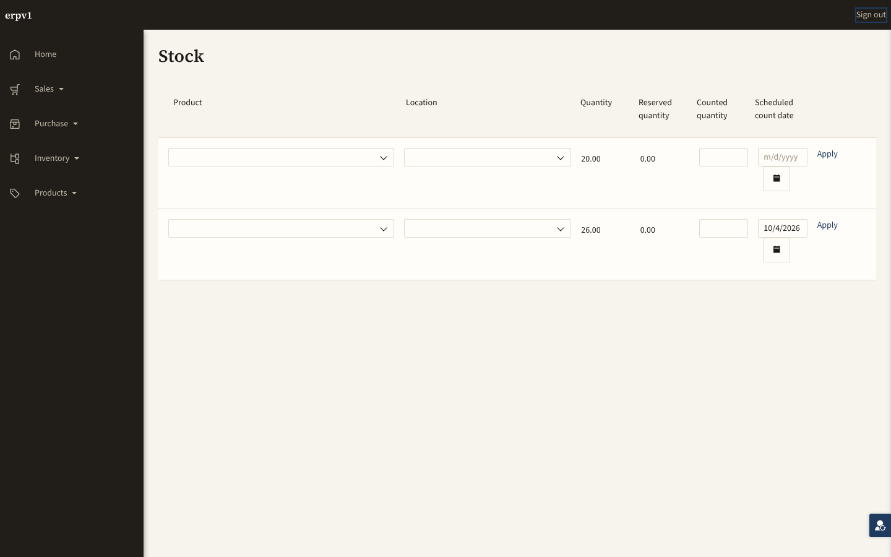
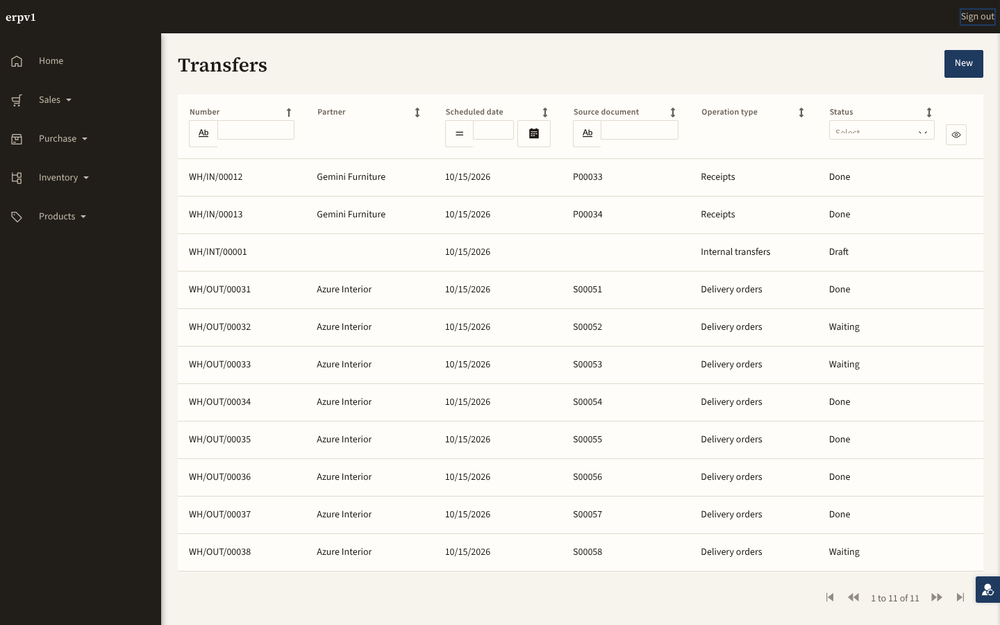
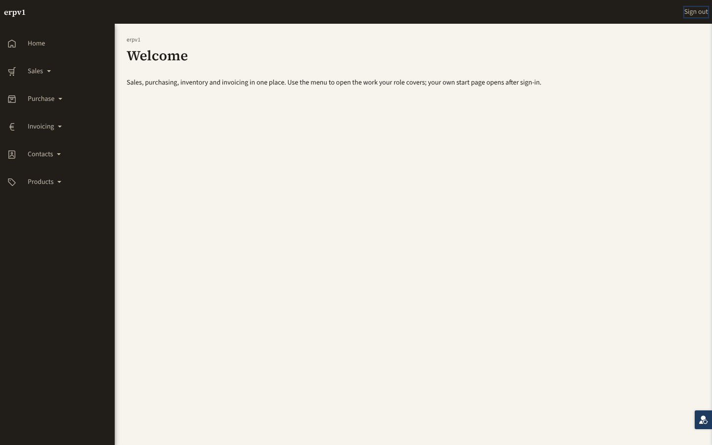
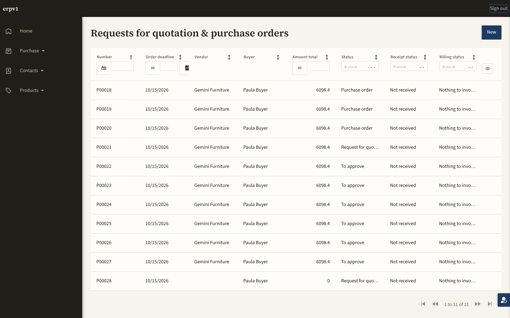

46 of 49 in-scope pages were never walked. Everything measured below describes the 3 pages that were reached. 84 checks also failed. A pass count computed over the walked minority is not a verdict on the application.
91 actions below account for every one of the 305 non-passing rows in this report. They are derived from the findings, not written by hand: each one names the file, page or microflow it applies to and the checks it would turn green. Ordering is by blast radius, never by count — one severed landing guard outranks thirteen accessibility findings because it is the reason thirteen other things were never measured at all.
1 check this closes
1 check this closes
1 check this closes
1 check this closes
1 check this closes
1 check this closes
1 check this closes
1 check this closes
1 check this closes
1 check this closes
1 check this closes
1 check this closes
1 check this closes
1 check this closes
1 check this closes
1 check this closes
1 check this closes
1 check this closes
1 check this closes
1 check this closes
1 check this closes
1 check this closes
1 check this closes
1 check this closes
1 check this closes
1 check this closes
1 check this closes
1 check this closes
1 check this closes
1 check this closes
1 check this closes
1 check this closes
1 check this closes
1 check this closes
1 check this closes
1 check this closes
1 check this closes
1 check this closes
1 check this closes
1 check this closes
1 check this closes
1 check this closes
1 check this closes
1 check this closes
1 check this closes
1 check this closes
2 checks this closes
page-join/j-inv-b1/step2
1 check this closes
1 check this closes
1 check this closes
1 check this closes
1 check this closes
1 check this closes
1 check this closes
1 check this closes
1 check this closes
1 check this closes
1 check this closes
1 check this closes
1 check this closes
1 check this closes
1 check this closes
1 check this closes
1 check this closes
1 check this closes
69 checks this closes
design-audit/rung7/a11y/Core.Tax_NewEdit
design-audit/rung7/a11y/Inventory.Transfer_NewEdit
design-audit/rung7/a11y/Inventory.ValidateTransfer_Popup
design-audit/rung7/a11y/Invoicing.CreditNote_Popup
design-audit/rung7/a11y/Invoicing.Invoice_NewEdit
design-audit/rung7/a11y/Invoicing.Payment_View
design-audit/rung7/a11y/Invoicing.RegisterPayment_Popup
design-audit/rung7/a11y/Partners.PartnerChild_NewEdit
design-audit/rung7/a11y/Partners.Partner_NewEdit
design-audit/rung7/a11y/Partners.UserProfile_Edit
design-audit/rung7/a11y/Products.Pricelist_NewEdit
design-audit/rung7/a11y/Products.ProductCategory_NewEdit
design-audit/rung7/a11y/Products.Product_NewEdit
design-audit/rung7/a11y/Products.UoMCategory_NewEdit
design-audit/rung7/a11y/Purchasing.PurchaseApproval_Task
design-audit/rung7/a11y/Purchasing.PurchaseOrder_NewEdit
design-audit/rung7/a11y/Purchasing.PurchaseOrder_View
design-audit/rung7/a11y/Sales.CreateInvoice_Popup
design-audit/rung7/a11y/Sales.QuotationTemplate_NewEdit
design-audit/rung7/a11y/Sales.SalesOrder_NewEdit
design-audit/rung7/a11y/Sales.SalesOrder_View
design-audit/rung7/a11y/Sales.SalesTeam_NewEdit
design-audit/rung7/overflow/Core.PaymentTerm_NewEdit
design-audit/rung7/overflow/Core.Tax_NewEdit
design-audit/rung7/overflow/Inventory.Transfer_NewEdit
design-audit/rung7/overflow/Inventory.ValidateTransfer_Popup
design-audit/rung7/overflow/Invoicing.CreditNote_Popup
design-audit/rung7/overflow/Invoicing.Invoice_NewEdit
design-audit/rung7/overflow/Invoicing.Payment_View
design-audit/rung7/overflow/Invoicing.RegisterPayment_Popup
design-audit/rung7/overflow/Partners.PartnerChild_NewEdit
design-audit/rung7/overflow/Partners.Partner_NewEdit
design-audit/rung7/overflow/Partners.UserProfile_Edit
design-audit/rung7/overflow/Products.Pricelist_NewEdit
design-audit/rung7/overflow/Products.ProductCategory_NewEdit
design-audit/rung7/overflow/Products.Product_NewEdit
design-audit/rung7/overflow/Products.UoMCategory_NewEdit
design-audit/rung7/overflow/Purchasing.PurchaseApproval_Task
design-audit/rung7/overflow/Purchasing.PurchaseOrder_NewEdit
design-audit/rung7/overflow/Purchasing.PurchaseOrder_View
design-audit/rung7/overflow/Sales.CreateInvoice_Popup
design-audit/rung7/overflow/Sales.QuotationTemplate_NewEdit
design-audit/rung7/overflow/Sales.SalesOrder_NewEdit
design-audit/rung7/overflow/Sales.SalesOrder_View
design-audit/rung7/overflow/Sales.SalesTeam_NewEdit
design-audit/rung7/structure/Core.PaymentTerm_NewEdit
design-audit/rung7/structure/Core.Tax_NewEdit
design-audit/rung7/structure/Inventory.Transfer_NewEdit
design-audit/rung7/structure/Inventory.ValidateTransfer_Popup
design-audit/rung7/structure/Invoicing.CreditNote_Popup
design-audit/rung7/structure/Invoicing.Invoice_NewEdit
design-audit/rung7/structure/Invoicing.Payment_View
design-audit/rung7/structure/Invoicing.RegisterPayment_Popup
design-audit/rung7/structure/Partners.PartnerChild_NewEdit
design-audit/rung7/structure/Partners.Partner_NewEdit
design-audit/rung7/structure/Partners.UserProfile_Edit
design-audit/rung7/structure/Products.Pricelist_NewEdit
design-audit/rung7/structure/Products.ProductCategory_NewEdit
design-audit/rung7/structure/Products.Product_NewEdit
design-audit/rung7/structure/Products.UoMCategory_NewEdit
design-audit/rung7/structure/Purchasing.PurchaseApproval_Task
design-audit/rung7/structure/Purchasing.PurchaseOrder_NewEdit
design-audit/rung7/structure/Purchasing.PurchaseOrder_View
design-audit/rung7/structure/Sales.CreateInvoice_Popup
design-audit/rung7/structure/Sales.QuotationTemplate_NewEdit
design-audit/rung7/structure/Sales.SalesOrder_NewEdit
design-audit/rung7/structure/Sales.SalesOrder_View
design-audit/rung7/structure/Sales.SalesTeam_NewEdit
5 checks this closes
design-audit/rung6/never-promoted/Core.Tax_Overview
design-audit/rung6/wireframe-chrome/Core.Tax_Overview
design-audit/rung7/raw-class-vs-designproperty/Core.Tax_Overview
design-audit/rung7/unmatched-class/Core.Tax_Overview
5 checks this closes
design-audit/rung6/never-promoted/Inventory.Transfer_Overview
design-audit/rung6/wireframe-chrome/Inventory.Transfer_Overview
design-audit/rung7/raw-class-vs-designproperty/Inventory.Transfer_Overview
design-audit/rung7/unmatched-class/Inventory.Transfer_Overview
5 checks this closes
design-audit/rung6/never-promoted/Invoicing.Invoice_Overview
design-audit/rung6/wireframe-chrome/Invoicing.Invoice_Overview
design-audit/rung7/raw-class-vs-designproperty/Invoicing.Invoice_Overview
design-audit/rung7/unmatched-class/Invoicing.Invoice_Overview
5 checks this closes
design-audit/rung6/never-promoted/Invoicing.Payment_Overview
design-audit/rung6/wireframe-chrome/Invoicing.Payment_Overview
design-audit/rung7/raw-class-vs-designproperty/Invoicing.Payment_Overview
design-audit/rung7/unmatched-class/Invoicing.Payment_Overview
5 checks this closes
design-audit/rung6/never-promoted/Products.Product_Overview
design-audit/rung6/wireframe-chrome/Products.Product_Overview
design-audit/rung7/raw-class-vs-designproperty/Products.Product_Overview
design-audit/rung7/unmatched-class/Products.Product_Overview
5 checks this closes
design-audit/rung6/never-promoted/Purchasing.PurchaseApproval_Inbox
design-audit/rung6/wireframe-chrome/Purchasing.PurchaseApproval_Inbox
design-audit/rung7/raw-class-vs-designproperty/Purchasing.PurchaseApproval_Inbox
design-audit/rung7/unmatched-class/Purchasing.PurchaseApproval_Inbox
5 checks this closes
design-audit/rung6/never-promoted/Purchasing.PurchaseOrder_Overview
design-audit/rung6/wireframe-chrome/Purchasing.PurchaseOrder_Overview
design-audit/rung7/raw-class-vs-designproperty/Purchasing.PurchaseOrder_Overview
design-audit/rung7/unmatched-class/Purchasing.PurchaseOrder_Overview
5 checks this closes
design-audit/rung6/never-promoted/Sales.QuotationTemplate_Overview
design-audit/rung6/wireframe-chrome/Sales.QuotationTemplate_Overview
design-audit/rung7/raw-class-vs-designproperty/Sales.QuotationTemplate_Overview
design-audit/rung7/unmatched-class/Sales.QuotationTemplate_Overview
5 checks this closes
design-audit/rung6/never-promoted/Sales.SalesOrder_Overview
design-audit/rung6/wireframe-chrome/Sales.SalesOrder_Overview
design-audit/rung7/raw-class-vs-designproperty/Sales.SalesOrder_Overview
design-audit/rung7/unmatched-class/Sales.SalesOrder_Overview
5 checks this closes
design-audit/rung6/never-promoted/Sales.SalesTeam_Overview
design-audit/rung6/wireframe-chrome/Sales.SalesTeam_Overview
design-audit/rung7/raw-class-vs-designproperty/Sales.SalesTeam_Overview
design-audit/rung7/unmatched-class/Sales.SalesTeam_Overview
4 checks this closes
design-audit/rung6/never-promoted/Inventory.Inventory_Dashboard
design-audit/rung6/wireframe-chrome/Inventory.Inventory_Dashboard
design-audit/rung7/unmatched-class/Inventory.Inventory_Dashboard
2 checks this closes
design-audit/rung6/wireframe-chrome/Invoicing.InvoiceAnalysis_Report
2 checks this closes
design-audit/rung6/wireframe-chrome/Purchasing.PurchaseAnalysis_Report
2 checks this closes
design-audit/rung6/wireframe-chrome/Sales.SalesAnalysis_Report
26 checks this closes
design-audit/rung7/structure/Core.Home_Web
design-audit/rung7/structure/Core.PaymentTerm_Overview
design-audit/rung7/structure/Core.Sequence_Overview
design-audit/rung7/structure/Core.Tax_Overview
design-audit/rung7/structure/Inventory.Inventory_Dashboard
design-audit/rung7/structure/Inventory.ReorderRule_Overview
design-audit/rung7/structure/Inventory.StockLevel_Overview
design-audit/rung7/structure/Inventory.Transfer_Overview
design-audit/rung7/structure/Inventory.Warehouse_Edit
design-audit/rung7/structure/Invoicing.InvoiceAnalysis_Report
design-audit/rung7/structure/Invoicing.Invoice_Overview
design-audit/rung7/structure/Invoicing.Payment_Overview
design-audit/rung7/structure/Partners.Partner_Overview
design-audit/rung7/structure/Products.Pricelist_Overview
design-audit/rung7/structure/Products.ProductCategory_Overview
design-audit/rung7/structure/Products.Product_Overview
design-audit/rung7/structure/Products.UoMCategory_Overview
design-audit/rung7/structure/Purchasing.PurchaseAnalysis_Report
design-audit/rung7/structure/Purchasing.PurchaseApproval_Inbox
design-audit/rung7/structure/Purchasing.PurchaseOrder_Overview
design-audit/rung7/structure/Purchasing.VendorPrice_Overview
design-audit/rung7/structure/Sales.QuotationTemplate_Overview
design-audit/rung7/structure/Sales.SalesAnalysis_Report
design-audit/rung7/structure/Sales.SalesOrder_Overview
design-audit/rung7/structure/Sales.SalesTeam_Overview
16 checks this closes
design-audit/rung7/a11y/Invoicing.Invoice_Overview
design-audit/rung7/a11y/Invoicing.Payment_Overview
design-audit/rung7/a11y/Partners.Partner_Overview
design-audit/rung7/a11y/Products.Pricelist_Overview
design-audit/rung7/a11y/Products.ProductCategory_Overview
design-audit/rung7/a11y/Products.Product_Overview
design-audit/rung7/a11y/Products.UoMCategory_Overview
design-audit/rung7/a11y/Purchasing.PurchaseAnalysis_Report
design-audit/rung7/a11y/Purchasing.PurchaseApproval_Inbox
design-audit/rung7/a11y/Purchasing.PurchaseOrder_Overview
design-audit/rung7/a11y/Purchasing.VendorPrice_Overview
design-audit/rung7/a11y/Sales.QuotationTemplate_Overview
design-audit/rung7/a11y/Sales.SalesAnalysis_Report
design-audit/rung7/a11y/Sales.SalesOrder_Overview
design-audit/rung7/a11y/Sales.SalesTeam_Overview
14 checks this closes
design-audit/rung6/wireframe-conformance/Inventory.Inventory_Dashboard
design-audit/rung6/wireframe-conformance/Inventory.Transfer_Overview
design-audit/rung6/wireframe-conformance/Invoicing.InvoiceAnalysis_Report
design-audit/rung6/wireframe-conformance/Invoicing.Invoice_Overview
design-audit/rung6/wireframe-conformance/Invoicing.Payment_Overview
design-audit/rung6/wireframe-conformance/Products.Product_Overview
design-audit/rung6/wireframe-conformance/Purchasing.PurchaseAnalysis_Report
design-audit/rung6/wireframe-conformance/Purchasing.PurchaseApproval_Inbox
design-audit/rung6/wireframe-conformance/Purchasing.PurchaseOrder_Overview
design-audit/rung6/wireframe-conformance/Sales.QuotationTemplate_Overview
design-audit/rung6/wireframe-conformance/Sales.SalesAnalysis_Report
design-audit/rung6/wireframe-conformance/Sales.SalesOrder_Overview
design-audit/rung6/wireframe-conformance/Sales.SalesTeam_Overview
4 checks this closes
design-audit/rung6/invented-class/Invoicing.InvoiceAnalysis_Report
design-audit/rung6/invented-class/Purchasing.PurchaseAnalysis_Report
design-audit/rung6/invented-class/Sales.SalesAnalysis_Report
4 checks this closes
design-audit/rung7/raw-class-vs-designproperty/Invoicing.InvoiceAnalysis_Report
design-audit/rung7/raw-class-vs-designproperty/Purchasing.PurchaseAnalysis_Report
design-audit/rung7/raw-class-vs-designproperty/Sales.SalesAnalysis_Report
4 checks this closes
design-audit/rung7/unmatched-class/Invoicing.InvoiceAnalysis_Report
design-audit/rung7/unmatched-class/Purchasing.PurchaseAnalysis_Report
design-audit/rung7/unmatched-class/Sales.SalesAnalysis_Report
1 check this closes
1 check this closes
22 checks this closes
conformance/invoicing/f008-invoicing-payments-actors
conformance/invoicing/f008-invoicing-payments-microflows-0
conformance/invoicing/f008-invoicing-payments-microflows-1
conformance/invoicing/f008-invoicing-payments-microflows-10
conformance/invoicing/f008-invoicing-payments-microflows-11
conformance/invoicing/f008-invoicing-payments-microflows-12
conformance/invoicing/f008-invoicing-payments-microflows-2
conformance/invoicing/f008-invoicing-payments-microflows-4
conformance/invoicing/f008-invoicing-payments-microflows-6
conformance/invoicing/f008-invoicing-payments-microflows-7
conformance/invoicing/f008-invoicing-payments-microflows-8
conformance/invoicing/f008-invoicing-payments-microflows-9
conformance/invoicing/f008-invoicing-payments-pages-0
conformance/invoicing/f008-invoicing-payments-pages-1
conformance/invoicing/f008-invoicing-payments-pages-2
conformance/invoicing/f008-invoicing-payments-pages-3
conformance/invoicing/f008-invoicing-payments-pages-4
conformance/invoicing/f008-invoicing-payments-pages-5
conformance/invoicing/f008-invoicing-payments-pages-8
conformance/invoicing/f008-invoicing-payments-pages-9
conformance/invoicing/f008-invoicing-payments-viewentities-0
15 checks this closes
loop/core/journeys-positive-control-must-detect-a-broken-precondition
loop/core/review-model-vs-decided-report-json
loop/inventory/design-audit-rungs-6-7-ui-a11y-informational
loop/inventory/journeys-positive-control-must-detect-a-broken-precondition
loop/invoicing/design-audit-rungs-6-7-ui-a11y-informational
loop/invoicing/journeys-positive-control-must-detect-a-broken-precondition
loop/partners/design-audit-rungs-6-7-ui-a11y-informational
loop/partners/journeys-positive-control-must-detect-a-broken-precondition
loop/products/design-audit-rungs-6-7-ui-a11y-informational
loop/products/journeys-positive-control-must-detect-a-broken-precondition
loop/purchasing/design-audit-rungs-6-7-ui-a11y-informational
loop/purchasing/journeys-positive-control-must-detect-a-broken-precondition
loop/sales/design-audit-rungs-6-7-ui-a11y-informational
loop/sales/journeys-positive-control-must-detect-a-broken-precondition
3 checks this closes
control/trace-negative
control/trace-order
Products.Manager
8 pages in scope ⌀ NONE WALKED ⌀ 8 never walkedWhat this persona was trying to do: reach the 8 pages below, in the order the process runs them. Each row answers all six questions — which tests ran, where the page sits, what data change was expected, whether it was seen, whether the page matches its wireframe, and whether it matches general design practice. The step-by-step narrative with screenshots is rendered once, further down; the links below jump into it.
| Page | Where in the process | Which tests ran | Data change expected → seen | Wireframe | Design practice |
|---|---|---|---|---|---|
| Products.Pricelist_NewEdit ⌀ NEVER WALKED | should have been covered by J-PRODUCTS-01 | Nothing ran here. No behavioural claim about this page has been tested in either direction — not its data writes, not its microflows, not what it says on screen. It is unknown, not untested. | ✓ PASS | ⌀ DID NOT RUN (0 fail / 3 not run / 0 skipped) | |
| Products.Pricelist_Overview ⌀ NEVER WALKED | should have been covered by J-PRODUCTS-01 | Nothing ran here. No behavioural claim about this page has been tested in either direction — not its data writes, not its microflows, not what it says on screen. It is unknown, not untested. | ✓ PASS | ✕ FAIL (2 fail / 0 not run / 0 skipped) | |
| Products.ProductCategory_NewEdit ⌀ NEVER WALKED | should have been covered by J-PRODUCTS-01 | Nothing ran here. No behavioural claim about this page has been tested in either direction — not its data writes, not its microflows, not what it says on screen. It is unknown, not untested. | ✓ PASS | ⌀ DID NOT RUN (0 fail / 3 not run / 0 skipped) | |
| Products.ProductCategory_Overview ⌀ NEVER WALKED | should have been covered by J-PRODUCTS-01 | Nothing ran here. No behavioural claim about this page has been tested in either direction — not its data writes, not its microflows, not what it says on screen. It is unknown, not untested. | ✓ PASS | ✕ FAIL (2 fail / 0 not run / 0 skipped) | |
| Products.Product_NewEdit ⌀ NEVER WALKED | should have been covered by J-PRODUCTS-01 | Nothing ran here. No behavioural claim about this page has been tested in either direction — not its data writes, not its microflows, not what it says on screen. It is unknown, not untested. | ✓ PASS | ⌀ DID NOT RUN (0 fail / 3 not run / 0 skipped) | |
| Products.Product_Overview ⌀ NEVER WALKED | should have been covered by J-PRODUCTS-01 | Nothing ran here. No behavioural claim about this page has been tested in either direction — not its data writes, not its microflows, not what it says on screen. It is unknown, not untested. | ⌀ DID NOT RUN | ✕ FAIL (2 fail / 6 not run / 0 skipped) | |
| Products.UoMCategory_NewEdit ⌀ NEVER WALKED | should have been covered by J-PRODUCTS-01 | Nothing ran here. No behavioural claim about this page has been tested in either direction — not its data writes, not its microflows, not what it says on screen. It is unknown, not untested. | ✓ PASS | ⌀ DID NOT RUN (0 fail / 3 not run / 0 skipped) | |
| Products.UoMCategory_Overview ⌀ NEVER WALKED | should have been covered by J-PRODUCTS-01 | Nothing ran here. No behavioural claim about this page has been tested in either direction — not its data writes, not its microflows, not what it says on screen. It is unknown, not untested. | ✓ PASS | ✕ FAIL (2 fail / 0 not run / 0 skipped) | |
Sales.Manager
8 pages in scope ✓ 1 walked ⌀ 7 never walkedWhat this persona was trying to do: reach the 8 pages below, in the order the process runs them. Each row answers all six questions — which tests ran, where the page sits, what data change was expected, whether it was seen, whether the page matches its wireframe, and whether it matches general design practice. The step-by-step narrative with screenshots is rendered once, further down; the links below jump into it.
| Page | Where in the process | Which tests ran | Data change expected → seen | Wireframe | Design practice |
|---|---|---|---|---|---|
| Sales.CreateInvoice_Popup ✓ PASS | J-INV-B1 step 3 of 7 Create invoice: the popup explains what is invoiced | 2 pass · 0 fail · 0 not run ui | — none declared — no write declared | ✓ PASS | ⌀ DID NOT RUN (0 fail / 3 not run / 0 skipped) |
| Sales.QuotationTemplate_NewEdit ⌀ NEVER WALKED | should have been covered by J-SALES-01 | Nothing ran here. No behavioural claim about this page has been tested in either direction — not its data writes, not its microflows, not what it says on screen. It is unknown, not untested. | ✓ PASS | ⌀ DID NOT RUN (0 fail / 3 not run / 0 skipped) | |
| Sales.QuotationTemplate_Overview ⌀ NEVER WALKED | should have been covered by J-SALES-01 | Nothing ran here. No behavioural claim about this page has been tested in either direction — not its data writes, not its microflows, not what it says on screen. It is unknown, not untested. | ⌀ DID NOT RUN | ✕ FAIL (2 fail / 6 not run / 0 skipped) | |
| Sales.SalesAnalysis_Report ⌀ NEVER WALKED | should have been covered by J-SALES-01 | Nothing ran here. No behavioural claim about this page has been tested in either direction — not its data writes, not its microflows, not what it says on screen. It is unknown, not untested. | ✕ FAIL | ✕ FAIL (5 fail / 3 not run / 0 skipped) | |
| Sales.SalesOrder_NewEdit ⌀ NEVER WALKED | should have been covered by J-SALES-01 | Nothing ran here. No behavioural claim about this page has been tested in either direction — not its data writes, not its microflows, not what it says on screen. It is unknown, not untested. | ✓ PASS | ⌀ DID NOT RUN (0 fail / 3 not run / 0 skipped) | |
| Sales.SalesOrder_Overview ⌀ NEVER WALKED | should have been covered by J-SALES-01 | Nothing ran here. No behavioural claim about this page has been tested in either direction — not its data writes, not its microflows, not what it says on screen. It is unknown, not untested. | ⌀ DID NOT RUN | ✕ FAIL (2 fail / 6 not run / 0 skipped) | |
| Sales.SalesTeam_NewEdit ⌀ NEVER WALKED | should have been covered by J-SALES-01 | Nothing ran here. No behavioural claim about this page has been tested in either direction — not its data writes, not its microflows, not what it says on screen. It is unknown, not untested. | ✓ PASS | ⌀ DID NOT RUN (0 fail / 3 not run / 0 skipped) | |
| Sales.SalesTeam_Overview ⌀ NEVER WALKED | should have been covered by J-SALES-01 | Nothing ran here. No behavioural claim about this page has been tested in either direction — not its data writes, not its microflows, not what it says on screen. It is unknown, not untested. | ⌀ DID NOT RUN | ✕ FAIL (2 fail / 6 not run / 0 skipped) | |
Inventory.Manager
7 pages in scope ⌀ NONE WALKED ⌀ 7 never walkedWhat this persona was trying to do: reach the 7 pages below, in the order the process runs them. Each row answers all six questions — which tests ran, where the page sits, what data change was expected, whether it was seen, whether the page matches its wireframe, and whether it matches general design practice. The step-by-step narrative with screenshots is rendered once, further down; the links below jump into it.
| Page | Where in the process | Which tests ran | Data change expected → seen | Wireframe | Design practice |
|---|---|---|---|---|---|
| Inventory.Inventory_Dashboard ⌀ NEVER WALKED | should have been covered by J-INV-01 | Nothing ran here. No behavioural claim about this page has been tested in either direction — not its data writes, not its microflows, not what it says on screen. It is unknown, not untested. | ⌀ DID NOT RUN | ✕ FAIL (2 fail / 5 not run / 0 skipped) | |
| Inventory.ReorderRule_Overview ⌀ NEVER WALKED | should have been covered by J-INV-01 | Nothing ran here. No behavioural claim about this page has been tested in either direction — not its data writes, not its microflows, not what it says on screen. It is unknown, not untested. | ✓ PASS | ✕ FAIL (1 fail / 0 not run / 0 skipped) | |
| Inventory.StockLevel_Overview ⌀ NEVER WALKED | should have been covered by J-INV-01 | Nothing ran here. No behavioural claim about this page has been tested in either direction — not its data writes, not its microflows, not what it says on screen. It is unknown, not untested. | ✓ PASS | ✕ FAIL (1 fail / 0 not run / 0 skipped) | |
| Inventory.Transfer_NewEdit ⌀ NEVER WALKED | should have been covered by J-INV-01 | Nothing ran here. No behavioural claim about this page has been tested in either direction — not its data writes, not its microflows, not what it says on screen. It is unknown, not untested. | ✓ PASS | ⌀ DID NOT RUN (0 fail / 3 not run / 0 skipped) | |
| Inventory.Transfer_Overview ⌀ NEVER WALKED | should have been covered by J-INV-01 | Nothing ran here. No behavioural claim about this page has been tested in either direction — not its data writes, not its microflows, not what it says on screen. It is unknown, not untested. | ⌀ DID NOT RUN | ✕ FAIL (1 fail / 6 not run / 0 skipped) | |
| Inventory.ValidateTransfer_Popup ⌀ NEVER WALKED | should have been covered by J-INV-01 | Nothing ran here. No behavioural claim about this page has been tested in either direction — not its data writes, not its microflows, not what it says on screen. It is unknown, not untested. | ✓ PASS | ⌀ DID NOT RUN (0 fail / 7 not run / 0 skipped) | |
| Inventory.Warehouse_Edit ⌀ NEVER WALKED | should have been covered by J-INV-01 | Nothing ran here. No behavioural claim about this page has been tested in either direction — not its data writes, not its microflows, not what it says on screen. It is unknown, not untested. | ✓ PASS | ✕ FAIL (1 fail / 0 not run / 0 skipped) | |
Invoicing.Manager
7 pages in scope ✓ 2 walked ⌀ 5 never walkedWhat this persona was trying to do: reach the 7 pages below, in the order the process runs them. Each row answers all six questions — which tests ran, where the page sits, what data change was expected, whether it was seen, whether the page matches its wireframe, and whether it matches general design practice. The step-by-step narrative with screenshots is rendered once, further down; the links below jump into it.
| Page | Where in the process | Which tests ran | Data change expected → seen | Wireframe | Design practice |
|---|---|---|---|---|---|
| Invoicing.CreditNote_Popup ⌀ NEVER WALKED | should have been covered by J-INV-B1 | Nothing ran here. No behavioural claim about this page has been tested in either direction — not its data writes, not its microflows, not what it says on screen. It is unknown, not untested. | ✓ PASS | ⌀ DID NOT RUN (0 fail / 3 not run / 0 skipped) | |
| Invoicing.InvoiceAnalysis_Report ⌀ NEVER WALKED | should have been covered by J-INV-B1 | Nothing ran here. No behavioural claim about this page has been tested in either direction — not its data writes, not its microflows, not what it says on screen. It is unknown, not untested. | ✕ FAIL | ✕ FAIL (4 fail / 3 not run / 0 skipped) | |
| Invoicing.Invoice_NewEdit ✓ PASS | J-INV-B1 step 4 of 7 Confirm the popup: a draft invoice opens | 3 pass · 0 fail · 0 not run ui, data | Invoicing.Invoice delta 1✓ 1 of 1 data checks agreed | ✓ PASS | ⌀ DID NOT RUN (0 fail / 3 not run / 0 skipped) |
| Invoicing.Invoice_NewEdit ✓ PASS | J-INV-B1 step 5 of 7 Confirm the invoice: numbered INV/, Register payment offered | 2 pass · 0 fail · 0 not run ui | — none declared — no write declared | ✓ PASS | ⌀ DID NOT RUN (0 fail / 3 not run / 0 skipped) |
| Invoicing.Invoice_Overview ⌀ NEVER WALKED | should have been covered by J-INV-B1 | Nothing ran here. No behavioural claim about this page has been tested in either direction — not its data writes, not its microflows, not what it says on screen. It is unknown, not untested. | ⌀ DID NOT RUN | ✕ FAIL (2 fail / 6 not run / 0 skipped) | |
| Invoicing.Payment_Overview ⌀ NEVER WALKED | should have been covered by J-INV-B1 | Nothing ran here. No behavioural claim about this page has been tested in either direction — not its data writes, not its microflows, not what it says on screen. It is unknown, not untested. | ⌀ DID NOT RUN | ✕ FAIL (2 fail / 6 not run / 0 skipped) | |
| Invoicing.Payment_View ⌀ NEVER WALKED | should have been covered by J-INV-B1 | Nothing ran here. No behavioural claim about this page has been tested in either direction — not its data writes, not its microflows, not what it says on screen. It is unknown, not untested. | ✓ PASS | ⌀ DID NOT RUN (0 fail / 3 not run / 0 skipped) | |
| Invoicing.RegisterPayment_Popup ✓ PASS | J-INV-B1 step 6 of 7 Register payment: the popup proposes the amount due | 1 pass · 0 fail · 0 not run ui | — none declared — no write declared | ✓ PASS | ⌀ DID NOT RUN (0 fail / 3 not run / 0 skipped) |
| Invoicing.RegisterPayment_Popup ✓ PASS | J-INV-B1 step 7 of 7 Pay 10.00 of it | 2 pass · 0 fail · 0 not run ui, data | Invoicing.Payment delta 1✓ 1 of 1 data checks agreed | ✓ PASS | ⌀ DID NOT RUN (0 fail / 3 not run / 0 skipped) |
Core.Admin
6 pages in scope ⌀ NONE WALKED ⌀ 6 never walkedWhat this persona was trying to do: reach the 6 pages below, in the order the process runs them. Each row answers all six questions — which tests ran, where the page sits, what data change was expected, whether it was seen, whether the page matches its wireframe, and whether it matches general design practice. The step-by-step narrative with screenshots is rendered once, further down; the links below jump into it.
| Page | Where in the process | Which tests ran | Data change expected → seen | Wireframe | Design practice |
|---|---|---|---|---|---|
| Core.Company_Edit ⌀ NEVER WALKED | should have been covered by J-CORE-01 | Nothing ran here. No behavioural claim about this page has been tested in either direction — not its data writes, not its microflows, not what it says on screen. It is unknown, not untested. | ✓ PASS | ✕ FAIL (2 fail / 0 not run / 0 skipped) | |
| Core.PaymentTerm_NewEdit ⌀ NEVER WALKED | should have been covered by J-CORE-01 | Nothing ran here. No behavioural claim about this page has been tested in either direction — not its data writes, not its microflows, not what it says on screen. It is unknown, not untested. | ✓ PASS | ⌀ DID NOT RUN (0 fail / 3 not run / 0 skipped) | |
| Core.PaymentTerm_Overview ⌀ NEVER WALKED | should have been covered by J-CORE-01 | Nothing ran here. No behavioural claim about this page has been tested in either direction — not its data writes, not its microflows, not what it says on screen. It is unknown, not untested. | ✓ PASS | ✕ FAIL (1 fail / 0 not run / 0 skipped) | |
| Core.Sequence_Overview ⌀ NEVER WALKED | should have been covered by J-CORE-01 | Nothing ran here. No behavioural claim about this page has been tested in either direction — not its data writes, not its microflows, not what it says on screen. It is unknown, not untested. | ✓ PASS | ✕ FAIL (1 fail / 0 not run / 0 skipped) | |
| Core.Tax_NewEdit ⌀ NEVER WALKED | should have been covered by J-CORE-01 | Nothing ran here. No behavioural claim about this page has been tested in either direction — not its data writes, not its microflows, not what it says on screen. It is unknown, not untested. | ✓ PASS | ⌀ DID NOT RUN (0 fail / 3 not run / 0 skipped) | |
| Core.Tax_Overview ⌀ NEVER WALKED | should have been covered by J-CORE-01 | Nothing ran here. No behavioural claim about this page has been tested in either direction — not its data writes, not its microflows, not what it says on screen. It is unknown, not untested. | ⌀ DID NOT RUN | ✕ FAIL (1 fail / 6 not run / 0 skipped) | |
Invoicing.Billing
6 pages in scope ✓ 2 walked ⌀ 4 never walkedWhat this persona was trying to do: reach the 6 pages below, in the order the process runs them. Each row answers all six questions — which tests ran, where the page sits, what data change was expected, whether it was seen, whether the page matches its wireframe, and whether it matches general design practice. The step-by-step narrative with screenshots is rendered once, further down; the links below jump into it.
| Page | Where in the process | Which tests ran | Data change expected → seen | Wireframe | Design practice |
|---|---|---|---|---|---|
| Invoicing.CreditNote_Popup ⌀ NEVER WALKED | should have been covered by J-INV-B1 | Nothing ran here. No behavioural claim about this page has been tested in either direction — not its data writes, not its microflows, not what it says on screen. It is unknown, not untested. | ✓ PASS | ⌀ DID NOT RUN (0 fail / 3 not run / 0 skipped) | |
| Invoicing.Invoice_NewEdit ✓ PASS | J-INV-B1 step 4 of 7 Confirm the popup: a draft invoice opens | 3 pass · 0 fail · 0 not run ui, data | Invoicing.Invoice delta 1✓ 1 of 1 data checks agreed | ✓ PASS | ⌀ DID NOT RUN (0 fail / 3 not run / 0 skipped) |
| Invoicing.Invoice_NewEdit ✓ PASS | J-INV-B1 step 5 of 7 Confirm the invoice: numbered INV/, Register payment offered | 2 pass · 0 fail · 0 not run ui | — none declared — no write declared | ✓ PASS | ⌀ DID NOT RUN (0 fail / 3 not run / 0 skipped) |
| Invoicing.Invoice_Overview ⌀ NEVER WALKED | should have been covered by J-INV-B1 | Nothing ran here. No behavioural claim about this page has been tested in either direction — not its data writes, not its microflows, not what it says on screen. It is unknown, not untested. | ⌀ DID NOT RUN | ✕ FAIL (2 fail / 6 not run / 0 skipped) | |
| Invoicing.Payment_Overview ⌀ NEVER WALKED | should have been covered by J-INV-B1 | Nothing ran here. No behavioural claim about this page has been tested in either direction — not its data writes, not its microflows, not what it says on screen. It is unknown, not untested. | ⌀ DID NOT RUN | ✕ FAIL (2 fail / 6 not run / 0 skipped) | |
| Invoicing.Payment_View ⌀ NEVER WALKED | should have been covered by J-INV-B1 | Nothing ran here. No behavioural claim about this page has been tested in either direction — not its data writes, not its microflows, not what it says on screen. It is unknown, not untested. | ✓ PASS | ⌀ DID NOT RUN (0 fail / 3 not run / 0 skipped) | |
| Invoicing.RegisterPayment_Popup ✓ PASS | J-INV-B1 step 6 of 7 Register payment: the popup proposes the amount due | 1 pass · 0 fail · 0 not run ui | — none declared — no write declared | ✓ PASS | ⌀ DID NOT RUN (0 fail / 3 not run / 0 skipped) |
| Invoicing.RegisterPayment_Popup ✓ PASS | J-INV-B1 step 7 of 7 Pay 10.00 of it | 2 pass · 0 fail · 0 not run ui, data | Invoicing.Payment delta 1✓ 1 of 1 data checks agreed | ✓ PASS | ⌀ DID NOT RUN (0 fail / 3 not run / 0 skipped) |
Purchasing.Manager
6 pages in scope ⌀ NONE WALKED ⌀ 6 never walkedWhat this persona was trying to do: reach the 6 pages below, in the order the process runs them. Each row answers all six questions — which tests ran, where the page sits, what data change was expected, whether it was seen, whether the page matches its wireframe, and whether it matches general design practice. The step-by-step narrative with screenshots is rendered once, further down; the links below jump into it.
| Page | Where in the process | Which tests ran | Data change expected → seen | Wireframe | Design practice |
|---|---|---|---|---|---|
| Purchasing.PurchaseAnalysis_Report ⌀ NEVER WALKED | should have been covered by J-PURCH-01 | Nothing ran here. No behavioural claim about this page has been tested in either direction — not its data writes, not its microflows, not what it says on screen. It is unknown, not untested. | ✕ FAIL | ✕ FAIL (5 fail / 3 not run / 0 skipped) | |
| Purchasing.PurchaseApproval_Inbox ⌀ NEVER WALKED | should have been covered by J-PURCH-01 | Nothing ran here. No behavioural claim about this page has been tested in either direction — not its data writes, not its microflows, not what it says on screen. It is unknown, not untested. | ⌀ DID NOT RUN | ✕ FAIL (2 fail / 6 not run / 0 skipped) | |
| Purchasing.PurchaseApproval_Task ⌀ NEVER WALKED | should have been covered by J-PURCH-01 | Nothing ran here. No behavioural claim about this page has been tested in either direction — not its data writes, not its microflows, not what it says on screen. It is unknown, not untested. | ✓ PASS | ⌀ DID NOT RUN (0 fail / 3 not run / 0 skipped) | |
| Purchasing.PurchaseOrder_NewEdit ⌀ NEVER WALKED | should have been covered by J-PURCH-01 | Nothing ran here. No behavioural claim about this page has been tested in either direction — not its data writes, not its microflows, not what it says on screen. It is unknown, not untested. | ✓ PASS | ⌀ DID NOT RUN (0 fail / 3 not run / 0 skipped) | |
| Purchasing.PurchaseOrder_Overview ⌀ NEVER WALKED | should have been covered by J-PURCH-01 | Nothing ran here. No behavioural claim about this page has been tested in either direction — not its data writes, not its microflows, not what it says on screen. It is unknown, not untested. | ⌀ DID NOT RUN | ✕ FAIL (2 fail / 6 not run / 0 skipped) | |
| Purchasing.VendorPrice_Overview ⌀ NEVER WALKED | should have been covered by J-PURCH-01 | Nothing ran here. No behavioural claim about this page has been tested in either direction — not its data writes, not its microflows, not what it says on screen. It is unknown, not untested. | ✓ PASS | ✕ FAIL (2 fail / 0 not run / 0 skipped) | |
Inventory.User
5 pages in scope ⌀ NONE WALKED ⌀ 5 never walkedWhat this persona was trying to do: reach the 5 pages below, in the order the process runs them. Each row answers all six questions — which tests ran, where the page sits, what data change was expected, whether it was seen, whether the page matches its wireframe, and whether it matches general design practice. The step-by-step narrative with screenshots is rendered once, further down; the links below jump into it.
| Page | Where in the process | Which tests ran | Data change expected → seen | Wireframe | Design practice |
|---|---|---|---|---|---|
| Inventory.Inventory_Dashboard ⌀ NEVER WALKED | should have been covered by J-INV-01 | Nothing ran here. No behavioural claim about this page has been tested in either direction — not its data writes, not its microflows, not what it says on screen. It is unknown, not untested. | ⌀ DID NOT RUN | ✕ FAIL (2 fail / 5 not run / 0 skipped) | |
| Inventory.StockLevel_Overview ⌀ NEVER WALKED | should have been covered by J-INV-01 | Nothing ran here. No behavioural claim about this page has been tested in either direction — not its data writes, not its microflows, not what it says on screen. It is unknown, not untested. | ✓ PASS | ✕ FAIL (1 fail / 0 not run / 0 skipped) | |
| Inventory.Transfer_NewEdit ⌀ NEVER WALKED | should have been covered by J-INV-01 | Nothing ran here. No behavioural claim about this page has been tested in either direction — not its data writes, not its microflows, not what it says on screen. It is unknown, not untested. | ✓ PASS | ⌀ DID NOT RUN (0 fail / 3 not run / 0 skipped) | |
| Inventory.Transfer_Overview ⌀ NEVER WALKED | should have been covered by J-INV-01 | Nothing ran here. No behavioural claim about this page has been tested in either direction — not its data writes, not its microflows, not what it says on screen. It is unknown, not untested. | ⌀ DID NOT RUN | ✕ FAIL (1 fail / 6 not run / 0 skipped) | |
| Inventory.ValidateTransfer_Popup ⌀ NEVER WALKED | should have been covered by J-INV-01 | Nothing ran here. No behavioural claim about this page has been tested in either direction — not its data writes, not its microflows, not what it says on screen. It is unknown, not untested. | ✓ PASS | ⌀ DID NOT RUN (0 fail / 7 not run / 0 skipped) | |
Core.Config
4 pages in scope ⌀ NONE WALKED ⌀ 4 never walkedWhat this persona was trying to do: reach the 4 pages below, in the order the process runs them. Each row answers all six questions — which tests ran, where the page sits, what data change was expected, whether it was seen, whether the page matches its wireframe, and whether it matches general design practice. The step-by-step narrative with screenshots is rendered once, further down; the links below jump into it.
| Page | Where in the process | Which tests ran | Data change expected → seen | Wireframe | Design practice |
|---|---|---|---|---|---|
| Core.PaymentTerm_NewEdit ⌀ NEVER WALKED | should have been covered by J-CORE-01 | Nothing ran here. No behavioural claim about this page has been tested in either direction — not its data writes, not its microflows, not what it says on screen. It is unknown, not untested. | ✓ PASS | ⌀ DID NOT RUN (0 fail / 3 not run / 0 skipped) | |
| Core.PaymentTerm_Overview ⌀ NEVER WALKED | should have been covered by J-CORE-01 | Nothing ran here. No behavioural claim about this page has been tested in either direction — not its data writes, not its microflows, not what it says on screen. It is unknown, not untested. | ✓ PASS | ✕ FAIL (1 fail / 0 not run / 0 skipped) | |
| Core.Tax_NewEdit ⌀ NEVER WALKED | should have been covered by J-CORE-01 | Nothing ran here. No behavioural claim about this page has been tested in either direction — not its data writes, not its microflows, not what it says on screen. It is unknown, not untested. | ✓ PASS | ⌀ DID NOT RUN (0 fail / 3 not run / 0 skipped) | |
| Core.Tax_Overview ⌀ NEVER WALKED | should have been covered by J-CORE-01 | Nothing ran here. No behavioural claim about this page has been tested in either direction — not its data writes, not its microflows, not what it says on screen. It is unknown, not untested. | ⌀ DID NOT RUN | ✕ FAIL (1 fail / 6 not run / 0 skipped) | |
Partners.Admin
3 pages in scope ⌀ NONE WALKED ⌀ 3 never walkedWhat this persona was trying to do: reach the 3 pages below, in the order the process runs them. Each row answers all six questions — which tests ran, where the page sits, what data change was expected, whether it was seen, whether the page matches its wireframe, and whether it matches general design practice. The step-by-step narrative with screenshots is rendered once, further down; the links below jump into it.
| Page | Where in the process | Which tests ran | Data change expected → seen | Wireframe | Design practice |
|---|---|---|---|---|---|
| Partners.Partner_NewEdit ⌀ NEVER WALKED | should have been covered by J-PARTNERS-01 | Nothing ran here. No behavioural claim about this page has been tested in either direction — not its data writes, not its microflows, not what it says on screen. It is unknown, not untested. | ✓ PASS | ⌀ DID NOT RUN (0 fail / 3 not run / 0 skipped) | |
| Partners.Partner_Overview ⌀ NEVER WALKED | should have been covered by J-PARTNERS-01 | Nothing ran here. No behavioural claim about this page has been tested in either direction — not its data writes, not its microflows, not what it says on screen. It is unknown, not untested. | ✓ PASS | ✕ FAIL (2 fail / 0 not run / 0 skipped) | |
| Partners.UserProfile_Edit ⌀ NEVER WALKED | should have been covered by J-PARTNERS-01 | Nothing ran here. No behavioural claim about this page has been tested in either direction — not its data writes, not its microflows, not what it says on screen. It is unknown, not untested. | ✓ PASS | ⌀ DID NOT RUN (0 fail / 3 not run / 0 skipped) | |
Partners.Editor
3 pages in scope ⌀ NONE WALKED ⌀ 3 never walkedWhat this persona was trying to do: reach the 3 pages below, in the order the process runs them. Each row answers all six questions — which tests ran, where the page sits, what data change was expected, whether it was seen, whether the page matches its wireframe, and whether it matches general design practice. The step-by-step narrative with screenshots is rendered once, further down; the links below jump into it.
| Page | Where in the process | Which tests ran | Data change expected → seen | Wireframe | Design practice |
|---|---|---|---|---|---|
| Partners.PartnerChild_NewEdit ⌀ NEVER WALKED | should have been covered by J-PARTNERS-01 | Nothing ran here. No behavioural claim about this page has been tested in either direction — not its data writes, not its microflows, not what it says on screen. It is unknown, not untested. | ✓ PASS | ⌀ DID NOT RUN (0 fail / 3 not run / 0 skipped) | |
| Partners.Partner_NewEdit ⌀ NEVER WALKED | should have been covered by J-PARTNERS-01 | Nothing ran here. No behavioural claim about this page has been tested in either direction — not its data writes, not its microflows, not what it says on screen. It is unknown, not untested. | ✓ PASS | ⌀ DID NOT RUN (0 fail / 3 not run / 0 skipped) | |
| Partners.Partner_Overview ⌀ NEVER WALKED | should have been covered by J-PARTNERS-01 | Nothing ran here. No behavioural claim about this page has been tested in either direction — not its data writes, not its microflows, not what it says on screen. It is unknown, not untested. | ✓ PASS | ✕ FAIL (2 fail / 0 not run / 0 skipped) | |
Purchasing.User
3 pages in scope ⌀ NONE WALKED ⌀ 3 never walkedWhat this persona was trying to do: reach the 3 pages below, in the order the process runs them. Each row answers all six questions — which tests ran, where the page sits, what data change was expected, whether it was seen, whether the page matches its wireframe, and whether it matches general design practice. The step-by-step narrative with screenshots is rendered once, further down; the links below jump into it.
| Page | Where in the process | Which tests ran | Data change expected → seen | Wireframe | Design practice |
|---|---|---|---|---|---|
| Purchasing.PurchaseOrder_NewEdit ⌀ NEVER WALKED | should have been covered by J-PURCH-01 | Nothing ran here. No behavioural claim about this page has been tested in either direction — not its data writes, not its microflows, not what it says on screen. It is unknown, not untested. | ✓ PASS | ⌀ DID NOT RUN (0 fail / 3 not run / 0 skipped) | |
| Purchasing.PurchaseOrder_Overview ⌀ NEVER WALKED | should have been covered by J-PURCH-01 | Nothing ran here. No behavioural claim about this page has been tested in either direction — not its data writes, not its microflows, not what it says on screen. It is unknown, not untested. | ⌀ DID NOT RUN | ✕ FAIL (2 fail / 6 not run / 0 skipped) | |
| Purchasing.VendorPrice_Overview ⌀ NEVER WALKED | should have been covered by J-PURCH-01 | Nothing ran here. No behavioural claim about this page has been tested in either direction — not its data writes, not its microflows, not what it says on screen. It is unknown, not untested. | ✓ PASS | ✕ FAIL (2 fail / 0 not run / 0 skipped) | |
Sales.Reader
3 pages in scope ✓ 1 walked ⌀ 2 never walkedWhat this persona was trying to do: reach the 3 pages below, in the order the process runs them. Each row answers all six questions — which tests ran, where the page sits, what data change was expected, whether it was seen, whether the page matches its wireframe, and whether it matches general design practice. The step-by-step narrative with screenshots is rendered once, further down; the links below jump into it.
| Page | Where in the process | Which tests ran | Data change expected → seen | Wireframe | Design practice |
|---|---|---|---|---|---|
| Sales.CreateInvoice_Popup ✓ PASS | J-INV-B1 step 3 of 7 Create invoice: the popup explains what is invoiced | 2 pass · 0 fail · 0 not run ui | — none declared — no write declared | ✓ PASS | ⌀ DID NOT RUN (0 fail / 3 not run / 0 skipped) |
| Sales.SalesOrder_Overview ⌀ NEVER WALKED | should have been covered by J-SALES-01 | Nothing ran here. No behavioural claim about this page has been tested in either direction — not its data writes, not its microflows, not what it says on screen. It is unknown, not untested. | ⌀ DID NOT RUN | ✕ FAIL (2 fail / 6 not run / 0 skipped) | |
| Sales.SalesOrder_View ⌀ NEVER WALKED | should have been covered by J-SALES-01 | Nothing ran here. No behavioural claim about this page has been tested in either direction — not its data writes, not its microflows, not what it says on screen. It is unknown, not untested. | ⊘ SKIPPED | ⌀ DID NOT RUN (0 fail / 3 not run / 0 skipped) | |
Sales.User
3 pages in scope ✓ 1 walked ⌀ 2 never walkedWhat this persona was trying to do: reach the 3 pages below, in the order the process runs them. Each row answers all six questions — which tests ran, where the page sits, what data change was expected, whether it was seen, whether the page matches its wireframe, and whether it matches general design practice. The step-by-step narrative with screenshots is rendered once, further down; the links below jump into it.
| Page | Where in the process | Which tests ran | Data change expected → seen | Wireframe | Design practice |
|---|---|---|---|---|---|
| Sales.CreateInvoice_Popup ✓ PASS | J-INV-B1 step 3 of 7 Create invoice: the popup explains what is invoiced | 2 pass · 0 fail · 0 not run ui | — none declared — no write declared | ✓ PASS | ⌀ DID NOT RUN (0 fail / 3 not run / 0 skipped) |
| Sales.SalesOrder_NewEdit ⌀ NEVER WALKED | should have been covered by J-SALES-01 | Nothing ran here. No behavioural claim about this page has been tested in either direction — not its data writes, not its microflows, not what it says on screen. It is unknown, not untested. | ✓ PASS | ⌀ DID NOT RUN (0 fail / 3 not run / 0 skipped) | |
| Sales.SalesOrder_Overview ⌀ NEVER WALKED | should have been covered by J-SALES-01 | Nothing ran here. No behavioural claim about this page has been tested in either direction — not its data writes, not its microflows, not what it says on screen. It is unknown, not untested. | ⌀ DID NOT RUN | ✕ FAIL (2 fail / 6 not run / 0 skipped) | |
Inventory.Reader
2 pages in scope ⌀ NONE WALKED ⌀ 2 never walkedWhat this persona was trying to do: reach the 2 pages below, in the order the process runs them. Each row answers all six questions — which tests ran, where the page sits, what data change was expected, whether it was seen, whether the page matches its wireframe, and whether it matches general design practice. The step-by-step narrative with screenshots is rendered once, further down; the links below jump into it.
| Page | Where in the process | Which tests ran | Data change expected → seen | Wireframe | Design practice |
|---|---|---|---|---|---|
| Inventory.ReorderRule_Overview ⌀ NEVER WALKED | should have been covered by J-INV-01 | Nothing ran here. No behavioural claim about this page has been tested in either direction — not its data writes, not its microflows, not what it says on screen. It is unknown, not untested. | ✓ PASS | ✕ FAIL (1 fail / 0 not run / 0 skipped) | |
| Inventory.Transfer_NewEdit ⌀ NEVER WALKED | should have been covered by J-INV-01 | Nothing ran here. No behavioural claim about this page has been tested in either direction — not its data writes, not its microflows, not what it says on screen. It is unknown, not untested. | ✓ PASS | ⌀ DID NOT RUN (0 fail / 3 not run / 0 skipped) | |
Invoicing.Creator
2 pages in scope ✓ 1 walked ⌀ 1 never walkedWhat this persona was trying to do: reach the 2 pages below, in the order the process runs them. Each row answers all six questions — which tests ran, where the page sits, what data change was expected, whether it was seen, whether the page matches its wireframe, and whether it matches general design practice. The step-by-step narrative with screenshots is rendered once, further down; the links below jump into it.
| Page | Where in the process | Which tests ran | Data change expected → seen | Wireframe | Design practice |
|---|---|---|---|---|---|
| Invoicing.Invoice_NewEdit ✓ PASS | J-INV-B1 step 4 of 7 Confirm the popup: a draft invoice opens | 3 pass · 0 fail · 0 not run ui, data | Invoicing.Invoice delta 1✓ 1 of 1 data checks agreed | ✓ PASS | ⌀ DID NOT RUN (0 fail / 3 not run / 0 skipped) |
| Invoicing.Invoice_NewEdit ✓ PASS | J-INV-B1 step 5 of 7 Confirm the invoice: numbered INV/, Register payment offered | 2 pass · 0 fail · 0 not run ui | — none declared — no write declared | ✓ PASS | ⌀ DID NOT RUN (0 fail / 3 not run / 0 skipped) |
| Invoicing.Invoice_Overview ⌀ NEVER WALKED | should have been covered by J-INV-B1 | Nothing ran here. No behavioural claim about this page has been tested in either direction — not its data writes, not its microflows, not what it says on screen. It is unknown, not untested. | ⌀ DID NOT RUN | ✕ FAIL (2 fail / 6 not run / 0 skipped) | |
Purchasing.Reader
2 pages in scope ⌀ NONE WALKED ⌀ 2 never walkedWhat this persona was trying to do: reach the 2 pages below, in the order the process runs them. Each row answers all six questions — which tests ran, where the page sits, what data change was expected, whether it was seen, whether the page matches its wireframe, and whether it matches general design practice. The step-by-step narrative with screenshots is rendered once, further down; the links below jump into it.
| Page | Where in the process | Which tests ran | Data change expected → seen | Wireframe | Design practice |
|---|---|---|---|---|---|
| Purchasing.PurchaseOrder_Overview ⌀ NEVER WALKED | should have been covered by J-PURCH-01 | Nothing ran here. No behavioural claim about this page has been tested in either direction — not its data writes, not its microflows, not what it says on screen. It is unknown, not untested. | ⌀ DID NOT RUN | ✕ FAIL (2 fail / 6 not run / 0 skipped) | |
| Purchasing.PurchaseOrder_View ⌀ NEVER WALKED | should have been covered by J-PURCH-01 | Nothing ran here. No behavioural claim about this page has been tested in either direction — not its data writes, not its microflows, not what it says on screen. It is unknown, not untested. | ⊘ SKIPPED | ⌀ DID NOT RUN (0 fail / 3 not run / 0 skipped) | |
Core.User
1 page in scope ⌀ NONE WALKED ⌀ 1 never walkedWhat this persona was trying to do: reach the 1 page below, in the order the process runs them. Each row answers all six questions — which tests ran, where the page sits, what data change was expected, whether it was seen, whether the page matches its wireframe, and whether it matches general design practice. The step-by-step narrative with screenshots is rendered once, further down; the links below jump into it.
| Page | Where in the process | Which tests ran | Data change expected → seen | Wireframe | Design practice |
|---|---|---|---|---|---|
| Core.Home_Web ⌀ NEVER WALKED | should have been covered by J-CORE-01 | Nothing ran here. No behavioural claim about this page has been tested in either direction — not its data writes, not its microflows, not what it says on screen. It is unknown, not untested. | ⊘ SKIPPED | ✕ FAIL (1 fail / 0 not run / 0 skipped) | |
Products.Reader
1 page in scope ⌀ NONE WALKED ⌀ 1 never walkedWhat this persona was trying to do: reach the 1 page below, in the order the process runs them. Each row answers all six questions — which tests ran, where the page sits, what data change was expected, whether it was seen, whether the page matches its wireframe, and whether it matches general design practice. The step-by-step narrative with screenshots is rendered once, further down; the links below jump into it.
| Page | Where in the process | Which tests ran | Data change expected → seen | Wireframe | Design practice |
|---|---|---|---|---|---|
| Products.Product_Overview ⌀ NEVER WALKED | should have been covered by J-PRODUCTS-01 | Nothing ran here. No behavioural claim about this page has been tested in either direction — not its data writes, not its microflows, not what it says on screen. It is unknown, not untested. | ⌀ DID NOT RUN | ✕ FAIL (2 fail / 6 not run / 0 skipped) | |
- J-CORE-01 — Core.Company_Edit, Core.Home_Web, Core.PaymentTerm_NewEdit, Core.PaymentTerm_Overview, Core.Sequence_Overview, Core.Tax_NewEdit, Core.Tax_Overview
- J-INV-01 — Inventory.Inventory_Dashboard, Inventory.ReorderRule_Overview, Inventory.StockLevel_Overview, Inventory.Transfer_NewEdit, Inventory.Transfer_Overview, Inventory.ValidateTransfer_Popup, Inventory.Warehouse_Edit
- J-INV-B1 — Invoicing.CreditNote_Popup, Invoicing.InvoiceAnalysis_Report, Invoicing.Invoice_Overview, Invoicing.Payment_Overview, Invoicing.Payment_View
- J-PARTNERS-01 — Partners.PartnerChild_NewEdit, Partners.Partner_NewEdit, Partners.Partner_Overview, Partners.UserProfile_Edit
- J-PRODUCTS-01 — Products.Pricelist_NewEdit, Products.Pricelist_Overview, Products.ProductCategory_NewEdit, Products.ProductCategory_Overview, Products.Product_NewEdit, Products.Product_Overview, Products.UoMCategory_NewEdit, Products.UoMCategory_Overview
- J-PURCH-01 — Purchasing.PurchaseAnalysis_Report, Purchasing.PurchaseApproval_Inbox, Purchasing.PurchaseApproval_Task, Purchasing.PurchaseOrder_NewEdit, Purchasing.PurchaseOrder_Overview, Purchasing.PurchaseOrder_View, Purchasing.VendorPrice_Overview
- J-SALES-01 — Sales.QuotationTemplate_NewEdit, Sales.QuotationTemplate_Overview, Sales.SalesAnalysis_Report, Sales.SalesOrder_NewEdit, Sales.SalesOrder_Overview, Sales.SalesOrder_View, Sales.SalesTeam_NewEdit, Sales.SalesTeam_Overview
F008-invoicing-payments:`/actorRoleMapping/*` (4) — ledger says "not-built"
Invoicing · conformance/invoicing/f008-invoicing-payments-actorrolemapping
Measured by conformance at 2026-10-16 00:00 UTC. Provenance: measured.
| Evidence | Pointer |
|---|---|
| command | SHOW USER ROLES |
83 further failures below, in the findings table.
J-CORE-01
module Core 0 steps ⌀ CONTROL NOT RUN| Verdict | Rung | Check | Where | Requirement | Measured & what to do |
|---|---|---|---|---|---|
| ⌀ DID NOT RUN | ui | Core.Company_Edit was walked by a journey J-CORE-01 | Core.Company_Edit | ⌀ NO BRD POINTER DECLARED | in scope, and J-CORE-01 is the journey that should have covered it — no walk step in this run resolved to this page. Nothing is known about its behaviour in either direction. ⌀ control not run: check did not run ⌀ DECLARED, NEVER RAN What to do about thispage-never-walked-journey-exists JOURNEY CONTRACT journeys/Core.journey.json Would have measurednothing. No behavioural rung ran against this page at all — not what it says, not which microflows it fires, not what it writes Why it did not runa journey exists for Core but no step in this run resolved to this page So what is unproventhis page is UNKNOWN, not untested. It could be perfect or it could be unreachable; this report distinguishes neither. The design rungs below say how it is BUILT, never whether it WORKS Do thisAdd a step to journeys/Core.journey.json that navigates to Core.Company_Edit, with a `ready` selector and at least one data effect. A page in scope with no walk step is a hole in the golden path, not a formatting gap. |
| ⌀ DID NOT RUN | ui | Core.Home_Web was walked by a journey J-CORE-01 | Core.Home_Web | ⌀ NO BRD POINTER DECLARED | in scope, and J-CORE-01 is the journey that should have covered it — no walk step in this run resolved to this page. Nothing is known about its behaviour in either direction. ⌀ control not run: check did not run ⌀ DECLARED, NEVER RAN What to do about thispage-never-walked-journey-exists JOURNEY CONTRACT journeys/Core.journey.json Would have measurednothing. No behavioural rung ran against this page at all — not what it says, not which microflows it fires, not what it writes Why it did not runa journey exists for Core but no step in this run resolved to this page So what is unproventhis page is UNKNOWN, not untested. It could be perfect or it could be unreachable; this report distinguishes neither. The design rungs below say how it is BUILT, never whether it WORKS Do thisAdd a step to journeys/Core.journey.json that navigates to Core.Home_Web, with a `ready` selector and at least one data effect. A page in scope with no walk step is a hole in the golden path, not a formatting gap. |
| ⌀ DID NOT RUN | ui | Core.PaymentTerm_NewEdit was walked by a journey J-CORE-01 | Core.PaymentTerm_NewEdit | ⌀ NO BRD POINTER DECLARED | in scope, and J-CORE-01 is the journey that should have covered it — no walk step in this run resolved to this page. Nothing is known about its behaviour in either direction. ⌀ control not run: check did not run ⌀ DECLARED, NEVER RAN What to do about thispage-never-walked-journey-exists JOURNEY CONTRACT journeys/Core.journey.json Would have measurednothing. No behavioural rung ran against this page at all — not what it says, not which microflows it fires, not what it writes Why it did not runa journey exists for Core but no step in this run resolved to this page So what is unproventhis page is UNKNOWN, not untested. It could be perfect or it could be unreachable; this report distinguishes neither. The design rungs below say how it is BUILT, never whether it WORKS Do thisAdd a step to journeys/Core.journey.json that navigates to Core.PaymentTerm_NewEdit, with a `ready` selector and at least one data effect. A page in scope with no walk step is a hole in the golden path, not a formatting gap. |
| ⌀ DID NOT RUN | ui | Core.PaymentTerm_Overview was walked by a journey J-CORE-01 | Core.PaymentTerm_Overview | ⌀ NO BRD POINTER DECLARED | in scope, and J-CORE-01 is the journey that should have covered it — no walk step in this run resolved to this page. Nothing is known about its behaviour in either direction. ⌀ control not run: check did not run ⌀ DECLARED, NEVER RAN What to do about thispage-never-walked-journey-exists JOURNEY CONTRACT journeys/Core.journey.json Would have measurednothing. No behavioural rung ran against this page at all — not what it says, not which microflows it fires, not what it writes Why it did not runa journey exists for Core but no step in this run resolved to this page So what is unproventhis page is UNKNOWN, not untested. It could be perfect or it could be unreachable; this report distinguishes neither. The design rungs below say how it is BUILT, never whether it WORKS Do thisAdd a step to journeys/Core.journey.json that navigates to Core.PaymentTerm_Overview, with a `ready` selector and at least one data effect. A page in scope with no walk step is a hole in the golden path, not a formatting gap. |
| ⌀ DID NOT RUN | ui | Core.Sequence_Overview was walked by a journey J-CORE-01 | Core.Sequence_Overview | ⌀ NO BRD POINTER DECLARED | in scope, and J-CORE-01 is the journey that should have covered it — no walk step in this run resolved to this page. Nothing is known about its behaviour in either direction. ⌀ control not run: check did not run ⌀ DECLARED, NEVER RAN What to do about thispage-never-walked-journey-exists JOURNEY CONTRACT journeys/Core.journey.json Would have measurednothing. No behavioural rung ran against this page at all — not what it says, not which microflows it fires, not what it writes Why it did not runa journey exists for Core but no step in this run resolved to this page So what is unproventhis page is UNKNOWN, not untested. It could be perfect or it could be unreachable; this report distinguishes neither. The design rungs below say how it is BUILT, never whether it WORKS Do thisAdd a step to journeys/Core.journey.json that navigates to Core.Sequence_Overview, with a `ready` selector and at least one data effect. A page in scope with no walk step is a hole in the golden path, not a formatting gap. |
| ⌀ DID NOT RUN | ui | Core.Tax_NewEdit was walked by a journey J-CORE-01 | Core.Tax_NewEdit | ⌀ NO BRD POINTER DECLARED | in scope, and J-CORE-01 is the journey that should have covered it — no walk step in this run resolved to this page. Nothing is known about its behaviour in either direction. ⌀ control not run: check did not run ⌀ DECLARED, NEVER RAN What to do about thispage-never-walked-journey-exists JOURNEY CONTRACT journeys/Core.journey.json Would have measurednothing. No behavioural rung ran against this page at all — not what it says, not which microflows it fires, not what it writes Why it did not runa journey exists for Core but no step in this run resolved to this page So what is unproventhis page is UNKNOWN, not untested. It could be perfect or it could be unreachable; this report distinguishes neither. The design rungs below say how it is BUILT, never whether it WORKS Do thisAdd a step to journeys/Core.journey.json that navigates to Core.Tax_NewEdit, with a `ready` selector and at least one data effect. A page in scope with no walk step is a hole in the golden path, not a formatting gap. |
| ⌀ DID NOT RUN | ui | Core.Tax_Overview was walked by a journey J-CORE-01 | Core.Tax_Overview | ⌀ NO BRD POINTER DECLARED | in scope, and J-CORE-01 is the journey that should have covered it — no walk step in this run resolved to this page. Nothing is known about its behaviour in either direction. ⌀ control not run: check did not run ⌀ DECLARED, NEVER RAN What to do about thispage-never-walked-journey-exists JOURNEY CONTRACT journeys/Core.journey.json Would have measurednothing. No behavioural rung ran against this page at all — not what it says, not which microflows it fires, not what it writes Why it did not runa journey exists for Core but no step in this run resolved to this page So what is unproventhis page is UNKNOWN, not untested. It could be perfect or it could be unreachable; this report distinguishes neither. The design rungs below say how it is BUILT, never whether it WORKS Do thisAdd a step to journeys/Core.journey.json that navigates to Core.Tax_Overview, with a `ready` selector and at least one data effect. A page in scope with no walk step is a hole in the golden path, not a formatting gap. |
J-INV-01
module Inventory 0 steps ⌀ CONTROL NOT RUN| Verdict | Rung | Check | Where | Requirement | Measured & what to do |
|---|---|---|---|---|---|
| ⌀ DID NOT RUN | ui | Inventory.Inventory_Dashboard was walked by a journey J-INV-01 | Inventory.Inventory_Dashboard | ⌀ NO BRD POINTER DECLARED | in scope, and J-INV-01 is the journey that should have covered it — no walk step in this run resolved to this page. Nothing is known about its behaviour in either direction. ⌀ control not run: check did not run ⌀ DECLARED, NEVER RAN What to do about thispage-never-walked-journey-exists JOURNEY CONTRACT journeys/Inventory.journey.json Would have measurednothing. No behavioural rung ran against this page at all — not what it says, not which microflows it fires, not what it writes Why it did not runa journey exists for Inventory but no step in this run resolved to this page So what is unproventhis page is UNKNOWN, not untested. It could be perfect or it could be unreachable; this report distinguishes neither. The design rungs below say how it is BUILT, never whether it WORKS Do thisAdd a step to journeys/Inventory.journey.json that navigates to Inventory.Inventory_Dashboard, with a `ready` selector and at least one data effect. A page in scope with no walk step is a hole in the golden path, not a formatting gap. |
| ⌀ DID NOT RUN | ui | Inventory.ReorderRule_Overview was walked by a journey J-INV-01 | Inventory.ReorderRule_Overview | ⌀ NO BRD POINTER DECLARED | in scope, and J-INV-01 is the journey that should have covered it — no walk step in this run resolved to this page. Nothing is known about its behaviour in either direction. ⌀ control not run: check did not run ⌀ DECLARED, NEVER RAN What to do about thispage-never-walked-journey-exists JOURNEY CONTRACT journeys/Inventory.journey.json Would have measurednothing. No behavioural rung ran against this page at all — not what it says, not which microflows it fires, not what it writes Why it did not runa journey exists for Inventory but no step in this run resolved to this page So what is unproventhis page is UNKNOWN, not untested. It could be perfect or it could be unreachable; this report distinguishes neither. The design rungs below say how it is BUILT, never whether it WORKS Do thisAdd a step to journeys/Inventory.journey.json that navigates to Inventory.ReorderRule_Overview, with a `ready` selector and at least one data effect. A page in scope with no walk step is a hole in the golden path, not a formatting gap. |
| ⌀ DID NOT RUN | ui | Inventory.StockLevel_Overview was walked by a journey J-INV-01 | Inventory.StockLevel_Overview | ⌀ NO BRD POINTER DECLARED | in scope, and J-INV-01 is the journey that should have covered it — no walk step in this run resolved to this page. Nothing is known about its behaviour in either direction. ⌀ control not run: check did not run ⌀ DECLARED, NEVER RAN What to do about thispage-never-walked-journey-exists JOURNEY CONTRACT journeys/Inventory.journey.json Would have measurednothing. No behavioural rung ran against this page at all — not what it says, not which microflows it fires, not what it writes Why it did not runa journey exists for Inventory but no step in this run resolved to this page So what is unproventhis page is UNKNOWN, not untested. It could be perfect or it could be unreachable; this report distinguishes neither. The design rungs below say how it is BUILT, never whether it WORKS Do thisAdd a step to journeys/Inventory.journey.json that navigates to Inventory.StockLevel_Overview, with a `ready` selector and at least one data effect. A page in scope with no walk step is a hole in the golden path, not a formatting gap. |
| ⌀ DID NOT RUN | ui | Inventory.Transfer_NewEdit was walked by a journey J-INV-01 | Inventory.Transfer_NewEdit | ⌀ NO BRD POINTER DECLARED | in scope, and J-INV-01 is the journey that should have covered it — no walk step in this run resolved to this page. Nothing is known about its behaviour in either direction. ⌀ control not run: check did not run ⌀ DECLARED, NEVER RAN What to do about thispage-never-walked-journey-exists JOURNEY CONTRACT journeys/Inventory.journey.json Would have measurednothing. No behavioural rung ran against this page at all — not what it says, not which microflows it fires, not what it writes Why it did not runa journey exists for Inventory but no step in this run resolved to this page So what is unproventhis page is UNKNOWN, not untested. It could be perfect or it could be unreachable; this report distinguishes neither. The design rungs below say how it is BUILT, never whether it WORKS Do thisAdd a step to journeys/Inventory.journey.json that navigates to Inventory.Transfer_NewEdit, with a `ready` selector and at least one data effect. A page in scope with no walk step is a hole in the golden path, not a formatting gap. |
| ⌀ DID NOT RUN | ui | Inventory.Transfer_Overview was walked by a journey J-INV-01 | Inventory.Transfer_Overview | ⌀ NO BRD POINTER DECLARED | in scope, and J-INV-01 is the journey that should have covered it — no walk step in this run resolved to this page. Nothing is known about its behaviour in either direction. ⌀ control not run: check did not run ⌀ DECLARED, NEVER RAN What to do about thispage-never-walked-journey-exists JOURNEY CONTRACT journeys/Inventory.journey.json Would have measurednothing. No behavioural rung ran against this page at all — not what it says, not which microflows it fires, not what it writes Why it did not runa journey exists for Inventory but no step in this run resolved to this page So what is unproventhis page is UNKNOWN, not untested. It could be perfect or it could be unreachable; this report distinguishes neither. The design rungs below say how it is BUILT, never whether it WORKS Do thisAdd a step to journeys/Inventory.journey.json that navigates to Inventory.Transfer_Overview, with a `ready` selector and at least one data effect. A page in scope with no walk step is a hole in the golden path, not a formatting gap. |
| ⌀ DID NOT RUN | ui | Inventory.ValidateTransfer_Popup was walked by a journey J-INV-01 | Inventory.ValidateTransfer_Popup | ⌀ NO BRD POINTER DECLARED | in scope, and J-INV-01 is the journey that should have covered it — no walk step in this run resolved to this page. Nothing is known about its behaviour in either direction. ⌀ control not run: check did not run ⌀ DECLARED, NEVER RAN What to do about thispage-never-walked-journey-exists JOURNEY CONTRACT journeys/Inventory.journey.json Would have measurednothing. No behavioural rung ran against this page at all — not what it says, not which microflows it fires, not what it writes Why it did not runa journey exists for Inventory but no step in this run resolved to this page So what is unproventhis page is UNKNOWN, not untested. It could be perfect or it could be unreachable; this report distinguishes neither. The design rungs below say how it is BUILT, never whether it WORKS Do thisAdd a step to journeys/Inventory.journey.json that navigates to Inventory.ValidateTransfer_Popup, with a `ready` selector and at least one data effect. A page in scope with no walk step is a hole in the golden path, not a formatting gap. |
| ⌀ DID NOT RUN | ui | Inventory.Warehouse_Edit was walked by a journey J-INV-01 | Inventory.Warehouse_Edit | ⌀ NO BRD POINTER DECLARED | in scope, and J-INV-01 is the journey that should have covered it — no walk step in this run resolved to this page. Nothing is known about its behaviour in either direction. ⌀ control not run: check did not run ⌀ DECLARED, NEVER RAN What to do about thispage-never-walked-journey-exists JOURNEY CONTRACT journeys/Inventory.journey.json Would have measurednothing. No behavioural rung ran against this page at all — not what it says, not which microflows it fires, not what it writes Why it did not runa journey exists for Inventory but no step in this run resolved to this page So what is unproventhis page is UNKNOWN, not untested. It could be perfect or it could be unreachable; this report distinguishes neither. The design rungs below say how it is BUILT, never whether it WORKS Do thisAdd a step to journeys/Inventory.journey.json that navigates to Inventory.Warehouse_Edit, with a `ready` selector and at least one data effect. A page in scope with no walk step is a hole in the golden path, not a formatting gap. |
J-INV-B1
module Invoicing 7 steps ⌀ CONTROL NOT RUN| Verdict | Rung | Check | Where | Requirement | Measured & what to do |
|---|---|---|---|---|---|
| ⌀ DID NOT RUN | ui | Invoicing.CreditNote_Popup was walked by a journey J-INV-B1 | Invoicing.CreditNote_Popup | ⌀ NO BRD POINTER DECLARED | in scope, and J-INV-B1 is the journey that should have covered it — no walk step in this run resolved to this page. Nothing is known about its behaviour in either direction. ⌀ control not run: check did not run ⌀ DECLARED, NEVER RAN What to do about thispage-never-walked-journey-exists JOURNEY CONTRACT journeys/Invoicing.journey.json Would have measurednothing. No behavioural rung ran against this page at all — not what it says, not which microflows it fires, not what it writes Why it did not runa journey exists for Invoicing but no step in this run resolved to this page So what is unproventhis page is UNKNOWN, not untested. It could be perfect or it could be unreachable; this report distinguishes neither. The design rungs below say how it is BUILT, never whether it WORKS Do thisAdd a step to journeys/Invoicing.journey.json that navigates to Invoicing.CreditNote_Popup, with a `ready` selector and at least one data effect. A page in scope with no walk step is a hole in the golden path, not a formatting gap. |
| ⌀ DID NOT RUN | ui | Invoicing.Invoice_Overview was walked by a journey J-INV-B1 | Invoicing.Invoice_Overview | ⌀ NO BRD POINTER DECLARED | in scope, and J-INV-B1 is the journey that should have covered it — no walk step in this run resolved to this page. Nothing is known about its behaviour in either direction. ⌀ control not run: check did not run ⌀ DECLARED, NEVER RAN What to do about thispage-never-walked-journey-exists JOURNEY CONTRACT journeys/Invoicing.journey.json Would have measurednothing. No behavioural rung ran against this page at all — not what it says, not which microflows it fires, not what it writes Why it did not runa journey exists for Invoicing but no step in this run resolved to this page So what is unproventhis page is UNKNOWN, not untested. It could be perfect or it could be unreachable; this report distinguishes neither. The design rungs below say how it is BUILT, never whether it WORKS Do thisAdd a step to journeys/Invoicing.journey.json that navigates to Invoicing.Invoice_Overview, with a `ready` selector and at least one data effect. A page in scope with no walk step is a hole in the golden path, not a formatting gap. |
| ⌀ DID NOT RUN | ui | Invoicing.InvoiceAnalysis_Report was walked by a journey J-INV-B1 | Invoicing.InvoiceAnalysis_Report | ⌀ NO BRD POINTER DECLARED | in scope, and J-INV-B1 is the journey that should have covered it — no walk step in this run resolved to this page. Nothing is known about its behaviour in either direction. ⌀ control not run: check did not run ⌀ DECLARED, NEVER RAN What to do about thispage-never-walked-journey-exists JOURNEY CONTRACT journeys/Invoicing.journey.json Would have measurednothing. No behavioural rung ran against this page at all — not what it says, not which microflows it fires, not what it writes Why it did not runa journey exists for Invoicing but no step in this run resolved to this page So what is unproventhis page is UNKNOWN, not untested. It could be perfect or it could be unreachable; this report distinguishes neither. The design rungs below say how it is BUILT, never whether it WORKS Do thisAdd a step to journeys/Invoicing.journey.json that navigates to Invoicing.InvoiceAnalysis_Report, with a `ready` selector and at least one data effect. A page in scope with no walk step is a hole in the golden path, not a formatting gap. |
| ⌀ DID NOT RUN | ui | Invoicing.Payment_Overview was walked by a journey J-INV-B1 | Invoicing.Payment_Overview | ⌀ NO BRD POINTER DECLARED | in scope, and J-INV-B1 is the journey that should have covered it — no walk step in this run resolved to this page. Nothing is known about its behaviour in either direction. ⌀ control not run: check did not run ⌀ DECLARED, NEVER RAN What to do about thispage-never-walked-journey-exists JOURNEY CONTRACT journeys/Invoicing.journey.json Would have measurednothing. No behavioural rung ran against this page at all — not what it says, not which microflows it fires, not what it writes Why it did not runa journey exists for Invoicing but no step in this run resolved to this page So what is unproventhis page is UNKNOWN, not untested. It could be perfect or it could be unreachable; this report distinguishes neither. The design rungs below say how it is BUILT, never whether it WORKS Do thisAdd a step to journeys/Invoicing.journey.json that navigates to Invoicing.Payment_Overview, with a `ready` selector and at least one data effect. A page in scope with no walk step is a hole in the golden path, not a formatting gap. |
| ⌀ DID NOT RUN | ui | Invoicing.Payment_View was walked by a journey J-INV-B1 | Invoicing.Payment_View | ⌀ NO BRD POINTER DECLARED | in scope, and J-INV-B1 is the journey that should have covered it — no walk step in this run resolved to this page. Nothing is known about its behaviour in either direction. ⌀ control not run: check did not run ⌀ DECLARED, NEVER RAN What to do about thispage-never-walked-journey-exists JOURNEY CONTRACT journeys/Invoicing.journey.json Would have measurednothing. No behavioural rung ran against this page at all — not what it says, not which microflows it fires, not what it writes Why it did not runa journey exists for Invoicing but no step in this run resolved to this page So what is unproventhis page is UNKNOWN, not untested. It could be perfect or it could be unreachable; this report distinguishes neither. The design rungs below say how it is BUILT, never whether it WORKS Do thisAdd a step to journeys/Invoicing.journey.json that navigates to Invoicing.Payment_View, with a `ready` selector and at least one data effect. A page in scope with no walk step is a hole in the golden path, not a formatting gap. |
J-PARTNERS-01
module Partners 0 steps ⌀ CONTROL NOT RUN| Verdict | Rung | Check | Where | Requirement | Measured & what to do |
|---|---|---|---|---|---|
| ⌀ DID NOT RUN | ui | Partners.Partner_NewEdit was walked by a journey J-PARTNERS-01 | Partners.Partner_NewEdit | ⌀ NO BRD POINTER DECLARED | in scope, and J-PARTNERS-01 is the journey that should have covered it — no walk step in this run resolved to this page. Nothing is known about its behaviour in either direction. ⌀ control not run: check did not run ⌀ DECLARED, NEVER RAN What to do about thispage-never-walked-journey-exists JOURNEY CONTRACT journeys/Partners.journey.json Would have measurednothing. No behavioural rung ran against this page at all — not what it says, not which microflows it fires, not what it writes Why it did not runa journey exists for Partners but no step in this run resolved to this page So what is unproventhis page is UNKNOWN, not untested. It could be perfect or it could be unreachable; this report distinguishes neither. The design rungs below say how it is BUILT, never whether it WORKS Do thisAdd a step to journeys/Partners.journey.json that navigates to Partners.Partner_NewEdit, with a `ready` selector and at least one data effect. A page in scope with no walk step is a hole in the golden path, not a formatting gap. |
| ⌀ DID NOT RUN | ui | Partners.Partner_Overview was walked by a journey J-PARTNERS-01 | Partners.Partner_Overview | ⌀ NO BRD POINTER DECLARED | in scope, and J-PARTNERS-01 is the journey that should have covered it — no walk step in this run resolved to this page. Nothing is known about its behaviour in either direction. ⌀ control not run: check did not run ⌀ DECLARED, NEVER RAN What to do about thispage-never-walked-journey-exists JOURNEY CONTRACT journeys/Partners.journey.json Would have measurednothing. No behavioural rung ran against this page at all — not what it says, not which microflows it fires, not what it writes Why it did not runa journey exists for Partners but no step in this run resolved to this page So what is unproventhis page is UNKNOWN, not untested. It could be perfect or it could be unreachable; this report distinguishes neither. The design rungs below say how it is BUILT, never whether it WORKS Do thisAdd a step to journeys/Partners.journey.json that navigates to Partners.Partner_Overview, with a `ready` selector and at least one data effect. A page in scope with no walk step is a hole in the golden path, not a formatting gap. |
| ⌀ DID NOT RUN | ui | Partners.PartnerChild_NewEdit was walked by a journey J-PARTNERS-01 | Partners.PartnerChild_NewEdit | ⌀ NO BRD POINTER DECLARED | in scope, and J-PARTNERS-01 is the journey that should have covered it — no walk step in this run resolved to this page. Nothing is known about its behaviour in either direction. ⌀ control not run: check did not run ⌀ DECLARED, NEVER RAN What to do about thispage-never-walked-journey-exists JOURNEY CONTRACT journeys/Partners.journey.json Would have measurednothing. No behavioural rung ran against this page at all — not what it says, not which microflows it fires, not what it writes Why it did not runa journey exists for Partners but no step in this run resolved to this page So what is unproventhis page is UNKNOWN, not untested. It could be perfect or it could be unreachable; this report distinguishes neither. The design rungs below say how it is BUILT, never whether it WORKS Do thisAdd a step to journeys/Partners.journey.json that navigates to Partners.PartnerChild_NewEdit, with a `ready` selector and at least one data effect. A page in scope with no walk step is a hole in the golden path, not a formatting gap. |
| ⌀ DID NOT RUN | ui | Partners.UserProfile_Edit was walked by a journey J-PARTNERS-01 | Partners.UserProfile_Edit | ⌀ NO BRD POINTER DECLARED | in scope, and J-PARTNERS-01 is the journey that should have covered it — no walk step in this run resolved to this page. Nothing is known about its behaviour in either direction. ⌀ control not run: check did not run ⌀ DECLARED, NEVER RAN What to do about thispage-never-walked-journey-exists JOURNEY CONTRACT journeys/Partners.journey.json Would have measurednothing. No behavioural rung ran against this page at all — not what it says, not which microflows it fires, not what it writes Why it did not runa journey exists for Partners but no step in this run resolved to this page So what is unproventhis page is UNKNOWN, not untested. It could be perfect or it could be unreachable; this report distinguishes neither. The design rungs below say how it is BUILT, never whether it WORKS Do thisAdd a step to journeys/Partners.journey.json that navigates to Partners.UserProfile_Edit, with a `ready` selector and at least one data effect. A page in scope with no walk step is a hole in the golden path, not a formatting gap. |
J-PRODUCTS-01
module Products 0 steps ⌀ CONTROL NOT RUN| Verdict | Rung | Check | Where | Requirement | Measured & what to do |
|---|---|---|---|---|---|
| ⌀ DID NOT RUN | ui | Products.Pricelist_NewEdit was walked by a journey J-PRODUCTS-01 | Products.Pricelist_NewEdit | ⌀ NO BRD POINTER DECLARED | in scope, and J-PRODUCTS-01 is the journey that should have covered it — no walk step in this run resolved to this page. Nothing is known about its behaviour in either direction. ⌀ control not run: check did not run ⌀ DECLARED, NEVER RAN What to do about thispage-never-walked-journey-exists JOURNEY CONTRACT journeys/Products.journey.json Would have measurednothing. No behavioural rung ran against this page at all — not what it says, not which microflows it fires, not what it writes Why it did not runa journey exists for Products but no step in this run resolved to this page So what is unproventhis page is UNKNOWN, not untested. It could be perfect or it could be unreachable; this report distinguishes neither. The design rungs below say how it is BUILT, never whether it WORKS Do thisAdd a step to journeys/Products.journey.json that navigates to Products.Pricelist_NewEdit, with a `ready` selector and at least one data effect. A page in scope with no walk step is a hole in the golden path, not a formatting gap. |
| ⌀ DID NOT RUN | ui | Products.Pricelist_Overview was walked by a journey J-PRODUCTS-01 | Products.Pricelist_Overview | ⌀ NO BRD POINTER DECLARED | in scope, and J-PRODUCTS-01 is the journey that should have covered it — no walk step in this run resolved to this page. Nothing is known about its behaviour in either direction. ⌀ control not run: check did not run ⌀ DECLARED, NEVER RAN What to do about thispage-never-walked-journey-exists JOURNEY CONTRACT journeys/Products.journey.json Would have measurednothing. No behavioural rung ran against this page at all — not what it says, not which microflows it fires, not what it writes Why it did not runa journey exists for Products but no step in this run resolved to this page So what is unproventhis page is UNKNOWN, not untested. It could be perfect or it could be unreachable; this report distinguishes neither. The design rungs below say how it is BUILT, never whether it WORKS Do thisAdd a step to journeys/Products.journey.json that navigates to Products.Pricelist_Overview, with a `ready` selector and at least one data effect. A page in scope with no walk step is a hole in the golden path, not a formatting gap. |
| ⌀ DID NOT RUN | ui | Products.Product_NewEdit was walked by a journey J-PRODUCTS-01 | Products.Product_NewEdit | ⌀ NO BRD POINTER DECLARED | in scope, and J-PRODUCTS-01 is the journey that should have covered it — no walk step in this run resolved to this page. Nothing is known about its behaviour in either direction. ⌀ control not run: check did not run ⌀ DECLARED, NEVER RAN What to do about thispage-never-walked-journey-exists JOURNEY CONTRACT journeys/Products.journey.json Would have measurednothing. No behavioural rung ran against this page at all — not what it says, not which microflows it fires, not what it writes Why it did not runa journey exists for Products but no step in this run resolved to this page So what is unproventhis page is UNKNOWN, not untested. It could be perfect or it could be unreachable; this report distinguishes neither. The design rungs below say how it is BUILT, never whether it WORKS Do thisAdd a step to journeys/Products.journey.json that navigates to Products.Product_NewEdit, with a `ready` selector and at least one data effect. A page in scope with no walk step is a hole in the golden path, not a formatting gap. |
| ⌀ DID NOT RUN | ui | Products.Product_Overview was walked by a journey J-PRODUCTS-01 | Products.Product_Overview | ⌀ NO BRD POINTER DECLARED | in scope, and J-PRODUCTS-01 is the journey that should have covered it — no walk step in this run resolved to this page. Nothing is known about its behaviour in either direction. ⌀ control not run: check did not run ⌀ DECLARED, NEVER RAN What to do about thispage-never-walked-journey-exists JOURNEY CONTRACT journeys/Products.journey.json Would have measurednothing. No behavioural rung ran against this page at all — not what it says, not which microflows it fires, not what it writes Why it did not runa journey exists for Products but no step in this run resolved to this page So what is unproventhis page is UNKNOWN, not untested. It could be perfect or it could be unreachable; this report distinguishes neither. The design rungs below say how it is BUILT, never whether it WORKS Do thisAdd a step to journeys/Products.journey.json that navigates to Products.Product_Overview, with a `ready` selector and at least one data effect. A page in scope with no walk step is a hole in the golden path, not a formatting gap. |
| ⌀ DID NOT RUN | ui | Products.ProductCategory_NewEdit was walked by a journey J-PRODUCTS-01 | Products.ProductCategory_NewEdit | ⌀ NO BRD POINTER DECLARED | in scope, and J-PRODUCTS-01 is the journey that should have covered it — no walk step in this run resolved to this page. Nothing is known about its behaviour in either direction. ⌀ control not run: check did not run ⌀ DECLARED, NEVER RAN What to do about thispage-never-walked-journey-exists JOURNEY CONTRACT journeys/Products.journey.json Would have measurednothing. No behavioural rung ran against this page at all — not what it says, not which microflows it fires, not what it writes Why it did not runa journey exists for Products but no step in this run resolved to this page So what is unproventhis page is UNKNOWN, not untested. It could be perfect or it could be unreachable; this report distinguishes neither. The design rungs below say how it is BUILT, never whether it WORKS Do thisAdd a step to journeys/Products.journey.json that navigates to Products.ProductCategory_NewEdit, with a `ready` selector and at least one data effect. A page in scope with no walk step is a hole in the golden path, not a formatting gap. |
| ⌀ DID NOT RUN | ui | Products.ProductCategory_Overview was walked by a journey J-PRODUCTS-01 | Products.ProductCategory_Overview | ⌀ NO BRD POINTER DECLARED | in scope, and J-PRODUCTS-01 is the journey that should have covered it — no walk step in this run resolved to this page. Nothing is known about its behaviour in either direction. ⌀ control not run: check did not run ⌀ DECLARED, NEVER RAN What to do about thispage-never-walked-journey-exists JOURNEY CONTRACT journeys/Products.journey.json Would have measurednothing. No behavioural rung ran against this page at all — not what it says, not which microflows it fires, not what it writes Why it did not runa journey exists for Products but no step in this run resolved to this page So what is unproventhis page is UNKNOWN, not untested. It could be perfect or it could be unreachable; this report distinguishes neither. The design rungs below say how it is BUILT, never whether it WORKS Do thisAdd a step to journeys/Products.journey.json that navigates to Products.ProductCategory_Overview, with a `ready` selector and at least one data effect. A page in scope with no walk step is a hole in the golden path, not a formatting gap. |
| ⌀ DID NOT RUN | ui | Products.UoMCategory_NewEdit was walked by a journey J-PRODUCTS-01 | Products.UoMCategory_NewEdit | ⌀ NO BRD POINTER DECLARED | in scope, and J-PRODUCTS-01 is the journey that should have covered it — no walk step in this run resolved to this page. Nothing is known about its behaviour in either direction. ⌀ control not run: check did not run ⌀ DECLARED, NEVER RAN What to do about thispage-never-walked-journey-exists JOURNEY CONTRACT journeys/Products.journey.json Would have measurednothing. No behavioural rung ran against this page at all — not what it says, not which microflows it fires, not what it writes Why it did not runa journey exists for Products but no step in this run resolved to this page So what is unproventhis page is UNKNOWN, not untested. It could be perfect or it could be unreachable; this report distinguishes neither. The design rungs below say how it is BUILT, never whether it WORKS Do thisAdd a step to journeys/Products.journey.json that navigates to Products.UoMCategory_NewEdit, with a `ready` selector and at least one data effect. A page in scope with no walk step is a hole in the golden path, not a formatting gap. |
| ⌀ DID NOT RUN | ui | Products.UoMCategory_Overview was walked by a journey J-PRODUCTS-01 | Products.UoMCategory_Overview | ⌀ NO BRD POINTER DECLARED | in scope, and J-PRODUCTS-01 is the journey that should have covered it — no walk step in this run resolved to this page. Nothing is known about its behaviour in either direction. ⌀ control not run: check did not run ⌀ DECLARED, NEVER RAN What to do about thispage-never-walked-journey-exists JOURNEY CONTRACT journeys/Products.journey.json Would have measurednothing. No behavioural rung ran against this page at all — not what it says, not which microflows it fires, not what it writes Why it did not runa journey exists for Products but no step in this run resolved to this page So what is unproventhis page is UNKNOWN, not untested. It could be perfect or it could be unreachable; this report distinguishes neither. The design rungs below say how it is BUILT, never whether it WORKS Do thisAdd a step to journeys/Products.journey.json that navigates to Products.UoMCategory_Overview, with a `ready` selector and at least one data effect. A page in scope with no walk step is a hole in the golden path, not a formatting gap. |
J-PURCH-01
module Purchasing 0 steps ⌀ CONTROL NOT RUN| Verdict | Rung | Check | Where | Requirement | Measured & what to do |
|---|---|---|---|---|---|
| ⌀ DID NOT RUN | ui | Purchasing.PurchaseAnalysis_Report was walked by a journey J-PURCH-01 | Purchasing.PurchaseAnalysis_Report | ⌀ NO BRD POINTER DECLARED | in scope, and J-PURCH-01 is the journey that should have covered it — no walk step in this run resolved to this page. Nothing is known about its behaviour in either direction. ⌀ control not run: check did not run ⌀ DECLARED, NEVER RAN What to do about thispage-never-walked-journey-exists JOURNEY CONTRACT journeys/Purchasing.journey.json Would have measurednothing. No behavioural rung ran against this page at all — not what it says, not which microflows it fires, not what it writes Why it did not runa journey exists for Purchasing but no step in this run resolved to this page So what is unproventhis page is UNKNOWN, not untested. It could be perfect or it could be unreachable; this report distinguishes neither. The design rungs below say how it is BUILT, never whether it WORKS Do thisAdd a step to journeys/Purchasing.journey.json that navigates to Purchasing.PurchaseAnalysis_Report, with a `ready` selector and at least one data effect. A page in scope with no walk step is a hole in the golden path, not a formatting gap. |
| ⌀ DID NOT RUN | ui | Purchasing.PurchaseApproval_Inbox was walked by a journey J-PURCH-01 | Purchasing.PurchaseApproval_Inbox | ⌀ NO BRD POINTER DECLARED | in scope, and J-PURCH-01 is the journey that should have covered it — no walk step in this run resolved to this page. Nothing is known about its behaviour in either direction. ⌀ control not run: check did not run ⌀ DECLARED, NEVER RAN What to do about thispage-never-walked-journey-exists JOURNEY CONTRACT journeys/Purchasing.journey.json Would have measurednothing. No behavioural rung ran against this page at all — not what it says, not which microflows it fires, not what it writes Why it did not runa journey exists for Purchasing but no step in this run resolved to this page So what is unproventhis page is UNKNOWN, not untested. It could be perfect or it could be unreachable; this report distinguishes neither. The design rungs below say how it is BUILT, never whether it WORKS Do thisAdd a step to journeys/Purchasing.journey.json that navigates to Purchasing.PurchaseApproval_Inbox, with a `ready` selector and at least one data effect. A page in scope with no walk step is a hole in the golden path, not a formatting gap. |
| ⌀ DID NOT RUN | ui | Purchasing.PurchaseApproval_Task was walked by a journey J-PURCH-01 | Purchasing.PurchaseApproval_Task | ⌀ NO BRD POINTER DECLARED | in scope, and J-PURCH-01 is the journey that should have covered it — no walk step in this run resolved to this page. Nothing is known about its behaviour in either direction. ⌀ control not run: check did not run ⌀ DECLARED, NEVER RAN What to do about thispage-never-walked-journey-exists JOURNEY CONTRACT journeys/Purchasing.journey.json Would have measurednothing. No behavioural rung ran against this page at all — not what it says, not which microflows it fires, not what it writes Why it did not runa journey exists for Purchasing but no step in this run resolved to this page So what is unproventhis page is UNKNOWN, not untested. It could be perfect or it could be unreachable; this report distinguishes neither. The design rungs below say how it is BUILT, never whether it WORKS Do thisAdd a step to journeys/Purchasing.journey.json that navigates to Purchasing.PurchaseApproval_Task, with a `ready` selector and at least one data effect. A page in scope with no walk step is a hole in the golden path, not a formatting gap. |
| ⌀ DID NOT RUN | ui | Purchasing.PurchaseOrder_NewEdit was walked by a journey J-PURCH-01 | Purchasing.PurchaseOrder_NewEdit | ⌀ NO BRD POINTER DECLARED | in scope, and J-PURCH-01 is the journey that should have covered it — no walk step in this run resolved to this page. Nothing is known about its behaviour in either direction. ⌀ control not run: check did not run ⌀ DECLARED, NEVER RAN What to do about thispage-never-walked-journey-exists JOURNEY CONTRACT journeys/Purchasing.journey.json Would have measurednothing. No behavioural rung ran against this page at all — not what it says, not which microflows it fires, not what it writes Why it did not runa journey exists for Purchasing but no step in this run resolved to this page So what is unproventhis page is UNKNOWN, not untested. It could be perfect or it could be unreachable; this report distinguishes neither. The design rungs below say how it is BUILT, never whether it WORKS Do thisAdd a step to journeys/Purchasing.journey.json that navigates to Purchasing.PurchaseOrder_NewEdit, with a `ready` selector and at least one data effect. A page in scope with no walk step is a hole in the golden path, not a formatting gap. |
| ⌀ DID NOT RUN | ui | Purchasing.PurchaseOrder_Overview was walked by a journey J-PURCH-01 | Purchasing.PurchaseOrder_Overview | ⌀ NO BRD POINTER DECLARED | in scope, and J-PURCH-01 is the journey that should have covered it — no walk step in this run resolved to this page. Nothing is known about its behaviour in either direction. ⌀ control not run: check did not run ⌀ DECLARED, NEVER RAN What to do about thispage-never-walked-journey-exists JOURNEY CONTRACT journeys/Purchasing.journey.json Would have measurednothing. No behavioural rung ran against this page at all — not what it says, not which microflows it fires, not what it writes Why it did not runa journey exists for Purchasing but no step in this run resolved to this page So what is unproventhis page is UNKNOWN, not untested. It could be perfect or it could be unreachable; this report distinguishes neither. The design rungs below say how it is BUILT, never whether it WORKS Do thisAdd a step to journeys/Purchasing.journey.json that navigates to Purchasing.PurchaseOrder_Overview, with a `ready` selector and at least one data effect. A page in scope with no walk step is a hole in the golden path, not a formatting gap. |
| ⌀ DID NOT RUN | ui | Purchasing.PurchaseOrder_View was walked by a journey J-PURCH-01 | Purchasing.PurchaseOrder_View | ⌀ NO BRD POINTER DECLARED | in scope, and J-PURCH-01 is the journey that should have covered it — no walk step in this run resolved to this page. Nothing is known about its behaviour in either direction. ⌀ control not run: check did not run ⌀ DECLARED, NEVER RAN What to do about thispage-never-walked-journey-exists JOURNEY CONTRACT journeys/Purchasing.journey.json Would have measurednothing. No behavioural rung ran against this page at all — not what it says, not which microflows it fires, not what it writes Why it did not runa journey exists for Purchasing but no step in this run resolved to this page So what is unproventhis page is UNKNOWN, not untested. It could be perfect or it could be unreachable; this report distinguishes neither. The design rungs below say how it is BUILT, never whether it WORKS Do thisAdd a step to journeys/Purchasing.journey.json that navigates to Purchasing.PurchaseOrder_View, with a `ready` selector and at least one data effect. A page in scope with no walk step is a hole in the golden path, not a formatting gap. |
| ⌀ DID NOT RUN | ui | Purchasing.VendorPrice_Overview was walked by a journey J-PURCH-01 | Purchasing.VendorPrice_Overview | ⌀ NO BRD POINTER DECLARED | in scope, and J-PURCH-01 is the journey that should have covered it — no walk step in this run resolved to this page. Nothing is known about its behaviour in either direction. ⌀ control not run: check did not run ⌀ DECLARED, NEVER RAN What to do about thispage-never-walked-journey-exists JOURNEY CONTRACT journeys/Purchasing.journey.json Would have measurednothing. No behavioural rung ran against this page at all — not what it says, not which microflows it fires, not what it writes Why it did not runa journey exists for Purchasing but no step in this run resolved to this page So what is unproventhis page is UNKNOWN, not untested. It could be perfect or it could be unreachable; this report distinguishes neither. The design rungs below say how it is BUILT, never whether it WORKS Do thisAdd a step to journeys/Purchasing.journey.json that navigates to Purchasing.VendorPrice_Overview, with a `ready` selector and at least one data effect. A page in scope with no walk step is a hole in the golden path, not a formatting gap. |
J-SALES-01
module Sales 0 steps ⌀ CONTROL NOT RUN| Verdict | Rung | Check | Where | Requirement | Measured & what to do |
|---|---|---|---|---|---|
| ⌀ DID NOT RUN | ui | Sales.QuotationTemplate_NewEdit was walked by a journey J-SALES-01 | Sales.QuotationTemplate_NewEdit | ⌀ NO BRD POINTER DECLARED | in scope, and J-SALES-01 is the journey that should have covered it — no walk step in this run resolved to this page. Nothing is known about its behaviour in either direction. ⌀ control not run: check did not run ⌀ DECLARED, NEVER RAN What to do about thispage-never-walked-journey-exists JOURNEY CONTRACT journeys/Sales.journey.json Would have measurednothing. No behavioural rung ran against this page at all — not what it says, not which microflows it fires, not what it writes Why it did not runa journey exists for Sales but no step in this run resolved to this page So what is unproventhis page is UNKNOWN, not untested. It could be perfect or it could be unreachable; this report distinguishes neither. The design rungs below say how it is BUILT, never whether it WORKS Do thisAdd a step to journeys/Sales.journey.json that navigates to Sales.QuotationTemplate_NewEdit, with a `ready` selector and at least one data effect. A page in scope with no walk step is a hole in the golden path, not a formatting gap. |
| ⌀ DID NOT RUN | ui | Sales.QuotationTemplate_Overview was walked by a journey J-SALES-01 | Sales.QuotationTemplate_Overview | ⌀ NO BRD POINTER DECLARED | in scope, and J-SALES-01 is the journey that should have covered it — no walk step in this run resolved to this page. Nothing is known about its behaviour in either direction. ⌀ control not run: check did not run ⌀ DECLARED, NEVER RAN What to do about thispage-never-walked-journey-exists JOURNEY CONTRACT journeys/Sales.journey.json Would have measurednothing. No behavioural rung ran against this page at all — not what it says, not which microflows it fires, not what it writes Why it did not runa journey exists for Sales but no step in this run resolved to this page So what is unproventhis page is UNKNOWN, not untested. It could be perfect or it could be unreachable; this report distinguishes neither. The design rungs below say how it is BUILT, never whether it WORKS Do thisAdd a step to journeys/Sales.journey.json that navigates to Sales.QuotationTemplate_Overview, with a `ready` selector and at least one data effect. A page in scope with no walk step is a hole in the golden path, not a formatting gap. |
| ⌀ DID NOT RUN | ui | Sales.SalesAnalysis_Report was walked by a journey J-SALES-01 | Sales.SalesAnalysis_Report | ⌀ NO BRD POINTER DECLARED | in scope, and J-SALES-01 is the journey that should have covered it — no walk step in this run resolved to this page. Nothing is known about its behaviour in either direction. ⌀ control not run: check did not run ⌀ DECLARED, NEVER RAN What to do about thispage-never-walked-journey-exists JOURNEY CONTRACT journeys/Sales.journey.json Would have measurednothing. No behavioural rung ran against this page at all — not what it says, not which microflows it fires, not what it writes Why it did not runa journey exists for Sales but no step in this run resolved to this page So what is unproventhis page is UNKNOWN, not untested. It could be perfect or it could be unreachable; this report distinguishes neither. The design rungs below say how it is BUILT, never whether it WORKS Do thisAdd a step to journeys/Sales.journey.json that navigates to Sales.SalesAnalysis_Report, with a `ready` selector and at least one data effect. A page in scope with no walk step is a hole in the golden path, not a formatting gap. |
| ⌀ DID NOT RUN | ui | Sales.SalesOrder_NewEdit was walked by a journey J-SALES-01 | Sales.SalesOrder_NewEdit | ⌀ NO BRD POINTER DECLARED | in scope, and J-SALES-01 is the journey that should have covered it — no walk step in this run resolved to this page. Nothing is known about its behaviour in either direction. ⌀ control not run: check did not run ⌀ DECLARED, NEVER RAN What to do about thispage-never-walked-journey-exists JOURNEY CONTRACT journeys/Sales.journey.json Would have measurednothing. No behavioural rung ran against this page at all — not what it says, not which microflows it fires, not what it writes Why it did not runa journey exists for Sales but no step in this run resolved to this page So what is unproventhis page is UNKNOWN, not untested. It could be perfect or it could be unreachable; this report distinguishes neither. The design rungs below say how it is BUILT, never whether it WORKS Do thisAdd a step to journeys/Sales.journey.json that navigates to Sales.SalesOrder_NewEdit, with a `ready` selector and at least one data effect. A page in scope with no walk step is a hole in the golden path, not a formatting gap. |
| ⌀ DID NOT RUN | ui | Sales.SalesOrder_Overview was walked by a journey J-SALES-01 | Sales.SalesOrder_Overview | ⌀ NO BRD POINTER DECLARED | in scope, and J-SALES-01 is the journey that should have covered it — no walk step in this run resolved to this page. Nothing is known about its behaviour in either direction. ⌀ control not run: check did not run ⌀ DECLARED, NEVER RAN What to do about thispage-never-walked-journey-exists JOURNEY CONTRACT journeys/Sales.journey.json Would have measurednothing. No behavioural rung ran against this page at all — not what it says, not which microflows it fires, not what it writes Why it did not runa journey exists for Sales but no step in this run resolved to this page So what is unproventhis page is UNKNOWN, not untested. It could be perfect or it could be unreachable; this report distinguishes neither. The design rungs below say how it is BUILT, never whether it WORKS Do thisAdd a step to journeys/Sales.journey.json that navigates to Sales.SalesOrder_Overview, with a `ready` selector and at least one data effect. A page in scope with no walk step is a hole in the golden path, not a formatting gap. |
| ⌀ DID NOT RUN | ui | Sales.SalesOrder_View was walked by a journey J-SALES-01 | Sales.SalesOrder_View | ⌀ NO BRD POINTER DECLARED | in scope, and J-SALES-01 is the journey that should have covered it — no walk step in this run resolved to this page. Nothing is known about its behaviour in either direction. ⌀ control not run: check did not run ⌀ DECLARED, NEVER RAN What to do about thispage-never-walked-journey-exists JOURNEY CONTRACT journeys/Sales.journey.json Would have measurednothing. No behavioural rung ran against this page at all — not what it says, not which microflows it fires, not what it writes Why it did not runa journey exists for Sales but no step in this run resolved to this page So what is unproventhis page is UNKNOWN, not untested. It could be perfect or it could be unreachable; this report distinguishes neither. The design rungs below say how it is BUILT, never whether it WORKS Do thisAdd a step to journeys/Sales.journey.json that navigates to Sales.SalesOrder_View, with a `ready` selector and at least one data effect. A page in scope with no walk step is a hole in the golden path, not a formatting gap. |
| ⌀ DID NOT RUN | ui | Sales.SalesTeam_NewEdit was walked by a journey J-SALES-01 | Sales.SalesTeam_NewEdit | ⌀ NO BRD POINTER DECLARED | in scope, and J-SALES-01 is the journey that should have covered it — no walk step in this run resolved to this page. Nothing is known about its behaviour in either direction. ⌀ control not run: check did not run ⌀ DECLARED, NEVER RAN What to do about thispage-never-walked-journey-exists JOURNEY CONTRACT journeys/Sales.journey.json Would have measurednothing. No behavioural rung ran against this page at all — not what it says, not which microflows it fires, not what it writes Why it did not runa journey exists for Sales but no step in this run resolved to this page So what is unproventhis page is UNKNOWN, not untested. It could be perfect or it could be unreachable; this report distinguishes neither. The design rungs below say how it is BUILT, never whether it WORKS Do thisAdd a step to journeys/Sales.journey.json that navigates to Sales.SalesTeam_NewEdit, with a `ready` selector and at least one data effect. A page in scope with no walk step is a hole in the golden path, not a formatting gap. |
| ⌀ DID NOT RUN | ui | Sales.SalesTeam_Overview was walked by a journey J-SALES-01 | Sales.SalesTeam_Overview | ⌀ NO BRD POINTER DECLARED | in scope, and J-SALES-01 is the journey that should have covered it — no walk step in this run resolved to this page. Nothing is known about its behaviour in either direction. ⌀ control not run: check did not run ⌀ DECLARED, NEVER RAN What to do about thispage-never-walked-journey-exists JOURNEY CONTRACT journeys/Sales.journey.json Would have measurednothing. No behavioural rung ran against this page at all — not what it says, not which microflows it fires, not what it writes Why it did not runa journey exists for Sales but no step in this run resolved to this page So what is unproventhis page is UNKNOWN, not untested. It could be perfect or it could be unreachable; this report distinguishes neither. The design rungs below say how it is BUILT, never whether it WORKS Do thisAdd a step to journeys/Sales.journey.json that navigates to Sales.SalesTeam_Overview, with a `ready` selector and at least one data effect. A page in scope with no walk step is a hole in the golden path, not a formatting gap. |
J-INV-B1 — Billing invoices a confirmed sales order from its read-only view, confirms the invoice and registers a partial payment
persona billing 7 steps ✓ every step measuredF008-UC001 F008-UC004 F008-UC007F008-UC001 F008-UC004 F008-UC007- Navigate Sales › Quotations & orders
Screenshot of the page these checks measured (click to enlarge)
![page state at step 1: Open Sales > Quotations & orders: the order is listed]()
| The contract expected | Declared value |
|---|---|
| Lands on | .mx-name-gridMain |
| Page says | {{orderNo}} |
| Page does not say | — the contract declares nothing here |
| Microflows, in order | — the contract declares nothing here |
| Writes | — the contract declares nothing here |
| Verdict | Check | What it measured |
|---|---|---|
| ✓ PASS | Open Sales > Quotations & orders: the order is listed: reached | .mx-name-gridMain |
| ✓ PASS | Open Sales > Quotations & orders: the order is listed: page says "S00078" | — no detail recorded |
F008-UC001 F008-UC004 F008-UC007- Open row "S00078" of gridMain .mx-name-gridMain
Screenshot of the page these checks measured (click to enlarge)
![page state at step 2: Open the order: Billing gets the read-only view with Create invoice]()
| The contract expected | Declared value |
|---|---|
| Lands on | .mx-name-btnCreateinvoice0 |
| Page says | {{orderNo}} |
| Page does not say | Save |
| Microflows, in order | — the contract declares nothing here |
| Writes | — the contract declares nothing here |
| Verdict | Check | What it measured |
|---|---|---|
| ✓ PASS | Open the order: Billing gets the read-only view with Create invoice: reached | .mx-name-btnCreateinvoice0 |
| ✓ PASS | Open the order: Billing gets the read-only view with Create invoice: page says "S00078" | — no detail recorded |
| ✓ PASS | Open the order: Billing gets the read-only view with Create invoice: page does NOT say "Save" | — no detail recorded |
F008-UC001 F008-UC004 F008-UC007- Click Create invoice .mx-name-btnCreateinvoice0
Screenshot of the page these checks measured (click to enlarge)
![page state at step 3: Create invoice: the popup explains what is invoiced]()
| The contract expected | Declared value |
|---|---|
| Lands on | .mx-name-pbtnCreateinvoice0 |
| Page says | Regular invoice |
| Page does not say | — the contract declares nothing here |
| Microflows, in order | — the contract declares nothing here |
| Writes | — the contract declares nothing here |
| Verdict | Check | What it measured |
|---|---|---|
| ✓ PASS | Create invoice: the popup explains what is invoiced: reached | .mx-name-pbtnCreateinvoice0 |
| ✓ PASS | Create invoice: the popup explains what is invoiced: page says "Regular invoice" | — no detail recorded |
| Verdict | Design check | What it measured |
|---|---|---|
| ✓ PASS | ELK tree carries the whole page (mxcli #891 content-slot guard) | describe returned 8 tree nodes for 8 declared widgets; no unread slot detected |
| ✓ PASS | no invented classes (referenced, defined nowhere) | no invented-class among 1 referenced classes |
| ✓ PASS | ds.css classes promoted to the deployed theme | no never-promoted among 1 referenced classes |
| ✓ PASS | no wireframe-only annotation chrome in a real page | no wireframe-chrome among 1 referenced classes |
| ⌀ DID NOT RUN | accessibility — zero serious/critical (wcag2a, wcag2aa, wcag21aa) | no navigation route to this page in the Responsive profile — it is opened from another page; this check never ranWhat to do about thisdesign-no-nav-route HARNESS tests/e2e/design-audit.js Would have measuredaccessibility — zero serious/critical (wcag2a, wcag2aa, wcag21aa) Why it did not rundesign-audit renders a page by following the Responsive navigation profile. Sales.CreateInvoice_Popup has no entry there — it is opened from another page — so the auditor never had a rendered DOM to measure So what is unproventhe live-DOM rungs (accessibility, horizontal overflow, heading/landmark structure) are absent for this page. The static rungs below it did run; they read the model, not the browser Do thisTeach tests/e2e/design-audit.js to reach Sales.CreateInvoice_Popup the way a user does — navigate to its parent page and click through — rather than by direct route. Adding a navigation entry purely to satisfy the auditor would change the product to suit the instrument and is the wrong fix. |
| ⌀ DID NOT RUN | no horizontal overflow at 360 / 768 / 1440 | no navigation route to this page in the Responsive profile — it is opened from another page; this check never ranWhat to do about thisdesign-no-nav-route HARNESS tests/e2e/design-audit.js Would have measuredno horizontal overflow at 360 / 768 / 1440 Why it did not rundesign-audit renders a page by following the Responsive navigation profile. Sales.CreateInvoice_Popup has no entry there — it is opened from another page — so the auditor never had a rendered DOM to measure So what is unproventhe live-DOM rungs (accessibility, horizontal overflow, heading/landmark structure) are absent for this page. The static rungs below it did run; they read the model, not the browser Do thisTeach tests/e2e/design-audit.js to reach Sales.CreateInvoice_Popup the way a user does — navigate to its parent page and click through — rather than by direct route. Adding a navigation entry purely to satisfy the auditor would change the product to suit the instrument and is the wrong fix. |
| ✓ PASS | no raw class where a sanctioned design property exists | none; exempt (prescribed by design-spacing.md): gridSections.spacing-outer-bottom-large |
| ⌀ DID NOT RUN | structure inventory — exactly one h1, landmarks present | no navigation route to this page in the Responsive profile — it is opened from another page; this check never ranWhat to do about thisdesign-no-nav-route HARNESS tests/e2e/design-audit.js Would have measuredstructure inventory — exactly one h1, landmarks present Why it did not rundesign-audit renders a page by following the Responsive navigation profile. Sales.CreateInvoice_Popup has no entry there — it is opened from another page — so the auditor never had a rendered DOM to measure So what is unproventhe live-DOM rungs (accessibility, horizontal overflow, heading/landmark structure) are absent for this page. The static rungs below it did run; they read the model, not the browser Do thisTeach tests/e2e/design-audit.js to reach Sales.CreateInvoice_Popup the way a user does — navigate to its parent page and click through — rather than by direct route. Adding a navigation entry purely to satisfy the auditor would change the product to suit the instrument and is the wrong fix. |
| ✓ PASS | rung 7 — unmatched class sweep (runs without a wireframe) | no unmatched-class among 1 referenced classes |
- #66 design-no-nav-route ×3 on this pageTeach tests/e2e/design-audit.js to reach Sales.CreateInvoice_Popup the way a user does — navigate to its parent page and click through — rather than by direct route. Adding a navigation entry purely to satisfy the auditor would change the product to suit the instrument and is the wrong fix.
F008-UC001 F008-UC004 F008-UC007- Click Create invoice .mx-name-pbtnCreateinvoice0
Screenshot of the page these checks measured (click to enlarge)
![page state at step 4: Confirm the popup: a draft invoice opens]()
| The contract expected | Declared value |
|---|---|
| Lands on | .mx-name-btnConfirm1 |
| Page says | Draft |
| Page does not say | — the contract declares nothing here |
| Microflows, in order | — the contract declares nothing here |
| Writes | Invoicing.Invoice delta 1 · no association declared |
| Verdict | Check | What it measured |
|---|---|---|
| ✓ PASS | Confirm the popup: a draft invoice opens: reached | .mx-name-btnConfirm1 |
| ✓ PASS | Confirm the popup: a draft invoice opens: page says "Draft" | — no detail recorded |
| Verdict | Check | What it measured |
|---|---|---|
| ✓ PASS | Confirm the popup: a draft invoice opens: Invoicing.Invoice +1 | before=4 after=5 delta=1 |
| Verdict | Design check | What it measured |
|---|---|---|
| ✓ PASS | ELK tree carries the whole page (mxcli #891 content-slot guard) | describe returned 61 tree nodes for 61 declared widgets; no unread slot detected |
| ✓ PASS | no invented classes (referenced, defined nowhere) | no invented-class among 12 referenced classes |
| ✓ PASS | ds.css classes promoted to the deployed theme | no never-promoted among 12 referenced classes |
| ✓ PASS | no wireframe-only annotation chrome in a real page | no wireframe-chrome among 12 referenced classes |
| ⌀ DID NOT RUN | accessibility — zero serious/critical (wcag2a, wcag2aa, wcag21aa) | no navigation route to this page in the Responsive profile — it is opened from another page; this check never ranWhat to do about thisdesign-no-nav-route HARNESS tests/e2e/design-audit.js Would have measuredaccessibility — zero serious/critical (wcag2a, wcag2aa, wcag21aa) Why it did not rundesign-audit renders a page by following the Responsive navigation profile. Invoicing.Invoice_NewEdit has no entry there — it is opened from another page — so the auditor never had a rendered DOM to measure So what is unproventhe live-DOM rungs (accessibility, horizontal overflow, heading/landmark structure) are absent for this page. The static rungs below it did run; they read the model, not the browser Do thisTeach tests/e2e/design-audit.js to reach Invoicing.Invoice_NewEdit the way a user does — navigate to its parent page and click through — rather than by direct route. Adding a navigation entry purely to satisfy the auditor would change the product to suit the instrument and is the wrong fix. |
| ⌀ DID NOT RUN | no horizontal overflow at 360 / 768 / 1440 | no navigation route to this page in the Responsive profile — it is opened from another page; this check never ranWhat to do about thisdesign-no-nav-route HARNESS tests/e2e/design-audit.js Would have measuredno horizontal overflow at 360 / 768 / 1440 Why it did not rundesign-audit renders a page by following the Responsive navigation profile. Invoicing.Invoice_NewEdit has no entry there — it is opened from another page — so the auditor never had a rendered DOM to measure So what is unproventhe live-DOM rungs (accessibility, horizontal overflow, heading/landmark structure) are absent for this page. The static rungs below it did run; they read the model, not the browser Do thisTeach tests/e2e/design-audit.js to reach Invoicing.Invoice_NewEdit the way a user does — navigate to its parent page and click through — rather than by direct route. Adding a navigation entry purely to satisfy the auditor would change the product to suit the instrument and is the wrong fix. |
| ✓ PASS | no raw class where a sanctioned design property exists | none; exempt (prescribed by design-spacing.md): ctnPageHead.spacing-outer-bottom-large, txtStatus.spacing-outer-bottom-medium, gridSections.spacing-outer-bottom-large, ctnTotals.spacing-outer-bottom-large |
| ⌀ DID NOT RUN | structure inventory — exactly one h1, landmarks present | no navigation route to this page in the Responsive profile — it is opened from another page; this check never ranWhat to do about thisdesign-no-nav-route HARNESS tests/e2e/design-audit.js Would have measuredstructure inventory — exactly one h1, landmarks present Why it did not rundesign-audit renders a page by following the Responsive navigation profile. Invoicing.Invoice_NewEdit has no entry there — it is opened from another page — so the auditor never had a rendered DOM to measure So what is unproventhe live-DOM rungs (accessibility, horizontal overflow, heading/landmark structure) are absent for this page. The static rungs below it did run; they read the model, not the browser Do thisTeach tests/e2e/design-audit.js to reach Invoicing.Invoice_NewEdit the way a user does — navigate to its parent page and click through — rather than by direct route. Adding a navigation entry purely to satisfy the auditor would change the product to suit the instrument and is the wrong fix. |
| ✓ PASS | rung 7 — unmatched class sweep (runs without a wireframe) | no unmatched-class among 12 referenced classes |
- #66 design-no-nav-route ×3 on this pageTeach tests/e2e/design-audit.js to reach Invoicing.Invoice_NewEdit the way a user does — navigate to its parent page and click through — rather than by direct route. Adding a navigation entry purely to satisfy the auditor would change the product to suit the instrument and is the wrong fix.
F008-UC001 F008-UC004 F008-UC007- Click Confirm .mx-name-btnConfirm1
Screenshot of the page these checks measured (click to enlarge)
![page state at step 5: Confirm the invoice: numbered INV/, Register payment offered]()
| The contract expected | Declared value |
|---|---|
| Lands on | .mx-name-btnRegisterpayment0 |
| Page says | INV/ |
| Page does not say | — the contract declares nothing here |
| Microflows, in order | — the contract declares nothing here |
| Writes | — the contract declares nothing here |
| Verdict | Check | What it measured |
|---|---|---|
| ✓ PASS | Confirm the invoice: numbered INV/, Register payment offered: reached | .mx-name-btnRegisterpayment0 |
| ✓ PASS | Confirm the invoice: numbered INV/, Register payment offered: page says "INV/" | — no detail recorded |
| Verdict | Design check | What it measured |
|---|---|---|
| ✓ PASS | ELK tree carries the whole page (mxcli #891 content-slot guard) | describe returned 61 tree nodes for 61 declared widgets; no unread slot detected |
| ✓ PASS | no invented classes (referenced, defined nowhere) | no invented-class among 12 referenced classes |
| ✓ PASS | ds.css classes promoted to the deployed theme | no never-promoted among 12 referenced classes |
| ✓ PASS | no wireframe-only annotation chrome in a real page | no wireframe-chrome among 12 referenced classes |
| ⌀ DID NOT RUN | accessibility — zero serious/critical (wcag2a, wcag2aa, wcag21aa) | no navigation route to this page in the Responsive profile — it is opened from another page; this check never ranWhat to do about thisdesign-no-nav-route HARNESS tests/e2e/design-audit.js Would have measuredaccessibility — zero serious/critical (wcag2a, wcag2aa, wcag21aa) Why it did not rundesign-audit renders a page by following the Responsive navigation profile. Invoicing.Invoice_NewEdit has no entry there — it is opened from another page — so the auditor never had a rendered DOM to measure So what is unproventhe live-DOM rungs (accessibility, horizontal overflow, heading/landmark structure) are absent for this page. The static rungs below it did run; they read the model, not the browser Do thisTeach tests/e2e/design-audit.js to reach Invoicing.Invoice_NewEdit the way a user does — navigate to its parent page and click through — rather than by direct route. Adding a navigation entry purely to satisfy the auditor would change the product to suit the instrument and is the wrong fix. |
| ⌀ DID NOT RUN | no horizontal overflow at 360 / 768 / 1440 | no navigation route to this page in the Responsive profile — it is opened from another page; this check never ranWhat to do about thisdesign-no-nav-route HARNESS tests/e2e/design-audit.js Would have measuredno horizontal overflow at 360 / 768 / 1440 Why it did not rundesign-audit renders a page by following the Responsive navigation profile. Invoicing.Invoice_NewEdit has no entry there — it is opened from another page — so the auditor never had a rendered DOM to measure So what is unproventhe live-DOM rungs (accessibility, horizontal overflow, heading/landmark structure) are absent for this page. The static rungs below it did run; they read the model, not the browser Do thisTeach tests/e2e/design-audit.js to reach Invoicing.Invoice_NewEdit the way a user does — navigate to its parent page and click through — rather than by direct route. Adding a navigation entry purely to satisfy the auditor would change the product to suit the instrument and is the wrong fix. |
| ✓ PASS | no raw class where a sanctioned design property exists | none; exempt (prescribed by design-spacing.md): ctnPageHead.spacing-outer-bottom-large, txtStatus.spacing-outer-bottom-medium, gridSections.spacing-outer-bottom-large, ctnTotals.spacing-outer-bottom-large |
| ⌀ DID NOT RUN | structure inventory — exactly one h1, landmarks present | no navigation route to this page in the Responsive profile — it is opened from another page; this check never ranWhat to do about thisdesign-no-nav-route HARNESS tests/e2e/design-audit.js Would have measuredstructure inventory — exactly one h1, landmarks present Why it did not rundesign-audit renders a page by following the Responsive navigation profile. Invoicing.Invoice_NewEdit has no entry there — it is opened from another page — so the auditor never had a rendered DOM to measure So what is unproventhe live-DOM rungs (accessibility, horizontal overflow, heading/landmark structure) are absent for this page. The static rungs below it did run; they read the model, not the browser Do thisTeach tests/e2e/design-audit.js to reach Invoicing.Invoice_NewEdit the way a user does — navigate to its parent page and click through — rather than by direct route. Adding a navigation entry purely to satisfy the auditor would change the product to suit the instrument and is the wrong fix. |
| ✓ PASS | rung 7 — unmatched class sweep (runs without a wireframe) | no unmatched-class among 12 referenced classes |
- #66 design-no-nav-route ×3 on this pageTeach tests/e2e/design-audit.js to reach Invoicing.Invoice_NewEdit the way a user does — navigate to its parent page and click through — rather than by direct route. Adding a navigation entry purely to satisfy the auditor would change the product to suit the instrument and is the wrong fix.
F008-UC001 F008-UC004 F008-UC007- Click Register payment .mx-name-btnRegisterpayment0
Screenshot of the page these checks measured (click to enlarge)
![page state at step 6: Register payment: the popup proposes the amount due]()
| The contract expected | Declared value |
|---|---|
| Lands on | .mx-name-pbtnCreatepayment0 |
| Page says | — the contract declares nothing here |
| Page does not say | — the contract declares nothing here |
| Microflows, in order | — the contract declares nothing here |
| Writes | — the contract declares nothing here |
| Verdict | Check | What it measured |
|---|---|---|
| ✓ PASS | Register payment: the popup proposes the amount due: reached | .mx-name-pbtnCreatepayment0 |
| Verdict | Design check | What it measured |
|---|---|---|
| ✓ PASS | ELK tree carries the whole page (mxcli #891 content-slot guard) | describe returned 10 tree nodes for 10 declared widgets; no unread slot detected |
| ✓ PASS | no invented classes (referenced, defined nowhere) | no invented-class among 1 referenced classes |
| ✓ PASS | ds.css classes promoted to the deployed theme | no never-promoted among 1 referenced classes |
| ✓ PASS | no wireframe-only annotation chrome in a real page | no wireframe-chrome among 1 referenced classes |
| ⌀ DID NOT RUN | accessibility — zero serious/critical (wcag2a, wcag2aa, wcag21aa) | no navigation route to this page in the Responsive profile — it is opened from another page; this check never ranWhat to do about thisdesign-no-nav-route HARNESS tests/e2e/design-audit.js Would have measuredaccessibility — zero serious/critical (wcag2a, wcag2aa, wcag21aa) Why it did not rundesign-audit renders a page by following the Responsive navigation profile. Invoicing.RegisterPayment_Popup has no entry there — it is opened from another page — so the auditor never had a rendered DOM to measure So what is unproventhe live-DOM rungs (accessibility, horizontal overflow, heading/landmark structure) are absent for this page. The static rungs below it did run; they read the model, not the browser Do thisTeach tests/e2e/design-audit.js to reach Invoicing.RegisterPayment_Popup the way a user does — navigate to its parent page and click through — rather than by direct route. Adding a navigation entry purely to satisfy the auditor would change the product to suit the instrument and is the wrong fix. |
| ⌀ DID NOT RUN | no horizontal overflow at 360 / 768 / 1440 | no navigation route to this page in the Responsive profile — it is opened from another page; this check never ranWhat to do about thisdesign-no-nav-route HARNESS tests/e2e/design-audit.js Would have measuredno horizontal overflow at 360 / 768 / 1440 Why it did not rundesign-audit renders a page by following the Responsive navigation profile. Invoicing.RegisterPayment_Popup has no entry there — it is opened from another page — so the auditor never had a rendered DOM to measure So what is unproventhe live-DOM rungs (accessibility, horizontal overflow, heading/landmark structure) are absent for this page. The static rungs below it did run; they read the model, not the browser Do thisTeach tests/e2e/design-audit.js to reach Invoicing.RegisterPayment_Popup the way a user does — navigate to its parent page and click through — rather than by direct route. Adding a navigation entry purely to satisfy the auditor would change the product to suit the instrument and is the wrong fix. |
| ✓ PASS | no raw class where a sanctioned design property exists | none; exempt (prescribed by design-spacing.md): gridSections.spacing-outer-bottom-large |
| ⌀ DID NOT RUN | structure inventory — exactly one h1, landmarks present | no navigation route to this page in the Responsive profile — it is opened from another page; this check never ranWhat to do about thisdesign-no-nav-route HARNESS tests/e2e/design-audit.js Would have measuredstructure inventory — exactly one h1, landmarks present Why it did not rundesign-audit renders a page by following the Responsive navigation profile. Invoicing.RegisterPayment_Popup has no entry there — it is opened from another page — so the auditor never had a rendered DOM to measure So what is unproventhe live-DOM rungs (accessibility, horizontal overflow, heading/landmark structure) are absent for this page. The static rungs below it did run; they read the model, not the browser Do thisTeach tests/e2e/design-audit.js to reach Invoicing.RegisterPayment_Popup the way a user does — navigate to its parent page and click through — rather than by direct route. Adding a navigation entry purely to satisfy the auditor would change the product to suit the instrument and is the wrong fix. |
| ✓ PASS | rung 7 — unmatched class sweep (runs without a wireframe) | no unmatched-class among 1 referenced classes |
- #65 page-join-weakGive the step a distinguishing widget in journeys/Invoicing.journey.json — one `ready` selector that exists on this page and no other — so the join is exact rather than inferred. A step that stays ambiguous is left null by design; it is never a guess.
- #66 design-no-nav-route ×3 on this pageTeach tests/e2e/design-audit.js to reach Invoicing.RegisterPayment_Popup the way a user does — navigate to its parent page and click through — rather than by direct route. Adding a navigation entry purely to satisfy the auditor would change the product to suit the instrument and is the wrong fix.
F008-UC001 F008-UC004 F008-UC007- Type "10" into Amount .mx-name-ptxtAmount
- Click Create payment .mx-name-pbtnCreatepayment0
Screenshot of the page these checks measured (click to enlarge)
![page state at step 7: Pay 10.00 of it]()
| The contract expected | Declared value |
|---|---|
| Lands on | .mx-name-dvMain |
| Page says | — the contract declares nothing here |
| Page does not say | — the contract declares nothing here |
| Microflows, in order | — the contract declares nothing here |
| Writes | Invoicing.Payment delta 1 · no association declared |
| Verdict | Check | What it measured |
|---|---|---|
| ✓ PASS | Pay 10.00 of it: reached | .mx-name-dvMain |
| Verdict | Check | What it measured |
|---|---|---|
| ✓ PASS | Pay 10.00 of it: Invoicing.Payment +1 | before=4 after=5 delta=1 |
| Verdict | Design check | What it measured |
|---|---|---|
| ✓ PASS | ELK tree carries the whole page (mxcli #891 content-slot guard) | describe returned 10 tree nodes for 10 declared widgets; no unread slot detected |
| ✓ PASS | no invented classes (referenced, defined nowhere) | no invented-class among 1 referenced classes |
| ✓ PASS | ds.css classes promoted to the deployed theme | no never-promoted among 1 referenced classes |
| ✓ PASS | no wireframe-only annotation chrome in a real page | no wireframe-chrome among 1 referenced classes |
| ⌀ DID NOT RUN | accessibility — zero serious/critical (wcag2a, wcag2aa, wcag21aa) | no navigation route to this page in the Responsive profile — it is opened from another page; this check never ranWhat to do about thisdesign-no-nav-route HARNESS tests/e2e/design-audit.js Would have measuredaccessibility — zero serious/critical (wcag2a, wcag2aa, wcag21aa) Why it did not rundesign-audit renders a page by following the Responsive navigation profile. Invoicing.RegisterPayment_Popup has no entry there — it is opened from another page — so the auditor never had a rendered DOM to measure So what is unproventhe live-DOM rungs (accessibility, horizontal overflow, heading/landmark structure) are absent for this page. The static rungs below it did run; they read the model, not the browser Do thisTeach tests/e2e/design-audit.js to reach Invoicing.RegisterPayment_Popup the way a user does — navigate to its parent page and click through — rather than by direct route. Adding a navigation entry purely to satisfy the auditor would change the product to suit the instrument and is the wrong fix. |
| ⌀ DID NOT RUN | no horizontal overflow at 360 / 768 / 1440 | no navigation route to this page in the Responsive profile — it is opened from another page; this check never ranWhat to do about thisdesign-no-nav-route HARNESS tests/e2e/design-audit.js Would have measuredno horizontal overflow at 360 / 768 / 1440 Why it did not rundesign-audit renders a page by following the Responsive navigation profile. Invoicing.RegisterPayment_Popup has no entry there — it is opened from another page — so the auditor never had a rendered DOM to measure So what is unproventhe live-DOM rungs (accessibility, horizontal overflow, heading/landmark structure) are absent for this page. The static rungs below it did run; they read the model, not the browser Do thisTeach tests/e2e/design-audit.js to reach Invoicing.RegisterPayment_Popup the way a user does — navigate to its parent page and click through — rather than by direct route. Adding a navigation entry purely to satisfy the auditor would change the product to suit the instrument and is the wrong fix. |
| ✓ PASS | no raw class where a sanctioned design property exists | none; exempt (prescribed by design-spacing.md): gridSections.spacing-outer-bottom-large |
| ⌀ DID NOT RUN | structure inventory — exactly one h1, landmarks present | no navigation route to this page in the Responsive profile — it is opened from another page; this check never ranWhat to do about thisdesign-no-nav-route HARNESS tests/e2e/design-audit.js Would have measuredstructure inventory — exactly one h1, landmarks present Why it did not rundesign-audit renders a page by following the Responsive navigation profile. Invoicing.RegisterPayment_Popup has no entry there — it is opened from another page — so the auditor never had a rendered DOM to measure So what is unproventhe live-DOM rungs (accessibility, horizontal overflow, heading/landmark structure) are absent for this page. The static rungs below it did run; they read the model, not the browser Do thisTeach tests/e2e/design-audit.js to reach Invoicing.RegisterPayment_Popup the way a user does — navigate to its parent page and click through — rather than by direct route. Adding a navigation entry purely to satisfy the auditor would change the product to suit the instrument and is the wrong fix. |
| ✓ PASS | rung 7 — unmatched class sweep (runs without a wireframe) | no unmatched-class among 1 referenced classes |
- #65 page-join-weakGive the step a distinguishing widget in journeys/Invoicing.journey.json — one `ready` selector that exists on this page and no other — so the join is exact rather than inferred. A step that stays ambiguous is left null by design; it is never a guess.
- #66 design-no-nav-route ×3 on this pageTeach tests/e2e/design-audit.js to reach Invoicing.RegisterPayment_Popup the way a user does — navigate to its parent page and click through — rather than by direct route. Adding a navigation entry purely to satisfy the auditor would change the product to suit the instrument and is the wrong fix.
- #15 page-never-walked-journey-exists ×5Add a step to journeys/Invoicing.journey.json that navigates to Invoicing.CreditNote_Popup, with a `ready` selector and at least one data effect. A page in scope with no walk step is a hole in the golden path, not a formatting gap.
- #999 page-join-weak ×3Give the step a distinguishing widget in the journey contract — one `ready` selector that exists on this page and no other — so the join is exact rather than inferred. A step that stays ambiguous is left null by design; it is never a guess.
traced 60 · claimed-unwalked 0 · measured-untraced 577
| What was decided | Where it is walked | What was measured |
|---|---|---|
| ⌀ NO BRD POINTER DECLARED J-CORE-01 walks real behaviour that no requirement claims | J-CORE-01 · 0 steps | 7 findings: 0 pass / 0 fail / 7 not run — traceable to no requirement |
| ⌀ NO BRD POINTER DECLARED J-INV-01 walks real behaviour that no requirement claims | J-INV-01 · 0 steps | 7 findings: 0 pass / 0 fail / 7 not run — traceable to no requirement |
F008-UC001, F008-UC004, F008-UC007 | J-INV-B1 · 7 steps | 27 findings: 19 pass / 0 fail / 7 not run |
| ⌀ NO BRD POINTER DECLARED J-PARTNERS-01 walks real behaviour that no requirement claims | J-PARTNERS-01 · 0 steps | 4 findings: 0 pass / 0 fail / 4 not run — traceable to no requirement |
| ⌀ NO BRD POINTER DECLARED J-PRODUCTS-01 walks real behaviour that no requirement claims | J-PRODUCTS-01 · 0 steps | 8 findings: 0 pass / 0 fail / 8 not run — traceable to no requirement |
| ⌀ NO BRD POINTER DECLARED J-PURCH-01 walks real behaviour that no requirement claims | J-PURCH-01 · 0 steps | 7 findings: 0 pass / 0 fail / 7 not run — traceable to no requirement |
| ⌀ NO BRD POINTER DECLARED J-SALES-01 walks real behaviour that no requirement claims | J-SALES-01 · 0 steps | 8 findings: 0 pass / 0 fail / 8 not run — traceable to no requirement |
— Core0 buildable · 0 built · 0 notBuilt · 0 partial | J-CORE-01 | ⌀ NO CONFORMANCE RUN |
— Inventory0 buildable · 0 built · 0 notBuilt · 0 partial | J-INV-01 | ⌀ NO CONFORMANCE RUN |
— Invoicing0 buildable · 0 built · 0 notBuilt · 0 partial | J-INV-B1 | 44 of ? rows mechanically checked: 22 OK · 0 stale · 22 understated · 0 unrunnable |
— Partners0 buildable · 0 built · 0 notBuilt · 0 partial | J-PARTNERS-01 | ⌀ NO CONFORMANCE RUN |
— Products0 buildable · 0 built · 0 notBuilt · 0 partial | J-PRODUCTS-01 | ⌀ NO CONFORMANCE RUN |
— Purchasing0 buildable · 0 built · 0 notBuilt · 0 partial | J-PURCH-01 | ⌀ NO CONFORMANCE RUN |
— Sales0 buildable · 0 built · 0 notBuilt · 0 partial | J-SALES-01 | ⌀ NO CONFORMANCE RUN |
| Verdict | Rung | Check | Where | Requirement | Measured & what to do | ||||
|---|---|---|---|---|---|---|---|---|---|
| ✕ FAIL | conformance | F008-invoicing-payments:`/actorRoleMapping/*` (4) — ledger says "not-built" | Invoicing | /actorRoleMapping/* | stored=not-built observed=PRESENT (UNDERSTATED)evidence (1)
⌀ control not run: no positive control for conformance What to do about thisconformance-drift LEDGER / DOC architecture/modules/Invoicing/coverage-ledger.md What it checksthat the coverage ledger's written status for /actorRoleMapping/* matches what the model actually contains Why it failedstored=not-built observed=PRESENT (UNDERSTATED) — the model has MORE than the ledger admits So what is brokengovernance, not runtime: the app may work fine, but the document the project signs off against is wrong about it Do thisUpdate architecture/modules/Invoicing/coverage-ledger.md for /actorRoleMapping/* to the observed state, or explain the divergence in the row. Evidence command is in this check's evidence[]. | ||||
| ✕ FAIL | conformance | F008-invoicing-payments:`/actors/*` (4) — ledger says "not-built" | Invoicing | /actors/* | stored=not-built observed=PRESENT (UNDERSTATED)evidence (1)
⌀ control not run: no positive control for conformance What to do about thisconformance-drift LEDGER / DOC architecture/modules/Invoicing/coverage-ledger.md What it checksthat the coverage ledger's written status for /actors/* matches what the model actually contains Why it failedstored=not-built observed=PRESENT (UNDERSTATED) — the model has MORE than the ledger admits So what is brokengovernance, not runtime: the app may work fine, but the document the project signs off against is wrong about it Do thisUpdate architecture/modules/Invoicing/coverage-ledger.md for /actors/* to the observed state, or explain the divergence in the row. Evidence command is in this check's evidence[]. | ||||
| ✕ FAIL | conformance | F008-invoicing-payments:`/microflows/0/*` (9) — ledger says "not-built" | Invoicing | /microflows/0/* | stored=not-built observed=PRESENT (UNDERSTATED)evidence (1)
⌀ control not run: no positive control for conformance What to do about thisconformance-drift LEDGER / DOC architecture/modules/Invoicing/coverage-ledger.md What it checksthat the coverage ledger's written status for /microflows/0/* matches what the model actually contains Why it failedstored=not-built observed=PRESENT (UNDERSTATED) — the model has MORE than the ledger admits So what is brokengovernance, not runtime: the app may work fine, but the document the project signs off against is wrong about it Do thisUpdate architecture/modules/Invoicing/coverage-ledger.md for /microflows/0/* to the observed state, or explain the divergence in the row. Evidence command is in this check's evidence[]. | ||||
| ✕ FAIL | conformance | F008-invoicing-payments:`/microflows/1/*` (14) — ledger says "not-built" | Invoicing | /microflows/1/* | stored=not-built observed=PRESENT (UNDERSTATED)evidence (1)
⌀ control not run: no positive control for conformance What to do about thisconformance-drift LEDGER / DOC architecture/modules/Invoicing/coverage-ledger.md What it checksthat the coverage ledger's written status for /microflows/1/* matches what the model actually contains Why it failedstored=not-built observed=PRESENT (UNDERSTATED) — the model has MORE than the ledger admits So what is brokengovernance, not runtime: the app may work fine, but the document the project signs off against is wrong about it Do thisUpdate architecture/modules/Invoicing/coverage-ledger.md for /microflows/1/* to the observed state, or explain the divergence in the row. Evidence command is in this check's evidence[]. | ||||
| ✕ FAIL | conformance | F008-invoicing-payments:`/microflows/10/*` (10) — ledger says "not-built" | Invoicing | /microflows/10/* | stored=not-built observed=PRESENT (UNDERSTATED)evidence (1)
⌀ control not run: no positive control for conformance What to do about thisconformance-drift LEDGER / DOC architecture/modules/Invoicing/coverage-ledger.md What it checksthat the coverage ledger's written status for /microflows/10/* matches what the model actually contains Why it failedstored=not-built observed=PRESENT (UNDERSTATED) — the model has MORE than the ledger admits So what is brokengovernance, not runtime: the app may work fine, but the document the project signs off against is wrong about it Do thisUpdate architecture/modules/Invoicing/coverage-ledger.md for /microflows/10/* to the observed state, or explain the divergence in the row. Evidence command is in this check's evidence[]. | ||||
| ✕ FAIL | conformance | F008-invoicing-payments:`/microflows/11/*` (13) — ledger says "not-built" | Invoicing | /microflows/11/* | stored=not-built observed=PRESENT (UNDERSTATED)evidence (1)
⌀ control not run: no positive control for conformance What to do about thisconformance-drift LEDGER / DOC architecture/modules/Invoicing/coverage-ledger.md What it checksthat the coverage ledger's written status for /microflows/11/* matches what the model actually contains Why it failedstored=not-built observed=PRESENT (UNDERSTATED) — the model has MORE than the ledger admits So what is brokengovernance, not runtime: the app may work fine, but the document the project signs off against is wrong about it Do thisUpdate architecture/modules/Invoicing/coverage-ledger.md for /microflows/11/* to the observed state, or explain the divergence in the row. Evidence command is in this check's evidence[]. | ||||
| ✕ FAIL | conformance | F008-invoicing-payments:`/microflows/12/*` (9) — ledger says "not-built" | Invoicing | /microflows/12/* | stored=not-built observed=PRESENT (UNDERSTATED)evidence (1)
⌀ control not run: no positive control for conformance What to do about thisconformance-drift LEDGER / DOC architecture/modules/Invoicing/coverage-ledger.md What it checksthat the coverage ledger's written status for /microflows/12/* matches what the model actually contains Why it failedstored=not-built observed=PRESENT (UNDERSTATED) — the model has MORE than the ledger admits So what is brokengovernance, not runtime: the app may work fine, but the document the project signs off against is wrong about it Do thisUpdate architecture/modules/Invoicing/coverage-ledger.md for /microflows/12/* to the observed state, or explain the divergence in the row. Evidence command is in this check's evidence[]. | ||||
| ✕ FAIL | conformance | F008-invoicing-payments:`/microflows/2/*` (13) — ledger says "not-built" | Invoicing | /microflows/2/* | stored=not-built observed=PRESENT (UNDERSTATED)evidence (1)
⌀ control not run: no positive control for conformance What to do about thisconformance-drift LEDGER / DOC architecture/modules/Invoicing/coverage-ledger.md What it checksthat the coverage ledger's written status for /microflows/2/* matches what the model actually contains Why it failedstored=not-built observed=PRESENT (UNDERSTATED) — the model has MORE than the ledger admits So what is brokengovernance, not runtime: the app may work fine, but the document the project signs off against is wrong about it Do thisUpdate architecture/modules/Invoicing/coverage-ledger.md for /microflows/2/* to the observed state, or explain the divergence in the row. Evidence command is in this check's evidence[]. | ||||
| ✕ FAIL | conformance | F008-invoicing-payments:`/microflows/4/*` (11) — ledger says "not-built" | Invoicing | /microflows/4/* | stored=not-built observed=PRESENT (UNDERSTATED)evidence (1)
⌀ control not run: no positive control for conformance What to do about thisconformance-drift LEDGER / DOC architecture/modules/Invoicing/coverage-ledger.md What it checksthat the coverage ledger's written status for /microflows/4/* matches what the model actually contains Why it failedstored=not-built observed=PRESENT (UNDERSTATED) — the model has MORE than the ledger admits So what is brokengovernance, not runtime: the app may work fine, but the document the project signs off against is wrong about it Do thisUpdate architecture/modules/Invoicing/coverage-ledger.md for /microflows/4/* to the observed state, or explain the divergence in the row. Evidence command is in this check's evidence[]. | ||||
| ✕ FAIL | conformance | F008-invoicing-payments:`/microflows/6/*` (18) — ledger says "not-built" | Invoicing | /microflows/6/* | stored=not-built observed=PRESENT (UNDERSTATED)evidence (1)
⌀ control not run: no positive control for conformance What to do about thisconformance-drift LEDGER / DOC architecture/modules/Invoicing/coverage-ledger.md What it checksthat the coverage ledger's written status for /microflows/6/* matches what the model actually contains Why it failedstored=not-built observed=PRESENT (UNDERSTATED) — the model has MORE than the ledger admits So what is brokengovernance, not runtime: the app may work fine, but the document the project signs off against is wrong about it Do thisUpdate architecture/modules/Invoicing/coverage-ledger.md for /microflows/6/* to the observed state, or explain the divergence in the row. Evidence command is in this check's evidence[]. | ||||
| ✕ FAIL | conformance | F008-invoicing-payments:`/microflows/7/*` (10) — ledger says "not-built" | Invoicing | /microflows/7/* | stored=not-built observed=PRESENT (UNDERSTATED)evidence (1)
⌀ control not run: no positive control for conformance What to do about thisconformance-drift LEDGER / DOC architecture/modules/Invoicing/coverage-ledger.md What it checksthat the coverage ledger's written status for /microflows/7/* matches what the model actually contains Why it failedstored=not-built observed=PRESENT (UNDERSTATED) — the model has MORE than the ledger admits So what is brokengovernance, not runtime: the app may work fine, but the document the project signs off against is wrong about it Do thisUpdate architecture/modules/Invoicing/coverage-ledger.md for /microflows/7/* to the observed state, or explain the divergence in the row. Evidence command is in this check's evidence[]. | ||||
| ✕ FAIL | conformance | F008-invoicing-payments:`/microflows/8/*` (9) — ledger says "not-built" | Invoicing | /microflows/8/* | stored=not-built observed=PRESENT (UNDERSTATED)evidence (1)
⌀ control not run: no positive control for conformance What to do about thisconformance-drift LEDGER / DOC architecture/modules/Invoicing/coverage-ledger.md What it checksthat the coverage ledger's written status for /microflows/8/* matches what the model actually contains Why it failedstored=not-built observed=PRESENT (UNDERSTATED) — the model has MORE than the ledger admits So what is brokengovernance, not runtime: the app may work fine, but the document the project signs off against is wrong about it Do thisUpdate architecture/modules/Invoicing/coverage-ledger.md for /microflows/8/* to the observed state, or explain the divergence in the row. Evidence command is in this check's evidence[]. | ||||
| ✕ FAIL | conformance | F008-invoicing-payments:`/microflows/9/*` (10) — ledger says "not-built" | Invoicing | /microflows/9/* | stored=not-built observed=PRESENT (UNDERSTATED)evidence (1)
⌀ control not run: no positive control for conformance What to do about thisconformance-drift LEDGER / DOC architecture/modules/Invoicing/coverage-ledger.md What it checksthat the coverage ledger's written status for /microflows/9/* matches what the model actually contains Why it failedstored=not-built observed=PRESENT (UNDERSTATED) — the model has MORE than the ledger admits So what is brokengovernance, not runtime: the app may work fine, but the document the project signs off against is wrong about it Do thisUpdate architecture/modules/Invoicing/coverage-ledger.md for /microflows/9/* to the observed state, or explain the divergence in the row. Evidence command is in this check's evidence[]. | ||||
| ✕ FAIL | conformance | F008-invoicing-payments:`/pages/0/*` (14) — ledger says "not-built" | Invoicing | /pages/0/* | stored=not-built observed=PRESENT (UNDERSTATED)evidence (1)
⌀ control not run: no positive control for conformance What to do about thisconformance-drift LEDGER / DOC architecture/modules/Invoicing/coverage-ledger.md What it checksthat the coverage ledger's written status for /pages/0/* matches what the model actually contains Why it failedstored=not-built observed=PRESENT (UNDERSTATED) — the model has MORE than the ledger admits So what is brokengovernance, not runtime: the app may work fine, but the document the project signs off against is wrong about it Do thisUpdate architecture/modules/Invoicing/coverage-ledger.md for /pages/0/* to the observed state, or explain the divergence in the row. Evidence command is in this check's evidence[]. | ||||
| ✕ FAIL | conformance | F008-invoicing-payments:`/pages/1/*` (18) — ledger says "not-built" | Invoicing | /pages/1/* | stored=not-built observed=PRESENT (UNDERSTATED)evidence (1)
⌀ control not run: no positive control for conformance What to do about thisconformance-drift LEDGER / DOC architecture/modules/Invoicing/coverage-ledger.md What it checksthat the coverage ledger's written status for /pages/1/* matches what the model actually contains Why it failedstored=not-built observed=PRESENT (UNDERSTATED) — the model has MORE than the ledger admits So what is brokengovernance, not runtime: the app may work fine, but the document the project signs off against is wrong about it Do thisUpdate architecture/modules/Invoicing/coverage-ledger.md for /pages/1/* to the observed state, or explain the divergence in the row. Evidence command is in this check's evidence[]. | ||||
| ✕ FAIL | conformance | F008-invoicing-payments:`/pages/2/*` (10) — ledger says "not-built" | Invoicing | /pages/2/* | stored=not-built observed=PRESENT (UNDERSTATED)evidence (1)
⌀ control not run: no positive control for conformance What to do about thisconformance-drift LEDGER / DOC architecture/modules/Invoicing/coverage-ledger.md What it checksthat the coverage ledger's written status for /pages/2/* matches what the model actually contains Why it failedstored=not-built observed=PRESENT (UNDERSTATED) — the model has MORE than the ledger admits So what is brokengovernance, not runtime: the app may work fine, but the document the project signs off against is wrong about it Do thisUpdate architecture/modules/Invoicing/coverage-ledger.md for /pages/2/* to the observed state, or explain the divergence in the row. Evidence command is in this check's evidence[]. | ||||
| ✕ FAIL | conformance | F008-invoicing-payments:`/pages/3/*` (10) — ledger says "not-built" | Invoicing | /pages/3/* | stored=not-built observed=PRESENT (UNDERSTATED)evidence (1)
⌀ control not run: no positive control for conformance What to do about thisconformance-drift LEDGER / DOC architecture/modules/Invoicing/coverage-ledger.md What it checksthat the coverage ledger's written status for /pages/3/* matches what the model actually contains Why it failedstored=not-built observed=PRESENT (UNDERSTATED) — the model has MORE than the ledger admits So what is brokengovernance, not runtime: the app may work fine, but the document the project signs off against is wrong about it Do thisUpdate architecture/modules/Invoicing/coverage-ledger.md for /pages/3/* to the observed state, or explain the divergence in the row. Evidence command is in this check's evidence[]. | ||||
| ✕ FAIL | conformance | F008-invoicing-payments:`/pages/4/*` (10) — ledger says "not-built" | Invoicing | /pages/4/* | stored=not-built observed=PRESENT (UNDERSTATED)evidence (1)
⌀ control not run: no positive control for conformance What to do about thisconformance-drift LEDGER / DOC architecture/modules/Invoicing/coverage-ledger.md What it checksthat the coverage ledger's written status for /pages/4/* matches what the model actually contains Why it failedstored=not-built observed=PRESENT (UNDERSTATED) — the model has MORE than the ledger admits So what is brokengovernance, not runtime: the app may work fine, but the document the project signs off against is wrong about it Do thisUpdate architecture/modules/Invoicing/coverage-ledger.md for /pages/4/* to the observed state, or explain the divergence in the row. Evidence command is in this check's evidence[]. | ||||
| ✕ FAIL | conformance | F008-invoicing-payments:`/pages/5/*` (9) — ledger says "not-built" | Invoicing | /pages/5/* | stored=not-built observed=PRESENT (UNDERSTATED)evidence (1)
⌀ control not run: no positive control for conformance What to do about thisconformance-drift LEDGER / DOC architecture/modules/Invoicing/coverage-ledger.md What it checksthat the coverage ledger's written status for /pages/5/* matches what the model actually contains Why it failedstored=not-built observed=PRESENT (UNDERSTATED) — the model has MORE than the ledger admits So what is brokengovernance, not runtime: the app may work fine, but the document the project signs off against is wrong about it Do thisUpdate architecture/modules/Invoicing/coverage-ledger.md for /pages/5/* to the observed state, or explain the divergence in the row. Evidence command is in this check's evidence[]. | ||||
| ✕ FAIL | conformance | F008-invoicing-payments:`/pages/8/*` (10) — ledger says "not-built" | Invoicing | /pages/8/* | stored=not-built observed=PRESENT (UNDERSTATED)evidence (1)
⌀ control not run: no positive control for conformance What to do about thisconformance-drift LEDGER / DOC architecture/modules/Invoicing/coverage-ledger.md What it checksthat the coverage ledger's written status for /pages/8/* matches what the model actually contains Why it failedstored=not-built observed=PRESENT (UNDERSTATED) — the model has MORE than the ledger admits So what is brokengovernance, not runtime: the app may work fine, but the document the project signs off against is wrong about it Do thisUpdate architecture/modules/Invoicing/coverage-ledger.md for /pages/8/* to the observed state, or explain the divergence in the row. Evidence command is in this check's evidence[]. | ||||
| ✕ FAIL | conformance | F008-invoicing-payments:`/pages/9/*` (10) — ledger says "not-built" | Invoicing | /pages/9/* | stored=not-built observed=PRESENT (UNDERSTATED)evidence (1)
⌀ control not run: no positive control for conformance What to do about thisconformance-drift LEDGER / DOC architecture/modules/Invoicing/coverage-ledger.md What it checksthat the coverage ledger's written status for /pages/9/* matches what the model actually contains Why it failedstored=not-built observed=PRESENT (UNDERSTATED) — the model has MORE than the ledger admits So what is brokengovernance, not runtime: the app may work fine, but the document the project signs off against is wrong about it Do thisUpdate architecture/modules/Invoicing/coverage-ledger.md for /pages/9/* to the observed state, or explain the divergence in the row. Evidence command is in this check's evidence[]. | ||||
| ✕ FAIL | conformance | F008-invoicing-payments:`/viewEntities/0/*` (4) — ledger says "not-built" | Invoicing | /viewEntities/0/* | stored=not-built observed=PRESENT (UNDERSTATED)evidence (1)
⌀ control not run: no positive control for conformance What to do about thisconformance-drift LEDGER / DOC architecture/modules/Invoicing/coverage-ledger.md What it checksthat the coverage ledger's written status for /viewEntities/0/* matches what the model actually contains Why it failedstored=not-built observed=PRESENT (UNDERSTATED) — the model has MORE than the ledger admits So what is brokengovernance, not runtime: the app may work fine, but the document the project signs off against is wrong about it Do thisUpdate architecture/modules/Invoicing/coverage-ledger.md for /viewEntities/0/* to the observed state, or explain the divergence in the row. Evidence command is in this check's evidence[]. | ||||
| ✕ FAIL | ui | no invented classes (referenced, defined nowhere) | Invoicing.InvoiceAnalysis_Report | ⌀ NO BRD POINTER DECLARED | 1 invented-class: spacing-outer-bottom-small (of 8 classes referenced) [LOWER BOUND — page is partially-read, see the #891 guard row]evidence (1)
⌀ control not run: positive control not run for this build (--positive-control absent) What to do about thisdesign-invented-class DESIGN Invoicing.InvoiceAnalysis_Report What it checksEvery class the page references is defined somewhere the browser can load it. Why it failed1 invented-class: spacing-outer-bottom-small (of 8 classes referenced) [LOWER BOUND — page is partially-read, see the #891 guard row] So what is brokenrung 6 on Invoicing.InvoiceAnalysis_Report — the page does not demonstrably match the drawing it was built against Do thisDefine the listed classes in design/ds.css and promote them to the deployed theme, or remove them from the page. A class that exists nowhere renders as nothing — the page looks unstyled and no build step complains. Page: Invoicing.InvoiceAnalysis_Report. | ||||
| ✕ FAIL | ui | no invented classes (referenced, defined nowhere) | Purchasing.PurchaseAnalysis_Report | ⌀ NO BRD POINTER DECLARED | 1 invented-class: spacing-outer-bottom-small (of 8 classes referenced) [LOWER BOUND — page is partially-read, see the #891 guard row]evidence (1)
⌀ control not run: positive control not run for this build (--positive-control absent) What to do about thisdesign-invented-class DESIGN Purchasing.PurchaseAnalysis_Report What it checksEvery class the page references is defined somewhere the browser can load it. Why it failed1 invented-class: spacing-outer-bottom-small (of 8 classes referenced) [LOWER BOUND — page is partially-read, see the #891 guard row] So what is brokenrung 6 on Purchasing.PurchaseAnalysis_Report — the page does not demonstrably match the drawing it was built against Do thisDefine the listed classes in design/ds.css and promote them to the deployed theme, or remove them from the page. A class that exists nowhere renders as nothing — the page looks unstyled and no build step complains. Page: Purchasing.PurchaseAnalysis_Report. | ||||
| ✕ FAIL | ui | no invented classes (referenced, defined nowhere) | Sales.SalesAnalysis_Report | ⌀ NO BRD POINTER DECLARED | 1 invented-class: spacing-outer-bottom-small (of 8 classes referenced) [LOWER BOUND — page is partially-read, see the #891 guard row]evidence (1)
⌀ control not run: positive control not run for this build (--positive-control absent) What to do about thisdesign-invented-class DESIGN Sales.SalesAnalysis_Report What it checksEvery class the page references is defined somewhere the browser can load it. Why it failed1 invented-class: spacing-outer-bottom-small (of 8 classes referenced) [LOWER BOUND — page is partially-read, see the #891 guard row] So what is brokenrung 6 on Sales.SalesAnalysis_Report — the page does not demonstrably match the drawing it was built against Do thisDefine the listed classes in design/ds.css and promote them to the deployed theme, or remove them from the page. A class that exists nowhere renders as nothing — the page looks unstyled and no build step complains. Page: Sales.SalesAnalysis_Report. | ||||
| ✕ FAIL | ui | wireframe conformance (class-promotion diff) | Invoicing.InvoiceAnalysis_Report | ⌀ NO BRD POINTER DECLARED | wireframe InvoiceAnalysis_Report.html: 1 invented, 0 never-promoted, 0 wireframe-chrome; informational: 21 styled classes in the wireframe the page never uses (bind, is-active, lg-appname, lg-body, lg-chart, lg-chart-bars, lg-charts, lg-content, lg-gridwrap, lg-kpi, lg-kpi-label, lg-kpi-value, lg-kpis, lg-main, lg-navgroup, lg-pagehead, lg-rail, lg-shell, lg-table, lg-topbar, wf-contract), 8 classes the page adds beyond the wireframe [LOWER BOUND — page is partially-read, see the #891 guard row]evidence (1)
⌀ control not run: positive control not run for this build (--positive-control absent) What to do about thisdesign-wireframe-conformance DESIGN Invoicing.InvoiceAnalysis_Report What it checksThe page's class set matches the wireframe it was built against (class-promotion diff, not a picture comparison). Why it failedwireframe InvoiceAnalysis_Report.html: 1 invented, 0 never-promoted, 0 wireframe-chrome; informational: 21 styled classes in the wireframe the page never uses (bind, is-active, lg-appname, lg-body, lg-chart, lg-chart-bars, lg-charts, lg-content, lg-gridwrap, lg-kpi, lg-kpi-label, lg-kpi-value, lg-kpis, lg-main, lg-navgroup, lg-pagehead, lg-rail, lg-shell, lg-table, lg-topbar, wf-contract), 8 classes the page adds beyond the wireframe [LOWER BOUND — page is partially-read, see the #891 guard row] So what is brokenrung 6 on Invoicing.InvoiceAnalysis_Report — the page does not demonstrably match the drawing it was built against Do thisDiff the page against its wireframe in design/wireframes/ and decide, per class, whether the page or the wireframe is now correct — then change the one that is stale. Neither artifact wins automatically. Page: Invoicing.InvoiceAnalysis_Report. | ||||
| ✕ FAIL | ui | wireframe conformance (class-promotion diff) | Purchasing.PurchaseAnalysis_Report | ⌀ NO BRD POINTER DECLARED | wireframe PurchaseAnalysis_Report.html: 1 invented, 0 never-promoted, 0 wireframe-chrome; informational: 21 styled classes in the wireframe the page never uses (bind, is-active, lg-appname, lg-body, lg-chart, lg-chart-bars, lg-charts, lg-content, lg-gridwrap, lg-kpi, lg-kpi-label, lg-kpi-value, lg-kpis, lg-main, lg-navgroup, lg-pagehead, lg-rail, lg-shell, lg-table, lg-topbar, wf-contract), 8 classes the page adds beyond the wireframe [LOWER BOUND — page is partially-read, see the #891 guard row]evidence (1)
⌀ control not run: positive control not run for this build (--positive-control absent) What to do about thisdesign-wireframe-conformance DESIGN Purchasing.PurchaseAnalysis_Report What it checksThe page's class set matches the wireframe it was built against (class-promotion diff, not a picture comparison). Why it failedwireframe PurchaseAnalysis_Report.html: 1 invented, 0 never-promoted, 0 wireframe-chrome; informational: 21 styled classes in the wireframe the page never uses (bind, is-active, lg-appname, lg-body, lg-chart, lg-chart-bars, lg-charts, lg-content, lg-gridwrap, lg-kpi, lg-kpi-label, lg-kpi-value, lg-kpis, lg-main, lg-navgroup, lg-pagehead, lg-rail, lg-shell, lg-table, lg-topbar, wf-contract), 8 classes the page adds beyond the wireframe [LOWER BOUND — page is partially-read, see the #891 guard row] So what is brokenrung 6 on Purchasing.PurchaseAnalysis_Report — the page does not demonstrably match the drawing it was built against Do thisDiff the page against its wireframe in design/wireframes/ and decide, per class, whether the page or the wireframe is now correct — then change the one that is stale. Neither artifact wins automatically. Page: Purchasing.PurchaseAnalysis_Report. | ||||
| ✕ FAIL | ui | wireframe conformance (class-promotion diff) | Sales.SalesAnalysis_Report | ⌀ NO BRD POINTER DECLARED | wireframe SalesAnalysis_Report.html: 1 invented, 0 never-promoted, 0 wireframe-chrome; informational: 21 styled classes in the wireframe the page never uses (bind, is-active, lg-appname, lg-body, lg-chart, lg-chart-bars, lg-charts, lg-content, lg-gridwrap, lg-kpi, lg-kpi-label, lg-kpi-value, lg-kpis, lg-main, lg-navgroup, lg-pagehead, lg-rail, lg-shell, lg-table, lg-topbar, wf-contract), 8 classes the page adds beyond the wireframe [LOWER BOUND — page is partially-read, see the #891 guard row]evidence (1)
⌀ control not run: positive control not run for this build (--positive-control absent) What to do about thisdesign-wireframe-conformance DESIGN Sales.SalesAnalysis_Report What it checksThe page's class set matches the wireframe it was built against (class-promotion diff, not a picture comparison). Why it failedwireframe SalesAnalysis_Report.html: 1 invented, 0 never-promoted, 0 wireframe-chrome; informational: 21 styled classes in the wireframe the page never uses (bind, is-active, lg-appname, lg-body, lg-chart, lg-chart-bars, lg-charts, lg-content, lg-gridwrap, lg-kpi, lg-kpi-label, lg-kpi-value, lg-kpis, lg-main, lg-navgroup, lg-pagehead, lg-rail, lg-shell, lg-table, lg-topbar, wf-contract), 8 classes the page adds beyond the wireframe [LOWER BOUND — page is partially-read, see the #891 guard row] So what is brokenrung 6 on Sales.SalesAnalysis_Report — the page does not demonstrably match the drawing it was built against Do thisDiff the page against its wireframe in design/wireframes/ and decide, per class, whether the page or the wireframe is now correct — then change the one that is stale. Neither artifact wins automatically. Page: Sales.SalesAnalysis_Report. | ||||
| ✕ FAIL | ui | accessibility — zero serious/critical (wcag2a, wcag2aa, wcag21aa) | Core.Company_Edit | ⌀ NO BRD POINTER DECLARED | 1 serious/critical of 1 violations over 31 rules: color-contrast(serious,x2) ⌀ NO EVIDENCE PATH — CLAIM, NOT PROOF ⌀ control not run: positive control not run for this build (--positive-control absent) What to do about thisdesign-a11y DESIGN Core.Company_Edit What it checksZero serious or critical axe violations under wcag2a / wcag2aa / wcag21aa. Why it failed1 serious/critical of 1 violations over 31 rules: color-contrast(serious,x2) So what is brokenrung 7 on Core.Company_Edit — a design-practice defect a user meets on every visit Do thisFix the named rule on this page. `color-contrast` is almost always a design-token choice, fixable in design/ds.css without touching the model; anything naming a widget role or label is a MODEL change and needs approval. Page: Core.Company_Edit. | ||||
| ✕ FAIL | ui | accessibility — zero serious/critical (wcag2a, wcag2aa, wcag21aa) | Invoicing.Invoice_Overview | ⌀ NO BRD POINTER DECLARED | 1 serious/critical of 1 violations over 31 rules: color-contrast(serious,x2) ⌀ NO EVIDENCE PATH — CLAIM, NOT PROOF ⌀ control not run: positive control not run for this build (--positive-control absent) What to do about thisdesign-a11y DESIGN Invoicing.Invoice_Overview What it checksZero serious or critical axe violations under wcag2a / wcag2aa / wcag21aa. Why it failed1 serious/critical of 1 violations over 31 rules: color-contrast(serious,x2) So what is brokenrung 7 on Invoicing.Invoice_Overview — a design-practice defect a user meets on every visit Do thisFix the named rule on this page. `color-contrast` is almost always a design-token choice, fixable in design/ds.css without touching the model; anything naming a widget role or label is a MODEL change and needs approval. Page: Invoicing.Invoice_Overview. | ||||
| ✕ FAIL | ui | accessibility — zero serious/critical (wcag2a, wcag2aa, wcag21aa) | Invoicing.Payment_Overview | ⌀ NO BRD POINTER DECLARED | 1 serious/critical of 1 violations over 32 rules: color-contrast(serious,x3) ⌀ NO EVIDENCE PATH — CLAIM, NOT PROOF ⌀ control not run: positive control not run for this build (--positive-control absent) What to do about thisdesign-a11y DESIGN Invoicing.Payment_Overview What it checksZero serious or critical axe violations under wcag2a / wcag2aa / wcag21aa. Why it failed1 serious/critical of 1 violations over 32 rules: color-contrast(serious,x3) So what is brokenrung 7 on Invoicing.Payment_Overview — a design-practice defect a user meets on every visit Do thisFix the named rule on this page. `color-contrast` is almost always a design-token choice, fixable in design/ds.css without touching the model; anything naming a widget role or label is a MODEL change and needs approval. Page: Invoicing.Payment_Overview. | ||||
| ✕ FAIL | ui | accessibility — zero serious/critical (wcag2a, wcag2aa, wcag21aa) | Partners.Partner_Overview | ⌀ NO BRD POINTER DECLARED | 1 serious/critical of 1 violations over 32 rules: color-contrast(serious,x2) ⌀ NO EVIDENCE PATH — CLAIM, NOT PROOF ⌀ control not run: positive control not run for this build (--positive-control absent) What to do about thisdesign-a11y DESIGN Partners.Partner_Overview What it checksZero serious or critical axe violations under wcag2a / wcag2aa / wcag21aa. Why it failed1 serious/critical of 1 violations over 32 rules: color-contrast(serious,x2) So what is brokenrung 7 on Partners.Partner_Overview — a design-practice defect a user meets on every visit Do thisFix the named rule on this page. `color-contrast` is almost always a design-token choice, fixable in design/ds.css without touching the model; anything naming a widget role or label is a MODEL change and needs approval. Page: Partners.Partner_Overview. | ||||
| ✕ FAIL | ui | accessibility — zero serious/critical (wcag2a, wcag2aa, wcag21aa) | Products.Pricelist_Overview | ⌀ NO BRD POINTER DECLARED | 1 serious/critical of 1 violations over 32 rules: color-contrast(serious,x2) ⌀ NO EVIDENCE PATH — CLAIM, NOT PROOF ⌀ control not run: positive control not run for this build (--positive-control absent) What to do about thisdesign-a11y DESIGN Products.Pricelist_Overview What it checksZero serious or critical axe violations under wcag2a / wcag2aa / wcag21aa. Why it failed1 serious/critical of 1 violations over 32 rules: color-contrast(serious,x2) So what is brokenrung 7 on Products.Pricelist_Overview — a design-practice defect a user meets on every visit Do thisFix the named rule on this page. `color-contrast` is almost always a design-token choice, fixable in design/ds.css without touching the model; anything naming a widget role or label is a MODEL change and needs approval. Page: Products.Pricelist_Overview. | ||||
| ✕ FAIL | ui | accessibility — zero serious/critical (wcag2a, wcag2aa, wcag21aa) | Products.Product_Overview | ⌀ NO BRD POINTER DECLARED | 1 serious/critical of 1 violations over 32 rules: color-contrast(serious,x1) ⌀ NO EVIDENCE PATH — CLAIM, NOT PROOF ⌀ control not run: positive control not run for this build (--positive-control absent) What to do about thisdesign-a11y DESIGN Products.Product_Overview What it checksZero serious or critical axe violations under wcag2a / wcag2aa / wcag21aa. Why it failed1 serious/critical of 1 violations over 32 rules: color-contrast(serious,x1) So what is brokenrung 7 on Products.Product_Overview — a design-practice defect a user meets on every visit Do thisFix the named rule on this page. `color-contrast` is almost always a design-token choice, fixable in design/ds.css without touching the model; anything naming a widget role or label is a MODEL change and needs approval. Page: Products.Product_Overview. | ||||
| ✕ FAIL | ui | accessibility — zero serious/critical (wcag2a, wcag2aa, wcag21aa) | Products.ProductCategory_Overview | ⌀ NO BRD POINTER DECLARED | 1 serious/critical of 1 violations over 32 rules: color-contrast(serious,x2) ⌀ NO EVIDENCE PATH — CLAIM, NOT PROOF ⌀ control not run: positive control not run for this build (--positive-control absent) What to do about thisdesign-a11y DESIGN Products.ProductCategory_Overview What it checksZero serious or critical axe violations under wcag2a / wcag2aa / wcag21aa. Why it failed1 serious/critical of 1 violations over 32 rules: color-contrast(serious,x2) So what is brokenrung 7 on Products.ProductCategory_Overview — a design-practice defect a user meets on every visit Do thisFix the named rule on this page. `color-contrast` is almost always a design-token choice, fixable in design/ds.css without touching the model; anything naming a widget role or label is a MODEL change and needs approval. Page: Products.ProductCategory_Overview. | ||||
| ✕ FAIL | ui | accessibility — zero serious/critical (wcag2a, wcag2aa, wcag21aa) | Products.UoMCategory_Overview | ⌀ NO BRD POINTER DECLARED | 1 serious/critical of 1 violations over 32 rules: color-contrast(serious,x1) ⌀ NO EVIDENCE PATH — CLAIM, NOT PROOF ⌀ control not run: positive control not run for this build (--positive-control absent) What to do about thisdesign-a11y DESIGN Products.UoMCategory_Overview What it checksZero serious or critical axe violations under wcag2a / wcag2aa / wcag21aa. Why it failed1 serious/critical of 1 violations over 32 rules: color-contrast(serious,x1) So what is brokenrung 7 on Products.UoMCategory_Overview — a design-practice defect a user meets on every visit Do thisFix the named rule on this page. `color-contrast` is almost always a design-token choice, fixable in design/ds.css without touching the model; anything naming a widget role or label is a MODEL change and needs approval. Page: Products.UoMCategory_Overview. | ||||
| ✕ FAIL | ui | accessibility — zero serious/critical (wcag2a, wcag2aa, wcag21aa) | Purchasing.PurchaseAnalysis_Report | ⌀ NO BRD POINTER DECLARED | 1 serious/critical of 1 violations over 32 rules: color-contrast(serious,x1) ⌀ NO EVIDENCE PATH — CLAIM, NOT PROOF ⌀ control not run: positive control not run for this build (--positive-control absent) What to do about thisdesign-a11y DESIGN Purchasing.PurchaseAnalysis_Report What it checksZero serious or critical axe violations under wcag2a / wcag2aa / wcag21aa. Why it failed1 serious/critical of 1 violations over 32 rules: color-contrast(serious,x1) So what is brokenrung 7 on Purchasing.PurchaseAnalysis_Report — a design-practice defect a user meets on every visit Do thisFix the named rule on this page. `color-contrast` is almost always a design-token choice, fixable in design/ds.css without touching the model; anything naming a widget role or label is a MODEL change and needs approval. Page: Purchasing.PurchaseAnalysis_Report. | ||||
| ✕ FAIL | ui | accessibility — zero serious/critical (wcag2a, wcag2aa, wcag21aa) | Purchasing.PurchaseApproval_Inbox | ⌀ NO BRD POINTER DECLARED | 1 serious/critical of 1 violations over 32 rules: color-contrast(serious,x1) ⌀ NO EVIDENCE PATH — CLAIM, NOT PROOF ⌀ control not run: positive control not run for this build (--positive-control absent) What to do about thisdesign-a11y DESIGN Purchasing.PurchaseApproval_Inbox What it checksZero serious or critical axe violations under wcag2a / wcag2aa / wcag21aa. Why it failed1 serious/critical of 1 violations over 32 rules: color-contrast(serious,x1) So what is brokenrung 7 on Purchasing.PurchaseApproval_Inbox — a design-practice defect a user meets on every visit Do thisFix the named rule on this page. `color-contrast` is almost always a design-token choice, fixable in design/ds.css without touching the model; anything naming a widget role or label is a MODEL change and needs approval. Page: Purchasing.PurchaseApproval_Inbox. | ||||
| ✕ FAIL | ui | accessibility — zero serious/critical (wcag2a, wcag2aa, wcag21aa) | Purchasing.PurchaseOrder_Overview | ⌀ NO BRD POINTER DECLARED | 1 serious/critical of 1 violations over 31 rules: color-contrast(serious,x3) ⌀ NO EVIDENCE PATH — CLAIM, NOT PROOF ⌀ control not run: positive control not run for this build (--positive-control absent) What to do about thisdesign-a11y DESIGN Purchasing.PurchaseOrder_Overview What it checksZero serious or critical axe violations under wcag2a / wcag2aa / wcag21aa. Why it failed1 serious/critical of 1 violations over 31 rules: color-contrast(serious,x3) So what is brokenrung 7 on Purchasing.PurchaseOrder_Overview — a design-practice defect a user meets on every visit Do thisFix the named rule on this page. `color-contrast` is almost always a design-token choice, fixable in design/ds.css without touching the model; anything naming a widget role or label is a MODEL change and needs approval. Page: Purchasing.PurchaseOrder_Overview. | ||||
| ✕ FAIL | ui | accessibility — zero serious/critical (wcag2a, wcag2aa, wcag21aa) | Purchasing.VendorPrice_Overview | ⌀ NO BRD POINTER DECLARED | 1 serious/critical of 1 violations over 31 rules: color-contrast(serious,x3) ⌀ NO EVIDENCE PATH — CLAIM, NOT PROOF ⌀ control not run: positive control not run for this build (--positive-control absent) What to do about thisdesign-a11y DESIGN Purchasing.VendorPrice_Overview What it checksZero serious or critical axe violations under wcag2a / wcag2aa / wcag21aa. Why it failed1 serious/critical of 1 violations over 31 rules: color-contrast(serious,x3) So what is brokenrung 7 on Purchasing.VendorPrice_Overview — a design-practice defect a user meets on every visit Do thisFix the named rule on this page. `color-contrast` is almost always a design-token choice, fixable in design/ds.css without touching the model; anything naming a widget role or label is a MODEL change and needs approval. Page: Purchasing.VendorPrice_Overview. | ||||
| ✕ FAIL | ui | accessibility — zero serious/critical (wcag2a, wcag2aa, wcag21aa) | Sales.QuotationTemplate_Overview | ⌀ NO BRD POINTER DECLARED | 1 serious/critical of 1 violations over 31 rules: color-contrast(serious,x3) ⌀ NO EVIDENCE PATH — CLAIM, NOT PROOF ⌀ control not run: positive control not run for this build (--positive-control absent) What to do about thisdesign-a11y DESIGN Sales.QuotationTemplate_Overview What it checksZero serious or critical axe violations under wcag2a / wcag2aa / wcag21aa. Why it failed1 serious/critical of 1 violations over 31 rules: color-contrast(serious,x3) So what is brokenrung 7 on Sales.QuotationTemplate_Overview — a design-practice defect a user meets on every visit Do thisFix the named rule on this page. `color-contrast` is almost always a design-token choice, fixable in design/ds.css without touching the model; anything naming a widget role or label is a MODEL change and needs approval. Page: Sales.QuotationTemplate_Overview. | ||||
| ✕ FAIL | ui | accessibility — zero serious/critical (wcag2a, wcag2aa, wcag21aa) | Sales.SalesAnalysis_Report | ⌀ NO BRD POINTER DECLARED | 1 serious/critical of 1 violations over 31 rules: color-contrast(serious,x3) ⌀ NO EVIDENCE PATH — CLAIM, NOT PROOF ⌀ control not run: positive control not run for this build (--positive-control absent) What to do about thisdesign-a11y DESIGN Sales.SalesAnalysis_Report What it checksZero serious or critical axe violations under wcag2a / wcag2aa / wcag21aa. Why it failed1 serious/critical of 1 violations over 31 rules: color-contrast(serious,x3) So what is brokenrung 7 on Sales.SalesAnalysis_Report — a design-practice defect a user meets on every visit Do thisFix the named rule on this page. `color-contrast` is almost always a design-token choice, fixable in design/ds.css without touching the model; anything naming a widget role or label is a MODEL change and needs approval. Page: Sales.SalesAnalysis_Report. | ||||
| ✕ FAIL | ui | accessibility — zero serious/critical (wcag2a, wcag2aa, wcag21aa) | Sales.SalesOrder_Overview | ⌀ NO BRD POINTER DECLARED | 1 serious/critical of 1 violations over 32 rules: color-contrast(serious,x3) ⌀ NO EVIDENCE PATH — CLAIM, NOT PROOF ⌀ control not run: positive control not run for this build (--positive-control absent) What to do about thisdesign-a11y DESIGN Sales.SalesOrder_Overview What it checksZero serious or critical axe violations under wcag2a / wcag2aa / wcag21aa. Why it failed1 serious/critical of 1 violations over 32 rules: color-contrast(serious,x3) So what is brokenrung 7 on Sales.SalesOrder_Overview — a design-practice defect a user meets on every visit Do thisFix the named rule on this page. `color-contrast` is almost always a design-token choice, fixable in design/ds.css without touching the model; anything naming a widget role or label is a MODEL change and needs approval. Page: Sales.SalesOrder_Overview. | ||||
| ✕ FAIL | ui | accessibility — zero serious/critical (wcag2a, wcag2aa, wcag21aa) | Sales.SalesTeam_Overview | ⌀ NO BRD POINTER DECLARED | 1 serious/critical of 1 violations over 32 rules: color-contrast(serious,x3) ⌀ NO EVIDENCE PATH — CLAIM, NOT PROOF ⌀ control not run: positive control not run for this build (--positive-control absent) What to do about thisdesign-a11y DESIGN Sales.SalesTeam_Overview What it checksZero serious or critical axe violations under wcag2a / wcag2aa / wcag21aa. Why it failed1 serious/critical of 1 violations over 32 rules: color-contrast(serious,x3) So what is brokenrung 7 on Sales.SalesTeam_Overview — a design-practice defect a user meets on every visit Do thisFix the named rule on this page. `color-contrast` is almost always a design-token choice, fixable in design/ds.css without touching the model; anything naming a widget role or label is a MODEL change and needs approval. Page: Sales.SalesTeam_Overview. | ||||
| ✕ FAIL | ui | no raw class where a sanctioned design property exists | Inventory.Inventory_Dashboard | ⌀ NO BRD POINTER DECLARED | 1 hand-written class(es) duplicating a design property: ctnTile.spacing-inner-medium → "Spacing"; exempt (prescribed by design-spacing.md): ctnPageHead.spacing-outer-bottom-large, lvTiles.spacing-outer-bottom-large, ctnTile.spacing-outer-bottom-medium ⌀ NO EVIDENCE PATH — CLAIM, NOT PROOF ⌀ control not run: positive control not run for this build (--positive-control absent) What to do about thisdesign-raw-class DESIGN Inventory.Inventory_Dashboard What it checksNo raw CSS class is used where the widget already exposes a sanctioned design property. Why it failed1 hand-written class(es) duplicating a design property: ctnTile.spacing-inner-medium → "Spacing"; exempt (prescribed by design-spacing.md): ctnPageHead.spacing-outer-bottom-large, lvTiles.spacing-outer-bottom-large, ctnTile.spacing-outer-bottom-medium So what is brokenrung 7 on Inventory.Inventory_Dashboard — a design-practice defect a user meets on every visit Do thisReplace the listed raw classes with the widget's design property. Raw classes bypass the design system and survive theme changes silently. Page: Inventory.Inventory_Dashboard. | ||||
| ✕ FAIL | ui | no raw class where a sanctioned design property exists | Invoicing.InvoiceAnalysis_Report | ⌀ NO BRD POINTER DECLARED | 8 hand-written class(es) duplicating a design property: ctnKpiInvoiced.spacing-inner-medium → "Spacing"; txtKpiInvoicedLabel.spacing-outer-bottom-small → "Spacing"; ctnKpiOpen.spacing-inner-medium → "Spacing"; txtKpiOpenLabel.spacing-outer-bottom-small → "Spacing"; ctnKpiOverdue.spacing-inner-medium → "Spacing"; txtKpiOverdueLabel.spacing-outer-bottom-small → "Spacing"; ctnChartMonth.spacing-inner-medium → "Spacing"; ctnChartPartner.spacing-inner-medium → "Spacing"; exempt (prescribed by design-spacing.md): ctnPageHead.spacing-outer-bottom-large, gridKpiOuter.spacing-outer-bottom-large, gridCharts.spacing-outer-bottom-large ⌀ NO EVIDENCE PATH — CLAIM, NOT PROOF ⌀ control not run: positive control not run for this build (--positive-control absent) What to do about thisdesign-raw-class DESIGN Invoicing.InvoiceAnalysis_Report What it checksNo raw CSS class is used where the widget already exposes a sanctioned design property. Why it failed8 hand-written class(es) duplicating a design property: ctnKpiInvoiced.spacing-inner-medium → "Spacing"; txtKpiInvoicedLabel.spacing-outer-bottom-small → "Spacing"; ctnKpiOpen.spacing-inner-medium → "Spacing"; txtKpiOpenLabel.spacing-outer-bottom-small → "Spacing"; ctnKpiOverdue.spacing-inner-medium → "Spacing"; txtKpiOverdueLabel.spacing-outer-bottom-small → "Spacing"; ctnChartMonth.spacing-inner-medium → "Spacing"; ctnChartPartner.spacing-inner-medium → "Spacing"; exempt (prescribed by design-spacing.md): ctnPageHead.spacing-outer-bottom-large, gridKpiOuter.spacing-outer-bottom-large, gridCharts.spacing-outer-bottom-large So what is brokenrung 7 on Invoicing.InvoiceAnalysis_Report — a design-practice defect a user meets on every visit Do thisReplace the listed raw classes with the widget's design property. Raw classes bypass the design system and survive theme changes silently. Page: Invoicing.InvoiceAnalysis_Report. | ||||
| ✕ FAIL | ui | no raw class where a sanctioned design property exists | Purchasing.PurchaseAnalysis_Report | ⌀ NO BRD POINTER DECLARED | 8 hand-written class(es) duplicating a design property: ctnKpiPurchased.spacing-inner-medium → "Spacing"; txtKpiPurchasedLabel.spacing-outer-bottom-small → "Spacing"; ctnKpiOrders.spacing-inner-medium → "Spacing"; txtKpiOrdersLabel.spacing-outer-bottom-small → "Spacing"; ctnKpiReceived.spacing-inner-medium → "Spacing"; txtKpiAverageLabel.spacing-outer-bottom-small → "Spacing"; ctnChartMonth.spacing-inner-medium → "Spacing"; ctnChartVendor.spacing-inner-medium → "Spacing"; exempt (prescribed by design-spacing.md): ctnPageHead.spacing-outer-bottom-large, gridKpiOuter.spacing-outer-bottom-large, gridCharts.spacing-outer-bottom-large ⌀ NO EVIDENCE PATH — CLAIM, NOT PROOF ⌀ control not run: positive control not run for this build (--positive-control absent) What to do about thisdesign-raw-class DESIGN Purchasing.PurchaseAnalysis_Report What it checksNo raw CSS class is used where the widget already exposes a sanctioned design property. Why it failed8 hand-written class(es) duplicating a design property: ctnKpiPurchased.spacing-inner-medium → "Spacing"; txtKpiPurchasedLabel.spacing-outer-bottom-small → "Spacing"; ctnKpiOrders.spacing-inner-medium → "Spacing"; txtKpiOrdersLabel.spacing-outer-bottom-small → "Spacing"; ctnKpiReceived.spacing-inner-medium → "Spacing"; txtKpiAverageLabel.spacing-outer-bottom-small → "Spacing"; ctnChartMonth.spacing-inner-medium → "Spacing"; ctnChartVendor.spacing-inner-medium → "Spacing"; exempt (prescribed by design-spacing.md): ctnPageHead.spacing-outer-bottom-large, gridKpiOuter.spacing-outer-bottom-large, gridCharts.spacing-outer-bottom-large So what is brokenrung 7 on Purchasing.PurchaseAnalysis_Report — a design-practice defect a user meets on every visit Do thisReplace the listed raw classes with the widget's design property. Raw classes bypass the design system and survive theme changes silently. Page: Purchasing.PurchaseAnalysis_Report. | ||||
| ✕ FAIL | ui | no raw class where a sanctioned design property exists | Sales.SalesAnalysis_Report | ⌀ NO BRD POINTER DECLARED | 8 hand-written class(es) duplicating a design property: ctnKpiRevenue.spacing-inner-medium → "Spacing"; txtKpiRevenueLabel.spacing-outer-bottom-small → "Spacing"; ctnKpiOrders.spacing-inner-medium → "Spacing"; txtKpiOrdersLabel.spacing-outer-bottom-small → "Spacing"; ctnKpiAverage.spacing-inner-medium → "Spacing"; txtKpiAverageLabel.spacing-outer-bottom-small → "Spacing"; ctnChartMonth.spacing-inner-medium → "Spacing"; ctnChartSalesperson.spacing-inner-medium → "Spacing"; exempt (prescribed by design-spacing.md): ctnPageHead.spacing-outer-bottom-large, gridKpiOuter.spacing-outer-bottom-large, gridCharts.spacing-outer-bottom-large ⌀ NO EVIDENCE PATH — CLAIM, NOT PROOF ⌀ control not run: positive control not run for this build (--positive-control absent) What to do about thisdesign-raw-class DESIGN Sales.SalesAnalysis_Report What it checksNo raw CSS class is used where the widget already exposes a sanctioned design property. Why it failed8 hand-written class(es) duplicating a design property: ctnKpiRevenue.spacing-inner-medium → "Spacing"; txtKpiRevenueLabel.spacing-outer-bottom-small → "Spacing"; ctnKpiOrders.spacing-inner-medium → "Spacing"; txtKpiOrdersLabel.spacing-outer-bottom-small → "Spacing"; ctnKpiAverage.spacing-inner-medium → "Spacing"; txtKpiAverageLabel.spacing-outer-bottom-small → "Spacing"; ctnChartMonth.spacing-inner-medium → "Spacing"; ctnChartSalesperson.spacing-inner-medium → "Spacing"; exempt (prescribed by design-spacing.md): ctnPageHead.spacing-outer-bottom-large, gridKpiOuter.spacing-outer-bottom-large, gridCharts.spacing-outer-bottom-large So what is brokenrung 7 on Sales.SalesAnalysis_Report — a design-practice defect a user meets on every visit Do thisReplace the listed raw classes with the widget's design property. Raw classes bypass the design system and survive theme changes silently. Page: Sales.SalesAnalysis_Report. | ||||
| ✕ FAIL | ui | structure inventory — exactly one h1, landmarks present | Core.Company_Edit | ⌀ NO BRD POINTER DECLARED | h1 count 1 (Invoices & bills); landmarks: NONEevidence (1)
 ⌀ control not run: positive control not run for this build (--positive-control absent) What to do about thisdesign-structure DESIGN Core.Company_Edit What it checksExactly one h1 and at least one landmark region per page. Why it failedh1 count 1 (Invoices & bills); landmarks: NONE So what is brokenrung 7 on Core.Company_Edit — a design-practice defect a user meets on every visit Do thisGive the page one h1 and wrap its regions in landmarks. Two h1s normally means the layout supplies one and the page adds another — fix it in the layout, once, rather than on every page. Page: Core.Company_Edit. | ||||
| ✕ FAIL | ui | structure inventory — exactly one h1, landmarks present | Core.Home_Web | ⌀ NO BRD POINTER DECLARED | h1 count 1 (Welcome); landmarks: NONEevidence (1)
 ⌀ control not run: positive control not run for this build (--positive-control absent) What to do about thisdesign-structure DESIGN Core.Home_Web What it checksExactly one h1 and at least one landmark region per page. Why it failedh1 count 1 (Welcome); landmarks: NONE So what is brokenrung 7 on Core.Home_Web — a design-practice defect a user meets on every visit Do thisGive the page one h1 and wrap its regions in landmarks. Two h1s normally means the layout supplies one and the page adds another — fix it in the layout, once, rather than on every page. Page: Core.Home_Web. | ||||
| ✕ FAIL | ui | structure inventory — exactly one h1, landmarks present | Core.PaymentTerm_Overview | ⌀ NO BRD POINTER DECLARED | h1 count 1 (Welcome); landmarks: NONEevidence (1)
 ⌀ control not run: positive control not run for this build (--positive-control absent) What to do about thisdesign-structure DESIGN Core.PaymentTerm_Overview What it checksExactly one h1 and at least one landmark region per page. Why it failedh1 count 1 (Welcome); landmarks: NONE So what is brokenrung 7 on Core.PaymentTerm_Overview — a design-practice defect a user meets on every visit Do thisGive the page one h1 and wrap its regions in landmarks. Two h1s normally means the layout supplies one and the page adds another — fix it in the layout, once, rather than on every page. Page: Core.PaymentTerm_Overview. | ||||
| ✕ FAIL | ui | structure inventory — exactly one h1, landmarks present | Core.Sequence_Overview | ⌀ NO BRD POINTER DECLARED | h1 count 1 (Welcome); landmarks: NONEevidence (1)
 ⌀ control not run: positive control not run for this build (--positive-control absent) What to do about thisdesign-structure DESIGN Core.Sequence_Overview What it checksExactly one h1 and at least one landmark region per page. Why it failedh1 count 1 (Welcome); landmarks: NONE So what is brokenrung 7 on Core.Sequence_Overview — a design-practice defect a user meets on every visit Do thisGive the page one h1 and wrap its regions in landmarks. Two h1s normally means the layout supplies one and the page adds another — fix it in the layout, once, rather than on every page. Page: Core.Sequence_Overview. | ||||
| ✕ FAIL | ui | structure inventory — exactly one h1, landmarks present | Core.Tax_Overview | ⌀ NO BRD POINTER DECLARED | h1 count 1 (Welcome); landmarks: NONEevidence (1)
 ⌀ control not run: positive control not run for this build (--positive-control absent) What to do about thisdesign-structure DESIGN Core.Tax_Overview What it checksExactly one h1 and at least one landmark region per page. Why it failedh1 count 1 (Welcome); landmarks: NONE So what is brokenrung 7 on Core.Tax_Overview — a design-practice defect a user meets on every visit Do thisGive the page one h1 and wrap its regions in landmarks. Two h1s normally means the layout supplies one and the page adds another — fix it in the layout, once, rather than on every page. Page: Core.Tax_Overview. | ||||
| ✕ FAIL | ui | structure inventory — exactly one h1, landmarks present | Inventory.Inventory_Dashboard | ⌀ NO BRD POINTER DECLARED | h1 count 1 (Welcome); landmarks: NONEevidence (1)
 ⌀ control not run: positive control not run for this build (--positive-control absent) What to do about thisdesign-structure DESIGN Inventory.Inventory_Dashboard What it checksExactly one h1 and at least one landmark region per page. Why it failedh1 count 1 (Welcome); landmarks: NONE So what is brokenrung 7 on Inventory.Inventory_Dashboard — a design-practice defect a user meets on every visit Do thisGive the page one h1 and wrap its regions in landmarks. Two h1s normally means the layout supplies one and the page adds another — fix it in the layout, once, rather than on every page. Page: Inventory.Inventory_Dashboard. | ||||
| ✕ FAIL | ui | structure inventory — exactly one h1, landmarks present | Inventory.ReorderRule_Overview | ⌀ NO BRD POINTER DECLARED | h1 count 1 (Welcome); landmarks: NONEevidence (1)
 ⌀ control not run: positive control not run for this build (--positive-control absent) What to do about thisdesign-structure DESIGN Inventory.ReorderRule_Overview What it checksExactly one h1 and at least one landmark region per page. Why it failedh1 count 1 (Welcome); landmarks: NONE So what is brokenrung 7 on Inventory.ReorderRule_Overview — a design-practice defect a user meets on every visit Do thisGive the page one h1 and wrap its regions in landmarks. Two h1s normally means the layout supplies one and the page adds another — fix it in the layout, once, rather than on every page. Page: Inventory.ReorderRule_Overview. | ||||
| ✕ FAIL | ui | structure inventory — exactly one h1, landmarks present | Inventory.StockLevel_Overview | ⌀ NO BRD POINTER DECLARED | h1 count 1 (Welcome); landmarks: NONEevidence (1)
 ⌀ control not run: positive control not run for this build (--positive-control absent) What to do about thisdesign-structure DESIGN Inventory.StockLevel_Overview What it checksExactly one h1 and at least one landmark region per page. Why it failedh1 count 1 (Welcome); landmarks: NONE So what is brokenrung 7 on Inventory.StockLevel_Overview — a design-practice defect a user meets on every visit Do thisGive the page one h1 and wrap its regions in landmarks. Two h1s normally means the layout supplies one and the page adds another — fix it in the layout, once, rather than on every page. Page: Inventory.StockLevel_Overview. | ||||
| ✕ FAIL | ui | structure inventory — exactly one h1, landmarks present | Inventory.Transfer_Overview | ⌀ NO BRD POINTER DECLARED | h1 count 1 (Welcome); landmarks: NONEevidence (1)
 ⌀ control not run: positive control not run for this build (--positive-control absent) What to do about thisdesign-structure DESIGN Inventory.Transfer_Overview What it checksExactly one h1 and at least one landmark region per page. Why it failedh1 count 1 (Welcome); landmarks: NONE So what is brokenrung 7 on Inventory.Transfer_Overview — a design-practice defect a user meets on every visit Do thisGive the page one h1 and wrap its regions in landmarks. Two h1s normally means the layout supplies one and the page adds another — fix it in the layout, once, rather than on every page. Page: Inventory.Transfer_Overview. | ||||
| ✕ FAIL | ui | structure inventory — exactly one h1, landmarks present | Inventory.Warehouse_Edit | ⌀ NO BRD POINTER DECLARED | h1 count 1 (Welcome); landmarks: NONEevidence (1)
 ⌀ control not run: positive control not run for this build (--positive-control absent) What to do about thisdesign-structure DESIGN Inventory.Warehouse_Edit What it checksExactly one h1 and at least one landmark region per page. Why it failedh1 count 1 (Welcome); landmarks: NONE So what is brokenrung 7 on Inventory.Warehouse_Edit — a design-practice defect a user meets on every visit Do thisGive the page one h1 and wrap its regions in landmarks. Two h1s normally means the layout supplies one and the page adds another — fix it in the layout, once, rather than on every page. Page: Inventory.Warehouse_Edit. | ||||
| ✕ FAIL | ui | structure inventory — exactly one h1, landmarks present | Invoicing.Invoice_Overview | ⌀ NO BRD POINTER DECLARED | h1 count 1 (Invoices & bills); landmarks: NONEevidence (1)
 ⌀ control not run: positive control not run for this build (--positive-control absent) What to do about thisdesign-structure DESIGN Invoicing.Invoice_Overview What it checksExactly one h1 and at least one landmark region per page. Why it failedh1 count 1 (Invoices & bills); landmarks: NONE So what is brokenrung 7 on Invoicing.Invoice_Overview — a design-practice defect a user meets on every visit Do thisGive the page one h1 and wrap its regions in landmarks. Two h1s normally means the layout supplies one and the page adds another — fix it in the layout, once, rather than on every page. Page: Invoicing.Invoice_Overview. | ||||
| ✕ FAIL | ui | structure inventory — exactly one h1, landmarks present | Invoicing.InvoiceAnalysis_Report | ⌀ NO BRD POINTER DECLARED | h1 count 1 (Welcome); landmarks: NONEevidence (1)
 ⌀ control not run: positive control not run for this build (--positive-control absent) What to do about thisdesign-structure DESIGN Invoicing.InvoiceAnalysis_Report What it checksExactly one h1 and at least one landmark region per page. Why it failedh1 count 1 (Welcome); landmarks: NONE So what is brokenrung 7 on Invoicing.InvoiceAnalysis_Report — a design-practice defect a user meets on every visit Do thisGive the page one h1 and wrap its regions in landmarks. Two h1s normally means the layout supplies one and the page adds another — fix it in the layout, once, rather than on every page. Page: Invoicing.InvoiceAnalysis_Report. | ||||
| ✕ FAIL | ui | structure inventory — exactly one h1, landmarks present | Invoicing.Payment_Overview | ⌀ NO BRD POINTER DECLARED | h1 count 1 (Payments); landmarks: NONEevidence (1)
⌀ control not run: positive control not run for this build (--positive-control absent) What to do about thisdesign-structure DESIGN Invoicing.Payment_Overview What it checksExactly one h1 and at least one landmark region per page. Why it failedh1 count 1 (Payments); landmarks: NONE So what is brokenrung 7 on Invoicing.Payment_Overview — a design-practice defect a user meets on every visit Do thisGive the page one h1 and wrap its regions in landmarks. Two h1s normally means the layout supplies one and the page adds another — fix it in the layout, once, rather than on every page. Page: Invoicing.Payment_Overview. | ||||
| ✕ FAIL | ui | structure inventory — exactly one h1, landmarks present | Partners.Partner_Overview | ⌀ NO BRD POINTER DECLARED | h1 count 1 (Contacts); landmarks: NONEevidence (1)
 ⌀ control not run: positive control not run for this build (--positive-control absent) What to do about thisdesign-structure DESIGN Partners.Partner_Overview What it checksExactly one h1 and at least one landmark region per page. Why it failedh1 count 1 (Contacts); landmarks: NONE So what is brokenrung 7 on Partners.Partner_Overview — a design-practice defect a user meets on every visit Do thisGive the page one h1 and wrap its regions in landmarks. Two h1s normally means the layout supplies one and the page adds another — fix it in the layout, once, rather than on every page. Page: Partners.Partner_Overview. | ||||
| ✕ FAIL | ui | structure inventory — exactly one h1, landmarks present | Products.Pricelist_Overview | ⌀ NO BRD POINTER DECLARED | h1 count 1 (Contacts); landmarks: NONEevidence (1)
 ⌀ control not run: positive control not run for this build (--positive-control absent) What to do about thisdesign-structure DESIGN Products.Pricelist_Overview What it checksExactly one h1 and at least one landmark region per page. Why it failedh1 count 1 (Contacts); landmarks: NONE So what is brokenrung 7 on Products.Pricelist_Overview — a design-practice defect a user meets on every visit Do thisGive the page one h1 and wrap its regions in landmarks. Two h1s normally means the layout supplies one and the page adds another — fix it in the layout, once, rather than on every page. Page: Products.Pricelist_Overview. | ||||
| ✕ FAIL | ui | structure inventory — exactly one h1, landmarks present | Products.Product_Overview | ⌀ NO BRD POINTER DECLARED | h1 count 1 (Products); landmarks: NONEevidence (1)
 ⌀ control not run: positive control not run for this build (--positive-control absent) What to do about thisdesign-structure DESIGN Products.Product_Overview What it checksExactly one h1 and at least one landmark region per page. Why it failedh1 count 1 (Products); landmarks: NONE So what is brokenrung 7 on Products.Product_Overview — a design-practice defect a user meets on every visit Do thisGive the page one h1 and wrap its regions in landmarks. Two h1s normally means the layout supplies one and the page adds another — fix it in the layout, once, rather than on every page. Page: Products.Product_Overview. | ||||
| ✕ FAIL | ui | structure inventory — exactly one h1, landmarks present | Products.ProductCategory_Overview | ⌀ NO BRD POINTER DECLARED | h1 count 1 (Contacts); landmarks: NONEevidence (1)
 ⌀ control not run: positive control not run for this build (--positive-control absent) What to do about thisdesign-structure DESIGN Products.ProductCategory_Overview What it checksExactly one h1 and at least one landmark region per page. Why it failedh1 count 1 (Contacts); landmarks: NONE So what is brokenrung 7 on Products.ProductCategory_Overview — a design-practice defect a user meets on every visit Do thisGive the page one h1 and wrap its regions in landmarks. Two h1s normally means the layout supplies one and the page adds another — fix it in the layout, once, rather than on every page. Page: Products.ProductCategory_Overview. | ||||
| ✕ FAIL | ui | structure inventory — exactly one h1, landmarks present | Products.UoMCategory_Overview | ⌀ NO BRD POINTER DECLARED | h1 count 1 (Products); landmarks: NONEevidence (1)
 ⌀ control not run: positive control not run for this build (--positive-control absent) What to do about thisdesign-structure DESIGN Products.UoMCategory_Overview What it checksExactly one h1 and at least one landmark region per page. Why it failedh1 count 1 (Products); landmarks: NONE So what is brokenrung 7 on Products.UoMCategory_Overview — a design-practice defect a user meets on every visit Do thisGive the page one h1 and wrap its regions in landmarks. Two h1s normally means the layout supplies one and the page adds another — fix it in the layout, once, rather than on every page. Page: Products.UoMCategory_Overview. | ||||
| ✕ FAIL | ui | structure inventory — exactly one h1, landmarks present | Purchasing.PurchaseAnalysis_Report | ⌀ NO BRD POINTER DECLARED | h1 count 1 (Products); landmarks: NONEevidence (1)
 ⌀ control not run: positive control not run for this build (--positive-control absent) What to do about thisdesign-structure DESIGN Purchasing.PurchaseAnalysis_Report What it checksExactly one h1 and at least one landmark region per page. Why it failedh1 count 1 (Products); landmarks: NONE So what is brokenrung 7 on Purchasing.PurchaseAnalysis_Report — a design-practice defect a user meets on every visit Do thisGive the page one h1 and wrap its regions in landmarks. Two h1s normally means the layout supplies one and the page adds another — fix it in the layout, once, rather than on every page. Page: Purchasing.PurchaseAnalysis_Report. | ||||
| ✕ FAIL | ui | structure inventory — exactly one h1, landmarks present | Purchasing.PurchaseApproval_Inbox | ⌀ NO BRD POINTER DECLARED | h1 count 1 (Products); landmarks: NONEevidence (1)
 ⌀ control not run: positive control not run for this build (--positive-control absent) What to do about thisdesign-structure DESIGN Purchasing.PurchaseApproval_Inbox What it checksExactly one h1 and at least one landmark region per page. Why it failedh1 count 1 (Products); landmarks: NONE So what is brokenrung 7 on Purchasing.PurchaseApproval_Inbox — a design-practice defect a user meets on every visit Do thisGive the page one h1 and wrap its regions in landmarks. Two h1s normally means the layout supplies one and the page adds another — fix it in the layout, once, rather than on every page. Page: Purchasing.PurchaseApproval_Inbox. | ||||
| ✕ FAIL | ui | structure inventory — exactly one h1, landmarks present | Purchasing.PurchaseOrder_Overview | ⌀ NO BRD POINTER DECLARED | h1 count 1 (Requests for quotation & purchase orders); landmarks: NONEevidence (1)
 ⌀ control not run: positive control not run for this build (--positive-control absent) What to do about thisdesign-structure DESIGN Purchasing.PurchaseOrder_Overview What it checksExactly one h1 and at least one landmark region per page. Why it failedh1 count 1 (Requests for quotation & purchase orders); landmarks: NONE So what is brokenrung 7 on Purchasing.PurchaseOrder_Overview — a design-practice defect a user meets on every visit Do thisGive the page one h1 and wrap its regions in landmarks. Two h1s normally means the layout supplies one and the page adds another — fix it in the layout, once, rather than on every page. Page: Purchasing.PurchaseOrder_Overview. | ||||
| ✕ FAIL | ui | structure inventory — exactly one h1, landmarks present | Purchasing.VendorPrice_Overview | ⌀ NO BRD POINTER DECLARED | h1 count 1 (Requests for quotation & purchase orders); landmarks: NONEevidence (1)
⌀ control not run: positive control not run for this build (--positive-control absent) What to do about thisdesign-structure DESIGN Purchasing.VendorPrice_Overview What it checksExactly one h1 and at least one landmark region per page. Why it failedh1 count 1 (Requests for quotation & purchase orders); landmarks: NONE So what is brokenrung 7 on Purchasing.VendorPrice_Overview — a design-practice defect a user meets on every visit Do thisGive the page one h1 and wrap its regions in landmarks. Two h1s normally means the layout supplies one and the page adds another — fix it in the layout, once, rather than on every page. Page: Purchasing.VendorPrice_Overview. | ||||
| ✕ FAIL | ui | structure inventory — exactly one h1, landmarks present | Sales.QuotationTemplate_Overview | ⌀ NO BRD POINTER DECLARED | h1 count 1 (Requests for quotation & purchase orders); landmarks: NONEevidence (1)
 ⌀ control not run: positive control not run for this build (--positive-control absent) What to do about thisdesign-structure DESIGN Sales.QuotationTemplate_Overview What it checksExactly one h1 and at least one landmark region per page. Why it failedh1 count 1 (Requests for quotation & purchase orders); landmarks: NONE So what is brokenrung 7 on Sales.QuotationTemplate_Overview — a design-practice defect a user meets on every visit Do thisGive the page one h1 and wrap its regions in landmarks. Two h1s normally means the layout supplies one and the page adds another — fix it in the layout, once, rather than on every page. Page: Sales.QuotationTemplate_Overview. | ||||
| ✕ FAIL | ui | structure inventory — exactly one h1, landmarks present | Sales.SalesAnalysis_Report | ⌀ NO BRD POINTER DECLARED | h1 count 1 (Requests for quotation & purchase orders); landmarks: NONEevidence (1)
 ⌀ control not run: positive control not run for this build (--positive-control absent) What to do about thisdesign-structure DESIGN Sales.SalesAnalysis_Report What it checksExactly one h1 and at least one landmark region per page. Why it failedh1 count 1 (Requests for quotation & purchase orders); landmarks: NONE So what is brokenrung 7 on Sales.SalesAnalysis_Report — a design-practice defect a user meets on every visit Do thisGive the page one h1 and wrap its regions in landmarks. Two h1s normally means the layout supplies one and the page adds another — fix it in the layout, once, rather than on every page. Page: Sales.SalesAnalysis_Report. | ||||
| ✕ FAIL | ui | structure inventory — exactly one h1, landmarks present | Sales.SalesOrder_Overview | ⌀ NO BRD POINTER DECLARED | h1 count 1 (Quotations & sales orders); landmarks: NONEevidence (1)
 ⌀ control not run: positive control not run for this build (--positive-control absent) What to do about thisdesign-structure DESIGN Sales.SalesOrder_Overview What it checksExactly one h1 and at least one landmark region per page. Why it failedh1 count 1 (Quotations & sales orders); landmarks: NONE So what is brokenrung 7 on Sales.SalesOrder_Overview — a design-practice defect a user meets on every visit Do thisGive the page one h1 and wrap its regions in landmarks. Two h1s normally means the layout supplies one and the page adds another — fix it in the layout, once, rather than on every page. Page: Sales.SalesOrder_Overview. | ||||
| ✕ FAIL | ui | structure inventory — exactly one h1, landmarks present | Sales.SalesTeam_Overview | ⌀ NO BRD POINTER DECLARED | h1 count 1 (Quotations & sales orders); landmarks: NONEevidence (1)
⌀ control not run: positive control not run for this build (--positive-control absent) What to do about thisdesign-structure DESIGN Sales.SalesTeam_Overview What it checksExactly one h1 and at least one landmark region per page. Why it failedh1 count 1 (Quotations & sales orders); landmarks: NONE So what is brokenrung 7 on Sales.SalesTeam_Overview — a design-practice defect a user meets on every visit Do thisGive the page one h1 and wrap its regions in landmarks. Two h1s normally means the layout supplies one and the page adds another — fix it in the layout, once, rather than on every page. Page: Sales.SalesTeam_Overview. | ||||
| ✕ FAIL | ui | rung 7 — unmatched class sweep (runs without a wireframe) | Invoicing.InvoiceAnalysis_Report | ⌀ NO BRD POINTER DECLARED | 1 unmatched-class: spacing-outer-bottom-small (of 8 classes referenced) [LOWER BOUND — page is partially-read, see the #891 guard row]evidence (1)
⌀ control not run: positive control not run for this build (--positive-control absent) What to do about thisdesign-unmatched-class DESIGN Invoicing.InvoiceAnalysis_Report What it checksEvery class the page references matches something in the deployed theme or ds.css. Why it failed1 unmatched-class: spacing-outer-bottom-small (of 8 classes referenced) [LOWER BOUND — page is partially-read, see the #891 guard row] So what is brokenrung 7 on Invoicing.InvoiceAnalysis_Report — a design-practice defect a user meets on every visit Do thisReconcile the listed classes: either promote them from design/ds.css into the deployed theme, or change the page to use the sanctioned class. Page: Invoicing.InvoiceAnalysis_Report. | ||||
| ✕ FAIL | ui | rung 7 — unmatched class sweep (runs without a wireframe) | Purchasing.PurchaseAnalysis_Report | ⌀ NO BRD POINTER DECLARED | 1 unmatched-class: spacing-outer-bottom-small (of 8 classes referenced) [LOWER BOUND — page is partially-read, see the #891 guard row]evidence (1)
⌀ control not run: positive control not run for this build (--positive-control absent) What to do about thisdesign-unmatched-class DESIGN Purchasing.PurchaseAnalysis_Report What it checksEvery class the page references matches something in the deployed theme or ds.css. Why it failed1 unmatched-class: spacing-outer-bottom-small (of 8 classes referenced) [LOWER BOUND — page is partially-read, see the #891 guard row] So what is brokenrung 7 on Purchasing.PurchaseAnalysis_Report — a design-practice defect a user meets on every visit Do thisReconcile the listed classes: either promote them from design/ds.css into the deployed theme, or change the page to use the sanctioned class. Page: Purchasing.PurchaseAnalysis_Report. | ||||
| ✕ FAIL | ui | rung 7 — unmatched class sweep (runs without a wireframe) | Sales.SalesAnalysis_Report | ⌀ NO BRD POINTER DECLARED | 1 unmatched-class: spacing-outer-bottom-small (of 8 classes referenced) [LOWER BOUND — page is partially-read, see the #891 guard row]evidence (1)
⌀ control not run: positive control not run for this build (--positive-control absent) What to do about thisdesign-unmatched-class DESIGN Sales.SalesAnalysis_Report What it checksEvery class the page references matches something in the deployed theme or ds.css. Why it failed1 unmatched-class: spacing-outer-bottom-small (of 8 classes referenced) [LOWER BOUND — page is partially-read, see the #891 guard row] So what is brokenrung 7 on Sales.SalesAnalysis_Report — a design-practice defect a user meets on every visit Do thisReconcile the listed classes: either promote them from design/ds.css into the deployed theme, or change the page to use the sanctioned class. Page: Sales.SalesAnalysis_Report. | ||||
| ✕ FAIL | build | journeys (positive control — MUST detect a broken precondition) | Core | ⌀ NO BRD POINTER DECLARED | verify loop reported FINDING (rc 1)evidence (1)
⌀ control not run: no positive control for the verify loop What to do about thisloop-stack HARNESS .claude/loop/verify/Core What it checksjourneys (positive control — MUST detect a broken precondition) Why it failedverify loop reported FINDING (rc 1) So what is brokenthe module's own verify stage is red; anything downstream of it in the loop ran against an unverified build Do thisRe-run the named stage and read its log (this check's evidence[] carries the path). Fix the stage before trusting any later gate for Core. | ||||
| ✕ FAIL | build | journeys (positive control — MUST detect a broken precondition) | Inventory | ⌀ NO BRD POINTER DECLARED | verify loop reported FINDING (rc 1)evidence (1)
⌀ control not run: no positive control for the verify loop What to do about thisloop-stack HARNESS .claude/loop/verify/Inventory What it checksjourneys (positive control — MUST detect a broken precondition) Why it failedverify loop reported FINDING (rc 1) So what is brokenthe module's own verify stage is red; anything downstream of it in the loop ran against an unverified build Do thisRe-run the named stage and read its log (this check's evidence[] carries the path). Fix the stage before trusting any later gate for Inventory. | ||||
| ✕ FAIL | build | journeys (positive control — MUST detect a broken precondition) | Invoicing | ⌀ NO BRD POINTER DECLARED | verify loop reported FINDING (rc 1)evidence (1)
⌀ control not run: no positive control for the verify loop What to do about thisloop-stack HARNESS .claude/loop/verify/Invoicing What it checksjourneys (positive control — MUST detect a broken precondition) Why it failedverify loop reported FINDING (rc 1) So what is brokenthe module's own verify stage is red; anything downstream of it in the loop ran against an unverified build Do thisRe-run the named stage and read its log (this check's evidence[] carries the path). Fix the stage before trusting any later gate for Invoicing. | ||||
| ✕ FAIL | build | journeys (positive control — MUST detect a broken precondition) | Partners | ⌀ NO BRD POINTER DECLARED | verify loop reported FINDING (rc 1)evidence (1)
⌀ control not run: no positive control for the verify loop What to do about thisloop-stack HARNESS .claude/loop/verify/Partners What it checksjourneys (positive control — MUST detect a broken precondition) Why it failedverify loop reported FINDING (rc 1) So what is brokenthe module's own verify stage is red; anything downstream of it in the loop ran against an unverified build Do thisRe-run the named stage and read its log (this check's evidence[] carries the path). Fix the stage before trusting any later gate for Partners. | ||||
| ✕ FAIL | build | journeys (positive control — MUST detect a broken precondition) | Products | ⌀ NO BRD POINTER DECLARED | verify loop reported FINDING (rc 1)evidence (1)
⌀ control not run: no positive control for the verify loop What to do about thisloop-stack HARNESS .claude/loop/verify/Products What it checksjourneys (positive control — MUST detect a broken precondition) Why it failedverify loop reported FINDING (rc 1) So what is brokenthe module's own verify stage is red; anything downstream of it in the loop ran against an unverified build Do thisRe-run the named stage and read its log (this check's evidence[] carries the path). Fix the stage before trusting any later gate for Products. | ||||
| ✕ FAIL | build | journeys (positive control — MUST detect a broken precondition) | Purchasing | ⌀ NO BRD POINTER DECLARED | verify loop reported FINDING (rc 1)evidence (1)
⌀ control not run: no positive control for the verify loop What to do about thisloop-stack HARNESS .claude/loop/verify/Purchasing What it checksjourneys (positive control — MUST detect a broken precondition) Why it failedverify loop reported FINDING (rc 1) So what is brokenthe module's own verify stage is red; anything downstream of it in the loop ran against an unverified build Do thisRe-run the named stage and read its log (this check's evidence[] carries the path). Fix the stage before trusting any later gate for Purchasing. | ||||
| ✕ FAIL | build | journeys (positive control — MUST detect a broken precondition) | Sales | ⌀ NO BRD POINTER DECLARED | verify loop reported FINDING (rc 1)evidence (1)
⌀ control not run: no positive control for the verify loop What to do about thisloop-stack HARNESS .claude/loop/verify/Sales What it checksjourneys (positive control — MUST detect a broken precondition) Why it failedverify loop reported FINDING (rc 1) So what is brokenthe module's own verify stage is red; anything downstream of it in the loop ran against an unverified build Do thisRe-run the named stage and read its log (this check's evidence[] carries the path). Fix the stage before trusting any later gate for Sales. | ||||
| ⌀ DID NOT RUN | control | control/data-target | ⌀ NOT ATTRIBUTED TO A PAGE | ⌀ NO BRD POINTER DECLARED | this journey declares nothing this mutant can break — this rung is UNPROVEN for J-INV-B1, not passed (journey-proof.md: a rung with no mutant is fault, never pass)What to do about thisunclassified UNCLASSIFIED Would have measurednot recorded — this class is missing from the remediation table in report-normalize.js Why it did not runthis journey declares nothing this mutant can break — this rung is UNPROVEN for J-INV-B1, not passed (journey-proof.md: a rung with no mutant is fault, never pass) So what is unprovennot recorded Do thisNO ACTION DERIVED. This row matched no rule in report-normalize.js’s remediation table — that is a gap in the table, not a judgement that nothing can be done. Adding a rule is the fix. | ||||
| ⌀ DID NOT RUN | control | control/trace-negative | ⌀ NOT ATTRIBUTED TO A PAGE | ⌀ NO BRD POINTER DECLARED | this journey declares nothing this mutant can break — this rung is UNPROVEN for J-INV-B1, not passed (journey-proof.md: a rung with no mutant is fault, never pass)What to do about thisunclassified UNCLASSIFIED Would have measurednot recorded — this class is missing from the remediation table in report-normalize.js Why it did not runthis journey declares nothing this mutant can break — this rung is UNPROVEN for J-INV-B1, not passed (journey-proof.md: a rung with no mutant is fault, never pass) So what is unprovennot recorded Do thisNO ACTION DERIVED. This row matched no rule in report-normalize.js’s remediation table — that is a gap in the table, not a judgement that nothing can be done. Adding a rule is the fix. | ||||
| ⌀ DID NOT RUN | control | control/trace-order | ⌀ NOT ATTRIBUTED TO A PAGE | ⌀ NO BRD POINTER DECLARED | this journey declares nothing this mutant can break — this rung is UNPROVEN for J-INV-B1, not passed (journey-proof.md: a rung with no mutant is fault, never pass)What to do about thisunclassified UNCLASSIFIED Would have measurednot recorded — this class is missing from the remediation table in report-normalize.js Why it did not runthis journey declares nothing this mutant can break — this rung is UNPROVEN for J-INV-B1, not passed (journey-proof.md: a rung with no mutant is fault, never pass) So what is unprovennot recorded Do thisNO ACTION DERIVED. This row matched no rule in report-normalize.js’s remediation table — that is a gap in the table, not a judgement that nothing can be done. Adding a rule is the fix. | ||||
| ⌀ DID NOT RUN | ui | ELK tree carries the whole page (mxcli #891 content-slot guard) partially-read | Core.Tax_Overview | ⌀ NO BRD POINTER DECLARED | partially-read: describe returned 6 tree nodes for 7 widgets declared in the page's own mdlSource. Unread widgets: numberfilter fAmount. customContent columns: none. controlbars: none. empty groups: none. Every class finding below is therefore a LOWER BOUND, not a clean bill of health. ⌀ control not run: positive control not run for this build (--positive-control absent) What to do about thisdesign-partial-read HARNESS Core.Tax_Overview Would have measuredthat the auditor saw the WHOLE page — every widget the page's own mdlSource declares — before pronouncing on its classes Why it did not runDESCRIBE returned 6 tree nodes for 7 declared widgets. This is mxcli #891: widgets inside data-grid customContent columns, control bars and some containers are not walked by the describe tree So what is unprovenEVERY class-based rung on Core.Tax_Overview is a LOWER BOUND. "no invented classes" here means "none among the ones we could see" — a green that cannot be trusted as a clean bill of health. Unread: numberfilter fAmount Do thisUntil mxcli #891 lands, audit the unread widgets from the page's mdlSource directly (numberfilter fAmount) rather than from DESCRIBE, or extend tests/e2e/design-audit.js to parse mdlSource as a second source and reconcile the two. Do not silence the row — a lower bound reported as a pass is the failure mode this guard exists for. | ||||
| ⌀ DID NOT RUN | ui | ELK tree carries the whole page (mxcli #891 content-slot guard) partially-read | Inventory.Inventory_Dashboard | ⌀ NO BRD POINTER DECLARED | partially-read: describe returned 10 tree nodes for 11 widgets declared in the page's own mdlSource. Unread widgets: numberfilter fOnHand. customContent columns: none. controlbars: none. empty groups: none. Every class finding below is therefore a LOWER BOUND, not a clean bill of health. ⌀ control not run: positive control not run for this build (--positive-control absent) What to do about thisdesign-partial-read HARNESS Inventory.Inventory_Dashboard Would have measuredthat the auditor saw the WHOLE page — every widget the page's own mdlSource declares — before pronouncing on its classes Why it did not runDESCRIBE returned 10 tree nodes for 11 declared widgets. This is mxcli #891: widgets inside data-grid customContent columns, control bars and some containers are not walked by the describe tree So what is unprovenEVERY class-based rung on Inventory.Inventory_Dashboard is a LOWER BOUND. "no invented classes" here means "none among the ones we could see" — a green that cannot be trusted as a clean bill of health. Unread: numberfilter fOnHand Do thisUntil mxcli #891 lands, audit the unread widgets from the page's mdlSource directly (numberfilter fOnHand) rather than from DESCRIBE, or extend tests/e2e/design-audit.js to parse mdlSource as a second source and reconcile the two. Do not silence the row — a lower bound reported as a pass is the failure mode this guard exists for. | ||||
| ⌀ DID NOT RUN | ui | ELK tree carries the whole page (mxcli #891 content-slot guard) partially-read | Inventory.Transfer_Overview | ⌀ NO BRD POINTER DECLARED | partially-read: describe returned 14 tree nodes for 18 widgets declared in the page's own mdlSource. Unread widgets: datefilter fScheduledDate, datefilter fScheduledDateReceipts, datefilter fScheduledDateDeliveries, datefilter fScheduledDateInternal. customContent columns: none. controlbars: none. empty groups: none. Every class finding below is therefore a LOWER BOUND, not a clean bill of health. ⌀ control not run: positive control not run for this build (--positive-control absent) What to do about thisdesign-partial-read HARNESS Inventory.Transfer_Overview Would have measuredthat the auditor saw the WHOLE page — every widget the page's own mdlSource declares — before pronouncing on its classes Why it did not runDESCRIBE returned 14 tree nodes for 18 declared widgets. This is mxcli #891: widgets inside data-grid customContent columns, control bars and some containers are not walked by the describe tree So what is unprovenEVERY class-based rung on Inventory.Transfer_Overview is a LOWER BOUND. "no invented classes" here means "none among the ones we could see" — a green that cannot be trusted as a clean bill of health. Unread: datefilter fScheduledDate, datefilter fScheduledDateReceipts, datefilter fScheduledDateDeliveries, datefilter fScheduledDateInternal Do thisUntil mxcli #891 lands, audit the unread widgets from the page's mdlSource directly (datefilter fScheduledDate, datefilter fScheduledDateReceipts, datefilter fScheduledDateDeliveries, datefilter fScheduledDateInternal) rather than from DESCRIBE, or extend tests/e2e/design-audit.js to parse mdlSource as a second source and reconcile the two. Do not silence the row — a lower bound reported as a pass is the failure mode this guard exists for. | ||||
| ⌀ DID NOT RUN | ui | ELK tree carries the whole page (mxcli #891 content-slot guard) partially-read | Invoicing.Invoice_Overview | ⌀ NO BRD POINTER DECLARED | partially-read: describe returned 14 tree nodes for 34 widgets declared in the page's own mdlSource. Unread widgets: actionbutton btnSelRegisterpayment, datefilter fInvoiceDate, datefilter fDueDate, numberfilter fAmountTotal, numberfilter fAmountDue, actionbutton btnSelRegisterpaymentCustomerInvoices, datefilter fInvoiceDateCustomerInvoices, datefilter fDueDateCustomerInvoices, numberfilter fAmountTotalCustomerInvoices, numberfilter fAmountDueCustomerInvoices, actionbutton btnSelRegisterpaymentVendorBills, datefilter fInvoiceDateVendorBills, datefilter fDueDateVendorBills, numberfilter fAmountTotalVendorBills, numberfilter fAmountDueVendorBills, actionbutton btnSelRegisterpaymentCreditNotes, datefilter fInvoiceDateCreditNotes, datefilter fDueDateCreditNotes, numberfilter fAmountTotalCreditNotes, numberfilter fAmountDueCreditNotes. customContent columns: none. controlbars: none. empty groups: none. Every class finding below is therefore a LOWER BOUND, not a clean bill of health. ⌀ control not run: positive control not run for this build (--positive-control absent) What to do about thisdesign-partial-read HARNESS Invoicing.Invoice_Overview Would have measuredthat the auditor saw the WHOLE page — every widget the page's own mdlSource declares — before pronouncing on its classes Why it did not runDESCRIBE returned 14 tree nodes for 34 declared widgets. This is mxcli #891: widgets inside data-grid customContent columns, control bars and some containers are not walked by the describe tree So what is unprovenEVERY class-based rung on Invoicing.Invoice_Overview is a LOWER BOUND. "no invented classes" here means "none among the ones we could see" — a green that cannot be trusted as a clean bill of health. Unread: actionbutton btnSelRegisterpayment, datefilter fInvoiceDate, datefilter fDueDate, numberfilter fAmountTotal, numberfilter fAmountDue, actionbutton btnSelRegisterpaymentCustomerInvoices, datefilter fInvoiceDateCustomerInvoices, datefilter fDueDateCustomerInvoices, numberfilter fAmountTotalCustomerInvoices, numberfilter fAmountDueCustomerInvoices, actionbutton btnSelRegisterpaymentVendorBills, datefilter fInvoiceDateVendorBills, datefilter fDueDateVendorBills, numberfilter fAmountTotalVendorBills, numberfilter fAmountDueVendorBills, actionbutton btnSelRegisterpaymentCreditNotes, datefilter fInvoiceDateCreditNotes, datefilter fDueDateCreditNotes, numberfilter fAmountTotalCreditNotes, numberfilter fAmountDueCreditNotes Do thisUntil mxcli #891 lands, audit the unread widgets from the page's mdlSource directly (actionbutton btnSelRegisterpayment, datefilter fInvoiceDate, datefilter fDueDate, numberfilter fAmountTotal, numberfilter fAmountDue, actionbutton btnSelRegisterpaymentCustomerInvoices, datefilter fInvoiceDateCustomerInvoices, datefilter fDueDateCustomerInvoices, numberfilter fAmountTotalCustomerInvoices, numberfilter fAmountDueCustomerInvoices, actionbutton btnSelRegisterpaymentVendorBills, datefilter fInvoiceDateVendorBills, datefilter fDueDateVendorBills, numberfilter fAmountTotalVendorBills, numberfilter fAmountDueVendorBills, actionbutton btnSelRegisterpaymentCreditNotes, datefilter fInvoiceDateCreditNotes, datefilter fDueDateCreditNotes, numberfilter fAmountTotalCreditNotes, numberfilter fAmountDueCreditNotes) rather than from DESCRIBE, or extend tests/e2e/design-audit.js to parse mdlSource as a second source and reconcile the two. Do not silence the row — a lower bound reported as a pass is the failure mode this guard exists for. | ||||
| ⌀ DID NOT RUN | ui | ELK tree carries the whole page (mxcli #891 content-slot guard) partially-read | Invoicing.InvoiceAnalysis_Report | ⌀ NO BRD POINTER DECLARED | partially-read: describe returned 23 tree nodes for 26 widgets declared in the page's own mdlSource. Unread widgets: numberfilter fUntaxed, numberfilter fTotal, numberfilter fResidual. customContent columns: none. controlbars: none. empty groups: none. Every class finding below is therefore a LOWER BOUND, not a clean bill of health. ⌀ control not run: positive control not run for this build (--positive-control absent) What to do about thisdesign-partial-read HARNESS Invoicing.InvoiceAnalysis_Report Would have measuredthat the auditor saw the WHOLE page — every widget the page's own mdlSource declares — before pronouncing on its classes Why it did not runDESCRIBE returned 23 tree nodes for 26 declared widgets. This is mxcli #891: widgets inside data-grid customContent columns, control bars and some containers are not walked by the describe tree So what is unprovenEVERY class-based rung on Invoicing.InvoiceAnalysis_Report is a LOWER BOUND. "no invented classes" here means "none among the ones we could see" — a green that cannot be trusted as a clean bill of health. Unread: numberfilter fUntaxed, numberfilter fTotal, numberfilter fResidual Do thisUntil mxcli #891 lands, audit the unread widgets from the page's mdlSource directly (numberfilter fUntaxed, numberfilter fTotal, numberfilter fResidual) rather than from DESCRIBE, or extend tests/e2e/design-audit.js to parse mdlSource as a second source and reconcile the two. Do not silence the row — a lower bound reported as a pass is the failure mode this guard exists for. | ||||
| ⌀ DID NOT RUN | ui | ELK tree carries the whole page (mxcli #891 content-slot guard) partially-read | Invoicing.Payment_Overview | ⌀ NO BRD POINTER DECLARED | partially-read: describe returned 4 tree nodes for 6 widgets declared in the page's own mdlSource. Unread widgets: datefilter fPaymentDate, numberfilter fAmount. customContent columns: none. controlbars: none. empty groups: none. Every class finding below is therefore a LOWER BOUND, not a clean bill of health. ⌀ control not run: positive control not run for this build (--positive-control absent) What to do about thisdesign-partial-read HARNESS Invoicing.Payment_Overview Would have measuredthat the auditor saw the WHOLE page — every widget the page's own mdlSource declares — before pronouncing on its classes Why it did not runDESCRIBE returned 4 tree nodes for 6 declared widgets. This is mxcli #891: widgets inside data-grid customContent columns, control bars and some containers are not walked by the describe tree So what is unprovenEVERY class-based rung on Invoicing.Payment_Overview is a LOWER BOUND. "no invented classes" here means "none among the ones we could see" — a green that cannot be trusted as a clean bill of health. Unread: datefilter fPaymentDate, numberfilter fAmount Do thisUntil mxcli #891 lands, audit the unread widgets from the page's mdlSource directly (datefilter fPaymentDate, numberfilter fAmount) rather than from DESCRIBE, or extend tests/e2e/design-audit.js to parse mdlSource as a second source and reconcile the two. Do not silence the row — a lower bound reported as a pass is the failure mode this guard exists for. | ||||
| ⌀ DID NOT RUN | ui | ELK tree carries the whole page (mxcli #891 content-slot guard) partially-read | Products.Product_Overview | ⌀ NO BRD POINTER DECLARED | partially-read: describe returned 6 tree nodes for 8 widgets declared in the page's own mdlSource. Unread widgets: numberfilter fSalesPrice, numberfilter fCost. customContent columns: none. controlbars: none. empty groups: none. Every class finding below is therefore a LOWER BOUND, not a clean bill of health. ⌀ control not run: positive control not run for this build (--positive-control absent) What to do about thisdesign-partial-read HARNESS Products.Product_Overview Would have measuredthat the auditor saw the WHOLE page — every widget the page's own mdlSource declares — before pronouncing on its classes Why it did not runDESCRIBE returned 6 tree nodes for 8 declared widgets. This is mxcli #891: widgets inside data-grid customContent columns, control bars and some containers are not walked by the describe tree So what is unprovenEVERY class-based rung on Products.Product_Overview is a LOWER BOUND. "no invented classes" here means "none among the ones we could see" — a green that cannot be trusted as a clean bill of health. Unread: numberfilter fSalesPrice, numberfilter fCost Do thisUntil mxcli #891 lands, audit the unread widgets from the page's mdlSource directly (numberfilter fSalesPrice, numberfilter fCost) rather than from DESCRIBE, or extend tests/e2e/design-audit.js to parse mdlSource as a second source and reconcile the two. Do not silence the row — a lower bound reported as a pass is the failure mode this guard exists for. | ||||
| ⌀ DID NOT RUN | ui | ELK tree carries the whole page (mxcli #891 content-slot guard) partially-read | Purchasing.PurchaseAnalysis_Report | ⌀ NO BRD POINTER DECLARED | partially-read: describe returned 23 tree nodes for 27 widgets declared in the page's own mdlSource. Unread widgets: numberfilter fOrdered, numberfilter fReceived, numberfilter fBilled, numberfilter fUntaxed. customContent columns: none. controlbars: none. empty groups: none. Every class finding below is therefore a LOWER BOUND, not a clean bill of health. ⌀ control not run: positive control not run for this build (--positive-control absent) What to do about thisdesign-partial-read HARNESS Purchasing.PurchaseAnalysis_Report Would have measuredthat the auditor saw the WHOLE page — every widget the page's own mdlSource declares — before pronouncing on its classes Why it did not runDESCRIBE returned 23 tree nodes for 27 declared widgets. This is mxcli #891: widgets inside data-grid customContent columns, control bars and some containers are not walked by the describe tree So what is unprovenEVERY class-based rung on Purchasing.PurchaseAnalysis_Report is a LOWER BOUND. "no invented classes" here means "none among the ones we could see" — a green that cannot be trusted as a clean bill of health. Unread: numberfilter fOrdered, numberfilter fReceived, numberfilter fBilled, numberfilter fUntaxed Do thisUntil mxcli #891 lands, audit the unread widgets from the page's mdlSource directly (numberfilter fOrdered, numberfilter fReceived, numberfilter fBilled, numberfilter fUntaxed) rather than from DESCRIBE, or extend tests/e2e/design-audit.js to parse mdlSource as a second source and reconcile the two. Do not silence the row — a lower bound reported as a pass is the failure mode this guard exists for. | ||||
| ⌀ DID NOT RUN | ui | ELK tree carries the whole page (mxcli #891 content-slot guard) partially-read | Purchasing.PurchaseApproval_Inbox | ⌀ NO BRD POINTER DECLARED | partially-read: describe returned 4 tree nodes for 6 widgets declared in the page's own mdlSource. Unread widgets: numberfilter fAmountTotal, datefilter fOrderDeadline. customContent columns: none. controlbars: none. empty groups: none. Every class finding below is therefore a LOWER BOUND, not a clean bill of health. ⌀ control not run: positive control not run for this build (--positive-control absent) What to do about thisdesign-partial-read HARNESS Purchasing.PurchaseApproval_Inbox Would have measuredthat the auditor saw the WHOLE page — every widget the page's own mdlSource declares — before pronouncing on its classes Why it did not runDESCRIBE returned 4 tree nodes for 6 declared widgets. This is mxcli #891: widgets inside data-grid customContent columns, control bars and some containers are not walked by the describe tree So what is unprovenEVERY class-based rung on Purchasing.PurchaseApproval_Inbox is a LOWER BOUND. "no invented classes" here means "none among the ones we could see" — a green that cannot be trusted as a clean bill of health. Unread: numberfilter fAmountTotal, datefilter fOrderDeadline Do thisUntil mxcli #891 lands, audit the unread widgets from the page's mdlSource directly (numberfilter fAmountTotal, datefilter fOrderDeadline) rather than from DESCRIBE, or extend tests/e2e/design-audit.js to parse mdlSource as a second source and reconcile the two. Do not silence the row — a lower bound reported as a pass is the failure mode this guard exists for. | ||||
| ⌀ DID NOT RUN | ui | ELK tree carries the whole page (mxcli #891 content-slot guard) partially-read | Purchasing.PurchaseOrder_Overview | ⌀ NO BRD POINTER DECLARED | partially-read: describe returned 14 tree nodes for 22 widgets declared in the page's own mdlSource. Unread widgets: datefilter fOrderDeadline, numberfilter fAmountTotal, datefilter fOrderDeadlineRfqs, numberfilter fAmountTotalRfqs, datefilter fOrderDeadlineToApprove, numberfilter fAmountTotalToApprove, datefilter fOrderDeadlinePurchaseOrders, numberfilter fAmountTotalPurchaseOrders. customContent columns: none. controlbars: none. empty groups: none. Every class finding below is therefore a LOWER BOUND, not a clean bill of health. ⌀ control not run: positive control not run for this build (--positive-control absent) What to do about thisdesign-partial-read HARNESS Purchasing.PurchaseOrder_Overview Would have measuredthat the auditor saw the WHOLE page — every widget the page's own mdlSource declares — before pronouncing on its classes Why it did not runDESCRIBE returned 14 tree nodes for 22 declared widgets. This is mxcli #891: widgets inside data-grid customContent columns, control bars and some containers are not walked by the describe tree So what is unprovenEVERY class-based rung on Purchasing.PurchaseOrder_Overview is a LOWER BOUND. "no invented classes" here means "none among the ones we could see" — a green that cannot be trusted as a clean bill of health. Unread: datefilter fOrderDeadline, numberfilter fAmountTotal, datefilter fOrderDeadlineRfqs, numberfilter fAmountTotalRfqs, datefilter fOrderDeadlineToApprove, numberfilter fAmountTotalToApprove, datefilter fOrderDeadlinePurchaseOrders, numberfilter fAmountTotalPurchaseOrders Do thisUntil mxcli #891 lands, audit the unread widgets from the page's mdlSource directly (datefilter fOrderDeadline, numberfilter fAmountTotal, datefilter fOrderDeadlineRfqs, numberfilter fAmountTotalRfqs, datefilter fOrderDeadlineToApprove, numberfilter fAmountTotalToApprove, datefilter fOrderDeadlinePurchaseOrders, numberfilter fAmountTotalPurchaseOrders) rather than from DESCRIBE, or extend tests/e2e/design-audit.js to parse mdlSource as a second source and reconcile the two. Do not silence the row — a lower bound reported as a pass is the failure mode this guard exists for. | ||||
| ⌀ DID NOT RUN | ui | ELK tree carries the whole page (mxcli #891 content-slot guard) partially-read | Sales.QuotationTemplate_Overview | ⌀ NO BRD POINTER DECLARED | partially-read: describe returned 6 tree nodes for 7 widgets declared in the page's own mdlSource. Unread widgets: numberfilter fValidityDays. customContent columns: none. controlbars: none. empty groups: none. Every class finding below is therefore a LOWER BOUND, not a clean bill of health. ⌀ control not run: positive control not run for this build (--positive-control absent) What to do about thisdesign-partial-read HARNESS Sales.QuotationTemplate_Overview Would have measuredthat the auditor saw the WHOLE page — every widget the page's own mdlSource declares — before pronouncing on its classes Why it did not runDESCRIBE returned 6 tree nodes for 7 declared widgets. This is mxcli #891: widgets inside data-grid customContent columns, control bars and some containers are not walked by the describe tree So what is unprovenEVERY class-based rung on Sales.QuotationTemplate_Overview is a LOWER BOUND. "no invented classes" here means "none among the ones we could see" — a green that cannot be trusted as a clean bill of health. Unread: numberfilter fValidityDays Do thisUntil mxcli #891 lands, audit the unread widgets from the page's mdlSource directly (numberfilter fValidityDays) rather than from DESCRIBE, or extend tests/e2e/design-audit.js to parse mdlSource as a second source and reconcile the two. Do not silence the row — a lower bound reported as a pass is the failure mode this guard exists for. | ||||
| ⌀ DID NOT RUN | ui | ELK tree carries the whole page (mxcli #891 content-slot guard) partially-read | Sales.SalesAnalysis_Report | ⌀ NO BRD POINTER DECLARED | partially-read: describe returned 23 tree nodes for 25 widgets declared in the page's own mdlSource. Unread widgets: numberfilter fQuantity, numberfilter fUntaxed. customContent columns: none. controlbars: none. empty groups: none. Every class finding below is therefore a LOWER BOUND, not a clean bill of health. ⌀ control not run: positive control not run for this build (--positive-control absent) What to do about thisdesign-partial-read HARNESS Sales.SalesAnalysis_Report Would have measuredthat the auditor saw the WHOLE page — every widget the page's own mdlSource declares — before pronouncing on its classes Why it did not runDESCRIBE returned 23 tree nodes for 25 declared widgets. This is mxcli #891: widgets inside data-grid customContent columns, control bars and some containers are not walked by the describe tree So what is unprovenEVERY class-based rung on Sales.SalesAnalysis_Report is a LOWER BOUND. "no invented classes" here means "none among the ones we could see" — a green that cannot be trusted as a clean bill of health. Unread: numberfilter fQuantity, numberfilter fUntaxed Do thisUntil mxcli #891 lands, audit the unread widgets from the page's mdlSource directly (numberfilter fQuantity, numberfilter fUntaxed) rather than from DESCRIBE, or extend tests/e2e/design-audit.js to parse mdlSource as a second source and reconcile the two. Do not silence the row — a lower bound reported as a pass is the failure mode this guard exists for. | ||||
| ⌀ DID NOT RUN | ui | ELK tree carries the whole page (mxcli #891 content-slot guard) partially-read | Sales.SalesOrder_Overview | ⌀ NO BRD POINTER DECLARED | partially-read: describe returned 14 tree nodes for 22 widgets declared in the page's own mdlSource. Unread widgets: datefilter fOrderDate, numberfilter fAmountTotal, datefilter fOrderDateQuotations, numberfilter fAmountTotalQuotations, datefilter fOrderDateSalesOrders, numberfilter fAmountTotalSalesOrders, datefilter fOrderDateToInvoice, numberfilter fAmountTotalToInvoice. customContent columns: none. controlbars: none. empty groups: none. Every class finding below is therefore a LOWER BOUND, not a clean bill of health. ⌀ control not run: positive control not run for this build (--positive-control absent) What to do about thisdesign-partial-read HARNESS Sales.SalesOrder_Overview Would have measuredthat the auditor saw the WHOLE page — every widget the page's own mdlSource declares — before pronouncing on its classes Why it did not runDESCRIBE returned 14 tree nodes for 22 declared widgets. This is mxcli #891: widgets inside data-grid customContent columns, control bars and some containers are not walked by the describe tree So what is unprovenEVERY class-based rung on Sales.SalesOrder_Overview is a LOWER BOUND. "no invented classes" here means "none among the ones we could see" — a green that cannot be trusted as a clean bill of health. Unread: datefilter fOrderDate, numberfilter fAmountTotal, datefilter fOrderDateQuotations, numberfilter fAmountTotalQuotations, datefilter fOrderDateSalesOrders, numberfilter fAmountTotalSalesOrders, datefilter fOrderDateToInvoice, numberfilter fAmountTotalToInvoice Do thisUntil mxcli #891 lands, audit the unread widgets from the page's mdlSource directly (datefilter fOrderDate, numberfilter fAmountTotal, datefilter fOrderDateQuotations, numberfilter fAmountTotalQuotations, datefilter fOrderDateSalesOrders, numberfilter fAmountTotalSalesOrders, datefilter fOrderDateToInvoice, numberfilter fAmountTotalToInvoice) rather than from DESCRIBE, or extend tests/e2e/design-audit.js to parse mdlSource as a second source and reconcile the two. Do not silence the row — a lower bound reported as a pass is the failure mode this guard exists for. | ||||
| ⌀ DID NOT RUN | ui | ELK tree carries the whole page (mxcli #891 content-slot guard) partially-read | Sales.SalesTeam_Overview | ⌀ NO BRD POINTER DECLARED | partially-read: describe returned 6 tree nodes for 7 widgets declared in the page's own mdlSource. Unread widgets: numberfilter fInvoicingTarget. customContent columns: none. controlbars: none. empty groups: none. Every class finding below is therefore a LOWER BOUND, not a clean bill of health. ⌀ control not run: positive control not run for this build (--positive-control absent) What to do about thisdesign-partial-read HARNESS Sales.SalesTeam_Overview Would have measuredthat the auditor saw the WHOLE page — every widget the page's own mdlSource declares — before pronouncing on its classes Why it did not runDESCRIBE returned 6 tree nodes for 7 declared widgets. This is mxcli #891: widgets inside data-grid customContent columns, control bars and some containers are not walked by the describe tree So what is unprovenEVERY class-based rung on Sales.SalesTeam_Overview is a LOWER BOUND. "no invented classes" here means "none among the ones we could see" — a green that cannot be trusted as a clean bill of health. Unread: numberfilter fInvoicingTarget Do thisUntil mxcli #891 lands, audit the unread widgets from the page's mdlSource directly (numberfilter fInvoicingTarget) rather than from DESCRIBE, or extend tests/e2e/design-audit.js to parse mdlSource as a second source and reconcile the two. Do not silence the row — a lower bound reported as a pass is the failure mode this guard exists for. | ||||
| ⌀ DID NOT RUN | ui | no invented classes (referenced, defined nowhere) | Core.Tax_Overview | ⌀ NO BRD POINTER DECLARED | no invented-class among the 5 classes we could see, but the page is partially-read — this is not a pass ⌀ control not run: positive control not run for this build (--positive-control absent) What to do about thisdesign-lower-bound HARNESS Core.Tax_Overview Would have measuredno invented classes (referenced, defined nowhere) Why it did not runthe sweep found nothing wrong, but it could not see the whole page (mxcli #891 — see the "ELK tree carries the whole page" row for Core.Tax_Overview) So what is unproventhis rung is neither pass nor fail for Core.Tax_Overview; the unseen widgets could carry exactly the violation being swept for Do thisClose the partial read for Core.Tax_Overview first (see the design-partial-read action for the same page); this row resolves itself once the auditor can see every widget. | ||||
| ⌀ DID NOT RUN | ui | no invented classes (referenced, defined nowhere) | Inventory.Inventory_Dashboard | ⌀ NO BRD POINTER DECLARED | no invented-class among the 7 classes we could see, but the page is partially-read — this is not a pass ⌀ control not run: positive control not run for this build (--positive-control absent) What to do about thisdesign-lower-bound HARNESS Inventory.Inventory_Dashboard Would have measuredno invented classes (referenced, defined nowhere) Why it did not runthe sweep found nothing wrong, but it could not see the whole page (mxcli #891 — see the "ELK tree carries the whole page" row for Inventory.Inventory_Dashboard) So what is unproventhis rung is neither pass nor fail for Inventory.Inventory_Dashboard; the unseen widgets could carry exactly the violation being swept for Do thisClose the partial read for Inventory.Inventory_Dashboard first (see the design-partial-read action for the same page); this row resolves itself once the auditor can see every widget. | ||||
| ⌀ DID NOT RUN | ui | no invented classes (referenced, defined nowhere) | Inventory.Transfer_Overview | ⌀ NO BRD POINTER DECLARED | no invented-class among the 5 classes we could see, but the page is partially-read — this is not a pass ⌀ control not run: positive control not run for this build (--positive-control absent) What to do about thisdesign-lower-bound HARNESS Inventory.Transfer_Overview Would have measuredno invented classes (referenced, defined nowhere) Why it did not runthe sweep found nothing wrong, but it could not see the whole page (mxcli #891 — see the "ELK tree carries the whole page" row for Inventory.Transfer_Overview) So what is unproventhis rung is neither pass nor fail for Inventory.Transfer_Overview; the unseen widgets could carry exactly the violation being swept for Do thisClose the partial read for Inventory.Transfer_Overview first (see the design-partial-read action for the same page); this row resolves itself once the auditor can see every widget. | ||||
| ⌀ DID NOT RUN | ui | no invented classes (referenced, defined nowhere) | Inventory.ValidateTransfer_Popup | ⌀ NO BRD POINTER DECLARED | no class references found on this page at all — an empty result set is not a pass; either the page genuinely styles nothing or the extraction did not see it ⌀ control not run: positive control not run for this build (--positive-control absent) What to do about thisdesign-invented-class DESIGN Inventory.ValidateTransfer_Popup Would have measuredEvery class the page references is defined somewhere the browser can load it. Why it did not runno class references found on this page at all — an empty result set is not a pass; either the page genuinely styles nothing or the extraction did not see it So what is unprovenrung 6 on Inventory.ValidateTransfer_Popup — the page does not demonstrably match the drawing it was built against Do thisDefine the listed classes in design/ds.css and promote them to the deployed theme, or remove them from the page. A class that exists nowhere renders as nothing — the page looks unstyled and no build step complains. Page: Inventory.ValidateTransfer_Popup. | ||||
| ⌀ DID NOT RUN | ui | no invented classes (referenced, defined nowhere) | Invoicing.Invoice_Overview | ⌀ NO BRD POINTER DECLARED | no invented-class among the 5 classes we could see, but the page is partially-read — this is not a pass ⌀ control not run: positive control not run for this build (--positive-control absent) What to do about thisdesign-lower-bound HARNESS Invoicing.Invoice_Overview Would have measuredno invented classes (referenced, defined nowhere) Why it did not runthe sweep found nothing wrong, but it could not see the whole page (mxcli #891 — see the "ELK tree carries the whole page" row for Invoicing.Invoice_Overview) So what is unproventhis rung is neither pass nor fail for Invoicing.Invoice_Overview; the unseen widgets could carry exactly the violation being swept for Do thisClose the partial read for Invoicing.Invoice_Overview first (see the design-partial-read action for the same page); this row resolves itself once the auditor can see every widget. | ||||
| ⌀ DID NOT RUN | ui | no invented classes (referenced, defined nowhere) | Invoicing.Payment_Overview | ⌀ NO BRD POINTER DECLARED | no invented-class among the 4 classes we could see, but the page is partially-read — this is not a pass ⌀ control not run: positive control not run for this build (--positive-control absent) What to do about thisdesign-lower-bound HARNESS Invoicing.Payment_Overview Would have measuredno invented classes (referenced, defined nowhere) Why it did not runthe sweep found nothing wrong, but it could not see the whole page (mxcli #891 — see the "ELK tree carries the whole page" row for Invoicing.Payment_Overview) So what is unproventhis rung is neither pass nor fail for Invoicing.Payment_Overview; the unseen widgets could carry exactly the violation being swept for Do thisClose the partial read for Invoicing.Payment_Overview first (see the design-partial-read action for the same page); this row resolves itself once the auditor can see every widget. | ||||
| ⌀ DID NOT RUN | ui | no invented classes (referenced, defined nowhere) | Products.Product_Overview | ⌀ NO BRD POINTER DECLARED | no invented-class among the 5 classes we could see, but the page is partially-read — this is not a pass ⌀ control not run: positive control not run for this build (--positive-control absent) What to do about thisdesign-lower-bound HARNESS Products.Product_Overview Would have measuredno invented classes (referenced, defined nowhere) Why it did not runthe sweep found nothing wrong, but it could not see the whole page (mxcli #891 — see the "ELK tree carries the whole page" row for Products.Product_Overview) So what is unproventhis rung is neither pass nor fail for Products.Product_Overview; the unseen widgets could carry exactly the violation being swept for Do thisClose the partial read for Products.Product_Overview first (see the design-partial-read action for the same page); this row resolves itself once the auditor can see every widget. | ||||
| ⌀ DID NOT RUN | ui | no invented classes (referenced, defined nowhere) | Purchasing.PurchaseApproval_Inbox | ⌀ NO BRD POINTER DECLARED | no invented-class among the 4 classes we could see, but the page is partially-read — this is not a pass ⌀ control not run: positive control not run for this build (--positive-control absent) What to do about thisdesign-lower-bound HARNESS Purchasing.PurchaseApproval_Inbox Would have measuredno invented classes (referenced, defined nowhere) Why it did not runthe sweep found nothing wrong, but it could not see the whole page (mxcli #891 — see the "ELK tree carries the whole page" row for Purchasing.PurchaseApproval_Inbox) So what is unproventhis rung is neither pass nor fail for Purchasing.PurchaseApproval_Inbox; the unseen widgets could carry exactly the violation being swept for Do thisClose the partial read for Purchasing.PurchaseApproval_Inbox first (see the design-partial-read action for the same page); this row resolves itself once the auditor can see every widget. | ||||
| ⌀ DID NOT RUN | ui | no invented classes (referenced, defined nowhere) | Purchasing.PurchaseOrder_Overview | ⌀ NO BRD POINTER DECLARED | no invented-class among the 5 classes we could see, but the page is partially-read — this is not a pass ⌀ control not run: positive control not run for this build (--positive-control absent) What to do about thisdesign-lower-bound HARNESS Purchasing.PurchaseOrder_Overview Would have measuredno invented classes (referenced, defined nowhere) Why it did not runthe sweep found nothing wrong, but it could not see the whole page (mxcli #891 — see the "ELK tree carries the whole page" row for Purchasing.PurchaseOrder_Overview) So what is unproventhis rung is neither pass nor fail for Purchasing.PurchaseOrder_Overview; the unseen widgets could carry exactly the violation being swept for Do thisClose the partial read for Purchasing.PurchaseOrder_Overview first (see the design-partial-read action for the same page); this row resolves itself once the auditor can see every widget. | ||||
| ⌀ DID NOT RUN | ui | no invented classes (referenced, defined nowhere) | Sales.QuotationTemplate_Overview | ⌀ NO BRD POINTER DECLARED | no invented-class among the 5 classes we could see, but the page is partially-read — this is not a pass ⌀ control not run: positive control not run for this build (--positive-control absent) What to do about thisdesign-lower-bound HARNESS Sales.QuotationTemplate_Overview Would have measuredno invented classes (referenced, defined nowhere) Why it did not runthe sweep found nothing wrong, but it could not see the whole page (mxcli #891 — see the "ELK tree carries the whole page" row for Sales.QuotationTemplate_Overview) So what is unproventhis rung is neither pass nor fail for Sales.QuotationTemplate_Overview; the unseen widgets could carry exactly the violation being swept for Do thisClose the partial read for Sales.QuotationTemplate_Overview first (see the design-partial-read action for the same page); this row resolves itself once the auditor can see every widget. | ||||
| ⌀ DID NOT RUN | ui | no invented classes (referenced, defined nowhere) | Sales.SalesOrder_Overview | ⌀ NO BRD POINTER DECLARED | no invented-class among the 5 classes we could see, but the page is partially-read — this is not a pass ⌀ control not run: positive control not run for this build (--positive-control absent) What to do about thisdesign-lower-bound HARNESS Sales.SalesOrder_Overview Would have measuredno invented classes (referenced, defined nowhere) Why it did not runthe sweep found nothing wrong, but it could not see the whole page (mxcli #891 — see the "ELK tree carries the whole page" row for Sales.SalesOrder_Overview) So what is unproventhis rung is neither pass nor fail for Sales.SalesOrder_Overview; the unseen widgets could carry exactly the violation being swept for Do thisClose the partial read for Sales.SalesOrder_Overview first (see the design-partial-read action for the same page); this row resolves itself once the auditor can see every widget. | ||||
| ⌀ DID NOT RUN | ui | no invented classes (referenced, defined nowhere) | Sales.SalesTeam_Overview | ⌀ NO BRD POINTER DECLARED | no invented-class among the 5 classes we could see, but the page is partially-read — this is not a pass ⌀ control not run: positive control not run for this build (--positive-control absent) What to do about thisdesign-lower-bound HARNESS Sales.SalesTeam_Overview Would have measuredno invented classes (referenced, defined nowhere) Why it did not runthe sweep found nothing wrong, but it could not see the whole page (mxcli #891 — see the "ELK tree carries the whole page" row for Sales.SalesTeam_Overview) So what is unproventhis rung is neither pass nor fail for Sales.SalesTeam_Overview; the unseen widgets could carry exactly the violation being swept for Do thisClose the partial read for Sales.SalesTeam_Overview first (see the design-partial-read action for the same page); this row resolves itself once the auditor can see every widget. | ||||
| ⌀ DID NOT RUN | ui | ds.css classes promoted to the deployed theme | Core.Tax_Overview | ⌀ NO BRD POINTER DECLARED | no never-promoted among the 5 classes we could see, but the page is partially-read — this is not a pass ⌀ control not run: positive control not run for this build (--positive-control absent) What to do about thisdesign-lower-bound HARNESS Core.Tax_Overview Would have measuredds.css classes promoted to the deployed theme Why it did not runthe sweep found nothing wrong, but it could not see the whole page (mxcli #891 — see the "ELK tree carries the whole page" row for Core.Tax_Overview) So what is unproventhis rung is neither pass nor fail for Core.Tax_Overview; the unseen widgets could carry exactly the violation being swept for Do thisClose the partial read for Core.Tax_Overview first (see the design-partial-read action for the same page); this row resolves itself once the auditor can see every widget. | ||||
| ⌀ DID NOT RUN | ui | ds.css classes promoted to the deployed theme | Inventory.Inventory_Dashboard | ⌀ NO BRD POINTER DECLARED | no never-promoted among the 7 classes we could see, but the page is partially-read — this is not a pass ⌀ control not run: positive control not run for this build (--positive-control absent) What to do about thisdesign-lower-bound HARNESS Inventory.Inventory_Dashboard Would have measuredds.css classes promoted to the deployed theme Why it did not runthe sweep found nothing wrong, but it could not see the whole page (mxcli #891 — see the "ELK tree carries the whole page" row for Inventory.Inventory_Dashboard) So what is unproventhis rung is neither pass nor fail for Inventory.Inventory_Dashboard; the unseen widgets could carry exactly the violation being swept for Do thisClose the partial read for Inventory.Inventory_Dashboard first (see the design-partial-read action for the same page); this row resolves itself once the auditor can see every widget. | ||||
| ⌀ DID NOT RUN | ui | ds.css classes promoted to the deployed theme | Inventory.Transfer_Overview | ⌀ NO BRD POINTER DECLARED | no never-promoted among the 5 classes we could see, but the page is partially-read — this is not a pass ⌀ control not run: positive control not run for this build (--positive-control absent) What to do about thisdesign-lower-bound HARNESS Inventory.Transfer_Overview Would have measuredds.css classes promoted to the deployed theme Why it did not runthe sweep found nothing wrong, but it could not see the whole page (mxcli #891 — see the "ELK tree carries the whole page" row for Inventory.Transfer_Overview) So what is unproventhis rung is neither pass nor fail for Inventory.Transfer_Overview; the unseen widgets could carry exactly the violation being swept for Do thisClose the partial read for Inventory.Transfer_Overview first (see the design-partial-read action for the same page); this row resolves itself once the auditor can see every widget. | ||||
| ⌀ DID NOT RUN | ui | ds.css classes promoted to the deployed theme | Inventory.ValidateTransfer_Popup | ⌀ NO BRD POINTER DECLARED | no class references found on this page at all — an empty result set is not a pass; either the page genuinely styles nothing or the extraction did not see it ⌀ control not run: positive control not run for this build (--positive-control absent) What to do about thisdesign-never-promoted DESIGN Inventory.ValidateTransfer_Popup Would have measuredClasses authored in design/ds.css actually reached the deployed theme. Why it did not runno class references found on this page at all — an empty result set is not a pass; either the page genuinely styles nothing or the extraction did not see it So what is unprovenrung 6 on Inventory.ValidateTransfer_Popup — the page does not demonstrably match the drawing it was built against Do thisRun the ds.css promotion step so the listed classes exist in the deployed theme; until then the page references styling that is not shipped. Page: Inventory.ValidateTransfer_Popup. | ||||
| ⌀ DID NOT RUN | ui | ds.css classes promoted to the deployed theme | Invoicing.Invoice_Overview | ⌀ NO BRD POINTER DECLARED | no never-promoted among the 5 classes we could see, but the page is partially-read — this is not a pass ⌀ control not run: positive control not run for this build (--positive-control absent) What to do about thisdesign-lower-bound HARNESS Invoicing.Invoice_Overview Would have measuredds.css classes promoted to the deployed theme Why it did not runthe sweep found nothing wrong, but it could not see the whole page (mxcli #891 — see the "ELK tree carries the whole page" row for Invoicing.Invoice_Overview) So what is unproventhis rung is neither pass nor fail for Invoicing.Invoice_Overview; the unseen widgets could carry exactly the violation being swept for Do thisClose the partial read for Invoicing.Invoice_Overview first (see the design-partial-read action for the same page); this row resolves itself once the auditor can see every widget. | ||||
| ⌀ DID NOT RUN | ui | ds.css classes promoted to the deployed theme | Invoicing.InvoiceAnalysis_Report | ⌀ NO BRD POINTER DECLARED | no never-promoted among the 8 classes we could see, but the page is partially-read — this is not a pass ⌀ control not run: positive control not run for this build (--positive-control absent) What to do about thisdesign-lower-bound HARNESS Invoicing.InvoiceAnalysis_Report Would have measuredds.css classes promoted to the deployed theme Why it did not runthe sweep found nothing wrong, but it could not see the whole page (mxcli #891 — see the "ELK tree carries the whole page" row for Invoicing.InvoiceAnalysis_Report) So what is unproventhis rung is neither pass nor fail for Invoicing.InvoiceAnalysis_Report; the unseen widgets could carry exactly the violation being swept for Do thisClose the partial read for Invoicing.InvoiceAnalysis_Report first (see the design-partial-read action for the same page); this row resolves itself once the auditor can see every widget. | ||||
| ⌀ DID NOT RUN | ui | ds.css classes promoted to the deployed theme | Invoicing.Payment_Overview | ⌀ NO BRD POINTER DECLARED | no never-promoted among the 4 classes we could see, but the page is partially-read — this is not a pass ⌀ control not run: positive control not run for this build (--positive-control absent) What to do about thisdesign-lower-bound HARNESS Invoicing.Payment_Overview Would have measuredds.css classes promoted to the deployed theme Why it did not runthe sweep found nothing wrong, but it could not see the whole page (mxcli #891 — see the "ELK tree carries the whole page" row for Invoicing.Payment_Overview) So what is unproventhis rung is neither pass nor fail for Invoicing.Payment_Overview; the unseen widgets could carry exactly the violation being swept for Do thisClose the partial read for Invoicing.Payment_Overview first (see the design-partial-read action for the same page); this row resolves itself once the auditor can see every widget. | ||||
| ⌀ DID NOT RUN | ui | ds.css classes promoted to the deployed theme | Products.Product_Overview | ⌀ NO BRD POINTER DECLARED | no never-promoted among the 5 classes we could see, but the page is partially-read — this is not a pass ⌀ control not run: positive control not run for this build (--positive-control absent) What to do about thisdesign-lower-bound HARNESS Products.Product_Overview Would have measuredds.css classes promoted to the deployed theme Why it did not runthe sweep found nothing wrong, but it could not see the whole page (mxcli #891 — see the "ELK tree carries the whole page" row for Products.Product_Overview) So what is unproventhis rung is neither pass nor fail for Products.Product_Overview; the unseen widgets could carry exactly the violation being swept for Do thisClose the partial read for Products.Product_Overview first (see the design-partial-read action for the same page); this row resolves itself once the auditor can see every widget. | ||||
| ⌀ DID NOT RUN | ui | ds.css classes promoted to the deployed theme | Purchasing.PurchaseAnalysis_Report | ⌀ NO BRD POINTER DECLARED | no never-promoted among the 8 classes we could see, but the page is partially-read — this is not a pass ⌀ control not run: positive control not run for this build (--positive-control absent) What to do about thisdesign-lower-bound HARNESS Purchasing.PurchaseAnalysis_Report Would have measuredds.css classes promoted to the deployed theme Why it did not runthe sweep found nothing wrong, but it could not see the whole page (mxcli #891 — see the "ELK tree carries the whole page" row for Purchasing.PurchaseAnalysis_Report) So what is unproventhis rung is neither pass nor fail for Purchasing.PurchaseAnalysis_Report; the unseen widgets could carry exactly the violation being swept for Do thisClose the partial read for Purchasing.PurchaseAnalysis_Report first (see the design-partial-read action for the same page); this row resolves itself once the auditor can see every widget. | ||||
| ⌀ DID NOT RUN | ui | ds.css classes promoted to the deployed theme | Purchasing.PurchaseApproval_Inbox | ⌀ NO BRD POINTER DECLARED | no never-promoted among the 4 classes we could see, but the page is partially-read — this is not a pass ⌀ control not run: positive control not run for this build (--positive-control absent) What to do about thisdesign-lower-bound HARNESS Purchasing.PurchaseApproval_Inbox Would have measuredds.css classes promoted to the deployed theme Why it did not runthe sweep found nothing wrong, but it could not see the whole page (mxcli #891 — see the "ELK tree carries the whole page" row for Purchasing.PurchaseApproval_Inbox) So what is unproventhis rung is neither pass nor fail for Purchasing.PurchaseApproval_Inbox; the unseen widgets could carry exactly the violation being swept for Do thisClose the partial read for Purchasing.PurchaseApproval_Inbox first (see the design-partial-read action for the same page); this row resolves itself once the auditor can see every widget. | ||||
| ⌀ DID NOT RUN | ui | ds.css classes promoted to the deployed theme | Purchasing.PurchaseOrder_Overview | ⌀ NO BRD POINTER DECLARED | no never-promoted among the 5 classes we could see, but the page is partially-read — this is not a pass ⌀ control not run: positive control not run for this build (--positive-control absent) What to do about thisdesign-lower-bound HARNESS Purchasing.PurchaseOrder_Overview Would have measuredds.css classes promoted to the deployed theme Why it did not runthe sweep found nothing wrong, but it could not see the whole page (mxcli #891 — see the "ELK tree carries the whole page" row for Purchasing.PurchaseOrder_Overview) So what is unproventhis rung is neither pass nor fail for Purchasing.PurchaseOrder_Overview; the unseen widgets could carry exactly the violation being swept for Do thisClose the partial read for Purchasing.PurchaseOrder_Overview first (see the design-partial-read action for the same page); this row resolves itself once the auditor can see every widget. | ||||
| ⌀ DID NOT RUN | ui | ds.css classes promoted to the deployed theme | Sales.QuotationTemplate_Overview | ⌀ NO BRD POINTER DECLARED | no never-promoted among the 5 classes we could see, but the page is partially-read — this is not a pass ⌀ control not run: positive control not run for this build (--positive-control absent) What to do about thisdesign-lower-bound HARNESS Sales.QuotationTemplate_Overview Would have measuredds.css classes promoted to the deployed theme Why it did not runthe sweep found nothing wrong, but it could not see the whole page (mxcli #891 — see the "ELK tree carries the whole page" row for Sales.QuotationTemplate_Overview) So what is unproventhis rung is neither pass nor fail for Sales.QuotationTemplate_Overview; the unseen widgets could carry exactly the violation being swept for Do thisClose the partial read for Sales.QuotationTemplate_Overview first (see the design-partial-read action for the same page); this row resolves itself once the auditor can see every widget. | ||||
| ⌀ DID NOT RUN | ui | ds.css classes promoted to the deployed theme | Sales.SalesAnalysis_Report | ⌀ NO BRD POINTER DECLARED | no never-promoted among the 8 classes we could see, but the page is partially-read — this is not a pass ⌀ control not run: positive control not run for this build (--positive-control absent) What to do about thisdesign-lower-bound HARNESS Sales.SalesAnalysis_Report Would have measuredds.css classes promoted to the deployed theme Why it did not runthe sweep found nothing wrong, but it could not see the whole page (mxcli #891 — see the "ELK tree carries the whole page" row for Sales.SalesAnalysis_Report) So what is unproventhis rung is neither pass nor fail for Sales.SalesAnalysis_Report; the unseen widgets could carry exactly the violation being swept for Do thisClose the partial read for Sales.SalesAnalysis_Report first (see the design-partial-read action for the same page); this row resolves itself once the auditor can see every widget. | ||||
| ⌀ DID NOT RUN | ui | ds.css classes promoted to the deployed theme | Sales.SalesOrder_Overview | ⌀ NO BRD POINTER DECLARED | no never-promoted among the 5 classes we could see, but the page is partially-read — this is not a pass ⌀ control not run: positive control not run for this build (--positive-control absent) What to do about thisdesign-lower-bound HARNESS Sales.SalesOrder_Overview Would have measuredds.css classes promoted to the deployed theme Why it did not runthe sweep found nothing wrong, but it could not see the whole page (mxcli #891 — see the "ELK tree carries the whole page" row for Sales.SalesOrder_Overview) So what is unproventhis rung is neither pass nor fail for Sales.SalesOrder_Overview; the unseen widgets could carry exactly the violation being swept for Do thisClose the partial read for Sales.SalesOrder_Overview first (see the design-partial-read action for the same page); this row resolves itself once the auditor can see every widget. | ||||
| ⌀ DID NOT RUN | ui | ds.css classes promoted to the deployed theme | Sales.SalesTeam_Overview | ⌀ NO BRD POINTER DECLARED | no never-promoted among the 5 classes we could see, but the page is partially-read — this is not a pass ⌀ control not run: positive control not run for this build (--positive-control absent) What to do about thisdesign-lower-bound HARNESS Sales.SalesTeam_Overview Would have measuredds.css classes promoted to the deployed theme Why it did not runthe sweep found nothing wrong, but it could not see the whole page (mxcli #891 — see the "ELK tree carries the whole page" row for Sales.SalesTeam_Overview) So what is unproventhis rung is neither pass nor fail for Sales.SalesTeam_Overview; the unseen widgets could carry exactly the violation being swept for Do thisClose the partial read for Sales.SalesTeam_Overview first (see the design-partial-read action for the same page); this row resolves itself once the auditor can see every widget. | ||||
| ⌀ DID NOT RUN | ui | no wireframe-only annotation chrome in a real page | Core.Tax_Overview | ⌀ NO BRD POINTER DECLARED | no wireframe-chrome among the 5 classes we could see, but the page is partially-read — this is not a pass ⌀ control not run: positive control not run for this build (--positive-control absent) What to do about thisdesign-lower-bound HARNESS Core.Tax_Overview Would have measuredno wireframe-only annotation chrome in a real page Why it did not runthe sweep found nothing wrong, but it could not see the whole page (mxcli #891 — see the "ELK tree carries the whole page" row for Core.Tax_Overview) So what is unproventhis rung is neither pass nor fail for Core.Tax_Overview; the unseen widgets could carry exactly the violation being swept for Do thisClose the partial read for Core.Tax_Overview first (see the design-partial-read action for the same page); this row resolves itself once the auditor can see every widget. | ||||
| ⌀ DID NOT RUN | ui | no wireframe-only annotation chrome in a real page | Inventory.Inventory_Dashboard | ⌀ NO BRD POINTER DECLARED | no wireframe-chrome among the 7 classes we could see, but the page is partially-read — this is not a pass ⌀ control not run: positive control not run for this build (--positive-control absent) What to do about thisdesign-lower-bound HARNESS Inventory.Inventory_Dashboard Would have measuredno wireframe-only annotation chrome in a real page Why it did not runthe sweep found nothing wrong, but it could not see the whole page (mxcli #891 — see the "ELK tree carries the whole page" row for Inventory.Inventory_Dashboard) So what is unproventhis rung is neither pass nor fail for Inventory.Inventory_Dashboard; the unseen widgets could carry exactly the violation being swept for Do thisClose the partial read for Inventory.Inventory_Dashboard first (see the design-partial-read action for the same page); this row resolves itself once the auditor can see every widget. | ||||
| ⌀ DID NOT RUN | ui | no wireframe-only annotation chrome in a real page | Inventory.Transfer_Overview | ⌀ NO BRD POINTER DECLARED | no wireframe-chrome among the 5 classes we could see, but the page is partially-read — this is not a pass ⌀ control not run: positive control not run for this build (--positive-control absent) What to do about thisdesign-lower-bound HARNESS Inventory.Transfer_Overview Would have measuredno wireframe-only annotation chrome in a real page Why it did not runthe sweep found nothing wrong, but it could not see the whole page (mxcli #891 — see the "ELK tree carries the whole page" row for Inventory.Transfer_Overview) So what is unproventhis rung is neither pass nor fail for Inventory.Transfer_Overview; the unseen widgets could carry exactly the violation being swept for Do thisClose the partial read for Inventory.Transfer_Overview first (see the design-partial-read action for the same page); this row resolves itself once the auditor can see every widget. | ||||
| ⌀ DID NOT RUN | ui | no wireframe-only annotation chrome in a real page | Inventory.ValidateTransfer_Popup | ⌀ NO BRD POINTER DECLARED | no class references found on this page at all — an empty result set is not a pass; either the page genuinely styles nothing or the extraction did not see it ⌀ control not run: positive control not run for this build (--positive-control absent) What to do about thisdesign-wireframe-chrome DESIGN Inventory.ValidateTransfer_Popup Would have measuredNo wireframe-only annotation chrome (callout numbers, spec labels) survived into the real page. Why it did not runno class references found on this page at all — an empty result set is not a pass; either the page genuinely styles nothing or the extraction did not see it So what is unprovenrung 6 on Inventory.ValidateTransfer_Popup — the page does not demonstrably match the drawing it was built against Do thisRemove the listed annotation-only classes from the page — they are drawing furniture, not product UI. Page: Inventory.ValidateTransfer_Popup. | ||||
| ⌀ DID NOT RUN | ui | no wireframe-only annotation chrome in a real page | Invoicing.Invoice_Overview | ⌀ NO BRD POINTER DECLARED | no wireframe-chrome among the 5 classes we could see, but the page is partially-read — this is not a pass ⌀ control not run: positive control not run for this build (--positive-control absent) What to do about thisdesign-lower-bound HARNESS Invoicing.Invoice_Overview Would have measuredno wireframe-only annotation chrome in a real page Why it did not runthe sweep found nothing wrong, but it could not see the whole page (mxcli #891 — see the "ELK tree carries the whole page" row for Invoicing.Invoice_Overview) So what is unproventhis rung is neither pass nor fail for Invoicing.Invoice_Overview; the unseen widgets could carry exactly the violation being swept for Do thisClose the partial read for Invoicing.Invoice_Overview first (see the design-partial-read action for the same page); this row resolves itself once the auditor can see every widget. | ||||
| ⌀ DID NOT RUN | ui | no wireframe-only annotation chrome in a real page | Invoicing.InvoiceAnalysis_Report | ⌀ NO BRD POINTER DECLARED | no wireframe-chrome among the 8 classes we could see, but the page is partially-read — this is not a pass ⌀ control not run: positive control not run for this build (--positive-control absent) What to do about thisdesign-lower-bound HARNESS Invoicing.InvoiceAnalysis_Report Would have measuredno wireframe-only annotation chrome in a real page Why it did not runthe sweep found nothing wrong, but it could not see the whole page (mxcli #891 — see the "ELK tree carries the whole page" row for Invoicing.InvoiceAnalysis_Report) So what is unproventhis rung is neither pass nor fail for Invoicing.InvoiceAnalysis_Report; the unseen widgets could carry exactly the violation being swept for Do thisClose the partial read for Invoicing.InvoiceAnalysis_Report first (see the design-partial-read action for the same page); this row resolves itself once the auditor can see every widget. | ||||
| ⌀ DID NOT RUN | ui | no wireframe-only annotation chrome in a real page | Invoicing.Payment_Overview | ⌀ NO BRD POINTER DECLARED | no wireframe-chrome among the 4 classes we could see, but the page is partially-read — this is not a pass ⌀ control not run: positive control not run for this build (--positive-control absent) What to do about thisdesign-lower-bound HARNESS Invoicing.Payment_Overview Would have measuredno wireframe-only annotation chrome in a real page Why it did not runthe sweep found nothing wrong, but it could not see the whole page (mxcli #891 — see the "ELK tree carries the whole page" row for Invoicing.Payment_Overview) So what is unproventhis rung is neither pass nor fail for Invoicing.Payment_Overview; the unseen widgets could carry exactly the violation being swept for Do thisClose the partial read for Invoicing.Payment_Overview first (see the design-partial-read action for the same page); this row resolves itself once the auditor can see every widget. | ||||
| ⌀ DID NOT RUN | ui | no wireframe-only annotation chrome in a real page | Products.Product_Overview | ⌀ NO BRD POINTER DECLARED | no wireframe-chrome among the 5 classes we could see, but the page is partially-read — this is not a pass ⌀ control not run: positive control not run for this build (--positive-control absent) What to do about thisdesign-lower-bound HARNESS Products.Product_Overview Would have measuredno wireframe-only annotation chrome in a real page Why it did not runthe sweep found nothing wrong, but it could not see the whole page (mxcli #891 — see the "ELK tree carries the whole page" row for Products.Product_Overview) So what is unproventhis rung is neither pass nor fail for Products.Product_Overview; the unseen widgets could carry exactly the violation being swept for Do thisClose the partial read for Products.Product_Overview first (see the design-partial-read action for the same page); this row resolves itself once the auditor can see every widget. | ||||
| ⌀ DID NOT RUN | ui | no wireframe-only annotation chrome in a real page | Purchasing.PurchaseAnalysis_Report | ⌀ NO BRD POINTER DECLARED | no wireframe-chrome among the 8 classes we could see, but the page is partially-read — this is not a pass ⌀ control not run: positive control not run for this build (--positive-control absent) What to do about thisdesign-lower-bound HARNESS Purchasing.PurchaseAnalysis_Report Would have measuredno wireframe-only annotation chrome in a real page Why it did not runthe sweep found nothing wrong, but it could not see the whole page (mxcli #891 — see the "ELK tree carries the whole page" row for Purchasing.PurchaseAnalysis_Report) So what is unproventhis rung is neither pass nor fail for Purchasing.PurchaseAnalysis_Report; the unseen widgets could carry exactly the violation being swept for Do thisClose the partial read for Purchasing.PurchaseAnalysis_Report first (see the design-partial-read action for the same page); this row resolves itself once the auditor can see every widget. | ||||
| ⌀ DID NOT RUN | ui | no wireframe-only annotation chrome in a real page | Purchasing.PurchaseApproval_Inbox | ⌀ NO BRD POINTER DECLARED | no wireframe-chrome among the 4 classes we could see, but the page is partially-read — this is not a pass ⌀ control not run: positive control not run for this build (--positive-control absent) What to do about thisdesign-lower-bound HARNESS Purchasing.PurchaseApproval_Inbox Would have measuredno wireframe-only annotation chrome in a real page Why it did not runthe sweep found nothing wrong, but it could not see the whole page (mxcli #891 — see the "ELK tree carries the whole page" row for Purchasing.PurchaseApproval_Inbox) So what is unproventhis rung is neither pass nor fail for Purchasing.PurchaseApproval_Inbox; the unseen widgets could carry exactly the violation being swept for Do thisClose the partial read for Purchasing.PurchaseApproval_Inbox first (see the design-partial-read action for the same page); this row resolves itself once the auditor can see every widget. | ||||
| ⌀ DID NOT RUN | ui | no wireframe-only annotation chrome in a real page | Purchasing.PurchaseOrder_Overview | ⌀ NO BRD POINTER DECLARED | no wireframe-chrome among the 5 classes we could see, but the page is partially-read — this is not a pass ⌀ control not run: positive control not run for this build (--positive-control absent) What to do about thisdesign-lower-bound HARNESS Purchasing.PurchaseOrder_Overview Would have measuredno wireframe-only annotation chrome in a real page Why it did not runthe sweep found nothing wrong, but it could not see the whole page (mxcli #891 — see the "ELK tree carries the whole page" row for Purchasing.PurchaseOrder_Overview) So what is unproventhis rung is neither pass nor fail for Purchasing.PurchaseOrder_Overview; the unseen widgets could carry exactly the violation being swept for Do thisClose the partial read for Purchasing.PurchaseOrder_Overview first (see the design-partial-read action for the same page); this row resolves itself once the auditor can see every widget. | ||||
| ⌀ DID NOT RUN | ui | no wireframe-only annotation chrome in a real page | Sales.QuotationTemplate_Overview | ⌀ NO BRD POINTER DECLARED | no wireframe-chrome among the 5 classes we could see, but the page is partially-read — this is not a pass ⌀ control not run: positive control not run for this build (--positive-control absent) What to do about thisdesign-lower-bound HARNESS Sales.QuotationTemplate_Overview Would have measuredno wireframe-only annotation chrome in a real page Why it did not runthe sweep found nothing wrong, but it could not see the whole page (mxcli #891 — see the "ELK tree carries the whole page" row for Sales.QuotationTemplate_Overview) So what is unproventhis rung is neither pass nor fail for Sales.QuotationTemplate_Overview; the unseen widgets could carry exactly the violation being swept for Do thisClose the partial read for Sales.QuotationTemplate_Overview first (see the design-partial-read action for the same page); this row resolves itself once the auditor can see every widget. | ||||
| ⌀ DID NOT RUN | ui | no wireframe-only annotation chrome in a real page | Sales.SalesAnalysis_Report | ⌀ NO BRD POINTER DECLARED | no wireframe-chrome among the 8 classes we could see, but the page is partially-read — this is not a pass ⌀ control not run: positive control not run for this build (--positive-control absent) What to do about thisdesign-lower-bound HARNESS Sales.SalesAnalysis_Report Would have measuredno wireframe-only annotation chrome in a real page Why it did not runthe sweep found nothing wrong, but it could not see the whole page (mxcli #891 — see the "ELK tree carries the whole page" row for Sales.SalesAnalysis_Report) So what is unproventhis rung is neither pass nor fail for Sales.SalesAnalysis_Report; the unseen widgets could carry exactly the violation being swept for Do thisClose the partial read for Sales.SalesAnalysis_Report first (see the design-partial-read action for the same page); this row resolves itself once the auditor can see every widget. | ||||
| ⌀ DID NOT RUN | ui | no wireframe-only annotation chrome in a real page | Sales.SalesOrder_Overview | ⌀ NO BRD POINTER DECLARED | no wireframe-chrome among the 5 classes we could see, but the page is partially-read — this is not a pass ⌀ control not run: positive control not run for this build (--positive-control absent) What to do about thisdesign-lower-bound HARNESS Sales.SalesOrder_Overview Would have measuredno wireframe-only annotation chrome in a real page Why it did not runthe sweep found nothing wrong, but it could not see the whole page (mxcli #891 — see the "ELK tree carries the whole page" row for Sales.SalesOrder_Overview) So what is unproventhis rung is neither pass nor fail for Sales.SalesOrder_Overview; the unseen widgets could carry exactly the violation being swept for Do thisClose the partial read for Sales.SalesOrder_Overview first (see the design-partial-read action for the same page); this row resolves itself once the auditor can see every widget. | ||||
| ⌀ DID NOT RUN | ui | no wireframe-only annotation chrome in a real page | Sales.SalesTeam_Overview | ⌀ NO BRD POINTER DECLARED | no wireframe-chrome among the 5 classes we could see, but the page is partially-read — this is not a pass ⌀ control not run: positive control not run for this build (--positive-control absent) What to do about thisdesign-lower-bound HARNESS Sales.SalesTeam_Overview Would have measuredno wireframe-only annotation chrome in a real page Why it did not runthe sweep found nothing wrong, but it could not see the whole page (mxcli #891 — see the "ELK tree carries the whole page" row for Sales.SalesTeam_Overview) So what is unproventhis rung is neither pass nor fail for Sales.SalesTeam_Overview; the unseen widgets could carry exactly the violation being swept for Do thisClose the partial read for Sales.SalesTeam_Overview first (see the design-partial-read action for the same page); this row resolves itself once the auditor can see every widget. | ||||
| ⌀ DID NOT RUN | ui | wireframe conformance (class-promotion diff) | Core.Tax_Overview | ⌀ NO BRD POINTER DECLARED | wireframe Tax_Overview.html: every class this page references resolves to the deployed theme or ds.css; informational: 20 styled classes in the wireframe the page never uses (bind, is-active, is-num, is-primary, lg-actions, lg-appname, lg-body, lg-btn, lg-content, lg-gridwrap, lg-main, lg-navgroup, lg-pagehead, lg-pager, lg-rail, lg-rowlink, lg-shell, lg-table, lg-topbar, wf-contract), 5 classes the page adds beyond the wireframe [LOWER BOUND — page is partially-read, see the #891 guard row] ⌀ control not run: positive control not run for this build (--positive-control absent) What to do about thisdesign-wireframe-conformance DESIGN Core.Tax_Overview Would have measuredThe page's class set matches the wireframe it was built against (class-promotion diff, not a picture comparison). Why it did not runwireframe Tax_Overview.html: every class this page references resolves to the deployed theme or ds.css; informational: 20 styled classes in the wireframe the page never uses (bind, is-active, is-num, is-primary, lg-actions, lg-appname, lg-body, lg-btn, lg-content, lg-gridwrap, lg-main, lg-navgroup, lg-pagehead, lg-pager, lg-rail, lg-rowlink, lg-shell, lg-table, lg-topbar, wf-contract), 5 classes the page adds beyond the wireframe [LOWER BOUND — page is partially-read, see the #891 guard row] So what is unprovenrung 6 on Core.Tax_Overview — the page does not demonstrably match the drawing it was built against Do thisDiff the page against its wireframe in design/wireframes/ and decide, per class, whether the page or the wireframe is now correct — then change the one that is stale. Neither artifact wins automatically. Page: Core.Tax_Overview. | ||||
| ⌀ DID NOT RUN | ui | wireframe conformance (class-promotion diff) | Inventory.Inventory_Dashboard | ⌀ NO BRD POINTER DECLARED | wireframe Inventory_Dashboard.html: every class this page references resolves to the deployed theme or ds.css; informational: 16 styled classes in the wireframe the page never uses (bind, is-active, lg-appname, lg-body, lg-content, lg-counts, lg-eyebrow, lg-main, lg-navgroup, lg-pagehead, lg-rail, lg-shell, lg-tile, lg-tiles, lg-topbar, wf-contract), 7 classes the page adds beyond the wireframe [LOWER BOUND — page is partially-read, see the #891 guard row] ⌀ control not run: positive control not run for this build (--positive-control absent) What to do about thisdesign-wireframe-conformance DESIGN Inventory.Inventory_Dashboard Would have measuredThe page's class set matches the wireframe it was built against (class-promotion diff, not a picture comparison). Why it did not runwireframe Inventory_Dashboard.html: every class this page references resolves to the deployed theme or ds.css; informational: 16 styled classes in the wireframe the page never uses (bind, is-active, lg-appname, lg-body, lg-content, lg-counts, lg-eyebrow, lg-main, lg-navgroup, lg-pagehead, lg-rail, lg-shell, lg-tile, lg-tiles, lg-topbar, wf-contract), 7 classes the page adds beyond the wireframe [LOWER BOUND — page is partially-read, see the #891 guard row] So what is unprovenrung 6 on Inventory.Inventory_Dashboard — the page does not demonstrably match the drawing it was built against Do thisDiff the page against its wireframe in design/wireframes/ and decide, per class, whether the page or the wireframe is now correct — then change the one that is stale. Neither artifact wins automatically. Page: Inventory.Inventory_Dashboard. | ||||
| ⌀ DID NOT RUN | ui | wireframe conformance (class-promotion diff) | Inventory.Transfer_Overview | ⌀ NO BRD POINTER DECLARED | wireframe Transfer_Overview.html: every class this page references resolves to the deployed theme or ds.css; informational: 26 styled classes in the wireframe the page never uses (bind, is-active, is-ok, is-primary, is-warn, lg-actions, lg-appname, lg-body, lg-btn, lg-content, lg-filters, lg-gridwrap, lg-input, lg-main, lg-navgroup, lg-pagehead, lg-pager, lg-pill, lg-rail, lg-rowlink, lg-select, lg-shell, lg-table, lg-tabs, lg-topbar, …), 5 classes the page adds beyond the wireframe [LOWER BOUND — page is partially-read, see the #891 guard row] ⌀ control not run: positive control not run for this build (--positive-control absent) What to do about thisdesign-wireframe-conformance DESIGN Inventory.Transfer_Overview Would have measuredThe page's class set matches the wireframe it was built against (class-promotion diff, not a picture comparison). Why it did not runwireframe Transfer_Overview.html: every class this page references resolves to the deployed theme or ds.css; informational: 26 styled classes in the wireframe the page never uses (bind, is-active, is-ok, is-primary, is-warn, lg-actions, lg-appname, lg-body, lg-btn, lg-content, lg-filters, lg-gridwrap, lg-input, lg-main, lg-navgroup, lg-pagehead, lg-pager, lg-pill, lg-rail, lg-rowlink, lg-select, lg-shell, lg-table, lg-tabs, lg-topbar, …), 5 classes the page adds beyond the wireframe [LOWER BOUND — page is partially-read, see the #891 guard row] So what is unprovenrung 6 on Inventory.Transfer_Overview — the page does not demonstrably match the drawing it was built against Do thisDiff the page against its wireframe in design/wireframes/ and decide, per class, whether the page or the wireframe is now correct — then change the one that is stale. Neither artifact wins automatically. Page: Inventory.Transfer_Overview. | ||||
| ⌀ DID NOT RUN | ui | wireframe conformance (class-promotion diff) | Invoicing.Invoice_Overview | ⌀ NO BRD POINTER DECLARED | wireframe Invoice_Overview.html: every class this page references resolves to the deployed theme or ds.css; informational: 28 styled classes in the wireframe the page never uses (bind, is-active, is-num, is-ok, is-primary, is-risk, is-warn, lg-actions, lg-appname, lg-body, lg-btn, lg-content, lg-filters, lg-gridwrap, lg-input, lg-main, lg-navgroup, lg-pagehead, lg-pager, lg-pill, lg-rail, lg-rowlink, lg-select, lg-shell, lg-table, …), 5 classes the page adds beyond the wireframe [LOWER BOUND — page is partially-read, see the #891 guard row] ⌀ control not run: positive control not run for this build (--positive-control absent) What to do about thisdesign-wireframe-conformance DESIGN Invoicing.Invoice_Overview Would have measuredThe page's class set matches the wireframe it was built against (class-promotion diff, not a picture comparison). Why it did not runwireframe Invoice_Overview.html: every class this page references resolves to the deployed theme or ds.css; informational: 28 styled classes in the wireframe the page never uses (bind, is-active, is-num, is-ok, is-primary, is-risk, is-warn, lg-actions, lg-appname, lg-body, lg-btn, lg-content, lg-filters, lg-gridwrap, lg-input, lg-main, lg-navgroup, lg-pagehead, lg-pager, lg-pill, lg-rail, lg-rowlink, lg-select, lg-shell, lg-table, …), 5 classes the page adds beyond the wireframe [LOWER BOUND — page is partially-read, see the #891 guard row] So what is unprovenrung 6 on Invoicing.Invoice_Overview — the page does not demonstrably match the drawing it was built against Do thisDiff the page against its wireframe in design/wireframes/ and decide, per class, whether the page or the wireframe is now correct — then change the one that is stale. Neither artifact wins automatically. Page: Invoicing.Invoice_Overview. | ||||
| ⌀ DID NOT RUN | ui | wireframe conformance (class-promotion diff) | Invoicing.Payment_Overview | ⌀ NO BRD POINTER DECLARED | wireframe Payment_Overview.html: every class this page references resolves to the deployed theme or ds.css; informational: 24 styled classes in the wireframe the page never uses (bind, is-active, is-info, is-num, is-ok, lg-actions, lg-appname, lg-body, lg-content, lg-filters, lg-gridwrap, lg-input, lg-main, lg-navgroup, lg-pagehead, lg-pager, lg-pill, lg-rail, lg-rowlink, lg-select, lg-shell, lg-table, lg-topbar, wf-contract), 4 classes the page adds beyond the wireframe [LOWER BOUND — page is partially-read, see the #891 guard row] ⌀ control not run: positive control not run for this build (--positive-control absent) What to do about thisdesign-wireframe-conformance DESIGN Invoicing.Payment_Overview Would have measuredThe page's class set matches the wireframe it was built against (class-promotion diff, not a picture comparison). Why it did not runwireframe Payment_Overview.html: every class this page references resolves to the deployed theme or ds.css; informational: 24 styled classes in the wireframe the page never uses (bind, is-active, is-info, is-num, is-ok, lg-actions, lg-appname, lg-body, lg-content, lg-filters, lg-gridwrap, lg-input, lg-main, lg-navgroup, lg-pagehead, lg-pager, lg-pill, lg-rail, lg-rowlink, lg-select, lg-shell, lg-table, lg-topbar, wf-contract), 4 classes the page adds beyond the wireframe [LOWER BOUND — page is partially-read, see the #891 guard row] So what is unprovenrung 6 on Invoicing.Payment_Overview — the page does not demonstrably match the drawing it was built against Do thisDiff the page against its wireframe in design/wireframes/ and decide, per class, whether the page or the wireframe is now correct — then change the one that is stale. Neither artifact wins automatically. Page: Invoicing.Payment_Overview. | ||||
| ⌀ DID NOT RUN | ui | wireframe conformance (class-promotion diff) | Products.Product_Overview | ⌀ NO BRD POINTER DECLARED | wireframe Product_Overview.html: every class this page references resolves to the deployed theme or ds.css; informational: 23 styled classes in the wireframe the page never uses (bind, is-active, is-num, is-primary, lg-actions, lg-appname, lg-body, lg-btn, lg-content, lg-filters, lg-gridwrap, lg-input, lg-main, lg-navgroup, lg-pagehead, lg-pager, lg-rail, lg-rowlink, lg-select, lg-shell, lg-table, lg-topbar, wf-contract), 5 classes the page adds beyond the wireframe [LOWER BOUND — page is partially-read, see the #891 guard row] ⌀ control not run: positive control not run for this build (--positive-control absent) What to do about thisdesign-wireframe-conformance DESIGN Products.Product_Overview Would have measuredThe page's class set matches the wireframe it was built against (class-promotion diff, not a picture comparison). Why it did not runwireframe Product_Overview.html: every class this page references resolves to the deployed theme or ds.css; informational: 23 styled classes in the wireframe the page never uses (bind, is-active, is-num, is-primary, lg-actions, lg-appname, lg-body, lg-btn, lg-content, lg-filters, lg-gridwrap, lg-input, lg-main, lg-navgroup, lg-pagehead, lg-pager, lg-rail, lg-rowlink, lg-select, lg-shell, lg-table, lg-topbar, wf-contract), 5 classes the page adds beyond the wireframe [LOWER BOUND — page is partially-read, see the #891 guard row] So what is unprovenrung 6 on Products.Product_Overview — the page does not demonstrably match the drawing it was built against Do thisDiff the page against its wireframe in design/wireframes/ and decide, per class, whether the page or the wireframe is now correct — then change the one that is stale. Neither artifact wins automatically. Page: Products.Product_Overview. | ||||
| ⌀ DID NOT RUN | ui | wireframe conformance (class-promotion diff) | Purchasing.PurchaseApproval_Inbox | ⌀ NO BRD POINTER DECLARED | wireframe PurchaseApproval_Inbox.html: every class this page references resolves to the deployed theme or ds.css; informational: 19 styled classes in the wireframe the page never uses (bind, is-active, is-num, lg-actions, lg-appname, lg-body, lg-content, lg-gridwrap, lg-main, lg-navgroup, lg-note, lg-pagehead, lg-pager, lg-rail, lg-rowlink, lg-shell, lg-table, lg-topbar, wf-contract), 4 classes the page adds beyond the wireframe [LOWER BOUND — page is partially-read, see the #891 guard row] ⌀ control not run: positive control not run for this build (--positive-control absent) What to do about thisdesign-wireframe-conformance DESIGN Purchasing.PurchaseApproval_Inbox Would have measuredThe page's class set matches the wireframe it was built against (class-promotion diff, not a picture comparison). Why it did not runwireframe PurchaseApproval_Inbox.html: every class this page references resolves to the deployed theme or ds.css; informational: 19 styled classes in the wireframe the page never uses (bind, is-active, is-num, lg-actions, lg-appname, lg-body, lg-content, lg-gridwrap, lg-main, lg-navgroup, lg-note, lg-pagehead, lg-pager, lg-rail, lg-rowlink, lg-shell, lg-table, lg-topbar, wf-contract), 4 classes the page adds beyond the wireframe [LOWER BOUND — page is partially-read, see the #891 guard row] So what is unprovenrung 6 on Purchasing.PurchaseApproval_Inbox — the page does not demonstrably match the drawing it was built against Do thisDiff the page against its wireframe in design/wireframes/ and decide, per class, whether the page or the wireframe is now correct — then change the one that is stale. Neither artifact wins automatically. Page: Purchasing.PurchaseApproval_Inbox. | ||||
| ⌀ DID NOT RUN | ui | wireframe conformance (class-promotion diff) | Purchasing.PurchaseOrder_Overview | ⌀ NO BRD POINTER DECLARED | wireframe PurchaseOrder_Overview.html: every class this page references resolves to the deployed theme or ds.css; informational: 27 styled classes in the wireframe the page never uses (bind, is-active, is-num, is-ok, is-primary, is-warn, lg-actions, lg-appname, lg-body, lg-btn, lg-content, lg-filters, lg-gridwrap, lg-input, lg-main, lg-navgroup, lg-pagehead, lg-pager, lg-pill, lg-rail, lg-rowlink, lg-select, lg-shell, lg-table, lg-tabs, …), 5 classes the page adds beyond the wireframe [LOWER BOUND — page is partially-read, see the #891 guard row] ⌀ control not run: positive control not run for this build (--positive-control absent) What to do about thisdesign-wireframe-conformance DESIGN Purchasing.PurchaseOrder_Overview Would have measuredThe page's class set matches the wireframe it was built against (class-promotion diff, not a picture comparison). Why it did not runwireframe PurchaseOrder_Overview.html: every class this page references resolves to the deployed theme or ds.css; informational: 27 styled classes in the wireframe the page never uses (bind, is-active, is-num, is-ok, is-primary, is-warn, lg-actions, lg-appname, lg-body, lg-btn, lg-content, lg-filters, lg-gridwrap, lg-input, lg-main, lg-navgroup, lg-pagehead, lg-pager, lg-pill, lg-rail, lg-rowlink, lg-select, lg-shell, lg-table, lg-tabs, …), 5 classes the page adds beyond the wireframe [LOWER BOUND — page is partially-read, see the #891 guard row] So what is unprovenrung 6 on Purchasing.PurchaseOrder_Overview — the page does not demonstrably match the drawing it was built against Do thisDiff the page against its wireframe in design/wireframes/ and decide, per class, whether the page or the wireframe is now correct — then change the one that is stale. Neither artifact wins automatically. Page: Purchasing.PurchaseOrder_Overview. | ||||
| ⌀ DID NOT RUN | ui | wireframe conformance (class-promotion diff) | Sales.QuotationTemplate_Overview | ⌀ NO BRD POINTER DECLARED | wireframe QuotationTemplate_Overview.html: every class this page references resolves to the deployed theme or ds.css; informational: 20 styled classes in the wireframe the page never uses (bind, is-active, is-num, is-primary, lg-actions, lg-appname, lg-body, lg-btn, lg-content, lg-gridwrap, lg-main, lg-navgroup, lg-pagehead, lg-pager, lg-rail, lg-rowlink, lg-shell, lg-table, lg-topbar, wf-contract), 5 classes the page adds beyond the wireframe [LOWER BOUND — page is partially-read, see the #891 guard row] ⌀ control not run: positive control not run for this build (--positive-control absent) What to do about thisdesign-wireframe-conformance DESIGN Sales.QuotationTemplate_Overview Would have measuredThe page's class set matches the wireframe it was built against (class-promotion diff, not a picture comparison). Why it did not runwireframe QuotationTemplate_Overview.html: every class this page references resolves to the deployed theme or ds.css; informational: 20 styled classes in the wireframe the page never uses (bind, is-active, is-num, is-primary, lg-actions, lg-appname, lg-body, lg-btn, lg-content, lg-gridwrap, lg-main, lg-navgroup, lg-pagehead, lg-pager, lg-rail, lg-rowlink, lg-shell, lg-table, lg-topbar, wf-contract), 5 classes the page adds beyond the wireframe [LOWER BOUND — page is partially-read, see the #891 guard row] So what is unprovenrung 6 on Sales.QuotationTemplate_Overview — the page does not demonstrably match the drawing it was built against Do thisDiff the page against its wireframe in design/wireframes/ and decide, per class, whether the page or the wireframe is now correct — then change the one that is stale. Neither artifact wins automatically. Page: Sales.QuotationTemplate_Overview. | ||||
| ⌀ DID NOT RUN | ui | wireframe conformance (class-promotion diff) | Sales.SalesOrder_Overview | ⌀ NO BRD POINTER DECLARED | wireframe SalesOrder_Overview.html: every class this page references resolves to the deployed theme or ds.css; informational: 27 styled classes in the wireframe the page never uses (bind, is-active, is-num, is-ok, is-primary, is-warn, lg-actions, lg-appname, lg-body, lg-btn, lg-content, lg-filters, lg-gridwrap, lg-input, lg-main, lg-navgroup, lg-pagehead, lg-pager, lg-pill, lg-rail, lg-rowlink, lg-select, lg-shell, lg-table, lg-tabs, …), 5 classes the page adds beyond the wireframe [LOWER BOUND — page is partially-read, see the #891 guard row] ⌀ control not run: positive control not run for this build (--positive-control absent) What to do about thisdesign-wireframe-conformance DESIGN Sales.SalesOrder_Overview Would have measuredThe page's class set matches the wireframe it was built against (class-promotion diff, not a picture comparison). Why it did not runwireframe SalesOrder_Overview.html: every class this page references resolves to the deployed theme or ds.css; informational: 27 styled classes in the wireframe the page never uses (bind, is-active, is-num, is-ok, is-primary, is-warn, lg-actions, lg-appname, lg-body, lg-btn, lg-content, lg-filters, lg-gridwrap, lg-input, lg-main, lg-navgroup, lg-pagehead, lg-pager, lg-pill, lg-rail, lg-rowlink, lg-select, lg-shell, lg-table, lg-tabs, …), 5 classes the page adds beyond the wireframe [LOWER BOUND — page is partially-read, see the #891 guard row] So what is unprovenrung 6 on Sales.SalesOrder_Overview — the page does not demonstrably match the drawing it was built against Do thisDiff the page against its wireframe in design/wireframes/ and decide, per class, whether the page or the wireframe is now correct — then change the one that is stale. Neither artifact wins automatically. Page: Sales.SalesOrder_Overview. | ||||
| ⌀ DID NOT RUN | ui | wireframe conformance (class-promotion diff) | Sales.SalesTeam_Overview | ⌀ NO BRD POINTER DECLARED | wireframe SalesTeam_Overview.html: every class this page references resolves to the deployed theme or ds.css; informational: 20 styled classes in the wireframe the page never uses (bind, is-active, is-num, is-primary, lg-actions, lg-appname, lg-body, lg-btn, lg-content, lg-gridwrap, lg-main, lg-navgroup, lg-pagehead, lg-pager, lg-rail, lg-rowlink, lg-shell, lg-table, lg-topbar, wf-contract), 5 classes the page adds beyond the wireframe [LOWER BOUND — page is partially-read, see the #891 guard row] ⌀ control not run: positive control not run for this build (--positive-control absent) What to do about thisdesign-wireframe-conformance DESIGN Sales.SalesTeam_Overview Would have measuredThe page's class set matches the wireframe it was built against (class-promotion diff, not a picture comparison). Why it did not runwireframe SalesTeam_Overview.html: every class this page references resolves to the deployed theme or ds.css; informational: 20 styled classes in the wireframe the page never uses (bind, is-active, is-num, is-primary, lg-actions, lg-appname, lg-body, lg-btn, lg-content, lg-gridwrap, lg-main, lg-navgroup, lg-pagehead, lg-pager, lg-rail, lg-rowlink, lg-shell, lg-table, lg-topbar, wf-contract), 5 classes the page adds beyond the wireframe [LOWER BOUND — page is partially-read, see the #891 guard row] So what is unprovenrung 6 on Sales.SalesTeam_Overview — the page does not demonstrably match the drawing it was built against Do thisDiff the page against its wireframe in design/wireframes/ and decide, per class, whether the page or the wireframe is now correct — then change the one that is stale. Neither artifact wins automatically. Page: Sales.SalesTeam_Overview. | ||||
| ⌀ DID NOT RUN | ui | accessibility — zero serious/critical (wcag2a, wcag2aa, wcag21aa) | Core.PaymentTerm_NewEdit | ⌀ NO BRD POINTER DECLARED | no navigation route to this page in the Responsive profile — it is opened from another page; this check never ran ⌀ control not run: see design-audit --positive-control What to do about thisdesign-no-nav-route HARNESS tests/e2e/design-audit.js Would have measuredaccessibility — zero serious/critical (wcag2a, wcag2aa, wcag21aa) Why it did not rundesign-audit renders a page by following the Responsive navigation profile. Core.PaymentTerm_NewEdit has no entry there — it is opened from another page — so the auditor never had a rendered DOM to measure So what is unproventhe live-DOM rungs (accessibility, horizontal overflow, heading/landmark structure) are absent for this page. The static rungs below it did run; they read the model, not the browser Do thisTeach tests/e2e/design-audit.js to reach Core.PaymentTerm_NewEdit the way a user does — navigate to its parent page and click through — rather than by direct route. Adding a navigation entry purely to satisfy the auditor would change the product to suit the instrument and is the wrong fix. | ||||
| ⌀ DID NOT RUN | ui | accessibility — zero serious/critical (wcag2a, wcag2aa, wcag21aa) | Core.Tax_NewEdit | ⌀ NO BRD POINTER DECLARED | no navigation route to this page in the Responsive profile — it is opened from another page; this check never ran ⌀ control not run: see design-audit --positive-control What to do about thisdesign-no-nav-route HARNESS tests/e2e/design-audit.js Would have measuredaccessibility — zero serious/critical (wcag2a, wcag2aa, wcag21aa) Why it did not rundesign-audit renders a page by following the Responsive navigation profile. Core.Tax_NewEdit has no entry there — it is opened from another page — so the auditor never had a rendered DOM to measure So what is unproventhe live-DOM rungs (accessibility, horizontal overflow, heading/landmark structure) are absent for this page. The static rungs below it did run; they read the model, not the browser Do thisTeach tests/e2e/design-audit.js to reach Core.Tax_NewEdit the way a user does — navigate to its parent page and click through — rather than by direct route. Adding a navigation entry purely to satisfy the auditor would change the product to suit the instrument and is the wrong fix. | ||||
| ⌀ DID NOT RUN | ui | accessibility — zero serious/critical (wcag2a, wcag2aa, wcag21aa) | Inventory.Transfer_NewEdit | ⌀ NO BRD POINTER DECLARED | no navigation route to this page in the Responsive profile — it is opened from another page; this check never ran ⌀ control not run: see design-audit --positive-control What to do about thisdesign-no-nav-route HARNESS tests/e2e/design-audit.js Would have measuredaccessibility — zero serious/critical (wcag2a, wcag2aa, wcag21aa) Why it did not rundesign-audit renders a page by following the Responsive navigation profile. Inventory.Transfer_NewEdit has no entry there — it is opened from another page — so the auditor never had a rendered DOM to measure So what is unproventhe live-DOM rungs (accessibility, horizontal overflow, heading/landmark structure) are absent for this page. The static rungs below it did run; they read the model, not the browser Do thisTeach tests/e2e/design-audit.js to reach Inventory.Transfer_NewEdit the way a user does — navigate to its parent page and click through — rather than by direct route. Adding a navigation entry purely to satisfy the auditor would change the product to suit the instrument and is the wrong fix. | ||||
| ⌀ DID NOT RUN | ui | accessibility — zero serious/critical (wcag2a, wcag2aa, wcag21aa) | Inventory.ValidateTransfer_Popup | ⌀ NO BRD POINTER DECLARED | no navigation route to this page in the Responsive profile — it is opened from another page; this check never ran ⌀ control not run: see design-audit --positive-control What to do about thisdesign-no-nav-route HARNESS tests/e2e/design-audit.js Would have measuredaccessibility — zero serious/critical (wcag2a, wcag2aa, wcag21aa) Why it did not rundesign-audit renders a page by following the Responsive navigation profile. Inventory.ValidateTransfer_Popup has no entry there — it is opened from another page — so the auditor never had a rendered DOM to measure So what is unproventhe live-DOM rungs (accessibility, horizontal overflow, heading/landmark structure) are absent for this page. The static rungs below it did run; they read the model, not the browser Do thisTeach tests/e2e/design-audit.js to reach Inventory.ValidateTransfer_Popup the way a user does — navigate to its parent page and click through — rather than by direct route. Adding a navigation entry purely to satisfy the auditor would change the product to suit the instrument and is the wrong fix. | ||||
| ⌀ DID NOT RUN | ui | accessibility — zero serious/critical (wcag2a, wcag2aa, wcag21aa) | Invoicing.CreditNote_Popup | ⌀ NO BRD POINTER DECLARED | no navigation route to this page in the Responsive profile — it is opened from another page; this check never ran ⌀ control not run: see design-audit --positive-control What to do about thisdesign-no-nav-route HARNESS tests/e2e/design-audit.js Would have measuredaccessibility — zero serious/critical (wcag2a, wcag2aa, wcag21aa) Why it did not rundesign-audit renders a page by following the Responsive navigation profile. Invoicing.CreditNote_Popup has no entry there — it is opened from another page — so the auditor never had a rendered DOM to measure So what is unproventhe live-DOM rungs (accessibility, horizontal overflow, heading/landmark structure) are absent for this page. The static rungs below it did run; they read the model, not the browser Do thisTeach tests/e2e/design-audit.js to reach Invoicing.CreditNote_Popup the way a user does — navigate to its parent page and click through — rather than by direct route. Adding a navigation entry purely to satisfy the auditor would change the product to suit the instrument and is the wrong fix. | ||||
| ⌀ DID NOT RUN | ui | accessibility — zero serious/critical (wcag2a, wcag2aa, wcag21aa) | Invoicing.Invoice_NewEdit | ⌀ NO BRD POINTER DECLARED | no navigation route to this page in the Responsive profile — it is opened from another page; this check never ran ⌀ control not run: see design-audit --positive-control What to do about thisdesign-no-nav-route HARNESS tests/e2e/design-audit.js Would have measuredaccessibility — zero serious/critical (wcag2a, wcag2aa, wcag21aa) Why it did not rundesign-audit renders a page by following the Responsive navigation profile. Invoicing.Invoice_NewEdit has no entry there — it is opened from another page — so the auditor never had a rendered DOM to measure So what is unproventhe live-DOM rungs (accessibility, horizontal overflow, heading/landmark structure) are absent for this page. The static rungs below it did run; they read the model, not the browser Do thisTeach tests/e2e/design-audit.js to reach Invoicing.Invoice_NewEdit the way a user does — navigate to its parent page and click through — rather than by direct route. Adding a navigation entry purely to satisfy the auditor would change the product to suit the instrument and is the wrong fix. | ||||
| ⌀ DID NOT RUN | ui | accessibility — zero serious/critical (wcag2a, wcag2aa, wcag21aa) | Invoicing.Payment_View | ⌀ NO BRD POINTER DECLARED | no navigation route to this page in the Responsive profile — it is opened from another page; this check never ran ⌀ control not run: see design-audit --positive-control What to do about thisdesign-no-nav-route HARNESS tests/e2e/design-audit.js Would have measuredaccessibility — zero serious/critical (wcag2a, wcag2aa, wcag21aa) Why it did not rundesign-audit renders a page by following the Responsive navigation profile. Invoicing.Payment_View has no entry there — it is opened from another page — so the auditor never had a rendered DOM to measure So what is unproventhe live-DOM rungs (accessibility, horizontal overflow, heading/landmark structure) are absent for this page. The static rungs below it did run; they read the model, not the browser Do thisTeach tests/e2e/design-audit.js to reach Invoicing.Payment_View the way a user does — navigate to its parent page and click through — rather than by direct route. Adding a navigation entry purely to satisfy the auditor would change the product to suit the instrument and is the wrong fix. | ||||
| ⌀ DID NOT RUN | ui | accessibility — zero serious/critical (wcag2a, wcag2aa, wcag21aa) | Invoicing.RegisterPayment_Popup | ⌀ NO BRD POINTER DECLARED | no navigation route to this page in the Responsive profile — it is opened from another page; this check never ran ⌀ control not run: see design-audit --positive-control What to do about thisdesign-no-nav-route HARNESS tests/e2e/design-audit.js Would have measuredaccessibility — zero serious/critical (wcag2a, wcag2aa, wcag21aa) Why it did not rundesign-audit renders a page by following the Responsive navigation profile. Invoicing.RegisterPayment_Popup has no entry there — it is opened from another page — so the auditor never had a rendered DOM to measure So what is unproventhe live-DOM rungs (accessibility, horizontal overflow, heading/landmark structure) are absent for this page. The static rungs below it did run; they read the model, not the browser Do thisTeach tests/e2e/design-audit.js to reach Invoicing.RegisterPayment_Popup the way a user does — navigate to its parent page and click through — rather than by direct route. Adding a navigation entry purely to satisfy the auditor would change the product to suit the instrument and is the wrong fix. | ||||
| ⌀ DID NOT RUN | ui | accessibility — zero serious/critical (wcag2a, wcag2aa, wcag21aa) | Partners.Partner_NewEdit | ⌀ NO BRD POINTER DECLARED | no navigation route to this page in the Responsive profile — it is opened from another page; this check never ran ⌀ control not run: see design-audit --positive-control What to do about thisdesign-no-nav-route HARNESS tests/e2e/design-audit.js Would have measuredaccessibility — zero serious/critical (wcag2a, wcag2aa, wcag21aa) Why it did not rundesign-audit renders a page by following the Responsive navigation profile. Partners.Partner_NewEdit has no entry there — it is opened from another page — so the auditor never had a rendered DOM to measure So what is unproventhe live-DOM rungs (accessibility, horizontal overflow, heading/landmark structure) are absent for this page. The static rungs below it did run; they read the model, not the browser Do thisTeach tests/e2e/design-audit.js to reach Partners.Partner_NewEdit the way a user does — navigate to its parent page and click through — rather than by direct route. Adding a navigation entry purely to satisfy the auditor would change the product to suit the instrument and is the wrong fix. | ||||
| ⌀ DID NOT RUN | ui | accessibility — zero serious/critical (wcag2a, wcag2aa, wcag21aa) | Partners.PartnerChild_NewEdit | ⌀ NO BRD POINTER DECLARED | no navigation route to this page in the Responsive profile — it is opened from another page; this check never ran ⌀ control not run: see design-audit --positive-control What to do about thisdesign-no-nav-route HARNESS tests/e2e/design-audit.js Would have measuredaccessibility — zero serious/critical (wcag2a, wcag2aa, wcag21aa) Why it did not rundesign-audit renders a page by following the Responsive navigation profile. Partners.PartnerChild_NewEdit has no entry there — it is opened from another page — so the auditor never had a rendered DOM to measure So what is unproventhe live-DOM rungs (accessibility, horizontal overflow, heading/landmark structure) are absent for this page. The static rungs below it did run; they read the model, not the browser Do thisTeach tests/e2e/design-audit.js to reach Partners.PartnerChild_NewEdit the way a user does — navigate to its parent page and click through — rather than by direct route. Adding a navigation entry purely to satisfy the auditor would change the product to suit the instrument and is the wrong fix. | ||||
| ⌀ DID NOT RUN | ui | accessibility — zero serious/critical (wcag2a, wcag2aa, wcag21aa) | Partners.UserProfile_Edit | ⌀ NO BRD POINTER DECLARED | no navigation route to this page in the Responsive profile — it is opened from another page; this check never ran ⌀ control not run: see design-audit --positive-control What to do about thisdesign-no-nav-route HARNESS tests/e2e/design-audit.js Would have measuredaccessibility — zero serious/critical (wcag2a, wcag2aa, wcag21aa) Why it did not rundesign-audit renders a page by following the Responsive navigation profile. Partners.UserProfile_Edit has no entry there — it is opened from another page — so the auditor never had a rendered DOM to measure So what is unproventhe live-DOM rungs (accessibility, horizontal overflow, heading/landmark structure) are absent for this page. The static rungs below it did run; they read the model, not the browser Do thisTeach tests/e2e/design-audit.js to reach Partners.UserProfile_Edit the way a user does — navigate to its parent page and click through — rather than by direct route. Adding a navigation entry purely to satisfy the auditor would change the product to suit the instrument and is the wrong fix. | ||||
| ⌀ DID NOT RUN | ui | accessibility — zero serious/critical (wcag2a, wcag2aa, wcag21aa) | Products.Pricelist_NewEdit | ⌀ NO BRD POINTER DECLARED | no navigation route to this page in the Responsive profile — it is opened from another page; this check never ran ⌀ control not run: see design-audit --positive-control What to do about thisdesign-no-nav-route HARNESS tests/e2e/design-audit.js Would have measuredaccessibility — zero serious/critical (wcag2a, wcag2aa, wcag21aa) Why it did not rundesign-audit renders a page by following the Responsive navigation profile. Products.Pricelist_NewEdit has no entry there — it is opened from another page — so the auditor never had a rendered DOM to measure So what is unproventhe live-DOM rungs (accessibility, horizontal overflow, heading/landmark structure) are absent for this page. The static rungs below it did run; they read the model, not the browser Do thisTeach tests/e2e/design-audit.js to reach Products.Pricelist_NewEdit the way a user does — navigate to its parent page and click through — rather than by direct route. Adding a navigation entry purely to satisfy the auditor would change the product to suit the instrument and is the wrong fix. | ||||
| ⌀ DID NOT RUN | ui | accessibility — zero serious/critical (wcag2a, wcag2aa, wcag21aa) | Products.Product_NewEdit | ⌀ NO BRD POINTER DECLARED | no navigation route to this page in the Responsive profile — it is opened from another page; this check never ran ⌀ control not run: see design-audit --positive-control What to do about thisdesign-no-nav-route HARNESS tests/e2e/design-audit.js Would have measuredaccessibility — zero serious/critical (wcag2a, wcag2aa, wcag21aa) Why it did not rundesign-audit renders a page by following the Responsive navigation profile. Products.Product_NewEdit has no entry there — it is opened from another page — so the auditor never had a rendered DOM to measure So what is unproventhe live-DOM rungs (accessibility, horizontal overflow, heading/landmark structure) are absent for this page. The static rungs below it did run; they read the model, not the browser Do thisTeach tests/e2e/design-audit.js to reach Products.Product_NewEdit the way a user does — navigate to its parent page and click through — rather than by direct route. Adding a navigation entry purely to satisfy the auditor would change the product to suit the instrument and is the wrong fix. | ||||
| ⌀ DID NOT RUN | ui | accessibility — zero serious/critical (wcag2a, wcag2aa, wcag21aa) | Products.ProductCategory_NewEdit | ⌀ NO BRD POINTER DECLARED | no navigation route to this page in the Responsive profile — it is opened from another page; this check never ran ⌀ control not run: see design-audit --positive-control What to do about thisdesign-no-nav-route HARNESS tests/e2e/design-audit.js Would have measuredaccessibility — zero serious/critical (wcag2a, wcag2aa, wcag21aa) Why it did not rundesign-audit renders a page by following the Responsive navigation profile. Products.ProductCategory_NewEdit has no entry there — it is opened from another page — so the auditor never had a rendered DOM to measure So what is unproventhe live-DOM rungs (accessibility, horizontal overflow, heading/landmark structure) are absent for this page. The static rungs below it did run; they read the model, not the browser Do thisTeach tests/e2e/design-audit.js to reach Products.ProductCategory_NewEdit the way a user does — navigate to its parent page and click through — rather than by direct route. Adding a navigation entry purely to satisfy the auditor would change the product to suit the instrument and is the wrong fix. | ||||
| ⌀ DID NOT RUN | ui | accessibility — zero serious/critical (wcag2a, wcag2aa, wcag21aa) | Products.UoMCategory_NewEdit | ⌀ NO BRD POINTER DECLARED | no navigation route to this page in the Responsive profile — it is opened from another page; this check never ran ⌀ control not run: see design-audit --positive-control What to do about thisdesign-no-nav-route HARNESS tests/e2e/design-audit.js Would have measuredaccessibility — zero serious/critical (wcag2a, wcag2aa, wcag21aa) Why it did not rundesign-audit renders a page by following the Responsive navigation profile. Products.UoMCategory_NewEdit has no entry there — it is opened from another page — so the auditor never had a rendered DOM to measure So what is unproventhe live-DOM rungs (accessibility, horizontal overflow, heading/landmark structure) are absent for this page. The static rungs below it did run; they read the model, not the browser Do thisTeach tests/e2e/design-audit.js to reach Products.UoMCategory_NewEdit the way a user does — navigate to its parent page and click through — rather than by direct route. Adding a navigation entry purely to satisfy the auditor would change the product to suit the instrument and is the wrong fix. | ||||
| ⌀ DID NOT RUN | ui | accessibility — zero serious/critical (wcag2a, wcag2aa, wcag21aa) | Purchasing.PurchaseApproval_Task | ⌀ NO BRD POINTER DECLARED | no navigation route to this page in the Responsive profile — it is opened from another page; this check never ran ⌀ control not run: see design-audit --positive-control What to do about thisdesign-no-nav-route HARNESS tests/e2e/design-audit.js Would have measuredaccessibility — zero serious/critical (wcag2a, wcag2aa, wcag21aa) Why it did not rundesign-audit renders a page by following the Responsive navigation profile. Purchasing.PurchaseApproval_Task has no entry there — it is opened from another page — so the auditor never had a rendered DOM to measure So what is unproventhe live-DOM rungs (accessibility, horizontal overflow, heading/landmark structure) are absent for this page. The static rungs below it did run; they read the model, not the browser Do thisTeach tests/e2e/design-audit.js to reach Purchasing.PurchaseApproval_Task the way a user does — navigate to its parent page and click through — rather than by direct route. Adding a navigation entry purely to satisfy the auditor would change the product to suit the instrument and is the wrong fix. | ||||
| ⌀ DID NOT RUN | ui | accessibility — zero serious/critical (wcag2a, wcag2aa, wcag21aa) | Purchasing.PurchaseOrder_NewEdit | ⌀ NO BRD POINTER DECLARED | no navigation route to this page in the Responsive profile — it is opened from another page; this check never ran ⌀ control not run: see design-audit --positive-control What to do about thisdesign-no-nav-route HARNESS tests/e2e/design-audit.js Would have measuredaccessibility — zero serious/critical (wcag2a, wcag2aa, wcag21aa) Why it did not rundesign-audit renders a page by following the Responsive navigation profile. Purchasing.PurchaseOrder_NewEdit has no entry there — it is opened from another page — so the auditor never had a rendered DOM to measure So what is unproventhe live-DOM rungs (accessibility, horizontal overflow, heading/landmark structure) are absent for this page. The static rungs below it did run; they read the model, not the browser Do thisTeach tests/e2e/design-audit.js to reach Purchasing.PurchaseOrder_NewEdit the way a user does — navigate to its parent page and click through — rather than by direct route. Adding a navigation entry purely to satisfy the auditor would change the product to suit the instrument and is the wrong fix. | ||||
| ⌀ DID NOT RUN | ui | accessibility — zero serious/critical (wcag2a, wcag2aa, wcag21aa) | Purchasing.PurchaseOrder_View | ⌀ NO BRD POINTER DECLARED | no navigation route to this page in the Responsive profile — it is opened from another page; this check never ran ⌀ control not run: see design-audit --positive-control What to do about thisdesign-no-nav-route HARNESS tests/e2e/design-audit.js Would have measuredaccessibility — zero serious/critical (wcag2a, wcag2aa, wcag21aa) Why it did not rundesign-audit renders a page by following the Responsive navigation profile. Purchasing.PurchaseOrder_View has no entry there — it is opened from another page — so the auditor never had a rendered DOM to measure So what is unproventhe live-DOM rungs (accessibility, horizontal overflow, heading/landmark structure) are absent for this page. The static rungs below it did run; they read the model, not the browser Do thisTeach tests/e2e/design-audit.js to reach Purchasing.PurchaseOrder_View the way a user does — navigate to its parent page and click through — rather than by direct route. Adding a navigation entry purely to satisfy the auditor would change the product to suit the instrument and is the wrong fix. | ||||
| ⌀ DID NOT RUN | ui | accessibility — zero serious/critical (wcag2a, wcag2aa, wcag21aa) | Sales.CreateInvoice_Popup | ⌀ NO BRD POINTER DECLARED | no navigation route to this page in the Responsive profile — it is opened from another page; this check never ran ⌀ control not run: see design-audit --positive-control What to do about thisdesign-no-nav-route HARNESS tests/e2e/design-audit.js Would have measuredaccessibility — zero serious/critical (wcag2a, wcag2aa, wcag21aa) Why it did not rundesign-audit renders a page by following the Responsive navigation profile. Sales.CreateInvoice_Popup has no entry there — it is opened from another page — so the auditor never had a rendered DOM to measure So what is unproventhe live-DOM rungs (accessibility, horizontal overflow, heading/landmark structure) are absent for this page. The static rungs below it did run; they read the model, not the browser Do thisTeach tests/e2e/design-audit.js to reach Sales.CreateInvoice_Popup the way a user does — navigate to its parent page and click through — rather than by direct route. Adding a navigation entry purely to satisfy the auditor would change the product to suit the instrument and is the wrong fix. | ||||
| ⌀ DID NOT RUN | ui | accessibility — zero serious/critical (wcag2a, wcag2aa, wcag21aa) | Sales.QuotationTemplate_NewEdit | ⌀ NO BRD POINTER DECLARED | no navigation route to this page in the Responsive profile — it is opened from another page; this check never ran ⌀ control not run: see design-audit --positive-control What to do about thisdesign-no-nav-route HARNESS tests/e2e/design-audit.js Would have measuredaccessibility — zero serious/critical (wcag2a, wcag2aa, wcag21aa) Why it did not rundesign-audit renders a page by following the Responsive navigation profile. Sales.QuotationTemplate_NewEdit has no entry there — it is opened from another page — so the auditor never had a rendered DOM to measure So what is unproventhe live-DOM rungs (accessibility, horizontal overflow, heading/landmark structure) are absent for this page. The static rungs below it did run; they read the model, not the browser Do thisTeach tests/e2e/design-audit.js to reach Sales.QuotationTemplate_NewEdit the way a user does — navigate to its parent page and click through — rather than by direct route. Adding a navigation entry purely to satisfy the auditor would change the product to suit the instrument and is the wrong fix. | ||||
| ⌀ DID NOT RUN | ui | accessibility — zero serious/critical (wcag2a, wcag2aa, wcag21aa) | Sales.SalesOrder_NewEdit | ⌀ NO BRD POINTER DECLARED | no navigation route to this page in the Responsive profile — it is opened from another page; this check never ran ⌀ control not run: see design-audit --positive-control What to do about thisdesign-no-nav-route HARNESS tests/e2e/design-audit.js Would have measuredaccessibility — zero serious/critical (wcag2a, wcag2aa, wcag21aa) Why it did not rundesign-audit renders a page by following the Responsive navigation profile. Sales.SalesOrder_NewEdit has no entry there — it is opened from another page — so the auditor never had a rendered DOM to measure So what is unproventhe live-DOM rungs (accessibility, horizontal overflow, heading/landmark structure) are absent for this page. The static rungs below it did run; they read the model, not the browser Do thisTeach tests/e2e/design-audit.js to reach Sales.SalesOrder_NewEdit the way a user does — navigate to its parent page and click through — rather than by direct route. Adding a navigation entry purely to satisfy the auditor would change the product to suit the instrument and is the wrong fix. | ||||
| ⌀ DID NOT RUN | ui | accessibility — zero serious/critical (wcag2a, wcag2aa, wcag21aa) | Sales.SalesOrder_View | ⌀ NO BRD POINTER DECLARED | no navigation route to this page in the Responsive profile — it is opened from another page; this check never ran ⌀ control not run: see design-audit --positive-control What to do about thisdesign-no-nav-route HARNESS tests/e2e/design-audit.js Would have measuredaccessibility — zero serious/critical (wcag2a, wcag2aa, wcag21aa) Why it did not rundesign-audit renders a page by following the Responsive navigation profile. Sales.SalesOrder_View has no entry there — it is opened from another page — so the auditor never had a rendered DOM to measure So what is unproventhe live-DOM rungs (accessibility, horizontal overflow, heading/landmark structure) are absent for this page. The static rungs below it did run; they read the model, not the browser Do thisTeach tests/e2e/design-audit.js to reach Sales.SalesOrder_View the way a user does — navigate to its parent page and click through — rather than by direct route. Adding a navigation entry purely to satisfy the auditor would change the product to suit the instrument and is the wrong fix. | ||||
| ⌀ DID NOT RUN | ui | accessibility — zero serious/critical (wcag2a, wcag2aa, wcag21aa) | Sales.SalesTeam_NewEdit | ⌀ NO BRD POINTER DECLARED | no navigation route to this page in the Responsive profile — it is opened from another page; this check never ran ⌀ control not run: see design-audit --positive-control What to do about thisdesign-no-nav-route HARNESS tests/e2e/design-audit.js Would have measuredaccessibility — zero serious/critical (wcag2a, wcag2aa, wcag21aa) Why it did not rundesign-audit renders a page by following the Responsive navigation profile. Sales.SalesTeam_NewEdit has no entry there — it is opened from another page — so the auditor never had a rendered DOM to measure So what is unproventhe live-DOM rungs (accessibility, horizontal overflow, heading/landmark structure) are absent for this page. The static rungs below it did run; they read the model, not the browser Do thisTeach tests/e2e/design-audit.js to reach Sales.SalesTeam_NewEdit the way a user does — navigate to its parent page and click through — rather than by direct route. Adding a navigation entry purely to satisfy the auditor would change the product to suit the instrument and is the wrong fix. | ||||
| ⌀ DID NOT RUN | ui | no horizontal overflow at 360 / 768 / 1440 | Core.PaymentTerm_NewEdit | ⌀ NO BRD POINTER DECLARED | no navigation route to this page in the Responsive profile — it is opened from another page; this check never ran ⌀ control not run: see design-audit --positive-control What to do about thisdesign-no-nav-route HARNESS tests/e2e/design-audit.js Would have measuredno horizontal overflow at 360 / 768 / 1440 Why it did not rundesign-audit renders a page by following the Responsive navigation profile. Core.PaymentTerm_NewEdit has no entry there — it is opened from another page — so the auditor never had a rendered DOM to measure So what is unproventhe live-DOM rungs (accessibility, horizontal overflow, heading/landmark structure) are absent for this page. The static rungs below it did run; they read the model, not the browser Do thisTeach tests/e2e/design-audit.js to reach Core.PaymentTerm_NewEdit the way a user does — navigate to its parent page and click through — rather than by direct route. Adding a navigation entry purely to satisfy the auditor would change the product to suit the instrument and is the wrong fix. | ||||
| ⌀ DID NOT RUN | ui | no horizontal overflow at 360 / 768 / 1440 | Core.Tax_NewEdit | ⌀ NO BRD POINTER DECLARED | no navigation route to this page in the Responsive profile — it is opened from another page; this check never ran ⌀ control not run: see design-audit --positive-control What to do about thisdesign-no-nav-route HARNESS tests/e2e/design-audit.js Would have measuredno horizontal overflow at 360 / 768 / 1440 Why it did not rundesign-audit renders a page by following the Responsive navigation profile. Core.Tax_NewEdit has no entry there — it is opened from another page — so the auditor never had a rendered DOM to measure So what is unproventhe live-DOM rungs (accessibility, horizontal overflow, heading/landmark structure) are absent for this page. The static rungs below it did run; they read the model, not the browser Do thisTeach tests/e2e/design-audit.js to reach Core.Tax_NewEdit the way a user does — navigate to its parent page and click through — rather than by direct route. Adding a navigation entry purely to satisfy the auditor would change the product to suit the instrument and is the wrong fix. | ||||
| ⌀ DID NOT RUN | ui | no horizontal overflow at 360 / 768 / 1440 | Inventory.Transfer_NewEdit | ⌀ NO BRD POINTER DECLARED | no navigation route to this page in the Responsive profile — it is opened from another page; this check never ran ⌀ control not run: see design-audit --positive-control What to do about thisdesign-no-nav-route HARNESS tests/e2e/design-audit.js Would have measuredno horizontal overflow at 360 / 768 / 1440 Why it did not rundesign-audit renders a page by following the Responsive navigation profile. Inventory.Transfer_NewEdit has no entry there — it is opened from another page — so the auditor never had a rendered DOM to measure So what is unproventhe live-DOM rungs (accessibility, horizontal overflow, heading/landmark structure) are absent for this page. The static rungs below it did run; they read the model, not the browser Do thisTeach tests/e2e/design-audit.js to reach Inventory.Transfer_NewEdit the way a user does — navigate to its parent page and click through — rather than by direct route. Adding a navigation entry purely to satisfy the auditor would change the product to suit the instrument and is the wrong fix. | ||||
| ⌀ DID NOT RUN | ui | no horizontal overflow at 360 / 768 / 1440 | Inventory.ValidateTransfer_Popup | ⌀ NO BRD POINTER DECLARED | no navigation route to this page in the Responsive profile — it is opened from another page; this check never ran ⌀ control not run: see design-audit --positive-control What to do about thisdesign-no-nav-route HARNESS tests/e2e/design-audit.js Would have measuredno horizontal overflow at 360 / 768 / 1440 Why it did not rundesign-audit renders a page by following the Responsive navigation profile. Inventory.ValidateTransfer_Popup has no entry there — it is opened from another page — so the auditor never had a rendered DOM to measure So what is unproventhe live-DOM rungs (accessibility, horizontal overflow, heading/landmark structure) are absent for this page. The static rungs below it did run; they read the model, not the browser Do thisTeach tests/e2e/design-audit.js to reach Inventory.ValidateTransfer_Popup the way a user does — navigate to its parent page and click through — rather than by direct route. Adding a navigation entry purely to satisfy the auditor would change the product to suit the instrument and is the wrong fix. | ||||
| ⌀ DID NOT RUN | ui | no horizontal overflow at 360 / 768 / 1440 | Invoicing.CreditNote_Popup | ⌀ NO BRD POINTER DECLARED | no navigation route to this page in the Responsive profile — it is opened from another page; this check never ran ⌀ control not run: see design-audit --positive-control What to do about thisdesign-no-nav-route HARNESS tests/e2e/design-audit.js Would have measuredno horizontal overflow at 360 / 768 / 1440 Why it did not rundesign-audit renders a page by following the Responsive navigation profile. Invoicing.CreditNote_Popup has no entry there — it is opened from another page — so the auditor never had a rendered DOM to measure So what is unproventhe live-DOM rungs (accessibility, horizontal overflow, heading/landmark structure) are absent for this page. The static rungs below it did run; they read the model, not the browser Do thisTeach tests/e2e/design-audit.js to reach Invoicing.CreditNote_Popup the way a user does — navigate to its parent page and click through — rather than by direct route. Adding a navigation entry purely to satisfy the auditor would change the product to suit the instrument and is the wrong fix. | ||||
| ⌀ DID NOT RUN | ui | no horizontal overflow at 360 / 768 / 1440 | Invoicing.Invoice_NewEdit | ⌀ NO BRD POINTER DECLARED | no navigation route to this page in the Responsive profile — it is opened from another page; this check never ran ⌀ control not run: see design-audit --positive-control What to do about thisdesign-no-nav-route HARNESS tests/e2e/design-audit.js Would have measuredno horizontal overflow at 360 / 768 / 1440 Why it did not rundesign-audit renders a page by following the Responsive navigation profile. Invoicing.Invoice_NewEdit has no entry there — it is opened from another page — so the auditor never had a rendered DOM to measure So what is unproventhe live-DOM rungs (accessibility, horizontal overflow, heading/landmark structure) are absent for this page. The static rungs below it did run; they read the model, not the browser Do thisTeach tests/e2e/design-audit.js to reach Invoicing.Invoice_NewEdit the way a user does — navigate to its parent page and click through — rather than by direct route. Adding a navigation entry purely to satisfy the auditor would change the product to suit the instrument and is the wrong fix. | ||||
| ⌀ DID NOT RUN | ui | no horizontal overflow at 360 / 768 / 1440 | Invoicing.Payment_View | ⌀ NO BRD POINTER DECLARED | no navigation route to this page in the Responsive profile — it is opened from another page; this check never ran ⌀ control not run: see design-audit --positive-control What to do about thisdesign-no-nav-route HARNESS tests/e2e/design-audit.js Would have measuredno horizontal overflow at 360 / 768 / 1440 Why it did not rundesign-audit renders a page by following the Responsive navigation profile. Invoicing.Payment_View has no entry there — it is opened from another page — so the auditor never had a rendered DOM to measure So what is unproventhe live-DOM rungs (accessibility, horizontal overflow, heading/landmark structure) are absent for this page. The static rungs below it did run; they read the model, not the browser Do thisTeach tests/e2e/design-audit.js to reach Invoicing.Payment_View the way a user does — navigate to its parent page and click through — rather than by direct route. Adding a navigation entry purely to satisfy the auditor would change the product to suit the instrument and is the wrong fix. | ||||
| ⌀ DID NOT RUN | ui | no horizontal overflow at 360 / 768 / 1440 | Invoicing.RegisterPayment_Popup | ⌀ NO BRD POINTER DECLARED | no navigation route to this page in the Responsive profile — it is opened from another page; this check never ran ⌀ control not run: see design-audit --positive-control What to do about thisdesign-no-nav-route HARNESS tests/e2e/design-audit.js Would have measuredno horizontal overflow at 360 / 768 / 1440 Why it did not rundesign-audit renders a page by following the Responsive navigation profile. Invoicing.RegisterPayment_Popup has no entry there — it is opened from another page — so the auditor never had a rendered DOM to measure So what is unproventhe live-DOM rungs (accessibility, horizontal overflow, heading/landmark structure) are absent for this page. The static rungs below it did run; they read the model, not the browser Do thisTeach tests/e2e/design-audit.js to reach Invoicing.RegisterPayment_Popup the way a user does — navigate to its parent page and click through — rather than by direct route. Adding a navigation entry purely to satisfy the auditor would change the product to suit the instrument and is the wrong fix. | ||||
| ⌀ DID NOT RUN | ui | no horizontal overflow at 360 / 768 / 1440 | Partners.Partner_NewEdit | ⌀ NO BRD POINTER DECLARED | no navigation route to this page in the Responsive profile — it is opened from another page; this check never ran ⌀ control not run: see design-audit --positive-control What to do about thisdesign-no-nav-route HARNESS tests/e2e/design-audit.js Would have measuredno horizontal overflow at 360 / 768 / 1440 Why it did not rundesign-audit renders a page by following the Responsive navigation profile. Partners.Partner_NewEdit has no entry there — it is opened from another page — so the auditor never had a rendered DOM to measure So what is unproventhe live-DOM rungs (accessibility, horizontal overflow, heading/landmark structure) are absent for this page. The static rungs below it did run; they read the model, not the browser Do thisTeach tests/e2e/design-audit.js to reach Partners.Partner_NewEdit the way a user does — navigate to its parent page and click through — rather than by direct route. Adding a navigation entry purely to satisfy the auditor would change the product to suit the instrument and is the wrong fix. | ||||
| ⌀ DID NOT RUN | ui | no horizontal overflow at 360 / 768 / 1440 | Partners.PartnerChild_NewEdit | ⌀ NO BRD POINTER DECLARED | no navigation route to this page in the Responsive profile — it is opened from another page; this check never ran ⌀ control not run: see design-audit --positive-control What to do about thisdesign-no-nav-route HARNESS tests/e2e/design-audit.js Would have measuredno horizontal overflow at 360 / 768 / 1440 Why it did not rundesign-audit renders a page by following the Responsive navigation profile. Partners.PartnerChild_NewEdit has no entry there — it is opened from another page — so the auditor never had a rendered DOM to measure So what is unproventhe live-DOM rungs (accessibility, horizontal overflow, heading/landmark structure) are absent for this page. The static rungs below it did run; they read the model, not the browser Do thisTeach tests/e2e/design-audit.js to reach Partners.PartnerChild_NewEdit the way a user does — navigate to its parent page and click through — rather than by direct route. Adding a navigation entry purely to satisfy the auditor would change the product to suit the instrument and is the wrong fix. | ||||
| ⌀ DID NOT RUN | ui | no horizontal overflow at 360 / 768 / 1440 | Partners.UserProfile_Edit | ⌀ NO BRD POINTER DECLARED | no navigation route to this page in the Responsive profile — it is opened from another page; this check never ran ⌀ control not run: see design-audit --positive-control What to do about thisdesign-no-nav-route HARNESS tests/e2e/design-audit.js Would have measuredno horizontal overflow at 360 / 768 / 1440 Why it did not rundesign-audit renders a page by following the Responsive navigation profile. Partners.UserProfile_Edit has no entry there — it is opened from another page — so the auditor never had a rendered DOM to measure So what is unproventhe live-DOM rungs (accessibility, horizontal overflow, heading/landmark structure) are absent for this page. The static rungs below it did run; they read the model, not the browser Do thisTeach tests/e2e/design-audit.js to reach Partners.UserProfile_Edit the way a user does — navigate to its parent page and click through — rather than by direct route. Adding a navigation entry purely to satisfy the auditor would change the product to suit the instrument and is the wrong fix. | ||||
| ⌀ DID NOT RUN | ui | no horizontal overflow at 360 / 768 / 1440 | Products.Pricelist_NewEdit | ⌀ NO BRD POINTER DECLARED | no navigation route to this page in the Responsive profile — it is opened from another page; this check never ran ⌀ control not run: see design-audit --positive-control What to do about thisdesign-no-nav-route HARNESS tests/e2e/design-audit.js Would have measuredno horizontal overflow at 360 / 768 / 1440 Why it did not rundesign-audit renders a page by following the Responsive navigation profile. Products.Pricelist_NewEdit has no entry there — it is opened from another page — so the auditor never had a rendered DOM to measure So what is unproventhe live-DOM rungs (accessibility, horizontal overflow, heading/landmark structure) are absent for this page. The static rungs below it did run; they read the model, not the browser Do thisTeach tests/e2e/design-audit.js to reach Products.Pricelist_NewEdit the way a user does — navigate to its parent page and click through — rather than by direct route. Adding a navigation entry purely to satisfy the auditor would change the product to suit the instrument and is the wrong fix. | ||||
| ⌀ DID NOT RUN | ui | no horizontal overflow at 360 / 768 / 1440 | Products.Product_NewEdit | ⌀ NO BRD POINTER DECLARED | no navigation route to this page in the Responsive profile — it is opened from another page; this check never ran ⌀ control not run: see design-audit --positive-control What to do about thisdesign-no-nav-route HARNESS tests/e2e/design-audit.js Would have measuredno horizontal overflow at 360 / 768 / 1440 Why it did not rundesign-audit renders a page by following the Responsive navigation profile. Products.Product_NewEdit has no entry there — it is opened from another page — so the auditor never had a rendered DOM to measure So what is unproventhe live-DOM rungs (accessibility, horizontal overflow, heading/landmark structure) are absent for this page. The static rungs below it did run; they read the model, not the browser Do thisTeach tests/e2e/design-audit.js to reach Products.Product_NewEdit the way a user does — navigate to its parent page and click through — rather than by direct route. Adding a navigation entry purely to satisfy the auditor would change the product to suit the instrument and is the wrong fix. | ||||
| ⌀ DID NOT RUN | ui | no horizontal overflow at 360 / 768 / 1440 | Products.ProductCategory_NewEdit | ⌀ NO BRD POINTER DECLARED | no navigation route to this page in the Responsive profile — it is opened from another page; this check never ran ⌀ control not run: see design-audit --positive-control What to do about thisdesign-no-nav-route HARNESS tests/e2e/design-audit.js Would have measuredno horizontal overflow at 360 / 768 / 1440 Why it did not rundesign-audit renders a page by following the Responsive navigation profile. Products.ProductCategory_NewEdit has no entry there — it is opened from another page — so the auditor never had a rendered DOM to measure So what is unproventhe live-DOM rungs (accessibility, horizontal overflow, heading/landmark structure) are absent for this page. The static rungs below it did run; they read the model, not the browser Do thisTeach tests/e2e/design-audit.js to reach Products.ProductCategory_NewEdit the way a user does — navigate to its parent page and click through — rather than by direct route. Adding a navigation entry purely to satisfy the auditor would change the product to suit the instrument and is the wrong fix. | ||||
| ⌀ DID NOT RUN | ui | no horizontal overflow at 360 / 768 / 1440 | Products.UoMCategory_NewEdit | ⌀ NO BRD POINTER DECLARED | no navigation route to this page in the Responsive profile — it is opened from another page; this check never ran ⌀ control not run: see design-audit --positive-control What to do about thisdesign-no-nav-route HARNESS tests/e2e/design-audit.js Would have measuredno horizontal overflow at 360 / 768 / 1440 Why it did not rundesign-audit renders a page by following the Responsive navigation profile. Products.UoMCategory_NewEdit has no entry there — it is opened from another page — so the auditor never had a rendered DOM to measure So what is unproventhe live-DOM rungs (accessibility, horizontal overflow, heading/landmark structure) are absent for this page. The static rungs below it did run; they read the model, not the browser Do thisTeach tests/e2e/design-audit.js to reach Products.UoMCategory_NewEdit the way a user does — navigate to its parent page and click through — rather than by direct route. Adding a navigation entry purely to satisfy the auditor would change the product to suit the instrument and is the wrong fix. | ||||
| ⌀ DID NOT RUN | ui | no horizontal overflow at 360 / 768 / 1440 | Purchasing.PurchaseApproval_Task | ⌀ NO BRD POINTER DECLARED | no navigation route to this page in the Responsive profile — it is opened from another page; this check never ran ⌀ control not run: see design-audit --positive-control What to do about thisdesign-no-nav-route HARNESS tests/e2e/design-audit.js Would have measuredno horizontal overflow at 360 / 768 / 1440 Why it did not rundesign-audit renders a page by following the Responsive navigation profile. Purchasing.PurchaseApproval_Task has no entry there — it is opened from another page — so the auditor never had a rendered DOM to measure So what is unproventhe live-DOM rungs (accessibility, horizontal overflow, heading/landmark structure) are absent for this page. The static rungs below it did run; they read the model, not the browser Do thisTeach tests/e2e/design-audit.js to reach Purchasing.PurchaseApproval_Task the way a user does — navigate to its parent page and click through — rather than by direct route. Adding a navigation entry purely to satisfy the auditor would change the product to suit the instrument and is the wrong fix. | ||||
| ⌀ DID NOT RUN | ui | no horizontal overflow at 360 / 768 / 1440 | Purchasing.PurchaseOrder_NewEdit | ⌀ NO BRD POINTER DECLARED | no navigation route to this page in the Responsive profile — it is opened from another page; this check never ran ⌀ control not run: see design-audit --positive-control What to do about thisdesign-no-nav-route HARNESS tests/e2e/design-audit.js Would have measuredno horizontal overflow at 360 / 768 / 1440 Why it did not rundesign-audit renders a page by following the Responsive navigation profile. Purchasing.PurchaseOrder_NewEdit has no entry there — it is opened from another page — so the auditor never had a rendered DOM to measure So what is unproventhe live-DOM rungs (accessibility, horizontal overflow, heading/landmark structure) are absent for this page. The static rungs below it did run; they read the model, not the browser Do thisTeach tests/e2e/design-audit.js to reach Purchasing.PurchaseOrder_NewEdit the way a user does — navigate to its parent page and click through — rather than by direct route. Adding a navigation entry purely to satisfy the auditor would change the product to suit the instrument and is the wrong fix. | ||||
| ⌀ DID NOT RUN | ui | no horizontal overflow at 360 / 768 / 1440 | Purchasing.PurchaseOrder_View | ⌀ NO BRD POINTER DECLARED | no navigation route to this page in the Responsive profile — it is opened from another page; this check never ran ⌀ control not run: see design-audit --positive-control What to do about thisdesign-no-nav-route HARNESS tests/e2e/design-audit.js Would have measuredno horizontal overflow at 360 / 768 / 1440 Why it did not rundesign-audit renders a page by following the Responsive navigation profile. Purchasing.PurchaseOrder_View has no entry there — it is opened from another page — so the auditor never had a rendered DOM to measure So what is unproventhe live-DOM rungs (accessibility, horizontal overflow, heading/landmark structure) are absent for this page. The static rungs below it did run; they read the model, not the browser Do thisTeach tests/e2e/design-audit.js to reach Purchasing.PurchaseOrder_View the way a user does — navigate to its parent page and click through — rather than by direct route. Adding a navigation entry purely to satisfy the auditor would change the product to suit the instrument and is the wrong fix. | ||||
| ⌀ DID NOT RUN | ui | no horizontal overflow at 360 / 768 / 1440 | Sales.CreateInvoice_Popup | ⌀ NO BRD POINTER DECLARED | no navigation route to this page in the Responsive profile — it is opened from another page; this check never ran ⌀ control not run: see design-audit --positive-control What to do about thisdesign-no-nav-route HARNESS tests/e2e/design-audit.js Would have measuredno horizontal overflow at 360 / 768 / 1440 Why it did not rundesign-audit renders a page by following the Responsive navigation profile. Sales.CreateInvoice_Popup has no entry there — it is opened from another page — so the auditor never had a rendered DOM to measure So what is unproventhe live-DOM rungs (accessibility, horizontal overflow, heading/landmark structure) are absent for this page. The static rungs below it did run; they read the model, not the browser Do thisTeach tests/e2e/design-audit.js to reach Sales.CreateInvoice_Popup the way a user does — navigate to its parent page and click through — rather than by direct route. Adding a navigation entry purely to satisfy the auditor would change the product to suit the instrument and is the wrong fix. | ||||
| ⌀ DID NOT RUN | ui | no horizontal overflow at 360 / 768 / 1440 | Sales.QuotationTemplate_NewEdit | ⌀ NO BRD POINTER DECLARED | no navigation route to this page in the Responsive profile — it is opened from another page; this check never ran ⌀ control not run: see design-audit --positive-control What to do about thisdesign-no-nav-route HARNESS tests/e2e/design-audit.js Would have measuredno horizontal overflow at 360 / 768 / 1440 Why it did not rundesign-audit renders a page by following the Responsive navigation profile. Sales.QuotationTemplate_NewEdit has no entry there — it is opened from another page — so the auditor never had a rendered DOM to measure So what is unproventhe live-DOM rungs (accessibility, horizontal overflow, heading/landmark structure) are absent for this page. The static rungs below it did run; they read the model, not the browser Do thisTeach tests/e2e/design-audit.js to reach Sales.QuotationTemplate_NewEdit the way a user does — navigate to its parent page and click through — rather than by direct route. Adding a navigation entry purely to satisfy the auditor would change the product to suit the instrument and is the wrong fix. | ||||
| ⌀ DID NOT RUN | ui | no horizontal overflow at 360 / 768 / 1440 | Sales.SalesOrder_NewEdit | ⌀ NO BRD POINTER DECLARED | no navigation route to this page in the Responsive profile — it is opened from another page; this check never ran ⌀ control not run: see design-audit --positive-control What to do about thisdesign-no-nav-route HARNESS tests/e2e/design-audit.js Would have measuredno horizontal overflow at 360 / 768 / 1440 Why it did not rundesign-audit renders a page by following the Responsive navigation profile. Sales.SalesOrder_NewEdit has no entry there — it is opened from another page — so the auditor never had a rendered DOM to measure So what is unproventhe live-DOM rungs (accessibility, horizontal overflow, heading/landmark structure) are absent for this page. The static rungs below it did run; they read the model, not the browser Do thisTeach tests/e2e/design-audit.js to reach Sales.SalesOrder_NewEdit the way a user does — navigate to its parent page and click through — rather than by direct route. Adding a navigation entry purely to satisfy the auditor would change the product to suit the instrument and is the wrong fix. | ||||
| ⌀ DID NOT RUN | ui | no horizontal overflow at 360 / 768 / 1440 | Sales.SalesOrder_View | ⌀ NO BRD POINTER DECLARED | no navigation route to this page in the Responsive profile — it is opened from another page; this check never ran ⌀ control not run: see design-audit --positive-control What to do about thisdesign-no-nav-route HARNESS tests/e2e/design-audit.js Would have measuredno horizontal overflow at 360 / 768 / 1440 Why it did not rundesign-audit renders a page by following the Responsive navigation profile. Sales.SalesOrder_View has no entry there — it is opened from another page — so the auditor never had a rendered DOM to measure So what is unproventhe live-DOM rungs (accessibility, horizontal overflow, heading/landmark structure) are absent for this page. The static rungs below it did run; they read the model, not the browser Do thisTeach tests/e2e/design-audit.js to reach Sales.SalesOrder_View the way a user does — navigate to its parent page and click through — rather than by direct route. Adding a navigation entry purely to satisfy the auditor would change the product to suit the instrument and is the wrong fix. | ||||
| ⌀ DID NOT RUN | ui | no horizontal overflow at 360 / 768 / 1440 | Sales.SalesTeam_NewEdit | ⌀ NO BRD POINTER DECLARED | no navigation route to this page in the Responsive profile — it is opened from another page; this check never ran ⌀ control not run: see design-audit --positive-control What to do about thisdesign-no-nav-route HARNESS tests/e2e/design-audit.js Would have measuredno horizontal overflow at 360 / 768 / 1440 Why it did not rundesign-audit renders a page by following the Responsive navigation profile. Sales.SalesTeam_NewEdit has no entry there — it is opened from another page — so the auditor never had a rendered DOM to measure So what is unproventhe live-DOM rungs (accessibility, horizontal overflow, heading/landmark structure) are absent for this page. The static rungs below it did run; they read the model, not the browser Do thisTeach tests/e2e/design-audit.js to reach Sales.SalesTeam_NewEdit the way a user does — navigate to its parent page and click through — rather than by direct route. Adding a navigation entry purely to satisfy the auditor would change the product to suit the instrument and is the wrong fix. | ||||
| ⌀ DID NOT RUN | ui | no raw class where a sanctioned design property exists | Core.Tax_Overview | ⌀ NO BRD POINTER DECLARED | none seen, but the page is partially-read — not a pass; exempt (prescribed by design-spacing.md): ctnPageHead.spacing-outer-bottom-large ⌀ control not run: positive control not run for this build (--positive-control absent) What to do about thisdesign-lower-bound HARNESS Core.Tax_Overview Would have measuredno raw class where a sanctioned design property exists Why it did not runthe sweep found nothing wrong, but it could not see the whole page (mxcli #891 — see the "ELK tree carries the whole page" row for Core.Tax_Overview) So what is unproventhis rung is neither pass nor fail for Core.Tax_Overview; the unseen widgets could carry exactly the violation being swept for Do thisClose the partial read for Core.Tax_Overview first (see the design-partial-read action for the same page); this row resolves itself once the auditor can see every widget. | ||||
| ⌀ DID NOT RUN | ui | no raw class where a sanctioned design property exists | Inventory.Transfer_Overview | ⌀ NO BRD POINTER DECLARED | none seen, but the page is partially-read — not a pass; exempt (prescribed by design-spacing.md): ctnPageHead.spacing-outer-bottom-large ⌀ control not run: positive control not run for this build (--positive-control absent) What to do about thisdesign-lower-bound HARNESS Inventory.Transfer_Overview Would have measuredno raw class where a sanctioned design property exists Why it did not runthe sweep found nothing wrong, but it could not see the whole page (mxcli #891 — see the "ELK tree carries the whole page" row for Inventory.Transfer_Overview) So what is unproventhis rung is neither pass nor fail for Inventory.Transfer_Overview; the unseen widgets could carry exactly the violation being swept for Do thisClose the partial read for Inventory.Transfer_Overview first (see the design-partial-read action for the same page); this row resolves itself once the auditor can see every widget. | ||||
| ⌀ DID NOT RUN | ui | no raw class where a sanctioned design property exists | Invoicing.Invoice_Overview | ⌀ NO BRD POINTER DECLARED | none seen, but the page is partially-read — not a pass; exempt (prescribed by design-spacing.md): ctnPageHead.spacing-outer-bottom-large ⌀ control not run: positive control not run for this build (--positive-control absent) What to do about thisdesign-lower-bound HARNESS Invoicing.Invoice_Overview Would have measuredno raw class where a sanctioned design property exists Why it did not runthe sweep found nothing wrong, but it could not see the whole page (mxcli #891 — see the "ELK tree carries the whole page" row for Invoicing.Invoice_Overview) So what is unproventhis rung is neither pass nor fail for Invoicing.Invoice_Overview; the unseen widgets could carry exactly the violation being swept for Do thisClose the partial read for Invoicing.Invoice_Overview first (see the design-partial-read action for the same page); this row resolves itself once the auditor can see every widget. | ||||
| ⌀ DID NOT RUN | ui | no raw class where a sanctioned design property exists | Invoicing.Payment_Overview | ⌀ NO BRD POINTER DECLARED | none seen, but the page is partially-read — not a pass; exempt (prescribed by design-spacing.md): ctnPageHead.spacing-outer-bottom-large ⌀ control not run: positive control not run for this build (--positive-control absent) What to do about thisdesign-lower-bound HARNESS Invoicing.Payment_Overview Would have measuredno raw class where a sanctioned design property exists Why it did not runthe sweep found nothing wrong, but it could not see the whole page (mxcli #891 — see the "ELK tree carries the whole page" row for Invoicing.Payment_Overview) So what is unproventhis rung is neither pass nor fail for Invoicing.Payment_Overview; the unseen widgets could carry exactly the violation being swept for Do thisClose the partial read for Invoicing.Payment_Overview first (see the design-partial-read action for the same page); this row resolves itself once the auditor can see every widget. | ||||
| ⌀ DID NOT RUN | ui | no raw class where a sanctioned design property exists | Products.Product_Overview | ⌀ NO BRD POINTER DECLARED | none seen, but the page is partially-read — not a pass; exempt (prescribed by design-spacing.md): ctnPageHead.spacing-outer-bottom-large ⌀ control not run: positive control not run for this build (--positive-control absent) What to do about thisdesign-lower-bound HARNESS Products.Product_Overview Would have measuredno raw class where a sanctioned design property exists Why it did not runthe sweep found nothing wrong, but it could not see the whole page (mxcli #891 — see the "ELK tree carries the whole page" row for Products.Product_Overview) So what is unproventhis rung is neither pass nor fail for Products.Product_Overview; the unseen widgets could carry exactly the violation being swept for Do thisClose the partial read for Products.Product_Overview first (see the design-partial-read action for the same page); this row resolves itself once the auditor can see every widget. | ||||
| ⌀ DID NOT RUN | ui | no raw class where a sanctioned design property exists | Purchasing.PurchaseApproval_Inbox | ⌀ NO BRD POINTER DECLARED | none seen, but the page is partially-read — not a pass; exempt (prescribed by design-spacing.md): ctnPageHead.spacing-outer-bottom-large ⌀ control not run: positive control not run for this build (--positive-control absent) What to do about thisdesign-lower-bound HARNESS Purchasing.PurchaseApproval_Inbox Would have measuredno raw class where a sanctioned design property exists Why it did not runthe sweep found nothing wrong, but it could not see the whole page (mxcli #891 — see the "ELK tree carries the whole page" row for Purchasing.PurchaseApproval_Inbox) So what is unproventhis rung is neither pass nor fail for Purchasing.PurchaseApproval_Inbox; the unseen widgets could carry exactly the violation being swept for Do thisClose the partial read for Purchasing.PurchaseApproval_Inbox first (see the design-partial-read action for the same page); this row resolves itself once the auditor can see every widget. | ||||
| ⌀ DID NOT RUN | ui | no raw class where a sanctioned design property exists | Purchasing.PurchaseOrder_Overview | ⌀ NO BRD POINTER DECLARED | none seen, but the page is partially-read — not a pass; exempt (prescribed by design-spacing.md): ctnPageHead.spacing-outer-bottom-large ⌀ control not run: positive control not run for this build (--positive-control absent) What to do about thisdesign-lower-bound HARNESS Purchasing.PurchaseOrder_Overview Would have measuredno raw class where a sanctioned design property exists Why it did not runthe sweep found nothing wrong, but it could not see the whole page (mxcli #891 — see the "ELK tree carries the whole page" row for Purchasing.PurchaseOrder_Overview) So what is unproventhis rung is neither pass nor fail for Purchasing.PurchaseOrder_Overview; the unseen widgets could carry exactly the violation being swept for Do thisClose the partial read for Purchasing.PurchaseOrder_Overview first (see the design-partial-read action for the same page); this row resolves itself once the auditor can see every widget. | ||||
| ⌀ DID NOT RUN | ui | no raw class where a sanctioned design property exists | Sales.QuotationTemplate_Overview | ⌀ NO BRD POINTER DECLARED | none seen, but the page is partially-read — not a pass; exempt (prescribed by design-spacing.md): ctnPageHead.spacing-outer-bottom-large ⌀ control not run: positive control not run for this build (--positive-control absent) What to do about thisdesign-lower-bound HARNESS Sales.QuotationTemplate_Overview Would have measuredno raw class where a sanctioned design property exists Why it did not runthe sweep found nothing wrong, but it could not see the whole page (mxcli #891 — see the "ELK tree carries the whole page" row for Sales.QuotationTemplate_Overview) So what is unproventhis rung is neither pass nor fail for Sales.QuotationTemplate_Overview; the unseen widgets could carry exactly the violation being swept for Do thisClose the partial read for Sales.QuotationTemplate_Overview first (see the design-partial-read action for the same page); this row resolves itself once the auditor can see every widget. | ||||
| ⌀ DID NOT RUN | ui | no raw class where a sanctioned design property exists | Sales.SalesOrder_Overview | ⌀ NO BRD POINTER DECLARED | none seen, but the page is partially-read — not a pass; exempt (prescribed by design-spacing.md): ctnPageHead.spacing-outer-bottom-large ⌀ control not run: positive control not run for this build (--positive-control absent) What to do about thisdesign-lower-bound HARNESS Sales.SalesOrder_Overview Would have measuredno raw class where a sanctioned design property exists Why it did not runthe sweep found nothing wrong, but it could not see the whole page (mxcli #891 — see the "ELK tree carries the whole page" row for Sales.SalesOrder_Overview) So what is unproventhis rung is neither pass nor fail for Sales.SalesOrder_Overview; the unseen widgets could carry exactly the violation being swept for Do thisClose the partial read for Sales.SalesOrder_Overview first (see the design-partial-read action for the same page); this row resolves itself once the auditor can see every widget. | ||||
| ⌀ DID NOT RUN | ui | no raw class where a sanctioned design property exists | Sales.SalesTeam_Overview | ⌀ NO BRD POINTER DECLARED | none seen, but the page is partially-read — not a pass; exempt (prescribed by design-spacing.md): ctnPageHead.spacing-outer-bottom-large ⌀ control not run: positive control not run for this build (--positive-control absent) What to do about thisdesign-lower-bound HARNESS Sales.SalesTeam_Overview Would have measuredno raw class where a sanctioned design property exists Why it did not runthe sweep found nothing wrong, but it could not see the whole page (mxcli #891 — see the "ELK tree carries the whole page" row for Sales.SalesTeam_Overview) So what is unproventhis rung is neither pass nor fail for Sales.SalesTeam_Overview; the unseen widgets could carry exactly the violation being swept for Do thisClose the partial read for Sales.SalesTeam_Overview first (see the design-partial-read action for the same page); this row resolves itself once the auditor can see every widget. | ||||
| ⌀ DID NOT RUN | ui | structure inventory — exactly one h1, landmarks present | Core.PaymentTerm_NewEdit | ⌀ NO BRD POINTER DECLARED | no navigation route to this page in the Responsive profile — it is opened from another page; this check never ran ⌀ control not run: see design-audit --positive-control What to do about thisdesign-no-nav-route HARNESS tests/e2e/design-audit.js Would have measuredstructure inventory — exactly one h1, landmarks present Why it did not rundesign-audit renders a page by following the Responsive navigation profile. Core.PaymentTerm_NewEdit has no entry there — it is opened from another page — so the auditor never had a rendered DOM to measure So what is unproventhe live-DOM rungs (accessibility, horizontal overflow, heading/landmark structure) are absent for this page. The static rungs below it did run; they read the model, not the browser Do thisTeach tests/e2e/design-audit.js to reach Core.PaymentTerm_NewEdit the way a user does — navigate to its parent page and click through — rather than by direct route. Adding a navigation entry purely to satisfy the auditor would change the product to suit the instrument and is the wrong fix. | ||||
| ⌀ DID NOT RUN | ui | structure inventory — exactly one h1, landmarks present | Core.Tax_NewEdit | ⌀ NO BRD POINTER DECLARED | no navigation route to this page in the Responsive profile — it is opened from another page; this check never ran ⌀ control not run: see design-audit --positive-control What to do about thisdesign-no-nav-route HARNESS tests/e2e/design-audit.js Would have measuredstructure inventory — exactly one h1, landmarks present Why it did not rundesign-audit renders a page by following the Responsive navigation profile. Core.Tax_NewEdit has no entry there — it is opened from another page — so the auditor never had a rendered DOM to measure So what is unproventhe live-DOM rungs (accessibility, horizontal overflow, heading/landmark structure) are absent for this page. The static rungs below it did run; they read the model, not the browser Do thisTeach tests/e2e/design-audit.js to reach Core.Tax_NewEdit the way a user does — navigate to its parent page and click through — rather than by direct route. Adding a navigation entry purely to satisfy the auditor would change the product to suit the instrument and is the wrong fix. | ||||
| ⌀ DID NOT RUN | ui | structure inventory — exactly one h1, landmarks present | Inventory.Transfer_NewEdit | ⌀ NO BRD POINTER DECLARED | no navigation route to this page in the Responsive profile — it is opened from another page; this check never ran ⌀ control not run: see design-audit --positive-control What to do about thisdesign-no-nav-route HARNESS tests/e2e/design-audit.js Would have measuredstructure inventory — exactly one h1, landmarks present Why it did not rundesign-audit renders a page by following the Responsive navigation profile. Inventory.Transfer_NewEdit has no entry there — it is opened from another page — so the auditor never had a rendered DOM to measure So what is unproventhe live-DOM rungs (accessibility, horizontal overflow, heading/landmark structure) are absent for this page. The static rungs below it did run; they read the model, not the browser Do thisTeach tests/e2e/design-audit.js to reach Inventory.Transfer_NewEdit the way a user does — navigate to its parent page and click through — rather than by direct route. Adding a navigation entry purely to satisfy the auditor would change the product to suit the instrument and is the wrong fix. | ||||
| ⌀ DID NOT RUN | ui | structure inventory — exactly one h1, landmarks present | Inventory.ValidateTransfer_Popup | ⌀ NO BRD POINTER DECLARED | no navigation route to this page in the Responsive profile — it is opened from another page; this check never ran ⌀ control not run: see design-audit --positive-control What to do about thisdesign-no-nav-route HARNESS tests/e2e/design-audit.js Would have measuredstructure inventory — exactly one h1, landmarks present Why it did not rundesign-audit renders a page by following the Responsive navigation profile. Inventory.ValidateTransfer_Popup has no entry there — it is opened from another page — so the auditor never had a rendered DOM to measure So what is unproventhe live-DOM rungs (accessibility, horizontal overflow, heading/landmark structure) are absent for this page. The static rungs below it did run; they read the model, not the browser Do thisTeach tests/e2e/design-audit.js to reach Inventory.ValidateTransfer_Popup the way a user does — navigate to its parent page and click through — rather than by direct route. Adding a navigation entry purely to satisfy the auditor would change the product to suit the instrument and is the wrong fix. | ||||
| ⌀ DID NOT RUN | ui | structure inventory — exactly one h1, landmarks present | Invoicing.CreditNote_Popup | ⌀ NO BRD POINTER DECLARED | no navigation route to this page in the Responsive profile — it is opened from another page; this check never ran ⌀ control not run: see design-audit --positive-control What to do about thisdesign-no-nav-route HARNESS tests/e2e/design-audit.js Would have measuredstructure inventory — exactly one h1, landmarks present Why it did not rundesign-audit renders a page by following the Responsive navigation profile. Invoicing.CreditNote_Popup has no entry there — it is opened from another page — so the auditor never had a rendered DOM to measure So what is unproventhe live-DOM rungs (accessibility, horizontal overflow, heading/landmark structure) are absent for this page. The static rungs below it did run; they read the model, not the browser Do thisTeach tests/e2e/design-audit.js to reach Invoicing.CreditNote_Popup the way a user does — navigate to its parent page and click through — rather than by direct route. Adding a navigation entry purely to satisfy the auditor would change the product to suit the instrument and is the wrong fix. | ||||
| ⌀ DID NOT RUN | ui | structure inventory — exactly one h1, landmarks present | Invoicing.Invoice_NewEdit | ⌀ NO BRD POINTER DECLARED | no navigation route to this page in the Responsive profile — it is opened from another page; this check never ran ⌀ control not run: see design-audit --positive-control What to do about thisdesign-no-nav-route HARNESS tests/e2e/design-audit.js Would have measuredstructure inventory — exactly one h1, landmarks present Why it did not rundesign-audit renders a page by following the Responsive navigation profile. Invoicing.Invoice_NewEdit has no entry there — it is opened from another page — so the auditor never had a rendered DOM to measure So what is unproventhe live-DOM rungs (accessibility, horizontal overflow, heading/landmark structure) are absent for this page. The static rungs below it did run; they read the model, not the browser Do thisTeach tests/e2e/design-audit.js to reach Invoicing.Invoice_NewEdit the way a user does — navigate to its parent page and click through — rather than by direct route. Adding a navigation entry purely to satisfy the auditor would change the product to suit the instrument and is the wrong fix. | ||||
| ⌀ DID NOT RUN | ui | structure inventory — exactly one h1, landmarks present | Invoicing.Payment_View | ⌀ NO BRD POINTER DECLARED | no navigation route to this page in the Responsive profile — it is opened from another page; this check never ran ⌀ control not run: see design-audit --positive-control What to do about thisdesign-no-nav-route HARNESS tests/e2e/design-audit.js Would have measuredstructure inventory — exactly one h1, landmarks present Why it did not rundesign-audit renders a page by following the Responsive navigation profile. Invoicing.Payment_View has no entry there — it is opened from another page — so the auditor never had a rendered DOM to measure So what is unproventhe live-DOM rungs (accessibility, horizontal overflow, heading/landmark structure) are absent for this page. The static rungs below it did run; they read the model, not the browser Do thisTeach tests/e2e/design-audit.js to reach Invoicing.Payment_View the way a user does — navigate to its parent page and click through — rather than by direct route. Adding a navigation entry purely to satisfy the auditor would change the product to suit the instrument and is the wrong fix. | ||||
| ⌀ DID NOT RUN | ui | structure inventory — exactly one h1, landmarks present | Invoicing.RegisterPayment_Popup | ⌀ NO BRD POINTER DECLARED | no navigation route to this page in the Responsive profile — it is opened from another page; this check never ran ⌀ control not run: see design-audit --positive-control What to do about thisdesign-no-nav-route HARNESS tests/e2e/design-audit.js Would have measuredstructure inventory — exactly one h1, landmarks present Why it did not rundesign-audit renders a page by following the Responsive navigation profile. Invoicing.RegisterPayment_Popup has no entry there — it is opened from another page — so the auditor never had a rendered DOM to measure So what is unproventhe live-DOM rungs (accessibility, horizontal overflow, heading/landmark structure) are absent for this page. The static rungs below it did run; they read the model, not the browser Do thisTeach tests/e2e/design-audit.js to reach Invoicing.RegisterPayment_Popup the way a user does — navigate to its parent page and click through — rather than by direct route. Adding a navigation entry purely to satisfy the auditor would change the product to suit the instrument and is the wrong fix. | ||||
| ⌀ DID NOT RUN | ui | structure inventory — exactly one h1, landmarks present | Partners.Partner_NewEdit | ⌀ NO BRD POINTER DECLARED | no navigation route to this page in the Responsive profile — it is opened from another page; this check never ran ⌀ control not run: see design-audit --positive-control What to do about thisdesign-no-nav-route HARNESS tests/e2e/design-audit.js Would have measuredstructure inventory — exactly one h1, landmarks present Why it did not rundesign-audit renders a page by following the Responsive navigation profile. Partners.Partner_NewEdit has no entry there — it is opened from another page — so the auditor never had a rendered DOM to measure So what is unproventhe live-DOM rungs (accessibility, horizontal overflow, heading/landmark structure) are absent for this page. The static rungs below it did run; they read the model, not the browser Do thisTeach tests/e2e/design-audit.js to reach Partners.Partner_NewEdit the way a user does — navigate to its parent page and click through — rather than by direct route. Adding a navigation entry purely to satisfy the auditor would change the product to suit the instrument and is the wrong fix. | ||||
| ⌀ DID NOT RUN | ui | structure inventory — exactly one h1, landmarks present | Partners.PartnerChild_NewEdit | ⌀ NO BRD POINTER DECLARED | no navigation route to this page in the Responsive profile — it is opened from another page; this check never ran ⌀ control not run: see design-audit --positive-control What to do about thisdesign-no-nav-route HARNESS tests/e2e/design-audit.js Would have measuredstructure inventory — exactly one h1, landmarks present Why it did not rundesign-audit renders a page by following the Responsive navigation profile. Partners.PartnerChild_NewEdit has no entry there — it is opened from another page — so the auditor never had a rendered DOM to measure So what is unproventhe live-DOM rungs (accessibility, horizontal overflow, heading/landmark structure) are absent for this page. The static rungs below it did run; they read the model, not the browser Do thisTeach tests/e2e/design-audit.js to reach Partners.PartnerChild_NewEdit the way a user does — navigate to its parent page and click through — rather than by direct route. Adding a navigation entry purely to satisfy the auditor would change the product to suit the instrument and is the wrong fix. | ||||
| ⌀ DID NOT RUN | ui | structure inventory — exactly one h1, landmarks present | Partners.UserProfile_Edit | ⌀ NO BRD POINTER DECLARED | no navigation route to this page in the Responsive profile — it is opened from another page; this check never ran ⌀ control not run: see design-audit --positive-control What to do about thisdesign-no-nav-route HARNESS tests/e2e/design-audit.js Would have measuredstructure inventory — exactly one h1, landmarks present Why it did not rundesign-audit renders a page by following the Responsive navigation profile. Partners.UserProfile_Edit has no entry there — it is opened from another page — so the auditor never had a rendered DOM to measure So what is unproventhe live-DOM rungs (accessibility, horizontal overflow, heading/landmark structure) are absent for this page. The static rungs below it did run; they read the model, not the browser Do thisTeach tests/e2e/design-audit.js to reach Partners.UserProfile_Edit the way a user does — navigate to its parent page and click through — rather than by direct route. Adding a navigation entry purely to satisfy the auditor would change the product to suit the instrument and is the wrong fix. | ||||
| ⌀ DID NOT RUN | ui | structure inventory — exactly one h1, landmarks present | Products.Pricelist_NewEdit | ⌀ NO BRD POINTER DECLARED | no navigation route to this page in the Responsive profile — it is opened from another page; this check never ran ⌀ control not run: see design-audit --positive-control What to do about thisdesign-no-nav-route HARNESS tests/e2e/design-audit.js Would have measuredstructure inventory — exactly one h1, landmarks present Why it did not rundesign-audit renders a page by following the Responsive navigation profile. Products.Pricelist_NewEdit has no entry there — it is opened from another page — so the auditor never had a rendered DOM to measure So what is unproventhe live-DOM rungs (accessibility, horizontal overflow, heading/landmark structure) are absent for this page. The static rungs below it did run; they read the model, not the browser Do thisTeach tests/e2e/design-audit.js to reach Products.Pricelist_NewEdit the way a user does — navigate to its parent page and click through — rather than by direct route. Adding a navigation entry purely to satisfy the auditor would change the product to suit the instrument and is the wrong fix. | ||||
| ⌀ DID NOT RUN | ui | structure inventory — exactly one h1, landmarks present | Products.Product_NewEdit | ⌀ NO BRD POINTER DECLARED | no navigation route to this page in the Responsive profile — it is opened from another page; this check never ran ⌀ control not run: see design-audit --positive-control What to do about thisdesign-no-nav-route HARNESS tests/e2e/design-audit.js Would have measuredstructure inventory — exactly one h1, landmarks present Why it did not rundesign-audit renders a page by following the Responsive navigation profile. Products.Product_NewEdit has no entry there — it is opened from another page — so the auditor never had a rendered DOM to measure So what is unproventhe live-DOM rungs (accessibility, horizontal overflow, heading/landmark structure) are absent for this page. The static rungs below it did run; they read the model, not the browser Do thisTeach tests/e2e/design-audit.js to reach Products.Product_NewEdit the way a user does — navigate to its parent page and click through — rather than by direct route. Adding a navigation entry purely to satisfy the auditor would change the product to suit the instrument and is the wrong fix. | ||||
| ⌀ DID NOT RUN | ui | structure inventory — exactly one h1, landmarks present | Products.ProductCategory_NewEdit | ⌀ NO BRD POINTER DECLARED | no navigation route to this page in the Responsive profile — it is opened from another page; this check never ran ⌀ control not run: see design-audit --positive-control What to do about thisdesign-no-nav-route HARNESS tests/e2e/design-audit.js Would have measuredstructure inventory — exactly one h1, landmarks present Why it did not rundesign-audit renders a page by following the Responsive navigation profile. Products.ProductCategory_NewEdit has no entry there — it is opened from another page — so the auditor never had a rendered DOM to measure So what is unproventhe live-DOM rungs (accessibility, horizontal overflow, heading/landmark structure) are absent for this page. The static rungs below it did run; they read the model, not the browser Do thisTeach tests/e2e/design-audit.js to reach Products.ProductCategory_NewEdit the way a user does — navigate to its parent page and click through — rather than by direct route. Adding a navigation entry purely to satisfy the auditor would change the product to suit the instrument and is the wrong fix. | ||||
| ⌀ DID NOT RUN | ui | structure inventory — exactly one h1, landmarks present | Products.UoMCategory_NewEdit | ⌀ NO BRD POINTER DECLARED | no navigation route to this page in the Responsive profile — it is opened from another page; this check never ran ⌀ control not run: see design-audit --positive-control What to do about thisdesign-no-nav-route HARNESS tests/e2e/design-audit.js Would have measuredstructure inventory — exactly one h1, landmarks present Why it did not rundesign-audit renders a page by following the Responsive navigation profile. Products.UoMCategory_NewEdit has no entry there — it is opened from another page — so the auditor never had a rendered DOM to measure So what is unproventhe live-DOM rungs (accessibility, horizontal overflow, heading/landmark structure) are absent for this page. The static rungs below it did run; they read the model, not the browser Do thisTeach tests/e2e/design-audit.js to reach Products.UoMCategory_NewEdit the way a user does — navigate to its parent page and click through — rather than by direct route. Adding a navigation entry purely to satisfy the auditor would change the product to suit the instrument and is the wrong fix. | ||||
| ⌀ DID NOT RUN | ui | structure inventory — exactly one h1, landmarks present | Purchasing.PurchaseApproval_Task | ⌀ NO BRD POINTER DECLARED | no navigation route to this page in the Responsive profile — it is opened from another page; this check never ran ⌀ control not run: see design-audit --positive-control What to do about thisdesign-no-nav-route HARNESS tests/e2e/design-audit.js Would have measuredstructure inventory — exactly one h1, landmarks present Why it did not rundesign-audit renders a page by following the Responsive navigation profile. Purchasing.PurchaseApproval_Task has no entry there — it is opened from another page — so the auditor never had a rendered DOM to measure So what is unproventhe live-DOM rungs (accessibility, horizontal overflow, heading/landmark structure) are absent for this page. The static rungs below it did run; they read the model, not the browser Do thisTeach tests/e2e/design-audit.js to reach Purchasing.PurchaseApproval_Task the way a user does — navigate to its parent page and click through — rather than by direct route. Adding a navigation entry purely to satisfy the auditor would change the product to suit the instrument and is the wrong fix. | ||||
| ⌀ DID NOT RUN | ui | structure inventory — exactly one h1, landmarks present | Purchasing.PurchaseOrder_NewEdit | ⌀ NO BRD POINTER DECLARED | no navigation route to this page in the Responsive profile — it is opened from another page; this check never ran ⌀ control not run: see design-audit --positive-control What to do about thisdesign-no-nav-route HARNESS tests/e2e/design-audit.js Would have measuredstructure inventory — exactly one h1, landmarks present Why it did not rundesign-audit renders a page by following the Responsive navigation profile. Purchasing.PurchaseOrder_NewEdit has no entry there — it is opened from another page — so the auditor never had a rendered DOM to measure So what is unproventhe live-DOM rungs (accessibility, horizontal overflow, heading/landmark structure) are absent for this page. The static rungs below it did run; they read the model, not the browser Do thisTeach tests/e2e/design-audit.js to reach Purchasing.PurchaseOrder_NewEdit the way a user does — navigate to its parent page and click through — rather than by direct route. Adding a navigation entry purely to satisfy the auditor would change the product to suit the instrument and is the wrong fix. | ||||
| ⌀ DID NOT RUN | ui | structure inventory — exactly one h1, landmarks present | Purchasing.PurchaseOrder_View | ⌀ NO BRD POINTER DECLARED | no navigation route to this page in the Responsive profile — it is opened from another page; this check never ran ⌀ control not run: see design-audit --positive-control What to do about thisdesign-no-nav-route HARNESS tests/e2e/design-audit.js Would have measuredstructure inventory — exactly one h1, landmarks present Why it did not rundesign-audit renders a page by following the Responsive navigation profile. Purchasing.PurchaseOrder_View has no entry there — it is opened from another page — so the auditor never had a rendered DOM to measure So what is unproventhe live-DOM rungs (accessibility, horizontal overflow, heading/landmark structure) are absent for this page. The static rungs below it did run; they read the model, not the browser Do thisTeach tests/e2e/design-audit.js to reach Purchasing.PurchaseOrder_View the way a user does — navigate to its parent page and click through — rather than by direct route. Adding a navigation entry purely to satisfy the auditor would change the product to suit the instrument and is the wrong fix. | ||||
| ⌀ DID NOT RUN | ui | structure inventory — exactly one h1, landmarks present | Sales.CreateInvoice_Popup | ⌀ NO BRD POINTER DECLARED | no navigation route to this page in the Responsive profile — it is opened from another page; this check never ran ⌀ control not run: see design-audit --positive-control What to do about thisdesign-no-nav-route HARNESS tests/e2e/design-audit.js Would have measuredstructure inventory — exactly one h1, landmarks present Why it did not rundesign-audit renders a page by following the Responsive navigation profile. Sales.CreateInvoice_Popup has no entry there — it is opened from another page — so the auditor never had a rendered DOM to measure So what is unproventhe live-DOM rungs (accessibility, horizontal overflow, heading/landmark structure) are absent for this page. The static rungs below it did run; they read the model, not the browser Do thisTeach tests/e2e/design-audit.js to reach Sales.CreateInvoice_Popup the way a user does — navigate to its parent page and click through — rather than by direct route. Adding a navigation entry purely to satisfy the auditor would change the product to suit the instrument and is the wrong fix. | ||||
| ⌀ DID NOT RUN | ui | structure inventory — exactly one h1, landmarks present | Sales.QuotationTemplate_NewEdit | ⌀ NO BRD POINTER DECLARED | no navigation route to this page in the Responsive profile — it is opened from another page; this check never ran ⌀ control not run: see design-audit --positive-control What to do about thisdesign-no-nav-route HARNESS tests/e2e/design-audit.js Would have measuredstructure inventory — exactly one h1, landmarks present Why it did not rundesign-audit renders a page by following the Responsive navigation profile. Sales.QuotationTemplate_NewEdit has no entry there — it is opened from another page — so the auditor never had a rendered DOM to measure So what is unproventhe live-DOM rungs (accessibility, horizontal overflow, heading/landmark structure) are absent for this page. The static rungs below it did run; they read the model, not the browser Do thisTeach tests/e2e/design-audit.js to reach Sales.QuotationTemplate_NewEdit the way a user does — navigate to its parent page and click through — rather than by direct route. Adding a navigation entry purely to satisfy the auditor would change the product to suit the instrument and is the wrong fix. | ||||
| ⌀ DID NOT RUN | ui | structure inventory — exactly one h1, landmarks present | Sales.SalesOrder_NewEdit | ⌀ NO BRD POINTER DECLARED | no navigation route to this page in the Responsive profile — it is opened from another page; this check never ran ⌀ control not run: see design-audit --positive-control What to do about thisdesign-no-nav-route HARNESS tests/e2e/design-audit.js Would have measuredstructure inventory — exactly one h1, landmarks present Why it did not rundesign-audit renders a page by following the Responsive navigation profile. Sales.SalesOrder_NewEdit has no entry there — it is opened from another page — so the auditor never had a rendered DOM to measure So what is unproventhe live-DOM rungs (accessibility, horizontal overflow, heading/landmark structure) are absent for this page. The static rungs below it did run; they read the model, not the browser Do thisTeach tests/e2e/design-audit.js to reach Sales.SalesOrder_NewEdit the way a user does — navigate to its parent page and click through — rather than by direct route. Adding a navigation entry purely to satisfy the auditor would change the product to suit the instrument and is the wrong fix. | ||||
| ⌀ DID NOT RUN | ui | structure inventory — exactly one h1, landmarks present | Sales.SalesOrder_View | ⌀ NO BRD POINTER DECLARED | no navigation route to this page in the Responsive profile — it is opened from another page; this check never ran ⌀ control not run: see design-audit --positive-control What to do about thisdesign-no-nav-route HARNESS tests/e2e/design-audit.js Would have measuredstructure inventory — exactly one h1, landmarks present Why it did not rundesign-audit renders a page by following the Responsive navigation profile. Sales.SalesOrder_View has no entry there — it is opened from another page — so the auditor never had a rendered DOM to measure So what is unproventhe live-DOM rungs (accessibility, horizontal overflow, heading/landmark structure) are absent for this page. The static rungs below it did run; they read the model, not the browser Do thisTeach tests/e2e/design-audit.js to reach Sales.SalesOrder_View the way a user does — navigate to its parent page and click through — rather than by direct route. Adding a navigation entry purely to satisfy the auditor would change the product to suit the instrument and is the wrong fix. | ||||
| ⌀ DID NOT RUN | ui | structure inventory — exactly one h1, landmarks present | Sales.SalesTeam_NewEdit | ⌀ NO BRD POINTER DECLARED | no navigation route to this page in the Responsive profile — it is opened from another page; this check never ran ⌀ control not run: see design-audit --positive-control What to do about thisdesign-no-nav-route HARNESS tests/e2e/design-audit.js Would have measuredstructure inventory — exactly one h1, landmarks present Why it did not rundesign-audit renders a page by following the Responsive navigation profile. Sales.SalesTeam_NewEdit has no entry there — it is opened from another page — so the auditor never had a rendered DOM to measure So what is unproventhe live-DOM rungs (accessibility, horizontal overflow, heading/landmark structure) are absent for this page. The static rungs below it did run; they read the model, not the browser Do thisTeach tests/e2e/design-audit.js to reach Sales.SalesTeam_NewEdit the way a user does — navigate to its parent page and click through — rather than by direct route. Adding a navigation entry purely to satisfy the auditor would change the product to suit the instrument and is the wrong fix. | ||||
| ⌀ DID NOT RUN | ui | rung 7 — unmatched class sweep (runs without a wireframe) | Core.Tax_Overview | ⌀ NO BRD POINTER DECLARED | no unmatched-class among the 5 classes we could see, but the page is partially-read — this is not a pass ⌀ control not run: positive control not run for this build (--positive-control absent) What to do about thisdesign-lower-bound HARNESS Core.Tax_Overview Would have measuredrung 7 — unmatched class sweep (runs without a wireframe) Why it did not runthe sweep found nothing wrong, but it could not see the whole page (mxcli #891 — see the "ELK tree carries the whole page" row for Core.Tax_Overview) So what is unproventhis rung is neither pass nor fail for Core.Tax_Overview; the unseen widgets could carry exactly the violation being swept for Do thisClose the partial read for Core.Tax_Overview first (see the design-partial-read action for the same page); this row resolves itself once the auditor can see every widget. | ||||
| ⌀ DID NOT RUN | ui | rung 7 — unmatched class sweep (runs without a wireframe) | Inventory.Inventory_Dashboard | ⌀ NO BRD POINTER DECLARED | no unmatched-class among the 7 classes we could see, but the page is partially-read — this is not a pass ⌀ control not run: positive control not run for this build (--positive-control absent) What to do about thisdesign-lower-bound HARNESS Inventory.Inventory_Dashboard Would have measuredrung 7 — unmatched class sweep (runs without a wireframe) Why it did not runthe sweep found nothing wrong, but it could not see the whole page (mxcli #891 — see the "ELK tree carries the whole page" row for Inventory.Inventory_Dashboard) So what is unproventhis rung is neither pass nor fail for Inventory.Inventory_Dashboard; the unseen widgets could carry exactly the violation being swept for Do thisClose the partial read for Inventory.Inventory_Dashboard first (see the design-partial-read action for the same page); this row resolves itself once the auditor can see every widget. | ||||
| ⌀ DID NOT RUN | ui | rung 7 — unmatched class sweep (runs without a wireframe) | Inventory.Transfer_Overview | ⌀ NO BRD POINTER DECLARED | no unmatched-class among the 5 classes we could see, but the page is partially-read — this is not a pass ⌀ control not run: positive control not run for this build (--positive-control absent) What to do about thisdesign-lower-bound HARNESS Inventory.Transfer_Overview Would have measuredrung 7 — unmatched class sweep (runs without a wireframe) Why it did not runthe sweep found nothing wrong, but it could not see the whole page (mxcli #891 — see the "ELK tree carries the whole page" row for Inventory.Transfer_Overview) So what is unproventhis rung is neither pass nor fail for Inventory.Transfer_Overview; the unseen widgets could carry exactly the violation being swept for Do thisClose the partial read for Inventory.Transfer_Overview first (see the design-partial-read action for the same page); this row resolves itself once the auditor can see every widget. | ||||
| ⌀ DID NOT RUN | ui | rung 7 — unmatched class sweep (runs without a wireframe) | Inventory.ValidateTransfer_Popup | ⌀ NO BRD POINTER DECLARED | no class references found on this page at all — an empty result set is not a pass; either the page genuinely styles nothing or the extraction did not see it ⌀ control not run: positive control not run for this build (--positive-control absent) What to do about thisdesign-unmatched-class DESIGN Inventory.ValidateTransfer_Popup Would have measuredEvery class the page references matches something in the deployed theme or ds.css. Why it did not runno class references found on this page at all — an empty result set is not a pass; either the page genuinely styles nothing or the extraction did not see it So what is unprovenrung 7 on Inventory.ValidateTransfer_Popup — a design-practice defect a user meets on every visit Do thisReconcile the listed classes: either promote them from design/ds.css into the deployed theme, or change the page to use the sanctioned class. Page: Inventory.ValidateTransfer_Popup. | ||||
| ⌀ DID NOT RUN | ui | rung 7 — unmatched class sweep (runs without a wireframe) | Invoicing.Invoice_Overview | ⌀ NO BRD POINTER DECLARED | no unmatched-class among the 5 classes we could see, but the page is partially-read — this is not a pass ⌀ control not run: positive control not run for this build (--positive-control absent) What to do about thisdesign-lower-bound HARNESS Invoicing.Invoice_Overview Would have measuredrung 7 — unmatched class sweep (runs without a wireframe) Why it did not runthe sweep found nothing wrong, but it could not see the whole page (mxcli #891 — see the "ELK tree carries the whole page" row for Invoicing.Invoice_Overview) So what is unproventhis rung is neither pass nor fail for Invoicing.Invoice_Overview; the unseen widgets could carry exactly the violation being swept for Do thisClose the partial read for Invoicing.Invoice_Overview first (see the design-partial-read action for the same page); this row resolves itself once the auditor can see every widget. | ||||
| ⌀ DID NOT RUN | ui | rung 7 — unmatched class sweep (runs without a wireframe) | Invoicing.Payment_Overview | ⌀ NO BRD POINTER DECLARED | no unmatched-class among the 4 classes we could see, but the page is partially-read — this is not a pass ⌀ control not run: positive control not run for this build (--positive-control absent) What to do about thisdesign-lower-bound HARNESS Invoicing.Payment_Overview Would have measuredrung 7 — unmatched class sweep (runs without a wireframe) Why it did not runthe sweep found nothing wrong, but it could not see the whole page (mxcli #891 — see the "ELK tree carries the whole page" row for Invoicing.Payment_Overview) So what is unproventhis rung is neither pass nor fail for Invoicing.Payment_Overview; the unseen widgets could carry exactly the violation being swept for Do thisClose the partial read for Invoicing.Payment_Overview first (see the design-partial-read action for the same page); this row resolves itself once the auditor can see every widget. | ||||
| ⌀ DID NOT RUN | ui | rung 7 — unmatched class sweep (runs without a wireframe) | Products.Product_Overview | ⌀ NO BRD POINTER DECLARED | no unmatched-class among the 5 classes we could see, but the page is partially-read — this is not a pass ⌀ control not run: positive control not run for this build (--positive-control absent) What to do about thisdesign-lower-bound HARNESS Products.Product_Overview Would have measuredrung 7 — unmatched class sweep (runs without a wireframe) Why it did not runthe sweep found nothing wrong, but it could not see the whole page (mxcli #891 — see the "ELK tree carries the whole page" row for Products.Product_Overview) So what is unproventhis rung is neither pass nor fail for Products.Product_Overview; the unseen widgets could carry exactly the violation being swept for Do thisClose the partial read for Products.Product_Overview first (see the design-partial-read action for the same page); this row resolves itself once the auditor can see every widget. | ||||
| ⌀ DID NOT RUN | ui | rung 7 — unmatched class sweep (runs without a wireframe) | Purchasing.PurchaseApproval_Inbox | ⌀ NO BRD POINTER DECLARED | no unmatched-class among the 4 classes we could see, but the page is partially-read — this is not a pass ⌀ control not run: positive control not run for this build (--positive-control absent) What to do about thisdesign-lower-bound HARNESS Purchasing.PurchaseApproval_Inbox Would have measuredrung 7 — unmatched class sweep (runs without a wireframe) Why it did not runthe sweep found nothing wrong, but it could not see the whole page (mxcli #891 — see the "ELK tree carries the whole page" row for Purchasing.PurchaseApproval_Inbox) So what is unproventhis rung is neither pass nor fail for Purchasing.PurchaseApproval_Inbox; the unseen widgets could carry exactly the violation being swept for Do thisClose the partial read for Purchasing.PurchaseApproval_Inbox first (see the design-partial-read action for the same page); this row resolves itself once the auditor can see every widget. | ||||
| ⌀ DID NOT RUN | ui | rung 7 — unmatched class sweep (runs without a wireframe) | Purchasing.PurchaseOrder_Overview | ⌀ NO BRD POINTER DECLARED | no unmatched-class among the 5 classes we could see, but the page is partially-read — this is not a pass ⌀ control not run: positive control not run for this build (--positive-control absent) What to do about thisdesign-lower-bound HARNESS Purchasing.PurchaseOrder_Overview Would have measuredrung 7 — unmatched class sweep (runs without a wireframe) Why it did not runthe sweep found nothing wrong, but it could not see the whole page (mxcli #891 — see the "ELK tree carries the whole page" row for Purchasing.PurchaseOrder_Overview) So what is unproventhis rung is neither pass nor fail for Purchasing.PurchaseOrder_Overview; the unseen widgets could carry exactly the violation being swept for Do thisClose the partial read for Purchasing.PurchaseOrder_Overview first (see the design-partial-read action for the same page); this row resolves itself once the auditor can see every widget. | ||||
| ⌀ DID NOT RUN | ui | rung 7 — unmatched class sweep (runs without a wireframe) | Sales.QuotationTemplate_Overview | ⌀ NO BRD POINTER DECLARED | no unmatched-class among the 5 classes we could see, but the page is partially-read — this is not a pass ⌀ control not run: positive control not run for this build (--positive-control absent) What to do about thisdesign-lower-bound HARNESS Sales.QuotationTemplate_Overview Would have measuredrung 7 — unmatched class sweep (runs without a wireframe) Why it did not runthe sweep found nothing wrong, but it could not see the whole page (mxcli #891 — see the "ELK tree carries the whole page" row for Sales.QuotationTemplate_Overview) So what is unproventhis rung is neither pass nor fail for Sales.QuotationTemplate_Overview; the unseen widgets could carry exactly the violation being swept for Do thisClose the partial read for Sales.QuotationTemplate_Overview first (see the design-partial-read action for the same page); this row resolves itself once the auditor can see every widget. | ||||
| ⌀ DID NOT RUN | ui | rung 7 — unmatched class sweep (runs without a wireframe) | Sales.SalesOrder_Overview | ⌀ NO BRD POINTER DECLARED | no unmatched-class among the 5 classes we could see, but the page is partially-read — this is not a pass ⌀ control not run: positive control not run for this build (--positive-control absent) What to do about thisdesign-lower-bound HARNESS Sales.SalesOrder_Overview Would have measuredrung 7 — unmatched class sweep (runs without a wireframe) Why it did not runthe sweep found nothing wrong, but it could not see the whole page (mxcli #891 — see the "ELK tree carries the whole page" row for Sales.SalesOrder_Overview) So what is unproventhis rung is neither pass nor fail for Sales.SalesOrder_Overview; the unseen widgets could carry exactly the violation being swept for Do thisClose the partial read for Sales.SalesOrder_Overview first (see the design-partial-read action for the same page); this row resolves itself once the auditor can see every widget. | ||||
| ⌀ DID NOT RUN | ui | rung 7 — unmatched class sweep (runs without a wireframe) | Sales.SalesTeam_Overview | ⌀ NO BRD POINTER DECLARED | no unmatched-class among the 5 classes we could see, but the page is partially-read — this is not a pass ⌀ control not run: positive control not run for this build (--positive-control absent) What to do about thisdesign-lower-bound HARNESS Sales.SalesTeam_Overview Would have measuredrung 7 — unmatched class sweep (runs without a wireframe) Why it did not runthe sweep found nothing wrong, but it could not see the whole page (mxcli #891 — see the "ELK tree carries the whole page" row for Sales.SalesTeam_Overview) So what is unproventhis rung is neither pass nor fail for Sales.SalesTeam_Overview; the unseen widgets could carry exactly the violation being swept for Do thisClose the partial read for Sales.SalesTeam_Overview first (see the design-partial-read action for the same page); this row resolves itself once the auditor can see every widget. | ||||
| ⌀ DID NOT RUN | build | design audit (rungs 6-7 — UI/a11y, informational) | Core | ⌀ NO BRD POINTER DECLARED | verify loop reported FAULT (rc 2) ⌀ control not run: no positive control for the verify loop What to do about thisloop-stack HARNESS .claude/loop/verify/Core Would have measureddesign audit (rungs 6-7 — UI/a11y, informational) Why it did not runverify loop reported FAULT (rc 2) So what is unproventhe module's own verify stage is red; anything downstream of it in the loop ran against an unverified build Do thisRe-run the named stage and read its log (this check's evidence[] carries the path). Fix the stage before trusting any later gate for Core. | ||||
| ⌀ DID NOT RUN | build | review (model vs decided — report.json) | Core | ⌀ NO BRD POINTER DECLARED | verify loop reported FAULT (rc 2) ⌀ control not run: no positive control for the verify loop What to do about thisloop-stack HARNESS .claude/loop/verify/Core Would have measuredreview (model vs decided — report.json) Why it did not runverify loop reported FAULT (rc 2) So what is unproventhe module's own verify stage is red; anything downstream of it in the loop ran against an unverified build Do thisRe-run the named stage and read its log (this check's evidence[] carries the path). Fix the stage before trusting any later gate for Core. | ||||
| ⌀ DID NOT RUN | build | design audit (rungs 6-7 — UI/a11y, informational) | Inventory | ⌀ NO BRD POINTER DECLARED | verify loop reported FAULT (rc 2) ⌀ control not run: no positive control for the verify loop What to do about thisloop-stack HARNESS .claude/loop/verify/Inventory Would have measureddesign audit (rungs 6-7 — UI/a11y, informational) Why it did not runverify loop reported FAULT (rc 2) So what is unproventhe module's own verify stage is red; anything downstream of it in the loop ran against an unverified build Do thisRe-run the named stage and read its log (this check's evidence[] carries the path). Fix the stage before trusting any later gate for Inventory. | ||||
| ⌀ DID NOT RUN | build | design audit (rungs 6-7 — UI/a11y, informational) | Invoicing | ⌀ NO BRD POINTER DECLARED | verify loop reported FAULT (rc 2) ⌀ control not run: no positive control for the verify loop What to do about thisloop-stack HARNESS .claude/loop/verify/Invoicing Would have measureddesign audit (rungs 6-7 — UI/a11y, informational) Why it did not runverify loop reported FAULT (rc 2) So what is unproventhe module's own verify stage is red; anything downstream of it in the loop ran against an unverified build Do thisRe-run the named stage and read its log (this check's evidence[] carries the path). Fix the stage before trusting any later gate for Invoicing. | ||||
| ⌀ DID NOT RUN | build | design audit (rungs 6-7 — UI/a11y, informational) | Partners | ⌀ NO BRD POINTER DECLARED | verify loop reported FAULT (rc 2) ⌀ control not run: no positive control for the verify loop What to do about thisloop-stack HARNESS .claude/loop/verify/Partners Would have measureddesign audit (rungs 6-7 — UI/a11y, informational) Why it did not runverify loop reported FAULT (rc 2) So what is unproventhe module's own verify stage is red; anything downstream of it in the loop ran against an unverified build Do thisRe-run the named stage and read its log (this check's evidence[] carries the path). Fix the stage before trusting any later gate for Partners. | ||||
| ⌀ DID NOT RUN | build | design audit (rungs 6-7 — UI/a11y, informational) | Products | ⌀ NO BRD POINTER DECLARED | verify loop reported FAULT (rc 2) ⌀ control not run: no positive control for the verify loop What to do about thisloop-stack HARNESS .claude/loop/verify/Products Would have measureddesign audit (rungs 6-7 — UI/a11y, informational) Why it did not runverify loop reported FAULT (rc 2) So what is unproventhe module's own verify stage is red; anything downstream of it in the loop ran against an unverified build Do thisRe-run the named stage and read its log (this check's evidence[] carries the path). Fix the stage before trusting any later gate for Products. | ||||
| ⌀ DID NOT RUN | build | design audit (rungs 6-7 — UI/a11y, informational) | Purchasing | ⌀ NO BRD POINTER DECLARED | verify loop reported FAULT (rc 2) ⌀ control not run: no positive control for the verify loop What to do about thisloop-stack HARNESS .claude/loop/verify/Purchasing Would have measureddesign audit (rungs 6-7 — UI/a11y, informational) Why it did not runverify loop reported FAULT (rc 2) So what is unproventhe module's own verify stage is red; anything downstream of it in the loop ran against an unverified build Do thisRe-run the named stage and read its log (this check's evidence[] carries the path). Fix the stage before trusting any later gate for Purchasing. | ||||
| ⌀ DID NOT RUN | build | design audit (rungs 6-7 — UI/a11y, informational) | Sales | ⌀ NO BRD POINTER DECLARED | verify loop reported FAULT (rc 2) ⌀ control not run: no positive control for the verify loop What to do about thisloop-stack HARNESS .claude/loop/verify/Sales Would have measureddesign audit (rungs 6-7 — UI/a11y, informational) Why it did not runverify loop reported FAULT (rc 2) So what is unproventhe module's own verify stage is red; anything downstream of it in the loop ran against an unverified build Do thisRe-run the named stage and read its log (this check's evidence[] carries the path). Fix the stage before trusting any later gate for Sales. | ||||
| ⌀ DID NOT RUN | conformance | Open Sales > Quotations & orders: the order is listed: this walk step is attributable to a page in the model J-INV-B1 · step 1 | J-INV-B1 | ⌀ NO BRD POINTER DECLARED | NOT resolved: 18 pages declare every widget this step asserts (Core.PaymentTerm_Overview, Core.Tax_Overview, Inventory.Transfer_Overview, Invoicing.InvoiceAnalysis_Report, Invoicing.Invoice_Overview, Invoicing.Payment_Overview, Partners.Partner_Overview, Products.Pricelist_Overview, Products.ProductCategory_Overview, Products.Product_Overview, Products.UoMCategory_Overview, Purchasing.PurchaseAnalysis_Report, Purchasing.PurchaseApproval_Inbox, Purchasing.PurchaseOrder_Overview, Sales.QuotationTemplate_Overview, Sales.SalesAnalysis_Report, Sales.SalesOrder_Overview, Sales.SalesTeam_Overview) and nothing in the walk distinguishes them. The design rungs for this step are therefore `fault` — not skipped and not clean. Attaching a wireframe verdict to a page we could not identify would be worse than admitting the hole. ⌀ control not run: a model-catalog join, not a runtime measurement What to do about thispage-join-weak JOURNEY CONTRACT Would have measuredwhich page in the model a walk step actually stood on, by intersecting the widgets the step touched against the catalog Why it did not runNOT resolved: 18 pages declare every widget this step asserts (Core.PaymentTerm_Overview, Core.Tax_Overview, Inventory.Transfer_Overview, Invoicing.InvoiceAnalysis_Report, Invoicing.Invoice_Overview, Invoicing.Payment_Overview, Partners.Partner_Overview, Products.Pricelist_Overview, Products.ProductCategory_Overview, Products.Product_Overview, Products.UoMCategory_Overview, Purchasing.PurchaseAnalysis_Report, Purchasing.PurchaseApproval_Inbox, Purchasing.PurchaseOrder_Overview, Sales.QuotationTemplate_Overview, Sales.SalesAnalysis_Report, Sales.SalesOrder_Overview, Sales.SalesTeam_Overview) and nothing in the walk distinguishes them. The design rungs for this step are therefore `fault` — not skipped and not clean. Attaching a wireframe verdict to a page we could not identify would be worse than admitting the hole. So what is unproventhe two design rungs shown beside this step are attributed to a page the join only INFERRED. If the inference is wrong they describe a different page than the screenshot does Do thisGive the step a distinguishing widget in the journey contract — one `ready` selector that exists on this page and no other — so the join is exact rather than inferred. A step that stays ambiguous is left null by design; it is never a guess. | ||||
| ⌀ DID NOT RUN | conformance | Open the order: Billing gets the read-only view with Create invoice: this walk step is attributable to a page in the model J-INV-B1 · step 2 | J-INV-B1 | ⌀ NO BRD POINTER DECLARED | NOT resolved: 2 pages declare every widget this step asserts (Sales.SalesOrder_NewEdit, Sales.SalesOrder_View) and nothing in the walk distinguishes them. The design rungs for this step are therefore `fault` — not skipped and not clean. Attaching a wireframe verdict to a page we could not identify would be worse than admitting the hole. ⌀ control not run: a model-catalog join, not a runtime measurement What to do about thispage-join-weak JOURNEY CONTRACT Would have measuredwhich page in the model a walk step actually stood on, by intersecting the widgets the step touched against the catalog Why it did not runNOT resolved: 2 pages declare every widget this step asserts (Sales.SalesOrder_NewEdit, Sales.SalesOrder_View) and nothing in the walk distinguishes them. The design rungs for this step are therefore `fault` — not skipped and not clean. Attaching a wireframe verdict to a page we could not identify would be worse than admitting the hole. So what is unproventhe two design rungs shown beside this step are attributed to a page the join only INFERRED. If the inference is wrong they describe a different page than the screenshot does Do thisGive the step a distinguishing widget in the journey contract — one `ready` selector that exists on this page and no other — so the join is exact rather than inferred. A step that stays ambiguous is left null by design; it is never a guess. | ||||
| ⌀ DID NOT RUN | ui | Core.Company_Edit was walked by a journey J-CORE-01 | Core.Company_Edit | ⌀ NO BRD POINTER DECLARED | in scope, and J-CORE-01 is the journey that should have covered it — no walk step in this run resolved to this page. Nothing is known about its behaviour in either direction. ⌀ control not run: check did not run ⌀ DECLARED, NEVER RAN What to do about thispage-never-walked-journey-exists JOURNEY CONTRACT journeys/Core.journey.json Would have measurednothing. No behavioural rung ran against this page at all — not what it says, not which microflows it fires, not what it writes Why it did not runa journey exists for Core but no step in this run resolved to this page So what is unproventhis page is UNKNOWN, not untested. It could be perfect or it could be unreachable; this report distinguishes neither. The design rungs below say how it is BUILT, never whether it WORKS Do thisAdd a step to journeys/Core.journey.json that navigates to Core.Company_Edit, with a `ready` selector and at least one data effect. A page in scope with no walk step is a hole in the golden path, not a formatting gap. | ||||
| ⌀ DID NOT RUN | ui | Core.Home_Web was walked by a journey J-CORE-01 | Core.Home_Web | ⌀ NO BRD POINTER DECLARED | in scope, and J-CORE-01 is the journey that should have covered it — no walk step in this run resolved to this page. Nothing is known about its behaviour in either direction. ⌀ control not run: check did not run ⌀ DECLARED, NEVER RAN What to do about thispage-never-walked-journey-exists JOURNEY CONTRACT journeys/Core.journey.json Would have measurednothing. No behavioural rung ran against this page at all — not what it says, not which microflows it fires, not what it writes Why it did not runa journey exists for Core but no step in this run resolved to this page So what is unproventhis page is UNKNOWN, not untested. It could be perfect or it could be unreachable; this report distinguishes neither. The design rungs below say how it is BUILT, never whether it WORKS Do thisAdd a step to journeys/Core.journey.json that navigates to Core.Home_Web, with a `ready` selector and at least one data effect. A page in scope with no walk step is a hole in the golden path, not a formatting gap. | ||||
| ⌀ DID NOT RUN | ui | Core.PaymentTerm_NewEdit was walked by a journey J-CORE-01 | Core.PaymentTerm_NewEdit | ⌀ NO BRD POINTER DECLARED | in scope, and J-CORE-01 is the journey that should have covered it — no walk step in this run resolved to this page. Nothing is known about its behaviour in either direction. ⌀ control not run: check did not run ⌀ DECLARED, NEVER RAN What to do about thispage-never-walked-journey-exists JOURNEY CONTRACT journeys/Core.journey.json Would have measurednothing. No behavioural rung ran against this page at all — not what it says, not which microflows it fires, not what it writes Why it did not runa journey exists for Core but no step in this run resolved to this page So what is unproventhis page is UNKNOWN, not untested. It could be perfect or it could be unreachable; this report distinguishes neither. The design rungs below say how it is BUILT, never whether it WORKS Do thisAdd a step to journeys/Core.journey.json that navigates to Core.PaymentTerm_NewEdit, with a `ready` selector and at least one data effect. A page in scope with no walk step is a hole in the golden path, not a formatting gap. | ||||
| ⌀ DID NOT RUN | ui | Core.PaymentTerm_Overview was walked by a journey J-CORE-01 | Core.PaymentTerm_Overview | ⌀ NO BRD POINTER DECLARED | in scope, and J-CORE-01 is the journey that should have covered it — no walk step in this run resolved to this page. Nothing is known about its behaviour in either direction. ⌀ control not run: check did not run ⌀ DECLARED, NEVER RAN What to do about thispage-never-walked-journey-exists JOURNEY CONTRACT journeys/Core.journey.json Would have measurednothing. No behavioural rung ran against this page at all — not what it says, not which microflows it fires, not what it writes Why it did not runa journey exists for Core but no step in this run resolved to this page So what is unproventhis page is UNKNOWN, not untested. It could be perfect or it could be unreachable; this report distinguishes neither. The design rungs below say how it is BUILT, never whether it WORKS Do thisAdd a step to journeys/Core.journey.json that navigates to Core.PaymentTerm_Overview, with a `ready` selector and at least one data effect. A page in scope with no walk step is a hole in the golden path, not a formatting gap. | ||||
| ⌀ DID NOT RUN | ui | Core.Sequence_Overview was walked by a journey J-CORE-01 | Core.Sequence_Overview | ⌀ NO BRD POINTER DECLARED | in scope, and J-CORE-01 is the journey that should have covered it — no walk step in this run resolved to this page. Nothing is known about its behaviour in either direction. ⌀ control not run: check did not run ⌀ DECLARED, NEVER RAN What to do about thispage-never-walked-journey-exists JOURNEY CONTRACT journeys/Core.journey.json Would have measurednothing. No behavioural rung ran against this page at all — not what it says, not which microflows it fires, not what it writes Why it did not runa journey exists for Core but no step in this run resolved to this page So what is unproventhis page is UNKNOWN, not untested. It could be perfect or it could be unreachable; this report distinguishes neither. The design rungs below say how it is BUILT, never whether it WORKS Do thisAdd a step to journeys/Core.journey.json that navigates to Core.Sequence_Overview, with a `ready` selector and at least one data effect. A page in scope with no walk step is a hole in the golden path, not a formatting gap. | ||||
| ⌀ DID NOT RUN | ui | Core.Tax_NewEdit was walked by a journey J-CORE-01 | Core.Tax_NewEdit | ⌀ NO BRD POINTER DECLARED | in scope, and J-CORE-01 is the journey that should have covered it — no walk step in this run resolved to this page. Nothing is known about its behaviour in either direction. ⌀ control not run: check did not run ⌀ DECLARED, NEVER RAN What to do about thispage-never-walked-journey-exists JOURNEY CONTRACT journeys/Core.journey.json Would have measurednothing. No behavioural rung ran against this page at all — not what it says, not which microflows it fires, not what it writes Why it did not runa journey exists for Core but no step in this run resolved to this page So what is unproventhis page is UNKNOWN, not untested. It could be perfect or it could be unreachable; this report distinguishes neither. The design rungs below say how it is BUILT, never whether it WORKS Do thisAdd a step to journeys/Core.journey.json that navigates to Core.Tax_NewEdit, with a `ready` selector and at least one data effect. A page in scope with no walk step is a hole in the golden path, not a formatting gap. | ||||
| ⌀ DID NOT RUN | ui | Core.Tax_Overview was walked by a journey J-CORE-01 | Core.Tax_Overview | ⌀ NO BRD POINTER DECLARED | in scope, and J-CORE-01 is the journey that should have covered it — no walk step in this run resolved to this page. Nothing is known about its behaviour in either direction. ⌀ control not run: check did not run ⌀ DECLARED, NEVER RAN What to do about thispage-never-walked-journey-exists JOURNEY CONTRACT journeys/Core.journey.json Would have measurednothing. No behavioural rung ran against this page at all — not what it says, not which microflows it fires, not what it writes Why it did not runa journey exists for Core but no step in this run resolved to this page So what is unproventhis page is UNKNOWN, not untested. It could be perfect or it could be unreachable; this report distinguishes neither. The design rungs below say how it is BUILT, never whether it WORKS Do thisAdd a step to journeys/Core.journey.json that navigates to Core.Tax_Overview, with a `ready` selector and at least one data effect. A page in scope with no walk step is a hole in the golden path, not a formatting gap. | ||||
| ⌀ DID NOT RUN | ui | Inventory.Inventory_Dashboard was walked by a journey J-INV-01 | Inventory.Inventory_Dashboard | ⌀ NO BRD POINTER DECLARED | in scope, and J-INV-01 is the journey that should have covered it — no walk step in this run resolved to this page. Nothing is known about its behaviour in either direction. ⌀ control not run: check did not run ⌀ DECLARED, NEVER RAN What to do about thispage-never-walked-journey-exists JOURNEY CONTRACT journeys/Inventory.journey.json Would have measurednothing. No behavioural rung ran against this page at all — not what it says, not which microflows it fires, not what it writes Why it did not runa journey exists for Inventory but no step in this run resolved to this page So what is unproventhis page is UNKNOWN, not untested. It could be perfect or it could be unreachable; this report distinguishes neither. The design rungs below say how it is BUILT, never whether it WORKS Do thisAdd a step to journeys/Inventory.journey.json that navigates to Inventory.Inventory_Dashboard, with a `ready` selector and at least one data effect. A page in scope with no walk step is a hole in the golden path, not a formatting gap. | ||||
| ⌀ DID NOT RUN | ui | Inventory.ReorderRule_Overview was walked by a journey J-INV-01 | Inventory.ReorderRule_Overview | ⌀ NO BRD POINTER DECLARED | in scope, and J-INV-01 is the journey that should have covered it — no walk step in this run resolved to this page. Nothing is known about its behaviour in either direction. ⌀ control not run: check did not run ⌀ DECLARED, NEVER RAN What to do about thispage-never-walked-journey-exists JOURNEY CONTRACT journeys/Inventory.journey.json Would have measurednothing. No behavioural rung ran against this page at all — not what it says, not which microflows it fires, not what it writes Why it did not runa journey exists for Inventory but no step in this run resolved to this page So what is unproventhis page is UNKNOWN, not untested. It could be perfect or it could be unreachable; this report distinguishes neither. The design rungs below say how it is BUILT, never whether it WORKS Do thisAdd a step to journeys/Inventory.journey.json that navigates to Inventory.ReorderRule_Overview, with a `ready` selector and at least one data effect. A page in scope with no walk step is a hole in the golden path, not a formatting gap. | ||||
| ⌀ DID NOT RUN | ui | Inventory.StockLevel_Overview was walked by a journey J-INV-01 | Inventory.StockLevel_Overview | ⌀ NO BRD POINTER DECLARED | in scope, and J-INV-01 is the journey that should have covered it — no walk step in this run resolved to this page. Nothing is known about its behaviour in either direction. ⌀ control not run: check did not run ⌀ DECLARED, NEVER RAN What to do about thispage-never-walked-journey-exists JOURNEY CONTRACT journeys/Inventory.journey.json Would have measurednothing. No behavioural rung ran against this page at all — not what it says, not which microflows it fires, not what it writes Why it did not runa journey exists for Inventory but no step in this run resolved to this page So what is unproventhis page is UNKNOWN, not untested. It could be perfect or it could be unreachable; this report distinguishes neither. The design rungs below say how it is BUILT, never whether it WORKS Do thisAdd a step to journeys/Inventory.journey.json that navigates to Inventory.StockLevel_Overview, with a `ready` selector and at least one data effect. A page in scope with no walk step is a hole in the golden path, not a formatting gap. | ||||
| ⌀ DID NOT RUN | ui | Inventory.Transfer_NewEdit was walked by a journey J-INV-01 | Inventory.Transfer_NewEdit | ⌀ NO BRD POINTER DECLARED | in scope, and J-INV-01 is the journey that should have covered it — no walk step in this run resolved to this page. Nothing is known about its behaviour in either direction. ⌀ control not run: check did not run ⌀ DECLARED, NEVER RAN What to do about thispage-never-walked-journey-exists JOURNEY CONTRACT journeys/Inventory.journey.json Would have measurednothing. No behavioural rung ran against this page at all — not what it says, not which microflows it fires, not what it writes Why it did not runa journey exists for Inventory but no step in this run resolved to this page So what is unproventhis page is UNKNOWN, not untested. It could be perfect or it could be unreachable; this report distinguishes neither. The design rungs below say how it is BUILT, never whether it WORKS Do thisAdd a step to journeys/Inventory.journey.json that navigates to Inventory.Transfer_NewEdit, with a `ready` selector and at least one data effect. A page in scope with no walk step is a hole in the golden path, not a formatting gap. | ||||
| ⌀ DID NOT RUN | ui | Inventory.Transfer_Overview was walked by a journey J-INV-01 | Inventory.Transfer_Overview | ⌀ NO BRD POINTER DECLARED | in scope, and J-INV-01 is the journey that should have covered it — no walk step in this run resolved to this page. Nothing is known about its behaviour in either direction. ⌀ control not run: check did not run ⌀ DECLARED, NEVER RAN What to do about thispage-never-walked-journey-exists JOURNEY CONTRACT journeys/Inventory.journey.json Would have measurednothing. No behavioural rung ran against this page at all — not what it says, not which microflows it fires, not what it writes Why it did not runa journey exists for Inventory but no step in this run resolved to this page So what is unproventhis page is UNKNOWN, not untested. It could be perfect or it could be unreachable; this report distinguishes neither. The design rungs below say how it is BUILT, never whether it WORKS Do thisAdd a step to journeys/Inventory.journey.json that navigates to Inventory.Transfer_Overview, with a `ready` selector and at least one data effect. A page in scope with no walk step is a hole in the golden path, not a formatting gap. | ||||
| ⌀ DID NOT RUN | ui | Inventory.ValidateTransfer_Popup was walked by a journey J-INV-01 | Inventory.ValidateTransfer_Popup | ⌀ NO BRD POINTER DECLARED | in scope, and J-INV-01 is the journey that should have covered it — no walk step in this run resolved to this page. Nothing is known about its behaviour in either direction. ⌀ control not run: check did not run ⌀ DECLARED, NEVER RAN What to do about thispage-never-walked-journey-exists JOURNEY CONTRACT journeys/Inventory.journey.json Would have measurednothing. No behavioural rung ran against this page at all — not what it says, not which microflows it fires, not what it writes Why it did not runa journey exists for Inventory but no step in this run resolved to this page So what is unproventhis page is UNKNOWN, not untested. It could be perfect or it could be unreachable; this report distinguishes neither. The design rungs below say how it is BUILT, never whether it WORKS Do thisAdd a step to journeys/Inventory.journey.json that navigates to Inventory.ValidateTransfer_Popup, with a `ready` selector and at least one data effect. A page in scope with no walk step is a hole in the golden path, not a formatting gap. | ||||
| ⌀ DID NOT RUN | ui | Inventory.Warehouse_Edit was walked by a journey J-INV-01 | Inventory.Warehouse_Edit | ⌀ NO BRD POINTER DECLARED | in scope, and J-INV-01 is the journey that should have covered it — no walk step in this run resolved to this page. Nothing is known about its behaviour in either direction. ⌀ control not run: check did not run ⌀ DECLARED, NEVER RAN What to do about thispage-never-walked-journey-exists JOURNEY CONTRACT journeys/Inventory.journey.json Would have measurednothing. No behavioural rung ran against this page at all — not what it says, not which microflows it fires, not what it writes Why it did not runa journey exists for Inventory but no step in this run resolved to this page So what is unproventhis page is UNKNOWN, not untested. It could be perfect or it could be unreachable; this report distinguishes neither. The design rungs below say how it is BUILT, never whether it WORKS Do thisAdd a step to journeys/Inventory.journey.json that navigates to Inventory.Warehouse_Edit, with a `ready` selector and at least one data effect. A page in scope with no walk step is a hole in the golden path, not a formatting gap. | ||||
| ⌀ DID NOT RUN | ui | Invoicing.CreditNote_Popup was walked by a journey J-INV-B1 | Invoicing.CreditNote_Popup | ⌀ NO BRD POINTER DECLARED | in scope, and J-INV-B1 is the journey that should have covered it — no walk step in this run resolved to this page. Nothing is known about its behaviour in either direction. ⌀ control not run: check did not run ⌀ DECLARED, NEVER RAN What to do about thispage-never-walked-journey-exists JOURNEY CONTRACT journeys/Invoicing.journey.json Would have measurednothing. No behavioural rung ran against this page at all — not what it says, not which microflows it fires, not what it writes Why it did not runa journey exists for Invoicing but no step in this run resolved to this page So what is unproventhis page is UNKNOWN, not untested. It could be perfect or it could be unreachable; this report distinguishes neither. The design rungs below say how it is BUILT, never whether it WORKS Do thisAdd a step to journeys/Invoicing.journey.json that navigates to Invoicing.CreditNote_Popup, with a `ready` selector and at least one data effect. A page in scope with no walk step is a hole in the golden path, not a formatting gap. | ||||
| ⌀ DID NOT RUN | ui | Invoicing.Invoice_Overview was walked by a journey J-INV-B1 | Invoicing.Invoice_Overview | ⌀ NO BRD POINTER DECLARED | in scope, and J-INV-B1 is the journey that should have covered it — no walk step in this run resolved to this page. Nothing is known about its behaviour in either direction. ⌀ control not run: check did not run ⌀ DECLARED, NEVER RAN What to do about thispage-never-walked-journey-exists JOURNEY CONTRACT journeys/Invoicing.journey.json Would have measurednothing. No behavioural rung ran against this page at all — not what it says, not which microflows it fires, not what it writes Why it did not runa journey exists for Invoicing but no step in this run resolved to this page So what is unproventhis page is UNKNOWN, not untested. It could be perfect or it could be unreachable; this report distinguishes neither. The design rungs below say how it is BUILT, never whether it WORKS Do thisAdd a step to journeys/Invoicing.journey.json that navigates to Invoicing.Invoice_Overview, with a `ready` selector and at least one data effect. A page in scope with no walk step is a hole in the golden path, not a formatting gap. | ||||
| ⌀ DID NOT RUN | ui | Invoicing.InvoiceAnalysis_Report was walked by a journey J-INV-B1 | Invoicing.InvoiceAnalysis_Report | ⌀ NO BRD POINTER DECLARED | in scope, and J-INV-B1 is the journey that should have covered it — no walk step in this run resolved to this page. Nothing is known about its behaviour in either direction. ⌀ control not run: check did not run ⌀ DECLARED, NEVER RAN What to do about thispage-never-walked-journey-exists JOURNEY CONTRACT journeys/Invoicing.journey.json Would have measurednothing. No behavioural rung ran against this page at all — not what it says, not which microflows it fires, not what it writes Why it did not runa journey exists for Invoicing but no step in this run resolved to this page So what is unproventhis page is UNKNOWN, not untested. It could be perfect or it could be unreachable; this report distinguishes neither. The design rungs below say how it is BUILT, never whether it WORKS Do thisAdd a step to journeys/Invoicing.journey.json that navigates to Invoicing.InvoiceAnalysis_Report, with a `ready` selector and at least one data effect. A page in scope with no walk step is a hole in the golden path, not a formatting gap. | ||||
| ⌀ DID NOT RUN | ui | Invoicing.Payment_Overview was walked by a journey J-INV-B1 | Invoicing.Payment_Overview | ⌀ NO BRD POINTER DECLARED | in scope, and J-INV-B1 is the journey that should have covered it — no walk step in this run resolved to this page. Nothing is known about its behaviour in either direction. ⌀ control not run: check did not run ⌀ DECLARED, NEVER RAN What to do about thispage-never-walked-journey-exists JOURNEY CONTRACT journeys/Invoicing.journey.json Would have measurednothing. No behavioural rung ran against this page at all — not what it says, not which microflows it fires, not what it writes Why it did not runa journey exists for Invoicing but no step in this run resolved to this page So what is unproventhis page is UNKNOWN, not untested. It could be perfect or it could be unreachable; this report distinguishes neither. The design rungs below say how it is BUILT, never whether it WORKS Do thisAdd a step to journeys/Invoicing.journey.json that navigates to Invoicing.Payment_Overview, with a `ready` selector and at least one data effect. A page in scope with no walk step is a hole in the golden path, not a formatting gap. | ||||
| ⌀ DID NOT RUN | ui | Invoicing.Payment_View was walked by a journey J-INV-B1 | Invoicing.Payment_View | ⌀ NO BRD POINTER DECLARED | in scope, and J-INV-B1 is the journey that should have covered it — no walk step in this run resolved to this page. Nothing is known about its behaviour in either direction. ⌀ control not run: check did not run ⌀ DECLARED, NEVER RAN What to do about thispage-never-walked-journey-exists JOURNEY CONTRACT journeys/Invoicing.journey.json Would have measurednothing. No behavioural rung ran against this page at all — not what it says, not which microflows it fires, not what it writes Why it did not runa journey exists for Invoicing but no step in this run resolved to this page So what is unproventhis page is UNKNOWN, not untested. It could be perfect or it could be unreachable; this report distinguishes neither. The design rungs below say how it is BUILT, never whether it WORKS Do thisAdd a step to journeys/Invoicing.journey.json that navigates to Invoicing.Payment_View, with a `ready` selector and at least one data effect. A page in scope with no walk step is a hole in the golden path, not a formatting gap. | ||||
| ⌀ DID NOT RUN | ui | Partners.Partner_NewEdit was walked by a journey J-PARTNERS-01 | Partners.Partner_NewEdit | ⌀ NO BRD POINTER DECLARED | in scope, and J-PARTNERS-01 is the journey that should have covered it — no walk step in this run resolved to this page. Nothing is known about its behaviour in either direction. ⌀ control not run: check did not run ⌀ DECLARED, NEVER RAN What to do about thispage-never-walked-journey-exists JOURNEY CONTRACT journeys/Partners.journey.json Would have measurednothing. No behavioural rung ran against this page at all — not what it says, not which microflows it fires, not what it writes Why it did not runa journey exists for Partners but no step in this run resolved to this page So what is unproventhis page is UNKNOWN, not untested. It could be perfect or it could be unreachable; this report distinguishes neither. The design rungs below say how it is BUILT, never whether it WORKS Do thisAdd a step to journeys/Partners.journey.json that navigates to Partners.Partner_NewEdit, with a `ready` selector and at least one data effect. A page in scope with no walk step is a hole in the golden path, not a formatting gap. | ||||
| ⌀ DID NOT RUN | ui | Partners.Partner_Overview was walked by a journey J-PARTNERS-01 | Partners.Partner_Overview | ⌀ NO BRD POINTER DECLARED | in scope, and J-PARTNERS-01 is the journey that should have covered it — no walk step in this run resolved to this page. Nothing is known about its behaviour in either direction. ⌀ control not run: check did not run ⌀ DECLARED, NEVER RAN What to do about thispage-never-walked-journey-exists JOURNEY CONTRACT journeys/Partners.journey.json Would have measurednothing. No behavioural rung ran against this page at all — not what it says, not which microflows it fires, not what it writes Why it did not runa journey exists for Partners but no step in this run resolved to this page So what is unproventhis page is UNKNOWN, not untested. It could be perfect or it could be unreachable; this report distinguishes neither. The design rungs below say how it is BUILT, never whether it WORKS Do thisAdd a step to journeys/Partners.journey.json that navigates to Partners.Partner_Overview, with a `ready` selector and at least one data effect. A page in scope with no walk step is a hole in the golden path, not a formatting gap. | ||||
| ⌀ DID NOT RUN | ui | Partners.PartnerChild_NewEdit was walked by a journey J-PARTNERS-01 | Partners.PartnerChild_NewEdit | ⌀ NO BRD POINTER DECLARED | in scope, and J-PARTNERS-01 is the journey that should have covered it — no walk step in this run resolved to this page. Nothing is known about its behaviour in either direction. ⌀ control not run: check did not run ⌀ DECLARED, NEVER RAN What to do about thispage-never-walked-journey-exists JOURNEY CONTRACT journeys/Partners.journey.json Would have measurednothing. No behavioural rung ran against this page at all — not what it says, not which microflows it fires, not what it writes Why it did not runa journey exists for Partners but no step in this run resolved to this page So what is unproventhis page is UNKNOWN, not untested. It could be perfect or it could be unreachable; this report distinguishes neither. The design rungs below say how it is BUILT, never whether it WORKS Do thisAdd a step to journeys/Partners.journey.json that navigates to Partners.PartnerChild_NewEdit, with a `ready` selector and at least one data effect. A page in scope with no walk step is a hole in the golden path, not a formatting gap. | ||||
| ⌀ DID NOT RUN | ui | Partners.UserProfile_Edit was walked by a journey J-PARTNERS-01 | Partners.UserProfile_Edit | ⌀ NO BRD POINTER DECLARED | in scope, and J-PARTNERS-01 is the journey that should have covered it — no walk step in this run resolved to this page. Nothing is known about its behaviour in either direction. ⌀ control not run: check did not run ⌀ DECLARED, NEVER RAN What to do about thispage-never-walked-journey-exists JOURNEY CONTRACT journeys/Partners.journey.json Would have measurednothing. No behavioural rung ran against this page at all — not what it says, not which microflows it fires, not what it writes Why it did not runa journey exists for Partners but no step in this run resolved to this page So what is unproventhis page is UNKNOWN, not untested. It could be perfect or it could be unreachable; this report distinguishes neither. The design rungs below say how it is BUILT, never whether it WORKS Do thisAdd a step to journeys/Partners.journey.json that navigates to Partners.UserProfile_Edit, with a `ready` selector and at least one data effect. A page in scope with no walk step is a hole in the golden path, not a formatting gap. | ||||
| ⌀ DID NOT RUN | ui | Products.Pricelist_NewEdit was walked by a journey J-PRODUCTS-01 | Products.Pricelist_NewEdit | ⌀ NO BRD POINTER DECLARED | in scope, and J-PRODUCTS-01 is the journey that should have covered it — no walk step in this run resolved to this page. Nothing is known about its behaviour in either direction. ⌀ control not run: check did not run ⌀ DECLARED, NEVER RAN What to do about thispage-never-walked-journey-exists JOURNEY CONTRACT journeys/Products.journey.json Would have measurednothing. No behavioural rung ran against this page at all — not what it says, not which microflows it fires, not what it writes Why it did not runa journey exists for Products but no step in this run resolved to this page So what is unproventhis page is UNKNOWN, not untested. It could be perfect or it could be unreachable; this report distinguishes neither. The design rungs below say how it is BUILT, never whether it WORKS Do thisAdd a step to journeys/Products.journey.json that navigates to Products.Pricelist_NewEdit, with a `ready` selector and at least one data effect. A page in scope with no walk step is a hole in the golden path, not a formatting gap. | ||||
| ⌀ DID NOT RUN | ui | Products.Pricelist_Overview was walked by a journey J-PRODUCTS-01 | Products.Pricelist_Overview | ⌀ NO BRD POINTER DECLARED | in scope, and J-PRODUCTS-01 is the journey that should have covered it — no walk step in this run resolved to this page. Nothing is known about its behaviour in either direction. ⌀ control not run: check did not run ⌀ DECLARED, NEVER RAN What to do about thispage-never-walked-journey-exists JOURNEY CONTRACT journeys/Products.journey.json Would have measurednothing. No behavioural rung ran against this page at all — not what it says, not which microflows it fires, not what it writes Why it did not runa journey exists for Products but no step in this run resolved to this page So what is unproventhis page is UNKNOWN, not untested. It could be perfect or it could be unreachable; this report distinguishes neither. The design rungs below say how it is BUILT, never whether it WORKS Do thisAdd a step to journeys/Products.journey.json that navigates to Products.Pricelist_Overview, with a `ready` selector and at least one data effect. A page in scope with no walk step is a hole in the golden path, not a formatting gap. | ||||
| ⌀ DID NOT RUN | ui | Products.Product_NewEdit was walked by a journey J-PRODUCTS-01 | Products.Product_NewEdit | ⌀ NO BRD POINTER DECLARED | in scope, and J-PRODUCTS-01 is the journey that should have covered it — no walk step in this run resolved to this page. Nothing is known about its behaviour in either direction. ⌀ control not run: check did not run ⌀ DECLARED, NEVER RAN What to do about thispage-never-walked-journey-exists JOURNEY CONTRACT journeys/Products.journey.json Would have measurednothing. No behavioural rung ran against this page at all — not what it says, not which microflows it fires, not what it writes Why it did not runa journey exists for Products but no step in this run resolved to this page So what is unproventhis page is UNKNOWN, not untested. It could be perfect or it could be unreachable; this report distinguishes neither. The design rungs below say how it is BUILT, never whether it WORKS Do thisAdd a step to journeys/Products.journey.json that navigates to Products.Product_NewEdit, with a `ready` selector and at least one data effect. A page in scope with no walk step is a hole in the golden path, not a formatting gap. | ||||
| ⌀ DID NOT RUN | ui | Products.Product_Overview was walked by a journey J-PRODUCTS-01 | Products.Product_Overview | ⌀ NO BRD POINTER DECLARED | in scope, and J-PRODUCTS-01 is the journey that should have covered it — no walk step in this run resolved to this page. Nothing is known about its behaviour in either direction. ⌀ control not run: check did not run ⌀ DECLARED, NEVER RAN What to do about thispage-never-walked-journey-exists JOURNEY CONTRACT journeys/Products.journey.json Would have measurednothing. No behavioural rung ran against this page at all — not what it says, not which microflows it fires, not what it writes Why it did not runa journey exists for Products but no step in this run resolved to this page So what is unproventhis page is UNKNOWN, not untested. It could be perfect or it could be unreachable; this report distinguishes neither. The design rungs below say how it is BUILT, never whether it WORKS Do thisAdd a step to journeys/Products.journey.json that navigates to Products.Product_Overview, with a `ready` selector and at least one data effect. A page in scope with no walk step is a hole in the golden path, not a formatting gap. | ||||
| ⌀ DID NOT RUN | ui | Products.ProductCategory_NewEdit was walked by a journey J-PRODUCTS-01 | Products.ProductCategory_NewEdit | ⌀ NO BRD POINTER DECLARED | in scope, and J-PRODUCTS-01 is the journey that should have covered it — no walk step in this run resolved to this page. Nothing is known about its behaviour in either direction. ⌀ control not run: check did not run ⌀ DECLARED, NEVER RAN What to do about thispage-never-walked-journey-exists JOURNEY CONTRACT journeys/Products.journey.json Would have measurednothing. No behavioural rung ran against this page at all — not what it says, not which microflows it fires, not what it writes Why it did not runa journey exists for Products but no step in this run resolved to this page So what is unproventhis page is UNKNOWN, not untested. It could be perfect or it could be unreachable; this report distinguishes neither. The design rungs below say how it is BUILT, never whether it WORKS Do thisAdd a step to journeys/Products.journey.json that navigates to Products.ProductCategory_NewEdit, with a `ready` selector and at least one data effect. A page in scope with no walk step is a hole in the golden path, not a formatting gap. | ||||
| ⌀ DID NOT RUN | ui | Products.ProductCategory_Overview was walked by a journey J-PRODUCTS-01 | Products.ProductCategory_Overview | ⌀ NO BRD POINTER DECLARED | in scope, and J-PRODUCTS-01 is the journey that should have covered it — no walk step in this run resolved to this page. Nothing is known about its behaviour in either direction. ⌀ control not run: check did not run ⌀ DECLARED, NEVER RAN What to do about thispage-never-walked-journey-exists JOURNEY CONTRACT journeys/Products.journey.json Would have measurednothing. No behavioural rung ran against this page at all — not what it says, not which microflows it fires, not what it writes Why it did not runa journey exists for Products but no step in this run resolved to this page So what is unproventhis page is UNKNOWN, not untested. It could be perfect or it could be unreachable; this report distinguishes neither. The design rungs below say how it is BUILT, never whether it WORKS Do thisAdd a step to journeys/Products.journey.json that navigates to Products.ProductCategory_Overview, with a `ready` selector and at least one data effect. A page in scope with no walk step is a hole in the golden path, not a formatting gap. | ||||
| ⌀ DID NOT RUN | ui | Products.UoMCategory_NewEdit was walked by a journey J-PRODUCTS-01 | Products.UoMCategory_NewEdit | ⌀ NO BRD POINTER DECLARED | in scope, and J-PRODUCTS-01 is the journey that should have covered it — no walk step in this run resolved to this page. Nothing is known about its behaviour in either direction. ⌀ control not run: check did not run ⌀ DECLARED, NEVER RAN What to do about thispage-never-walked-journey-exists JOURNEY CONTRACT journeys/Products.journey.json Would have measurednothing. No behavioural rung ran against this page at all — not what it says, not which microflows it fires, not what it writes Why it did not runa journey exists for Products but no step in this run resolved to this page So what is unproventhis page is UNKNOWN, not untested. It could be perfect or it could be unreachable; this report distinguishes neither. The design rungs below say how it is BUILT, never whether it WORKS Do thisAdd a step to journeys/Products.journey.json that navigates to Products.UoMCategory_NewEdit, with a `ready` selector and at least one data effect. A page in scope with no walk step is a hole in the golden path, not a formatting gap. | ||||
| ⌀ DID NOT RUN | ui | Products.UoMCategory_Overview was walked by a journey J-PRODUCTS-01 | Products.UoMCategory_Overview | ⌀ NO BRD POINTER DECLARED | in scope, and J-PRODUCTS-01 is the journey that should have covered it — no walk step in this run resolved to this page. Nothing is known about its behaviour in either direction. ⌀ control not run: check did not run ⌀ DECLARED, NEVER RAN What to do about thispage-never-walked-journey-exists JOURNEY CONTRACT journeys/Products.journey.json Would have measurednothing. No behavioural rung ran against this page at all — not what it says, not which microflows it fires, not what it writes Why it did not runa journey exists for Products but no step in this run resolved to this page So what is unproventhis page is UNKNOWN, not untested. It could be perfect or it could be unreachable; this report distinguishes neither. The design rungs below say how it is BUILT, never whether it WORKS Do thisAdd a step to journeys/Products.journey.json that navigates to Products.UoMCategory_Overview, with a `ready` selector and at least one data effect. A page in scope with no walk step is a hole in the golden path, not a formatting gap. | ||||
| ⌀ DID NOT RUN | ui | Purchasing.PurchaseAnalysis_Report was walked by a journey J-PURCH-01 | Purchasing.PurchaseAnalysis_Report | ⌀ NO BRD POINTER DECLARED | in scope, and J-PURCH-01 is the journey that should have covered it — no walk step in this run resolved to this page. Nothing is known about its behaviour in either direction. ⌀ control not run: check did not run ⌀ DECLARED, NEVER RAN What to do about thispage-never-walked-journey-exists JOURNEY CONTRACT journeys/Purchasing.journey.json Would have measurednothing. No behavioural rung ran against this page at all — not what it says, not which microflows it fires, not what it writes Why it did not runa journey exists for Purchasing but no step in this run resolved to this page So what is unproventhis page is UNKNOWN, not untested. It could be perfect or it could be unreachable; this report distinguishes neither. The design rungs below say how it is BUILT, never whether it WORKS Do thisAdd a step to journeys/Purchasing.journey.json that navigates to Purchasing.PurchaseAnalysis_Report, with a `ready` selector and at least one data effect. A page in scope with no walk step is a hole in the golden path, not a formatting gap. | ||||
| ⌀ DID NOT RUN | ui | Purchasing.PurchaseApproval_Inbox was walked by a journey J-PURCH-01 | Purchasing.PurchaseApproval_Inbox | ⌀ NO BRD POINTER DECLARED | in scope, and J-PURCH-01 is the journey that should have covered it — no walk step in this run resolved to this page. Nothing is known about its behaviour in either direction. ⌀ control not run: check did not run ⌀ DECLARED, NEVER RAN What to do about thispage-never-walked-journey-exists JOURNEY CONTRACT journeys/Purchasing.journey.json Would have measurednothing. No behavioural rung ran against this page at all — not what it says, not which microflows it fires, not what it writes Why it did not runa journey exists for Purchasing but no step in this run resolved to this page So what is unproventhis page is UNKNOWN, not untested. It could be perfect or it could be unreachable; this report distinguishes neither. The design rungs below say how it is BUILT, never whether it WORKS Do thisAdd a step to journeys/Purchasing.journey.json that navigates to Purchasing.PurchaseApproval_Inbox, with a `ready` selector and at least one data effect. A page in scope with no walk step is a hole in the golden path, not a formatting gap. | ||||
| ⌀ DID NOT RUN | ui | Purchasing.PurchaseApproval_Task was walked by a journey J-PURCH-01 | Purchasing.PurchaseApproval_Task | ⌀ NO BRD POINTER DECLARED | in scope, and J-PURCH-01 is the journey that should have covered it — no walk step in this run resolved to this page. Nothing is known about its behaviour in either direction. ⌀ control not run: check did not run ⌀ DECLARED, NEVER RAN What to do about thispage-never-walked-journey-exists JOURNEY CONTRACT journeys/Purchasing.journey.json Would have measurednothing. No behavioural rung ran against this page at all — not what it says, not which microflows it fires, not what it writes Why it did not runa journey exists for Purchasing but no step in this run resolved to this page So what is unproventhis page is UNKNOWN, not untested. It could be perfect or it could be unreachable; this report distinguishes neither. The design rungs below say how it is BUILT, never whether it WORKS Do thisAdd a step to journeys/Purchasing.journey.json that navigates to Purchasing.PurchaseApproval_Task, with a `ready` selector and at least one data effect. A page in scope with no walk step is a hole in the golden path, not a formatting gap. | ||||
| ⌀ DID NOT RUN | ui | Purchasing.PurchaseOrder_NewEdit was walked by a journey J-PURCH-01 | Purchasing.PurchaseOrder_NewEdit | ⌀ NO BRD POINTER DECLARED | in scope, and J-PURCH-01 is the journey that should have covered it — no walk step in this run resolved to this page. Nothing is known about its behaviour in either direction. ⌀ control not run: check did not run ⌀ DECLARED, NEVER RAN What to do about thispage-never-walked-journey-exists JOURNEY CONTRACT journeys/Purchasing.journey.json Would have measurednothing. No behavioural rung ran against this page at all — not what it says, not which microflows it fires, not what it writes Why it did not runa journey exists for Purchasing but no step in this run resolved to this page So what is unproventhis page is UNKNOWN, not untested. It could be perfect or it could be unreachable; this report distinguishes neither. The design rungs below say how it is BUILT, never whether it WORKS Do thisAdd a step to journeys/Purchasing.journey.json that navigates to Purchasing.PurchaseOrder_NewEdit, with a `ready` selector and at least one data effect. A page in scope with no walk step is a hole in the golden path, not a formatting gap. | ||||
| ⌀ DID NOT RUN | ui | Purchasing.PurchaseOrder_Overview was walked by a journey J-PURCH-01 | Purchasing.PurchaseOrder_Overview | ⌀ NO BRD POINTER DECLARED | in scope, and J-PURCH-01 is the journey that should have covered it — no walk step in this run resolved to this page. Nothing is known about its behaviour in either direction. ⌀ control not run: check did not run ⌀ DECLARED, NEVER RAN What to do about thispage-never-walked-journey-exists JOURNEY CONTRACT journeys/Purchasing.journey.json Would have measurednothing. No behavioural rung ran against this page at all — not what it says, not which microflows it fires, not what it writes Why it did not runa journey exists for Purchasing but no step in this run resolved to this page So what is unproventhis page is UNKNOWN, not untested. It could be perfect or it could be unreachable; this report distinguishes neither. The design rungs below say how it is BUILT, never whether it WORKS Do thisAdd a step to journeys/Purchasing.journey.json that navigates to Purchasing.PurchaseOrder_Overview, with a `ready` selector and at least one data effect. A page in scope with no walk step is a hole in the golden path, not a formatting gap. | ||||
| ⌀ DID NOT RUN | ui | Purchasing.PurchaseOrder_View was walked by a journey J-PURCH-01 | Purchasing.PurchaseOrder_View | ⌀ NO BRD POINTER DECLARED | in scope, and J-PURCH-01 is the journey that should have covered it — no walk step in this run resolved to this page. Nothing is known about its behaviour in either direction. ⌀ control not run: check did not run ⌀ DECLARED, NEVER RAN What to do about thispage-never-walked-journey-exists JOURNEY CONTRACT journeys/Purchasing.journey.json Would have measurednothing. No behavioural rung ran against this page at all — not what it says, not which microflows it fires, not what it writes Why it did not runa journey exists for Purchasing but no step in this run resolved to this page So what is unproventhis page is UNKNOWN, not untested. It could be perfect or it could be unreachable; this report distinguishes neither. The design rungs below say how it is BUILT, never whether it WORKS Do thisAdd a step to journeys/Purchasing.journey.json that navigates to Purchasing.PurchaseOrder_View, with a `ready` selector and at least one data effect. A page in scope with no walk step is a hole in the golden path, not a formatting gap. | ||||
| ⌀ DID NOT RUN | ui | Purchasing.VendorPrice_Overview was walked by a journey J-PURCH-01 | Purchasing.VendorPrice_Overview | ⌀ NO BRD POINTER DECLARED | in scope, and J-PURCH-01 is the journey that should have covered it — no walk step in this run resolved to this page. Nothing is known about its behaviour in either direction. ⌀ control not run: check did not run ⌀ DECLARED, NEVER RAN What to do about thispage-never-walked-journey-exists JOURNEY CONTRACT journeys/Purchasing.journey.json Would have measurednothing. No behavioural rung ran against this page at all — not what it says, not which microflows it fires, not what it writes Why it did not runa journey exists for Purchasing but no step in this run resolved to this page So what is unproventhis page is UNKNOWN, not untested. It could be perfect or it could be unreachable; this report distinguishes neither. The design rungs below say how it is BUILT, never whether it WORKS Do thisAdd a step to journeys/Purchasing.journey.json that navigates to Purchasing.VendorPrice_Overview, with a `ready` selector and at least one data effect. A page in scope with no walk step is a hole in the golden path, not a formatting gap. | ||||
| ⌀ DID NOT RUN | ui | Sales.QuotationTemplate_NewEdit was walked by a journey J-SALES-01 | Sales.QuotationTemplate_NewEdit | ⌀ NO BRD POINTER DECLARED | in scope, and J-SALES-01 is the journey that should have covered it — no walk step in this run resolved to this page. Nothing is known about its behaviour in either direction. ⌀ control not run: check did not run ⌀ DECLARED, NEVER RAN What to do about thispage-never-walked-journey-exists JOURNEY CONTRACT journeys/Sales.journey.json Would have measurednothing. No behavioural rung ran against this page at all — not what it says, not which microflows it fires, not what it writes Why it did not runa journey exists for Sales but no step in this run resolved to this page So what is unproventhis page is UNKNOWN, not untested. It could be perfect or it could be unreachable; this report distinguishes neither. The design rungs below say how it is BUILT, never whether it WORKS Do thisAdd a step to journeys/Sales.journey.json that navigates to Sales.QuotationTemplate_NewEdit, with a `ready` selector and at least one data effect. A page in scope with no walk step is a hole in the golden path, not a formatting gap. | ||||
| ⌀ DID NOT RUN | ui | Sales.QuotationTemplate_Overview was walked by a journey J-SALES-01 | Sales.QuotationTemplate_Overview | ⌀ NO BRD POINTER DECLARED | in scope, and J-SALES-01 is the journey that should have covered it — no walk step in this run resolved to this page. Nothing is known about its behaviour in either direction. ⌀ control not run: check did not run ⌀ DECLARED, NEVER RAN What to do about thispage-never-walked-journey-exists JOURNEY CONTRACT journeys/Sales.journey.json Would have measurednothing. No behavioural rung ran against this page at all — not what it says, not which microflows it fires, not what it writes Why it did not runa journey exists for Sales but no step in this run resolved to this page So what is unproventhis page is UNKNOWN, not untested. It could be perfect or it could be unreachable; this report distinguishes neither. The design rungs below say how it is BUILT, never whether it WORKS Do thisAdd a step to journeys/Sales.journey.json that navigates to Sales.QuotationTemplate_Overview, with a `ready` selector and at least one data effect. A page in scope with no walk step is a hole in the golden path, not a formatting gap. | ||||
| ⌀ DID NOT RUN | ui | Sales.SalesAnalysis_Report was walked by a journey J-SALES-01 | Sales.SalesAnalysis_Report | ⌀ NO BRD POINTER DECLARED | in scope, and J-SALES-01 is the journey that should have covered it — no walk step in this run resolved to this page. Nothing is known about its behaviour in either direction. ⌀ control not run: check did not run ⌀ DECLARED, NEVER RAN What to do about thispage-never-walked-journey-exists JOURNEY CONTRACT journeys/Sales.journey.json Would have measurednothing. No behavioural rung ran against this page at all — not what it says, not which microflows it fires, not what it writes Why it did not runa journey exists for Sales but no step in this run resolved to this page So what is unproventhis page is UNKNOWN, not untested. It could be perfect or it could be unreachable; this report distinguishes neither. The design rungs below say how it is BUILT, never whether it WORKS Do thisAdd a step to journeys/Sales.journey.json that navigates to Sales.SalesAnalysis_Report, with a `ready` selector and at least one data effect. A page in scope with no walk step is a hole in the golden path, not a formatting gap. | ||||
| ⌀ DID NOT RUN | ui | Sales.SalesOrder_NewEdit was walked by a journey J-SALES-01 | Sales.SalesOrder_NewEdit | ⌀ NO BRD POINTER DECLARED | in scope, and J-SALES-01 is the journey that should have covered it — no walk step in this run resolved to this page. Nothing is known about its behaviour in either direction. ⌀ control not run: check did not run ⌀ DECLARED, NEVER RAN What to do about thispage-never-walked-journey-exists JOURNEY CONTRACT journeys/Sales.journey.json Would have measurednothing. No behavioural rung ran against this page at all — not what it says, not which microflows it fires, not what it writes Why it did not runa journey exists for Sales but no step in this run resolved to this page So what is unproventhis page is UNKNOWN, not untested. It could be perfect or it could be unreachable; this report distinguishes neither. The design rungs below say how it is BUILT, never whether it WORKS Do thisAdd a step to journeys/Sales.journey.json that navigates to Sales.SalesOrder_NewEdit, with a `ready` selector and at least one data effect. A page in scope with no walk step is a hole in the golden path, not a formatting gap. | ||||
| ⌀ DID NOT RUN | ui | Sales.SalesOrder_Overview was walked by a journey J-SALES-01 | Sales.SalesOrder_Overview | ⌀ NO BRD POINTER DECLARED | in scope, and J-SALES-01 is the journey that should have covered it — no walk step in this run resolved to this page. Nothing is known about its behaviour in either direction. ⌀ control not run: check did not run ⌀ DECLARED, NEVER RAN What to do about thispage-never-walked-journey-exists JOURNEY CONTRACT journeys/Sales.journey.json Would have measurednothing. No behavioural rung ran against this page at all — not what it says, not which microflows it fires, not what it writes Why it did not runa journey exists for Sales but no step in this run resolved to this page So what is unproventhis page is UNKNOWN, not untested. It could be perfect or it could be unreachable; this report distinguishes neither. The design rungs below say how it is BUILT, never whether it WORKS Do thisAdd a step to journeys/Sales.journey.json that navigates to Sales.SalesOrder_Overview, with a `ready` selector and at least one data effect. A page in scope with no walk step is a hole in the golden path, not a formatting gap. | ||||
| ⌀ DID NOT RUN | ui | Sales.SalesOrder_View was walked by a journey J-SALES-01 | Sales.SalesOrder_View | ⌀ NO BRD POINTER DECLARED | in scope, and J-SALES-01 is the journey that should have covered it — no walk step in this run resolved to this page. Nothing is known about its behaviour in either direction. ⌀ control not run: check did not run ⌀ DECLARED, NEVER RAN What to do about thispage-never-walked-journey-exists JOURNEY CONTRACT journeys/Sales.journey.json Would have measurednothing. No behavioural rung ran against this page at all — not what it says, not which microflows it fires, not what it writes Why it did not runa journey exists for Sales but no step in this run resolved to this page So what is unproventhis page is UNKNOWN, not untested. It could be perfect or it could be unreachable; this report distinguishes neither. The design rungs below say how it is BUILT, never whether it WORKS Do thisAdd a step to journeys/Sales.journey.json that navigates to Sales.SalesOrder_View, with a `ready` selector and at least one data effect. A page in scope with no walk step is a hole in the golden path, not a formatting gap. | ||||
| ⌀ DID NOT RUN | ui | Sales.SalesTeam_NewEdit was walked by a journey J-SALES-01 | Sales.SalesTeam_NewEdit | ⌀ NO BRD POINTER DECLARED | in scope, and J-SALES-01 is the journey that should have covered it — no walk step in this run resolved to this page. Nothing is known about its behaviour in either direction. ⌀ control not run: check did not run ⌀ DECLARED, NEVER RAN What to do about thispage-never-walked-journey-exists JOURNEY CONTRACT journeys/Sales.journey.json Would have measurednothing. No behavioural rung ran against this page at all — not what it says, not which microflows it fires, not what it writes Why it did not runa journey exists for Sales but no step in this run resolved to this page So what is unproventhis page is UNKNOWN, not untested. It could be perfect or it could be unreachable; this report distinguishes neither. The design rungs below say how it is BUILT, never whether it WORKS Do thisAdd a step to journeys/Sales.journey.json that navigates to Sales.SalesTeam_NewEdit, with a `ready` selector and at least one data effect. A page in scope with no walk step is a hole in the golden path, not a formatting gap. | ||||
| ⌀ DID NOT RUN | ui | Sales.SalesTeam_Overview was walked by a journey J-SALES-01 | Sales.SalesTeam_Overview | ⌀ NO BRD POINTER DECLARED | in scope, and J-SALES-01 is the journey that should have covered it — no walk step in this run resolved to this page. Nothing is known about its behaviour in either direction. ⌀ control not run: check did not run ⌀ DECLARED, NEVER RAN What to do about thispage-never-walked-journey-exists JOURNEY CONTRACT journeys/Sales.journey.json Would have measurednothing. No behavioural rung ran against this page at all — not what it says, not which microflows it fires, not what it writes Why it did not runa journey exists for Sales but no step in this run resolved to this page So what is unproventhis page is UNKNOWN, not untested. It could be perfect or it could be unreachable; this report distinguishes neither. The design rungs below say how it is BUILT, never whether it WORKS Do thisAdd a step to journeys/Sales.journey.json that navigates to Sales.SalesTeam_Overview, with a `ready` selector and at least one data effect. A page in scope with no walk step is a hole in the golden path, not a formatting gap. | ||||
| ⊘ SKIPPED | ui | wireframe conformance (class-promotion diff) | Core.Home_Web | ⌀ NO BRD POINTER DECLARED | rung 6 does not apply to this page; rung 7 measures it anyway — that is the point of rung 7 ⌀ control not run: see design-audit --positive-control What to do about thisdesign-no-wireframe DESIGN Core.Home_Web Would have measuredwhether Core.Home_Web looks the way it was designed to — the class-promotion diff against its wireframe Why it did not runno wireframe was ever drawn for this page, so there is no drawing to diff against So what is unprovenrung 6 is absent for this page, permanently, until a wireframe exists. Rung 7 still ran and still applies — general design practice does not need a drawing Do thisDraw design/wireframes/<page>.html for Core.Home_Web per the toolkit's design-artifacts.md (one annotated wireframe per screen), or record a deliberate decision that this page is exempt. Silence is the one option that is not honest. | ||||
| ⊘ SKIPPED | ui | wireframe conformance (class-promotion diff) | Purchasing.PurchaseOrder_View | ⌀ NO BRD POINTER DECLARED | rung 6 does not apply to this page; rung 7 measures it anyway — that is the point of rung 7 ⌀ control not run: see design-audit --positive-control What to do about thisdesign-no-wireframe DESIGN Purchasing.PurchaseOrder_View Would have measuredwhether Purchasing.PurchaseOrder_View looks the way it was designed to — the class-promotion diff against its wireframe Why it did not runno wireframe was ever drawn for this page, so there is no drawing to diff against So what is unprovenrung 6 is absent for this page, permanently, until a wireframe exists. Rung 7 still ran and still applies — general design practice does not need a drawing Do thisDraw design/wireframes/<page>.html for Purchasing.PurchaseOrder_View per the toolkit's design-artifacts.md (one annotated wireframe per screen), or record a deliberate decision that this page is exempt. Silence is the one option that is not honest. | ||||
| ⊘ SKIPPED | ui | wireframe conformance (class-promotion diff) | Sales.SalesOrder_View | ⌀ NO BRD POINTER DECLARED | rung 6 does not apply to this page; rung 7 measures it anyway — that is the point of rung 7 ⌀ control not run: see design-audit --positive-control What to do about thisdesign-no-wireframe DESIGN Sales.SalesOrder_View Would have measuredwhether Sales.SalesOrder_View looks the way it was designed to — the class-promotion diff against its wireframe Why it did not runno wireframe was ever drawn for this page, so there is no drawing to diff against So what is unprovenrung 6 is absent for this page, permanently, until a wireframe exists. Rung 7 still ran and still applies — general design practice does not need a drawing Do thisDraw design/wireframes/<page>.html for Sales.SalesOrder_View per the toolkit's design-artifacts.md (one annotated wireframe per screen), or record a deliberate decision that this page is exempt. Silence is the one option that is not honest. | ||||
| ✎ NEEDS HUMAN | conformance | Pay 10.00 of it: this walk step is attributable to a page in the model J-INV-B1 · step 7 | Invoicing.RegisterPayment_Popup | ⌀ NO BRD POINTER DECLARED | resolved to Invoicing.RegisterPayment_Popup by widget-intersection + in-scope + same-page actions (WEAK) from dvMain, pbtnCreatepayment0. This tie-break is a heuristic, not a measurement: it assumes an action issued during a page visit targets that page. A human should confirm it before the design findings below are attributed to this page. ⌀ control not run: a model-catalog join, not a runtime measurement What to do about thispage-join-weak JOURNEY CONTRACT journeys/Invoicing.journey.json Would have measuredwhich page in the model a walk step actually stood on, by intersecting the widgets the step touched against the catalog Why it did not runresolved to Invoicing.RegisterPayment_Popup by widget-intersection + in-scope + same-page actions (WEAK) from dvMain, pbtnCreatepayment0. This tie-break is a heuristic, not a measurement: it assumes an action issued during a page visit targets that page. A human should confirm it before the design findings below are attributed to this page. So what is unproventhe two design rungs shown beside this step are attributed to a page the join only INFERRED. If the inference is wrong they describe a different page than the screenshot does Do thisGive the step a distinguishing widget in journeys/Invoicing.journey.json — one `ready` selector that exists on this page and no other — so the join is exact rather than inferred. A step that stays ambiguous is left null by design; it is never a guess. | ||||
| ✓ PASS | conformance | F008-invoicing-payments:`/domainEntities/0/*` (23) — ledger says "built" | Invoicing | /domainEntities/0/* | stored=built observed=PRESENT (OK) ⌀ control not run: no positive control for conformance | ||||
| ✓ PASS | conformance | F008-invoicing-payments:`/domainEntities/1/*` (21) — ledger says "built" | Invoicing | /domainEntities/1/* | stored=built observed=PRESENT (OK) ⌀ control not run: no positive control for conformance | ||||
| ✓ PASS | conformance | F008-invoicing-payments:`/domainEntities/2/*` (218) — ledger says "built" | Invoicing | /domainEntities/2/* | stored=built observed=PRESENT (OK) ⌀ control not run: no positive control for conformance | ||||
| ✓ PASS | conformance | F008-invoicing-payments:`/domainEntities/3/*` (167) — ledger says "built" | Invoicing | /domainEntities/3/* | stored=built observed=PRESENT (OK) ⌀ control not run: no positive control for conformance | ||||
| ✓ PASS | conformance | F008-invoicing-payments:`/domainEntities/4/*` (125) — ledger says "built" | Invoicing | /domainEntities/4/* | stored=built observed=PRESENT (OK) ⌀ control not run: no positive control for conformance | ||||
| ✓ PASS | conformance | F008-invoicing-payments:`/domainEntities/5/*` (27) — ledger says "built" | Invoicing | /domainEntities/5/* | stored=built observed=PRESENT (OK) ⌀ control not run: no positive control for conformance | ||||
| ✓ PASS | conformance | F008-invoicing-payments:`/domainEntities/6/*` (43) — ledger says "built" | Invoicing | /domainEntities/6/* | stored=built observed=PRESENT (OK) ⌀ control not run: no positive control for conformance | ||||
| ✓ PASS | conformance | F008-invoicing-payments:`/domainEntities/7/*` (35) — ledger says "built" | Invoicing | /domainEntities/7/* | stored=built observed=PRESENT (OK) ⌀ control not run: no positive control for conformance | ||||
| ✓ PASS | conformance | F008-invoicing-payments:`/enumerations/0/*` (13) — ledger says "built" | Invoicing | /enumerations/0/* | stored=built observed=PRESENT (OK) ⌀ control not run: no positive control for conformance | ||||
| ✓ PASS | conformance | F008-invoicing-payments:`/enumerations/1/*` (13) — ledger says "built" | Invoicing | /enumerations/1/* | stored=built observed=PRESENT (OK) ⌀ control not run: no positive control for conformance | ||||
| ✓ PASS | conformance | F008-invoicing-payments:`/enumerations/2/*` (19) — ledger says "built" | Invoicing | /enumerations/2/* | stored=built observed=PRESENT (OK) ⌀ control not run: no positive control for conformance | ||||
| ✓ PASS | conformance | F008-invoicing-payments:`/enumerations/3/*` (10) — ledger says "built" | Invoicing | /enumerations/3/* | stored=built observed=PRESENT (OK) ⌀ control not run: no positive control for conformance | ||||
| ✓ PASS | conformance | F008-invoicing-payments:`/enumerations/4/*` (10) — ledger says "built" | Invoicing | /enumerations/4/* | stored=built observed=PRESENT (OK) ⌀ control not run: no positive control for conformance | ||||
| ✓ PASS | conformance | F008-invoicing-payments:`/enumerations/5/*` (10) — ledger says "built" | Invoicing | /enumerations/5/* | stored=built observed=PRESENT (OK) ⌀ control not run: no positive control for conformance | ||||
| ✓ PASS | conformance | F008-invoicing-payments:`/enumerations/6/*` (15) — ledger says "built" | Invoicing | /enumerations/6/* | stored=built observed=PRESENT (OK) ⌀ control not run: no positive control for conformance | ||||
| ✓ PASS | conformance | F008-invoicing-payments:`/enumerations/7/*` (19) — ledger says "built" | Invoicing | /enumerations/7/* | stored=built observed=PRESENT (OK) ⌀ control not run: no positive control for conformance | ||||
| ✓ PASS | conformance | F008-invoicing-payments:`/microflows/3/*` (19) — ledger says "built" | Invoicing | /microflows/3/* | stored=built observed=PRESENT (OK) ⌀ control not run: no positive control for conformance | ||||
| ✓ PASS | conformance | F008-invoicing-payments:`/microflows/5/*` (12) — ledger says "built" | Invoicing | /microflows/5/* | stored=built observed=PRESENT (OK) ⌀ control not run: no positive control for conformance | ||||
| ✓ PASS | conformance | F008-invoicing-payments:`/pages/10/*` (10) — ledger says "built" | Invoicing | /pages/10/* | stored=built observed=PRESENT (OK) ⌀ control not run: no positive control for conformance | ||||
| ✓ PASS | conformance | F008-invoicing-payments:`/pages/11/*` (10) — ledger says "built" | Invoicing | /pages/11/* | stored=built observed=PRESENT (OK) ⌀ control not run: no positive control for conformance | ||||
| ✓ PASS | conformance | F008-invoicing-payments:`/pages/6/*` (10) — ledger says "built" | Invoicing | /pages/6/* | stored=built observed=PRESENT (OK) ⌀ control not run: no positive control for conformance | ||||
| ✓ PASS | conformance | F008-invoicing-payments:`/pages/7/*` (10) — ledger says "built" | Invoicing | /pages/7/* | stored=built observed=PRESENT (OK) ⌀ control not run: no positive control for conformance | ||||
| ✓ PASS | control | control/data-delta | ⌀ NOT ATTRIBUTED TO A PAGE | ⌀ NO BRD POINTER DECLARED | caught by "Confirm the popup: a draft invoice opens: Invoicing.Invoice +2" | ||||
| ✓ PASS | control | control/outcome | ⌀ NOT ATTRIBUTED TO A PAGE | ⌀ NO BRD POINTER DECLARED | caught by "J-INV-B1-CTL-outcome end state" | ||||
| ✓ PASS | control | control/ui-landing | ⌀ NOT ATTRIBUTED TO A PAGE | ⌀ NO BRD POINTER DECLARED | caught by "Open Sales > Quotations & orders: the order is listed: reached" | ||||
| ✓ PASS | control | control/ui-text | ⌀ NOT ATTRIBUTED TO A PAGE | ⌀ NO BRD POINTER DECLARED | caught by "Open Sales > Quotations & orders: the order is listed: page says "__text_this_page_will_never_render__"" | ||||
| ✓ PASS | coverage | at least one journey walks this module | Core | ⌀ NO BRD POINTER DECLARED | journeys: J-CORE-01 ⌀ control not run: presence check over journeys/ | ||||
| ✓ PASS | coverage | at least one journey walks this module | Inventory | ⌀ NO BRD POINTER DECLARED | journeys: J-INV-01 ⌀ control not run: presence check over journeys/ | ||||
| ✓ PASS | coverage | at least one journey walks this module | Invoicing | ⌀ NO BRD POINTER DECLARED | journeys: J-INV-B1 ⌀ control not run: presence check over journeys/ | ||||
| ✓ PASS | coverage | at least one journey walks this module | Partners | ⌀ NO BRD POINTER DECLARED | journeys: J-PARTNERS-01 ⌀ control not run: presence check over journeys/ | ||||
| ✓ PASS | coverage | at least one journey walks this module | Products | ⌀ NO BRD POINTER DECLARED | journeys: J-PRODUCTS-01 ⌀ control not run: presence check over journeys/ | ||||
| ✓ PASS | coverage | at least one journey walks this module | Purchasing | ⌀ NO BRD POINTER DECLARED | journeys: J-PURCH-01 ⌀ control not run: presence check over journeys/ | ||||
| ✓ PASS | coverage | at least one journey walks this module | Sales | ⌀ NO BRD POINTER DECLARED | journeys: J-SALES-01 ⌀ control not run: presence check over journeys/ | ||||
| ✓ PASS | conformance | walks[] and results[] agree, so checks[] can be derived from one of them | ⌀ NOT ATTRIBUTED TO A PAGE | ⌀ NO BRD POINTER DECLARED | 15 walk check(s) each have a same-verdict twin in results[]; checks[] was derived from the walk. ⌀ control not run: structural reconciliation; no product control applies | ||||
| ✓ PASS | conformance | the defined-class corpus was actually loaded | ⌀ NOT ATTRIBUTED TO A PAGE | ⌀ NO BRD POINTER DECLARED | ds.css 68 classes; deployed theme 3239 classes from deployment/web/theme.compiled.css, deployment/web/dist/widgets.css; wireframe-inline 0 classes across 47 files. 66 ds.css classes are absent from the deployed theme overall — the never-promoted check is therefore capable of firing; whether it does depends on which of them a page references. ⌀ control not run: see design-audit --positive-control | ||||
| ✓ PASS | ui | ELK tree carries the whole page (mxcli #891 content-slot guard) | Core.Company_Edit | ⌀ NO BRD POINTER DECLARED | describe returned 34 tree nodes for 34 declared widgets; no unread slot detected ⌀ control not run: positive control not run for this build (--positive-control absent) | ||||
| ✓ PASS | ui | ELK tree carries the whole page (mxcli #891 content-slot guard) | Core.Home_Web | ⌀ NO BRD POINTER DECLARED | describe returned 6 tree nodes for 6 declared widgets; no unread slot detected ⌀ control not run: positive control not run for this build (--positive-control absent) | ||||
| ✓ PASS | ui | ELK tree carries the whole page (mxcli #891 content-slot guard) | Core.PaymentTerm_NewEdit | ⌀ NO BRD POINTER DECLARED | describe returned 26 tree nodes for 26 declared widgets; no unread slot detected ⌀ control not run: positive control not run for this build (--positive-control absent) | ||||
| ✓ PASS | ui | ELK tree carries the whole page (mxcli #891 content-slot guard) | Core.PaymentTerm_Overview | ⌀ NO BRD POINTER DECLARED | describe returned 6 tree nodes for 6 declared widgets; no unread slot detected ⌀ control not run: positive control not run for this build (--positive-control absent) | ||||
| ✓ PASS | ui | ELK tree carries the whole page (mxcli #891 content-slot guard) | Core.Sequence_Overview | ⌀ NO BRD POINTER DECLARED | describe returned 14 tree nodes for 14 declared widgets; no unread slot detected ⌀ control not run: positive control not run for this build (--positive-control absent) | ||||
| ✓ PASS | ui | ELK tree carries the whole page (mxcli #891 content-slot guard) | Core.Tax_NewEdit | ⌀ NO BRD POINTER DECLARED | describe returned 12 tree nodes for 12 declared widgets; no unread slot detected ⌀ control not run: positive control not run for this build (--positive-control absent) | ||||
| ✓ PASS | ui | ELK tree carries the whole page (mxcli #891 content-slot guard) | Inventory.ReorderRule_Overview | ⌀ NO BRD POINTER DECLARED | describe returned 25 tree nodes for 25 declared widgets; no unread slot detected ⌀ control not run: positive control not run for this build (--positive-control absent) | ||||
| ✓ PASS | ui | ELK tree carries the whole page (mxcli #891 content-slot guard) | Inventory.StockLevel_Overview | ⌀ NO BRD POINTER DECLARED | describe returned 19 tree nodes for 19 declared widgets; no unread slot detected ⌀ control not run: positive control not run for this build (--positive-control absent) | ||||
| ✓ PASS | ui | ELK tree carries the whole page (mxcli #891 content-slot guard) | Inventory.Transfer_NewEdit | ⌀ NO BRD POINTER DECLARED | describe returned 49 tree nodes for 49 declared widgets; no unread slot detected ⌀ control not run: positive control not run for this build (--positive-control absent) | ||||
| ✓ PASS | ui | ELK tree carries the whole page (mxcli #891 content-slot guard) | Inventory.ValidateTransfer_Popup | ⌀ NO BRD POINTER DECLARED | describe returned 6 tree nodes for 6 declared widgets; no unread slot detected ⌀ control not run: positive control not run for this build (--positive-control absent) | ||||
| ✓ PASS | ui | ELK tree carries the whole page (mxcli #891 content-slot guard) | Inventory.Warehouse_Edit | ⌀ NO BRD POINTER DECLARED | describe returned 32 tree nodes for 32 declared widgets; no unread slot detected ⌀ control not run: positive control not run for this build (--positive-control absent) | ||||
| ✓ PASS | ui | ELK tree carries the whole page (mxcli #891 content-slot guard) | Invoicing.CreditNote_Popup | ⌀ NO BRD POINTER DECLARED | describe returned 8 tree nodes for 8 declared widgets; no unread slot detected ⌀ control not run: positive control not run for this build (--positive-control absent) | ||||
| ✓ PASS | ui | ELK tree carries the whole page (mxcli #891 content-slot guard) | Invoicing.Invoice_NewEdit | ⌀ NO BRD POINTER DECLARED | describe returned 61 tree nodes for 61 declared widgets; no unread slot detected ⌀ control not run: positive control not run for this build (--positive-control absent) | ||||
| ✓ PASS | ui | ELK tree carries the whole page (mxcli #891 content-slot guard) | Invoicing.Payment_View | ⌀ NO BRD POINTER DECLARED | describe returned 19 tree nodes for 19 declared widgets; no unread slot detected ⌀ control not run: positive control not run for this build (--positive-control absent) | ||||
| ✓ PASS | ui | ELK tree carries the whole page (mxcli #891 content-slot guard) | Invoicing.RegisterPayment_Popup | ⌀ NO BRD POINTER DECLARED | describe returned 10 tree nodes for 10 declared widgets; no unread slot detected ⌀ control not run: positive control not run for this build (--positive-control absent) | ||||
| ✓ PASS | ui | ELK tree carries the whole page (mxcli #891 content-slot guard) | Partners.Partner_NewEdit | ⌀ NO BRD POINTER DECLARED | describe returned 40 tree nodes for 40 declared widgets; no unread slot detected ⌀ control not run: positive control not run for this build (--positive-control absent) | ||||
| ✓ PASS | ui | ELK tree carries the whole page (mxcli #891 content-slot guard) | Partners.Partner_Overview | ⌀ NO BRD POINTER DECLARED | describe returned 6 tree nodes for 6 declared widgets; no unread slot detected ⌀ control not run: positive control not run for this build (--positive-control absent) | ||||
| ✓ PASS | ui | ELK tree carries the whole page (mxcli #891 content-slot guard) | Partners.PartnerChild_NewEdit | ⌀ NO BRD POINTER DECLARED | describe returned 17 tree nodes for 17 declared widgets; no unread slot detected ⌀ control not run: positive control not run for this build (--positive-control absent) | ||||
| ✓ PASS | ui | ELK tree carries the whole page (mxcli #891 content-slot guard) | Partners.UserProfile_Edit | ⌀ NO BRD POINTER DECLARED | describe returned 8 tree nodes for 8 declared widgets; no unread slot detected ⌀ control not run: positive control not run for this build (--positive-control absent) | ||||
| ✓ PASS | ui | ELK tree carries the whole page (mxcli #891 content-slot guard) | Products.Pricelist_NewEdit | ⌀ NO BRD POINTER DECLARED | describe returned 37 tree nodes for 37 declared widgets; no unread slot detected ⌀ control not run: positive control not run for this build (--positive-control absent) | ||||
| ✓ PASS | ui | ELK tree carries the whole page (mxcli #891 content-slot guard) | Products.Pricelist_Overview | ⌀ NO BRD POINTER DECLARED | describe returned 6 tree nodes for 6 declared widgets; no unread slot detected ⌀ control not run: positive control not run for this build (--positive-control absent) | ||||
| ✓ PASS | ui | ELK tree carries the whole page (mxcli #891 content-slot guard) | Products.Product_NewEdit | ⌀ NO BRD POINTER DECLARED | describe returned 37 tree nodes for 37 declared widgets; no unread slot detected ⌀ control not run: positive control not run for this build (--positive-control absent) | ||||
| ✓ PASS | ui | ELK tree carries the whole page (mxcli #891 content-slot guard) | Products.ProductCategory_NewEdit | ⌀ NO BRD POINTER DECLARED | describe returned 7 tree nodes for 7 declared widgets; no unread slot detected ⌀ control not run: positive control not run for this build (--positive-control absent) | ||||
| ✓ PASS | ui | ELK tree carries the whole page (mxcli #891 content-slot guard) | Products.ProductCategory_Overview | ⌀ NO BRD POINTER DECLARED | describe returned 6 tree nodes for 6 declared widgets; no unread slot detected ⌀ control not run: positive control not run for this build (--positive-control absent) | ||||
| ✓ PASS | ui | ELK tree carries the whole page (mxcli #891 content-slot guard) | Products.UoMCategory_NewEdit | ⌀ NO BRD POINTER DECLARED | describe returned 27 tree nodes for 27 declared widgets; no unread slot detected ⌀ control not run: positive control not run for this build (--positive-control absent) | ||||
| ✓ PASS | ui | ELK tree carries the whole page (mxcli #891 content-slot guard) | Products.UoMCategory_Overview | ⌀ NO BRD POINTER DECLARED | describe returned 6 tree nodes for 6 declared widgets; no unread slot detected ⌀ control not run: positive control not run for this build (--positive-control absent) | ||||
| ✓ PASS | ui | ELK tree carries the whole page (mxcli #891 content-slot guard) | Purchasing.PurchaseApproval_Task | ⌀ NO BRD POINTER DECLARED | describe returned 22 tree nodes for 22 declared widgets; no unread slot detected ⌀ control not run: positive control not run for this build (--positive-control absent) | ||||
| ✓ PASS | ui | ELK tree carries the whole page (mxcli #891 content-slot guard) | Purchasing.PurchaseOrder_NewEdit | ⌀ NO BRD POINTER DECLARED | describe returned 57 tree nodes for 57 declared widgets; no unread slot detected ⌀ control not run: positive control not run for this build (--positive-control absent) | ||||
| ✓ PASS | ui | ELK tree carries the whole page (mxcli #891 content-slot guard) | Purchasing.PurchaseOrder_View | ⌀ NO BRD POINTER DECLARED | describe returned 32 tree nodes for 32 declared widgets; no unread slot detected ⌀ control not run: positive control not run for this build (--positive-control absent) | ||||
| ✓ PASS | ui | ELK tree carries the whole page (mxcli #891 content-slot guard) | Purchasing.VendorPrice_Overview | ⌀ NO BRD POINTER DECLARED | describe returned 26 tree nodes for 26 declared widgets; no unread slot detected ⌀ control not run: positive control not run for this build (--positive-control absent) | ||||
| ✓ PASS | ui | ELK tree carries the whole page (mxcli #891 content-slot guard) | Sales.CreateInvoice_Popup | ⌀ NO BRD POINTER DECLARED | describe returned 8 tree nodes for 8 declared widgets; no unread slot detected ⌀ control not run: positive control not run for this build (--positive-control absent) | ||||
| ✓ PASS | ui | ELK tree carries the whole page (mxcli #891 content-slot guard) | Sales.QuotationTemplate_NewEdit | ⌀ NO BRD POINTER DECLARED | describe returned 29 tree nodes for 29 declared widgets; no unread slot detected ⌀ control not run: positive control not run for this build (--positive-control absent) | ||||
| ✓ PASS | ui | ELK tree carries the whole page (mxcli #891 content-slot guard) | Sales.SalesOrder_NewEdit | ⌀ NO BRD POINTER DECLARED | describe returned 63 tree nodes for 63 declared widgets; no unread slot detected ⌀ control not run: positive control not run for this build (--positive-control absent) | ||||
| ✓ PASS | ui | ELK tree carries the whole page (mxcli #891 content-slot guard) | Sales.SalesOrder_View | ⌀ NO BRD POINTER DECLARED | describe returned 36 tree nodes for 36 declared widgets; no unread slot detected ⌀ control not run: positive control not run for this build (--positive-control absent) | ||||
| ✓ PASS | ui | ELK tree carries the whole page (mxcli #891 content-slot guard) | Sales.SalesTeam_NewEdit | ⌀ NO BRD POINTER DECLARED | describe returned 14 tree nodes for 14 declared widgets; no unread slot detected ⌀ control not run: positive control not run for this build (--positive-control absent) | ||||
| ✓ PASS | ui | no invented classes (referenced, defined nowhere) | Core.Company_Edit | ⌀ NO BRD POINTER DECLARED | no invented-class among 5 referenced classes ⌀ control not run: positive control not run for this build (--positive-control absent) | ||||
| ✓ PASS | ui | no invented classes (referenced, defined nowhere) | Core.Home_Web | ⌀ NO BRD POINTER DECLARED | no invented-class among 4 referenced classes ⌀ control not run: positive control not run for this build (--positive-control absent) | ||||
| ✓ PASS | ui | no invented classes (referenced, defined nowhere) | Core.PaymentTerm_NewEdit | ⌀ NO BRD POINTER DECLARED | no invented-class among 9 referenced classes ⌀ control not run: positive control not run for this build (--positive-control absent) | ||||
| ✓ PASS | ui | no invented classes (referenced, defined nowhere) | Core.PaymentTerm_Overview | ⌀ NO BRD POINTER DECLARED | no invented-class among 5 referenced classes ⌀ control not run: positive control not run for this build (--positive-control absent) | ||||
| ✓ PASS | ui | no invented classes (referenced, defined nowhere) | Core.Sequence_Overview | ⌀ NO BRD POINTER DECLARED | no invented-class among 7 referenced classes ⌀ control not run: positive control not run for this build (--positive-control absent) | ||||
| ✓ PASS | ui | no invented classes (referenced, defined nowhere) | Core.Tax_NewEdit | ⌀ NO BRD POINTER DECLARED | no invented-class among 1 referenced classes ⌀ control not run: positive control not run for this build (--positive-control absent) | ||||
| ✓ PASS | ui | no invented classes (referenced, defined nowhere) | Inventory.ReorderRule_Overview | ⌀ NO BRD POINTER DECLARED | no invented-class among 8 referenced classes ⌀ control not run: positive control not run for this build (--positive-control absent) | ||||
| ✓ PASS | ui | no invented classes (referenced, defined nowhere) | Inventory.StockLevel_Overview | ⌀ NO BRD POINTER DECLARED | no invented-class among 7 referenced classes ⌀ control not run: positive control not run for this build (--positive-control absent) | ||||
| ✓ PASS | ui | no invented classes (referenced, defined nowhere) | Inventory.Transfer_NewEdit | ⌀ NO BRD POINTER DECLARED | no invented-class among 12 referenced classes ⌀ control not run: positive control not run for this build (--positive-control absent) | ||||
| ✓ PASS | ui | no invented classes (referenced, defined nowhere) | Inventory.Warehouse_Edit | ⌀ NO BRD POINTER DECLARED | no invented-class among 9 referenced classes ⌀ control not run: positive control not run for this build (--positive-control absent) | ||||
| ✓ PASS | ui | no invented classes (referenced, defined nowhere) | Invoicing.CreditNote_Popup | ⌀ NO BRD POINTER DECLARED | no invented-class among 1 referenced classes ⌀ control not run: positive control not run for this build (--positive-control absent) | ||||
| ✓ PASS | ui | no invented classes (referenced, defined nowhere) | Invoicing.Invoice_NewEdit | ⌀ NO BRD POINTER DECLARED | no invented-class among 12 referenced classes ⌀ control not run: positive control not run for this build (--positive-control absent) | ||||
| ✓ PASS | ui | no invented classes (referenced, defined nowhere) | Invoicing.Payment_View | ⌀ NO BRD POINTER DECLARED | no invented-class among 5 referenced classes ⌀ control not run: positive control not run for this build (--positive-control absent) | ||||
| ✓ PASS | ui | no invented classes (referenced, defined nowhere) | Invoicing.RegisterPayment_Popup | ⌀ NO BRD POINTER DECLARED | no invented-class among 1 referenced classes ⌀ control not run: positive control not run for this build (--positive-control absent) | ||||
| ✓ PASS | ui | no invented classes (referenced, defined nowhere) | Partners.Partner_NewEdit | ⌀ NO BRD POINTER DECLARED | no invented-class among 6 referenced classes ⌀ control not run: positive control not run for this build (--positive-control absent) | ||||
| ✓ PASS | ui | no invented classes (referenced, defined nowhere) | Partners.Partner_Overview | ⌀ NO BRD POINTER DECLARED | no invented-class among 5 referenced classes ⌀ control not run: positive control not run for this build (--positive-control absent) | ||||
| ✓ PASS | ui | no invented classes (referenced, defined nowhere) | Partners.PartnerChild_NewEdit | ⌀ NO BRD POINTER DECLARED | no invented-class among 1 referenced classes ⌀ control not run: positive control not run for this build (--positive-control absent) | ||||
| ✓ PASS | ui | no invented classes (referenced, defined nowhere) | Partners.UserProfile_Edit | ⌀ NO BRD POINTER DECLARED | no invented-class among 1 referenced classes ⌀ control not run: positive control not run for this build (--positive-control absent) | ||||
| ✓ PASS | ui | no invented classes (referenced, defined nowhere) | Products.Pricelist_NewEdit | ⌀ NO BRD POINTER DECLARED | no invented-class among 9 referenced classes ⌀ control not run: positive control not run for this build (--positive-control absent) | ||||
| ✓ PASS | ui | no invented classes (referenced, defined nowhere) | Products.Pricelist_Overview | ⌀ NO BRD POINTER DECLARED | no invented-class among 5 referenced classes ⌀ control not run: positive control not run for this build (--positive-control absent) | ||||
| ✓ PASS | ui | no invented classes (referenced, defined nowhere) | Products.Product_NewEdit | ⌀ NO BRD POINTER DECLARED | no invented-class among 5 referenced classes ⌀ control not run: positive control not run for this build (--positive-control absent) | ||||
| ✓ PASS | ui | no invented classes (referenced, defined nowhere) | Products.ProductCategory_NewEdit | ⌀ NO BRD POINTER DECLARED | no invented-class among 1 referenced classes ⌀ control not run: positive control not run for this build (--positive-control absent) | ||||
| ✓ PASS | ui | no invented classes (referenced, defined nowhere) | Products.ProductCategory_Overview | ⌀ NO BRD POINTER DECLARED | no invented-class among 5 referenced classes ⌀ control not run: positive control not run for this build (--positive-control absent) | ||||
| ✓ PASS | ui | no invented classes (referenced, defined nowhere) | Products.UoMCategory_NewEdit | ⌀ NO BRD POINTER DECLARED | no invented-class among 9 referenced classes ⌀ control not run: positive control not run for this build (--positive-control absent) | ||||
| ✓ PASS | ui | no invented classes (referenced, defined nowhere) | Products.UoMCategory_Overview | ⌀ NO BRD POINTER DECLARED | no invented-class among 5 referenced classes ⌀ control not run: positive control not run for this build (--positive-control absent) | ||||
| ✓ PASS | ui | no invented classes (referenced, defined nowhere) | Purchasing.PurchaseApproval_Task | ⌀ NO BRD POINTER DECLARED | no invented-class among 9 referenced classes ⌀ control not run: positive control not run for this build (--positive-control absent) | ||||
| ✓ PASS | ui | no invented classes (referenced, defined nowhere) | Purchasing.PurchaseOrder_NewEdit | ⌀ NO BRD POINTER DECLARED | no invented-class among 12 referenced classes ⌀ control not run: positive control not run for this build (--positive-control absent) | ||||
| ✓ PASS | ui | no invented classes (referenced, defined nowhere) | Purchasing.PurchaseOrder_View | ⌀ NO BRD POINTER DECLARED | no invented-class among 9 referenced classes ⌀ control not run: positive control not run for this build (--positive-control absent) | ||||
| ✓ PASS | ui | no invented classes (referenced, defined nowhere) | Purchasing.VendorPrice_Overview | ⌀ NO BRD POINTER DECLARED | no invented-class among 7 referenced classes ⌀ control not run: positive control not run for this build (--positive-control absent) | ||||
| ✓ PASS | ui | no invented classes (referenced, defined nowhere) | Sales.CreateInvoice_Popup | ⌀ NO BRD POINTER DECLARED | no invented-class among 1 referenced classes ⌀ control not run: positive control not run for this build (--positive-control absent) | ||||
| ✓ PASS | ui | no invented classes (referenced, defined nowhere) | Sales.QuotationTemplate_NewEdit | ⌀ NO BRD POINTER DECLARED | no invented-class among 9 referenced classes ⌀ control not run: positive control not run for this build (--positive-control absent) | ||||
| ✓ PASS | ui | no invented classes (referenced, defined nowhere) | Sales.SalesOrder_NewEdit | ⌀ NO BRD POINTER DECLARED | no invented-class among 12 referenced classes ⌀ control not run: positive control not run for this build (--positive-control absent) | ||||
| ✓ PASS | ui | no invented classes (referenced, defined nowhere) | Sales.SalesOrder_View | ⌀ NO BRD POINTER DECLARED | no invented-class among 9 referenced classes ⌀ control not run: positive control not run for this build (--positive-control absent) | ||||
| ✓ PASS | ui | no invented classes (referenced, defined nowhere) | Sales.SalesTeam_NewEdit | ⌀ NO BRD POINTER DECLARED | no invented-class among 5 referenced classes ⌀ control not run: positive control not run for this build (--positive-control absent) | ||||
| ✓ PASS | ui | ds.css classes promoted to the deployed theme | Core.Company_Edit | ⌀ NO BRD POINTER DECLARED | no never-promoted among 5 referenced classes ⌀ control not run: positive control not run for this build (--positive-control absent) | ||||
| ✓ PASS | ui | ds.css classes promoted to the deployed theme | Core.Home_Web | ⌀ NO BRD POINTER DECLARED | no never-promoted among 4 referenced classes ⌀ control not run: positive control not run for this build (--positive-control absent) | ||||
| ✓ PASS | ui | ds.css classes promoted to the deployed theme | Core.PaymentTerm_NewEdit | ⌀ NO BRD POINTER DECLARED | no never-promoted among 9 referenced classes ⌀ control not run: positive control not run for this build (--positive-control absent) | ||||
| ✓ PASS | ui | ds.css classes promoted to the deployed theme | Core.PaymentTerm_Overview | ⌀ NO BRD POINTER DECLARED | no never-promoted among 5 referenced classes ⌀ control not run: positive control not run for this build (--positive-control absent) | ||||
| ✓ PASS | ui | ds.css classes promoted to the deployed theme | Core.Sequence_Overview | ⌀ NO BRD POINTER DECLARED | no never-promoted among 7 referenced classes ⌀ control not run: positive control not run for this build (--positive-control absent) | ||||
| ✓ PASS | ui | ds.css classes promoted to the deployed theme | Core.Tax_NewEdit | ⌀ NO BRD POINTER DECLARED | no never-promoted among 1 referenced classes ⌀ control not run: positive control not run for this build (--positive-control absent) | ||||
| ✓ PASS | ui | ds.css classes promoted to the deployed theme | Inventory.ReorderRule_Overview | ⌀ NO BRD POINTER DECLARED | no never-promoted among 8 referenced classes ⌀ control not run: positive control not run for this build (--positive-control absent) | ||||
| ✓ PASS | ui | ds.css classes promoted to the deployed theme | Inventory.StockLevel_Overview | ⌀ NO BRD POINTER DECLARED | no never-promoted among 7 referenced classes ⌀ control not run: positive control not run for this build (--positive-control absent) | ||||
| ✓ PASS | ui | ds.css classes promoted to the deployed theme | Inventory.Transfer_NewEdit | ⌀ NO BRD POINTER DECLARED | no never-promoted among 12 referenced classes ⌀ control not run: positive control not run for this build (--positive-control absent) | ||||
| ✓ PASS | ui | ds.css classes promoted to the deployed theme | Inventory.Warehouse_Edit | ⌀ NO BRD POINTER DECLARED | no never-promoted among 9 referenced classes ⌀ control not run: positive control not run for this build (--positive-control absent) | ||||
| ✓ PASS | ui | ds.css classes promoted to the deployed theme | Invoicing.CreditNote_Popup | ⌀ NO BRD POINTER DECLARED | no never-promoted among 1 referenced classes ⌀ control not run: positive control not run for this build (--positive-control absent) | ||||
| ✓ PASS | ui | ds.css classes promoted to the deployed theme | Invoicing.Invoice_NewEdit | ⌀ NO BRD POINTER DECLARED | no never-promoted among 12 referenced classes ⌀ control not run: positive control not run for this build (--positive-control absent) | ||||
| ✓ PASS | ui | ds.css classes promoted to the deployed theme | Invoicing.Payment_View | ⌀ NO BRD POINTER DECLARED | no never-promoted among 5 referenced classes ⌀ control not run: positive control not run for this build (--positive-control absent) | ||||
| ✓ PASS | ui | ds.css classes promoted to the deployed theme | Invoicing.RegisterPayment_Popup | ⌀ NO BRD POINTER DECLARED | no never-promoted among 1 referenced classes ⌀ control not run: positive control not run for this build (--positive-control absent) | ||||
| ✓ PASS | ui | ds.css classes promoted to the deployed theme | Partners.Partner_NewEdit | ⌀ NO BRD POINTER DECLARED | no never-promoted among 6 referenced classes ⌀ control not run: positive control not run for this build (--positive-control absent) | ||||
| ✓ PASS | ui | ds.css classes promoted to the deployed theme | Partners.Partner_Overview | ⌀ NO BRD POINTER DECLARED | no never-promoted among 5 referenced classes ⌀ control not run: positive control not run for this build (--positive-control absent) | ||||
| ✓ PASS | ui | ds.css classes promoted to the deployed theme | Partners.PartnerChild_NewEdit | ⌀ NO BRD POINTER DECLARED | no never-promoted among 1 referenced classes ⌀ control not run: positive control not run for this build (--positive-control absent) | ||||
| ✓ PASS | ui | ds.css classes promoted to the deployed theme | Partners.UserProfile_Edit | ⌀ NO BRD POINTER DECLARED | no never-promoted among 1 referenced classes ⌀ control not run: positive control not run for this build (--positive-control absent) | ||||
| ✓ PASS | ui | ds.css classes promoted to the deployed theme | Products.Pricelist_NewEdit | ⌀ NO BRD POINTER DECLARED | no never-promoted among 9 referenced classes ⌀ control not run: positive control not run for this build (--positive-control absent) | ||||
| ✓ PASS | ui | ds.css classes promoted to the deployed theme | Products.Pricelist_Overview | ⌀ NO BRD POINTER DECLARED | no never-promoted among 5 referenced classes ⌀ control not run: positive control not run for this build (--positive-control absent) | ||||
| ✓ PASS | ui | ds.css classes promoted to the deployed theme | Products.Product_NewEdit | ⌀ NO BRD POINTER DECLARED | no never-promoted among 5 referenced classes ⌀ control not run: positive control not run for this build (--positive-control absent) | ||||
| ✓ PASS | ui | ds.css classes promoted to the deployed theme | Products.ProductCategory_NewEdit | ⌀ NO BRD POINTER DECLARED | no never-promoted among 1 referenced classes ⌀ control not run: positive control not run for this build (--positive-control absent) | ||||
| ✓ PASS | ui | ds.css classes promoted to the deployed theme | Products.ProductCategory_Overview | ⌀ NO BRD POINTER DECLARED | no never-promoted among 5 referenced classes ⌀ control not run: positive control not run for this build (--positive-control absent) | ||||
| ✓ PASS | ui | ds.css classes promoted to the deployed theme | Products.UoMCategory_NewEdit | ⌀ NO BRD POINTER DECLARED | no never-promoted among 9 referenced classes ⌀ control not run: positive control not run for this build (--positive-control absent) | ||||
| ✓ PASS | ui | ds.css classes promoted to the deployed theme | Products.UoMCategory_Overview | ⌀ NO BRD POINTER DECLARED | no never-promoted among 5 referenced classes ⌀ control not run: positive control not run for this build (--positive-control absent) | ||||
| ✓ PASS | ui | ds.css classes promoted to the deployed theme | Purchasing.PurchaseApproval_Task | ⌀ NO BRD POINTER DECLARED | no never-promoted among 9 referenced classes ⌀ control not run: positive control not run for this build (--positive-control absent) | ||||
| ✓ PASS | ui | ds.css classes promoted to the deployed theme | Purchasing.PurchaseOrder_NewEdit | ⌀ NO BRD POINTER DECLARED | no never-promoted among 12 referenced classes ⌀ control not run: positive control not run for this build (--positive-control absent) | ||||
| ✓ PASS | ui | ds.css classes promoted to the deployed theme | Purchasing.PurchaseOrder_View | ⌀ NO BRD POINTER DECLARED | no never-promoted among 9 referenced classes ⌀ control not run: positive control not run for this build (--positive-control absent) | ||||
| ✓ PASS | ui | ds.css classes promoted to the deployed theme | Purchasing.VendorPrice_Overview | ⌀ NO BRD POINTER DECLARED | no never-promoted among 7 referenced classes ⌀ control not run: positive control not run for this build (--positive-control absent) | ||||
| ✓ PASS | ui | ds.css classes promoted to the deployed theme | Sales.CreateInvoice_Popup | ⌀ NO BRD POINTER DECLARED | no never-promoted among 1 referenced classes ⌀ control not run: positive control not run for this build (--positive-control absent) | ||||
| ✓ PASS | ui | ds.css classes promoted to the deployed theme | Sales.QuotationTemplate_NewEdit | ⌀ NO BRD POINTER DECLARED | no never-promoted among 9 referenced classes ⌀ control not run: positive control not run for this build (--positive-control absent) | ||||
| ✓ PASS | ui | ds.css classes promoted to the deployed theme | Sales.SalesOrder_NewEdit | ⌀ NO BRD POINTER DECLARED | no never-promoted among 12 referenced classes ⌀ control not run: positive control not run for this build (--positive-control absent) | ||||
| ✓ PASS | ui | ds.css classes promoted to the deployed theme | Sales.SalesOrder_View | ⌀ NO BRD POINTER DECLARED | no never-promoted among 9 referenced classes ⌀ control not run: positive control not run for this build (--positive-control absent) | ||||
| ✓ PASS | ui | ds.css classes promoted to the deployed theme | Sales.SalesTeam_NewEdit | ⌀ NO BRD POINTER DECLARED | no never-promoted among 5 referenced classes ⌀ control not run: positive control not run for this build (--positive-control absent) | ||||
| ✓ PASS | ui | no wireframe-only annotation chrome in a real page | Core.Company_Edit | ⌀ NO BRD POINTER DECLARED | no wireframe-chrome among 5 referenced classes ⌀ control not run: positive control not run for this build (--positive-control absent) | ||||
| ✓ PASS | ui | no wireframe-only annotation chrome in a real page | Core.Home_Web | ⌀ NO BRD POINTER DECLARED | no wireframe-chrome among 4 referenced classes ⌀ control not run: positive control not run for this build (--positive-control absent) | ||||
| ✓ PASS | ui | no wireframe-only annotation chrome in a real page | Core.PaymentTerm_NewEdit | ⌀ NO BRD POINTER DECLARED | no wireframe-chrome among 9 referenced classes ⌀ control not run: positive control not run for this build (--positive-control absent) | ||||
| ✓ PASS | ui | no wireframe-only annotation chrome in a real page | Core.PaymentTerm_Overview | ⌀ NO BRD POINTER DECLARED | no wireframe-chrome among 5 referenced classes ⌀ control not run: positive control not run for this build (--positive-control absent) | ||||
| ✓ PASS | ui | no wireframe-only annotation chrome in a real page | Core.Sequence_Overview | ⌀ NO BRD POINTER DECLARED | no wireframe-chrome among 7 referenced classes ⌀ control not run: positive control not run for this build (--positive-control absent) | ||||
| ✓ PASS | ui | no wireframe-only annotation chrome in a real page | Core.Tax_NewEdit | ⌀ NO BRD POINTER DECLARED | no wireframe-chrome among 1 referenced classes ⌀ control not run: positive control not run for this build (--positive-control absent) | ||||
| ✓ PASS | ui | no wireframe-only annotation chrome in a real page | Inventory.ReorderRule_Overview | ⌀ NO BRD POINTER DECLARED | no wireframe-chrome among 8 referenced classes ⌀ control not run: positive control not run for this build (--positive-control absent) | ||||
| ✓ PASS | ui | no wireframe-only annotation chrome in a real page | Inventory.StockLevel_Overview | ⌀ NO BRD POINTER DECLARED | no wireframe-chrome among 7 referenced classes ⌀ control not run: positive control not run for this build (--positive-control absent) | ||||
| ✓ PASS | ui | no wireframe-only annotation chrome in a real page | Inventory.Transfer_NewEdit | ⌀ NO BRD POINTER DECLARED | no wireframe-chrome among 12 referenced classes ⌀ control not run: positive control not run for this build (--positive-control absent) | ||||
| ✓ PASS | ui | no wireframe-only annotation chrome in a real page | Inventory.Warehouse_Edit | ⌀ NO BRD POINTER DECLARED | no wireframe-chrome among 9 referenced classes ⌀ control not run: positive control not run for this build (--positive-control absent) | ||||
| ✓ PASS | ui | no wireframe-only annotation chrome in a real page | Invoicing.CreditNote_Popup | ⌀ NO BRD POINTER DECLARED | no wireframe-chrome among 1 referenced classes ⌀ control not run: positive control not run for this build (--positive-control absent) | ||||
| ✓ PASS | ui | no wireframe-only annotation chrome in a real page | Invoicing.Invoice_NewEdit | ⌀ NO BRD POINTER DECLARED | no wireframe-chrome among 12 referenced classes ⌀ control not run: positive control not run for this build (--positive-control absent) | ||||
| ✓ PASS | ui | no wireframe-only annotation chrome in a real page | Invoicing.Payment_View | ⌀ NO BRD POINTER DECLARED | no wireframe-chrome among 5 referenced classes ⌀ control not run: positive control not run for this build (--positive-control absent) | ||||
| ✓ PASS | ui | no wireframe-only annotation chrome in a real page | Invoicing.RegisterPayment_Popup | ⌀ NO BRD POINTER DECLARED | no wireframe-chrome among 1 referenced classes ⌀ control not run: positive control not run for this build (--positive-control absent) | ||||
| ✓ PASS | ui | no wireframe-only annotation chrome in a real page | Partners.Partner_NewEdit | ⌀ NO BRD POINTER DECLARED | no wireframe-chrome among 6 referenced classes ⌀ control not run: positive control not run for this build (--positive-control absent) | ||||
| ✓ PASS | ui | no wireframe-only annotation chrome in a real page | Partners.Partner_Overview | ⌀ NO BRD POINTER DECLARED | no wireframe-chrome among 5 referenced classes ⌀ control not run: positive control not run for this build (--positive-control absent) | ||||
| ✓ PASS | ui | no wireframe-only annotation chrome in a real page | Partners.PartnerChild_NewEdit | ⌀ NO BRD POINTER DECLARED | no wireframe-chrome among 1 referenced classes ⌀ control not run: positive control not run for this build (--positive-control absent) | ||||
| ✓ PASS | ui | no wireframe-only annotation chrome in a real page | Partners.UserProfile_Edit | ⌀ NO BRD POINTER DECLARED | no wireframe-chrome among 1 referenced classes ⌀ control not run: positive control not run for this build (--positive-control absent) | ||||
| ✓ PASS | ui | no wireframe-only annotation chrome in a real page | Products.Pricelist_NewEdit | ⌀ NO BRD POINTER DECLARED | no wireframe-chrome among 9 referenced classes ⌀ control not run: positive control not run for this build (--positive-control absent) | ||||
| ✓ PASS | ui | no wireframe-only annotation chrome in a real page | Products.Pricelist_Overview | ⌀ NO BRD POINTER DECLARED | no wireframe-chrome among 5 referenced classes ⌀ control not run: positive control not run for this build (--positive-control absent) | ||||
| ✓ PASS | ui | no wireframe-only annotation chrome in a real page | Products.Product_NewEdit | ⌀ NO BRD POINTER DECLARED | no wireframe-chrome among 5 referenced classes ⌀ control not run: positive control not run for this build (--positive-control absent) | ||||
| ✓ PASS | ui | no wireframe-only annotation chrome in a real page | Products.ProductCategory_NewEdit | ⌀ NO BRD POINTER DECLARED | no wireframe-chrome among 1 referenced classes ⌀ control not run: positive control not run for this build (--positive-control absent) | ||||
| ✓ PASS | ui | no wireframe-only annotation chrome in a real page | Products.ProductCategory_Overview | ⌀ NO BRD POINTER DECLARED | no wireframe-chrome among 5 referenced classes ⌀ control not run: positive control not run for this build (--positive-control absent) | ||||
| ✓ PASS | ui | no wireframe-only annotation chrome in a real page | Products.UoMCategory_NewEdit | ⌀ NO BRD POINTER DECLARED | no wireframe-chrome among 9 referenced classes ⌀ control not run: positive control not run for this build (--positive-control absent) | ||||
| ✓ PASS | ui | no wireframe-only annotation chrome in a real page | Products.UoMCategory_Overview | ⌀ NO BRD POINTER DECLARED | no wireframe-chrome among 5 referenced classes ⌀ control not run: positive control not run for this build (--positive-control absent) | ||||
| ✓ PASS | ui | no wireframe-only annotation chrome in a real page | Purchasing.PurchaseApproval_Task | ⌀ NO BRD POINTER DECLARED | no wireframe-chrome among 9 referenced classes ⌀ control not run: positive control not run for this build (--positive-control absent) | ||||
| ✓ PASS | ui | no wireframe-only annotation chrome in a real page | Purchasing.PurchaseOrder_NewEdit | ⌀ NO BRD POINTER DECLARED | no wireframe-chrome among 12 referenced classes ⌀ control not run: positive control not run for this build (--positive-control absent) | ||||
| ✓ PASS | ui | no wireframe-only annotation chrome in a real page | Purchasing.PurchaseOrder_View | ⌀ NO BRD POINTER DECLARED | no wireframe-chrome among 9 referenced classes ⌀ control not run: positive control not run for this build (--positive-control absent) | ||||
| ✓ PASS | ui | no wireframe-only annotation chrome in a real page | Purchasing.VendorPrice_Overview | ⌀ NO BRD POINTER DECLARED | no wireframe-chrome among 7 referenced classes ⌀ control not run: positive control not run for this build (--positive-control absent) | ||||
| ✓ PASS | ui | no wireframe-only annotation chrome in a real page | Sales.CreateInvoice_Popup | ⌀ NO BRD POINTER DECLARED | no wireframe-chrome among 1 referenced classes ⌀ control not run: positive control not run for this build (--positive-control absent) | ||||
| ✓ PASS | ui | no wireframe-only annotation chrome in a real page | Sales.QuotationTemplate_NewEdit | ⌀ NO BRD POINTER DECLARED | no wireframe-chrome among 9 referenced classes ⌀ control not run: positive control not run for this build (--positive-control absent) | ||||
| ✓ PASS | ui | no wireframe-only annotation chrome in a real page | Sales.SalesOrder_NewEdit | ⌀ NO BRD POINTER DECLARED | no wireframe-chrome among 12 referenced classes ⌀ control not run: positive control not run for this build (--positive-control absent) | ||||
| ✓ PASS | ui | no wireframe-only annotation chrome in a real page | Sales.SalesOrder_View | ⌀ NO BRD POINTER DECLARED | no wireframe-chrome among 9 referenced classes ⌀ control not run: positive control not run for this build (--positive-control absent) | ||||
| ✓ PASS | ui | no wireframe-only annotation chrome in a real page | Sales.SalesTeam_NewEdit | ⌀ NO BRD POINTER DECLARED | no wireframe-chrome among 5 referenced classes ⌀ control not run: positive control not run for this build (--positive-control absent) | ||||
| ✓ PASS | ui | wireframe conformance (class-promotion diff) | Core.Company_Edit | ⌀ NO BRD POINTER DECLARED | wireframe Company_Edit.html: every class this page references resolves to the deployed theme or ds.css; informational: 28 styled classes in the wireframe the page never uses (bind, is-active, is-num, is-primary, is-required, lg-actions, lg-appname, lg-body, lg-btn, lg-check, lg-content, lg-docno, lg-eyebrow, lg-field, lg-grid2, lg-input, lg-main, lg-navgroup, lg-pagehead, lg-rail, lg-section, lg-select, lg-sheet, lg-shell, lg-textarea, …), 5 classes the page adds beyond the wireframe ⌀ control not run: positive control not run for this build (--positive-control absent) | ||||
| ✓ PASS | ui | wireframe conformance (class-promotion diff) | Core.PaymentTerm_NewEdit | ⌀ NO BRD POINTER DECLARED | wireframe PaymentTerm_NewEdit.html: every class this page references resolves to the deployed theme or ds.css; informational: 29 styled classes in the wireframe the page never uses (bind, is-link, is-num, is-primary, is-required, lg-actions, lg-addline, lg-appname, lg-body, lg-btn, lg-content, lg-docno, lg-eyebrow, lg-field, lg-grid2, lg-gridwrap, lg-input, lg-main, lg-navgroup, lg-pagehead, lg-rail, lg-section, lg-sheet, lg-shell, lg-table, …), 9 classes the page adds beyond the wireframe ⌀ control not run: positive control not run for this build (--positive-control absent) | ||||
| ✓ PASS | ui | wireframe conformance (class-promotion diff) | Core.PaymentTerm_Overview | ⌀ NO BRD POINTER DECLARED | wireframe PaymentTerm_Overview.html: every class this page references resolves to the deployed theme or ds.css; informational: 19 styled classes in the wireframe the page never uses (bind, is-active, is-primary, lg-actions, lg-appname, lg-body, lg-btn, lg-content, lg-gridwrap, lg-main, lg-navgroup, lg-pagehead, lg-pager, lg-rail, lg-rowlink, lg-shell, lg-table, lg-topbar, wf-contract), 5 classes the page adds beyond the wireframe ⌀ control not run: positive control not run for this build (--positive-control absent) | ||||
| ✓ PASS | ui | wireframe conformance (class-promotion diff) | Core.Sequence_Overview | ⌀ NO BRD POINTER DECLARED | wireframe Sequence_Overview.html: every class this page references resolves to the deployed theme or ds.css; informational: 17 styled classes in the wireframe the page never uses (bind, is-active, is-num, lg-actions, lg-appname, lg-body, lg-content, lg-gridwrap, lg-main, lg-navgroup, lg-pagehead, lg-pager, lg-rail, lg-shell, lg-table, lg-topbar, wf-contract), 7 classes the page adds beyond the wireframe ⌀ control not run: positive control not run for this build (--positive-control absent) | ||||
| ✓ PASS | ui | wireframe conformance (class-promotion diff) | Core.Tax_NewEdit | ⌀ NO BRD POINTER DECLARED | wireframe Tax_NewEdit.html: every class this page references resolves to the deployed theme or ds.css; informational: 15 styled classes in the wireframe the page never uses (bind, is-num, is-primary, is-required, lg-backdrop, lg-body, lg-btn, lg-check, lg-dialog, lg-dialog-body, lg-field, lg-input, lg-section, lg-select, wf-contract), 1 classes the page adds beyond the wireframe ⌀ control not run: positive control not run for this build (--positive-control absent) | ||||
| ✓ PASS | ui | wireframe conformance (class-promotion diff) | Inventory.ReorderRule_Overview | ⌀ NO BRD POINTER DECLARED | wireframe ReorderRule_Overview.html: every class this page references resolves to the deployed theme or ds.css; informational: 18 styled classes in the wireframe the page never uses (bind, is-active, is-num, lg-actions, lg-appname, lg-body, lg-btn, lg-content, lg-gridwrap, lg-main, lg-navgroup, lg-pagehead, lg-pager, lg-rail, lg-shell, lg-table, lg-topbar, wf-contract), 8 classes the page adds beyond the wireframe ⌀ control not run: positive control not run for this build (--positive-control absent) | ||||
| ✓ PASS | ui | wireframe conformance (class-promotion diff) | Inventory.StockLevel_Overview | ⌀ NO BRD POINTER DECLARED | wireframe StockLevel_Overview.html: every class this page references resolves to the deployed theme or ds.css; informational: 21 styled classes in the wireframe the page never uses (bind, is-active, is-num, lg-actions, lg-appname, lg-body, lg-btn, lg-content, lg-filters, lg-gridwrap, lg-input, lg-main, lg-navgroup, lg-pagehead, lg-pager, lg-rail, lg-select, lg-shell, lg-table, lg-topbar, wf-contract), 7 classes the page adds beyond the wireframe ⌀ control not run: positive control not run for this build (--positive-control absent) | ||||
| ✓ PASS | ui | wireframe conformance (class-promotion diff) | Inventory.Transfer_NewEdit | ⌀ NO BRD POINTER DECLARED | wireframe Transfer_NewEdit.html: every class this page references resolves to the deployed theme or ds.css; informational: 37 styled classes in the wireframe the page never uses (bind, is-current, is-danger, is-link, is-num, is-ok, is-primary, is-required, lg-actions, lg-addline, lg-appname, lg-body, lg-btn, lg-content, lg-docno, lg-eyebrow, lg-field, lg-grid2, lg-gridwrap, lg-input, lg-main, lg-navgroup, lg-pagehead, lg-pill, lg-rail, …), 12 classes the page adds beyond the wireframe ⌀ control not run: positive control not run for this build (--positive-control absent) | ||||
| ✓ PASS | ui | wireframe conformance (class-promotion diff) | Inventory.ValidateTransfer_Popup | ⌀ NO BRD POINTER DECLARED | wireframe ValidateTransfer_Popup.html: every class this page references resolves to the deployed theme or ds.css; informational: 9 styled classes in the wireframe the page never uses (bind, is-primary, lg-backdrop, lg-body, lg-btn, lg-dialog, lg-dialog-body, lg-note, wf-contract), 0 classes the page adds beyond the wireframe ⌀ control not run: positive control not run for this build (--positive-control absent) | ||||
| ✓ PASS | ui | wireframe conformance (class-promotion diff) | Inventory.Warehouse_Edit | ⌀ NO BRD POINTER DECLARED | wireframe Warehouse_Edit.html: every class this page references resolves to the deployed theme or ds.css; informational: 29 styled classes in the wireframe the page never uses (bind, is-active, is-link, is-primary, is-required, lg-actions, lg-addline, lg-appname, lg-body, lg-btn, lg-content, lg-docno, lg-eyebrow, lg-field, lg-grid2, lg-gridwrap, lg-input, lg-main, lg-navgroup, lg-pagehead, lg-rail, lg-section, lg-select, lg-sheet, lg-shell, …), 9 classes the page adds beyond the wireframe ⌀ control not run: positive control not run for this build (--positive-control absent) | ||||
| ✓ PASS | ui | wireframe conformance (class-promotion diff) | Invoicing.CreditNote_Popup | ⌀ NO BRD POINTER DECLARED | wireframe CreditNote_Popup.html: every class this page references resolves to the deployed theme or ds.css; informational: 12 styled classes in the wireframe the page never uses (bind, is-primary, lg-backdrop, lg-body, lg-btn, lg-dialog, lg-dialog-body, lg-field, lg-input, lg-section, lg-select, wf-contract), 1 classes the page adds beyond the wireframe ⌀ control not run: positive control not run for this build (--positive-control absent) | ||||
| ✓ PASS | ui | wireframe conformance (class-promotion diff) | Invoicing.Invoice_NewEdit | ⌀ NO BRD POINTER DECLARED | wireframe Invoice_NewEdit.html: every class this page references resolves to the deployed theme or ds.css; informational: 36 styled classes in the wireframe the page never uses (bind, is-current, is-grand, is-num, is-primary, is-required, is-risk, lg-actions, lg-appname, lg-body, lg-btn, lg-content, lg-docno, lg-eyebrow, lg-field, lg-grid2, lg-gridwrap, lg-input, lg-main, lg-navgroup, lg-pagehead, lg-pill, lg-rail, lg-section, lg-select, …), 12 classes the page adds beyond the wireframe ⌀ control not run: positive control not run for this build (--positive-control absent) | ||||
| ✓ PASS | ui | wireframe conformance (class-promotion diff) | Invoicing.Payment_View | ⌀ NO BRD POINTER DECLARED | wireframe Payment_View.html: every class this page references resolves to the deployed theme or ds.css; informational: 24 styled classes in the wireframe the page never uses (bind, is-info, is-num, lg-appname, lg-body, lg-content, lg-docno, lg-eyebrow, lg-field, lg-grid2, lg-gridwrap, lg-main, lg-navgroup, lg-pagehead, lg-pill, lg-rail, lg-readonly, lg-rowlink, lg-section, lg-sheet, lg-shell, lg-table, lg-topbar, wf-contract), 5 classes the page adds beyond the wireframe ⌀ control not run: positive control not run for this build (--positive-control absent) | ||||
| ✓ PASS | ui | wireframe conformance (class-promotion diff) | Invoicing.RegisterPayment_Popup | ⌀ NO BRD POINTER DECLARED | wireframe RegisterPayment_Popup.html: every class this page references resolves to the deployed theme or ds.css; informational: 16 styled classes in the wireframe the page never uses (bind, is-num, is-primary, is-required, lg-backdrop, lg-body, lg-btn, lg-dialog, lg-dialog-body, lg-field, lg-input, lg-pill, lg-section, lg-select, lg-tags, wf-contract), 1 classes the page adds beyond the wireframe ⌀ control not run: positive control not run for this build (--positive-control absent) | ||||
| ✓ PASS | ui | wireframe conformance (class-promotion diff) | Partners.Partner_NewEdit | ⌀ NO BRD POINTER DECLARED | wireframe Partner_NewEdit.html: every class this page references resolves to the deployed theme or ds.css; informational: 32 styled classes in the wireframe the page never uses (bind, is-link, is-primary, lg-actions, lg-addline, lg-appname, lg-body, lg-btn, lg-check, lg-content, lg-docno, lg-eyebrow, lg-field, lg-grid2, lg-gridwrap, lg-input, lg-main, lg-navgroup, lg-pagehead, lg-pill, lg-rail, lg-rowlink, lg-section, lg-select, lg-sheet, …), 6 classes the page adds beyond the wireframe ⌀ control not run: positive control not run for this build (--positive-control absent) | ||||
| ✓ PASS | ui | wireframe conformance (class-promotion diff) | Partners.Partner_Overview | ⌀ NO BRD POINTER DECLARED | wireframe Partner_Overview.html: every class this page references resolves to the deployed theme or ds.css; informational: 22 styled classes in the wireframe the page never uses (bind, is-active, is-primary, lg-actions, lg-appname, lg-body, lg-btn, lg-content, lg-filters, lg-gridwrap, lg-input, lg-main, lg-navgroup, lg-pagehead, lg-pager, lg-rail, lg-rowlink, lg-select, lg-shell, lg-table, lg-topbar, wf-contract), 5 classes the page adds beyond the wireframe ⌀ control not run: positive control not run for this build (--positive-control absent) | ||||
| ✓ PASS | ui | wireframe conformance (class-promotion diff) | Partners.PartnerChild_NewEdit | ⌀ NO BRD POINTER DECLARED | wireframe PartnerChild_NewEdit.html: every class this page references resolves to the deployed theme or ds.css; informational: 12 styled classes in the wireframe the page never uses (bind, is-primary, lg-backdrop, lg-body, lg-btn, lg-dialog, lg-dialog-body, lg-field, lg-input, lg-section, lg-select, wf-contract), 1 classes the page adds beyond the wireframe ⌀ control not run: positive control not run for this build (--positive-control absent) | ||||
| ✓ PASS | ui | wireframe conformance (class-promotion diff) | Partners.UserProfile_Edit | ⌀ NO BRD POINTER DECLARED | wireframe UserProfile_Edit.html: every class this page references resolves to the deployed theme or ds.css; informational: 13 styled classes in the wireframe the page never uses (bind, is-primary, is-required, lg-backdrop, lg-body, lg-btn, lg-dialog, lg-dialog-body, lg-field, lg-input, lg-section, lg-select, wf-contract), 1 classes the page adds beyond the wireframe ⌀ control not run: positive control not run for this build (--positive-control absent) | ||||
| ✓ PASS | ui | wireframe conformance (class-promotion diff) | Products.Pricelist_NewEdit | ⌀ NO BRD POINTER DECLARED | wireframe Pricelist_NewEdit.html: every class this page references resolves to the deployed theme or ds.css; informational: 29 styled classes in the wireframe the page never uses (bind, is-link, is-num, is-primary, is-required, lg-actions, lg-addline, lg-appname, lg-body, lg-btn, lg-content, lg-docno, lg-eyebrow, lg-field, lg-grid2, lg-gridwrap, lg-input, lg-main, lg-navgroup, lg-pagehead, lg-rail, lg-section, lg-select, lg-sheet, lg-shell, …), 9 classes the page adds beyond the wireframe ⌀ control not run: positive control not run for this build (--positive-control absent) | ||||
| ✓ PASS | ui | wireframe conformance (class-promotion diff) | Products.Pricelist_Overview | ⌀ NO BRD POINTER DECLARED | wireframe Pricelist_Overview.html: every class this page references resolves to the deployed theme or ds.css; informational: 19 styled classes in the wireframe the page never uses (bind, is-active, is-primary, lg-actions, lg-appname, lg-body, lg-btn, lg-content, lg-gridwrap, lg-main, lg-navgroup, lg-pagehead, lg-pager, lg-rail, lg-rowlink, lg-shell, lg-table, lg-topbar, wf-contract), 5 classes the page adds beyond the wireframe ⌀ control not run: positive control not run for this build (--positive-control absent) | ||||
| ✓ PASS | ui | wireframe conformance (class-promotion diff) | Products.Product_NewEdit | ⌀ NO BRD POINTER DECLARED | wireframe Product_NewEdit.html: every class this page references resolves to the deployed theme or ds.css; informational: 30 styled classes in the wireframe the page never uses (bind, is-num, is-primary, is-required, lg-actions, lg-appname, lg-body, lg-btn, lg-check, lg-content, lg-docno, lg-eyebrow, lg-field, lg-grid2, lg-image, lg-input, lg-main, lg-navgroup, lg-pagehead, lg-pill, lg-rail, lg-section, lg-select, lg-sheet, lg-shell, …), 5 classes the page adds beyond the wireframe ⌀ control not run: positive control not run for this build (--positive-control absent) | ||||
| ✓ PASS | ui | wireframe conformance (class-promotion diff) | Products.ProductCategory_NewEdit | ⌀ NO BRD POINTER DECLARED | wireframe ProductCategory_NewEdit.html: every class this page references resolves to the deployed theme or ds.css; informational: 13 styled classes in the wireframe the page never uses (bind, is-primary, is-required, lg-backdrop, lg-body, lg-btn, lg-dialog, lg-dialog-body, lg-field, lg-input, lg-section, lg-select, wf-contract), 1 classes the page adds beyond the wireframe ⌀ control not run: positive control not run for this build (--positive-control absent) | ||||
| ✓ PASS | ui | wireframe conformance (class-promotion diff) | Products.ProductCategory_Overview | ⌀ NO BRD POINTER DECLARED | wireframe ProductCategory_Overview.html: every class this page references resolves to the deployed theme or ds.css; informational: 19 styled classes in the wireframe the page never uses (bind, is-active, is-primary, lg-actions, lg-appname, lg-body, lg-btn, lg-content, lg-gridwrap, lg-main, lg-navgroup, lg-pagehead, lg-pager, lg-rail, lg-rowlink, lg-shell, lg-table, lg-topbar, wf-contract), 5 classes the page adds beyond the wireframe ⌀ control not run: positive control not run for this build (--positive-control absent) | ||||
| ✓ PASS | ui | wireframe conformance (class-promotion diff) | Products.UoMCategory_NewEdit | ⌀ NO BRD POINTER DECLARED | wireframe UoMCategory_NewEdit.html: every class this page references resolves to the deployed theme or ds.css; informational: 28 styled classes in the wireframe the page never uses (bind, is-link, is-num, is-primary, is-required, lg-actions, lg-addline, lg-appname, lg-body, lg-btn, lg-content, lg-docno, lg-eyebrow, lg-field, lg-grid2, lg-gridwrap, lg-input, lg-main, lg-navgroup, lg-pagehead, lg-rail, lg-section, lg-sheet, lg-shell, lg-table, …), 9 classes the page adds beyond the wireframe ⌀ control not run: positive control not run for this build (--positive-control absent) | ||||
| ✓ PASS | ui | wireframe conformance (class-promotion diff) | Products.UoMCategory_Overview | ⌀ NO BRD POINTER DECLARED | wireframe UoMCategory_Overview.html: every class this page references resolves to the deployed theme or ds.css; informational: 19 styled classes in the wireframe the page never uses (bind, is-active, is-primary, lg-actions, lg-appname, lg-body, lg-btn, lg-content, lg-gridwrap, lg-main, lg-navgroup, lg-pagehead, lg-pager, lg-rail, lg-rowlink, lg-shell, lg-table, lg-topbar, wf-contract), 5 classes the page adds beyond the wireframe ⌀ control not run: positive control not run for this build (--positive-control absent) | ||||
| ✓ PASS | ui | wireframe conformance (class-promotion diff) | Purchasing.PurchaseApproval_Task | ⌀ NO BRD POINTER DECLARED | wireframe PurchaseApproval_Task.html: every class this page references resolves to the deployed theme or ds.css; informational: 27 styled classes in the wireframe the page never uses (bind, is-danger, is-num, is-primary, lg-actions, lg-appname, lg-body, lg-btn, lg-content, lg-docno, lg-eyebrow, lg-field, lg-grid2, lg-gridwrap, lg-main, lg-navgroup, lg-pagehead, lg-rail, lg-readonly, lg-section, lg-sheet, lg-shell, lg-table, lg-textarea, lg-toolbar, …), 9 classes the page adds beyond the wireframe ⌀ control not run: positive control not run for this build (--positive-control absent) | ||||
| ✓ PASS | ui | wireframe conformance (class-promotion diff) | Purchasing.PurchaseOrder_NewEdit | ⌀ NO BRD POINTER DECLARED | wireframe PurchaseOrder_NewEdit.html: every class this page references resolves to the deployed theme or ds.css; informational: 38 styled classes in the wireframe the page never uses (bind, is-current, is-danger, is-grand, is-link, is-num, is-primary, is-required, lg-actions, lg-addline, lg-appname, lg-body, lg-btn, lg-content, lg-docno, lg-eyebrow, lg-field, lg-grid2, lg-gridwrap, lg-input, lg-main, lg-navgroup, lg-pagehead, lg-pill, lg-rail, …), 12 classes the page adds beyond the wireframe ⌀ control not run: positive control not run for this build (--positive-control absent) | ||||
| ✓ PASS | ui | wireframe conformance (class-promotion diff) | Purchasing.VendorPrice_Overview | ⌀ NO BRD POINTER DECLARED | wireframe VendorPrice_Overview.html: every class this page references resolves to the deployed theme or ds.css; informational: 20 styled classes in the wireframe the page never uses (bind, is-active, is-num, lg-actions, lg-appname, lg-body, lg-content, lg-filters, lg-gridwrap, lg-input, lg-main, lg-navgroup, lg-pagehead, lg-pager, lg-rail, lg-select, lg-shell, lg-table, lg-topbar, wf-contract), 7 classes the page adds beyond the wireframe ⌀ control not run: positive control not run for this build (--positive-control absent) | ||||
| ✓ PASS | ui | wireframe conformance (class-promotion diff) | Sales.CreateInvoice_Popup | ⌀ NO BRD POINTER DECLARED | wireframe CreateInvoice_Popup.html: every class this page references resolves to the deployed theme or ds.css; informational: 14 styled classes in the wireframe the page never uses (bind, is-primary, lg-backdrop, lg-body, lg-btn, lg-check, lg-dialog, lg-dialog-body, lg-field, lg-note, lg-pill, lg-section, lg-tags, wf-contract), 1 classes the page adds beyond the wireframe ⌀ control not run: positive control not run for this build (--positive-control absent) | ||||
| ✓ PASS | ui | wireframe conformance (class-promotion diff) | Sales.QuotationTemplate_NewEdit | ⌀ NO BRD POINTER DECLARED | wireframe QuotationTemplate_NewEdit.html: every class this page references resolves to the deployed theme or ds.css; informational: 29 styled classes in the wireframe the page never uses (bind, is-link, is-num, is-primary, is-required, lg-actions, lg-addline, lg-appname, lg-body, lg-btn, lg-content, lg-docno, lg-eyebrow, lg-field, lg-grid2, lg-gridwrap, lg-input, lg-main, lg-navgroup, lg-pagehead, lg-rail, lg-section, lg-sheet, lg-shell, lg-table, …), 9 classes the page adds beyond the wireframe ⌀ control not run: positive control not run for this build (--positive-control absent) | ||||
| ✓ PASS | ui | wireframe conformance (class-promotion diff) | Sales.SalesOrder_NewEdit | ⌀ NO BRD POINTER DECLARED | wireframe SalesOrder_NewEdit.html: every class this page references resolves to the deployed theme or ds.css; informational: 40 styled classes in the wireframe the page never uses (bind, is-current, is-danger, is-grand, is-link, is-num, is-primary, is-required, is-section, lg-actions, lg-addline, lg-appname, lg-body, lg-btn, lg-content, lg-docno, lg-eyebrow, lg-field, lg-grid2, lg-gridwrap, lg-input, lg-main, lg-navgroup, lg-pagehead, lg-pill, …), 12 classes the page adds beyond the wireframe ⌀ control not run: positive control not run for this build (--positive-control absent) | ||||
| ✓ PASS | ui | wireframe conformance (class-promotion diff) | Sales.SalesTeam_NewEdit | ⌀ NO BRD POINTER DECLARED | wireframe SalesTeam_NewEdit.html: every class this page references resolves to the deployed theme or ds.css; informational: 27 styled classes in the wireframe the page never uses (bind, is-num, is-primary, is-required, lg-actions, lg-appname, lg-body, lg-btn, lg-content, lg-docno, lg-eyebrow, lg-field, lg-grid2, lg-input, lg-main, lg-navgroup, lg-pagehead, lg-pill, lg-rail, lg-section, lg-select, lg-sheet, lg-shell, lg-tags, lg-toolbar, …), 5 classes the page adds beyond the wireframe ⌀ control not run: positive control not run for this build (--positive-control absent) | ||||
| ✓ PASS | ui | accessibility — zero serious/critical (wcag2a, wcag2aa, wcag21aa) | Core.Home_Web | ⌀ NO BRD POINTER DECLARED | 0 serious/critical of 0 violations over 23 rules ⌀ control not run: positive control not run for this build (--positive-control absent) | ||||
| ✓ PASS | ui | accessibility — zero serious/critical (wcag2a, wcag2aa, wcag21aa) | Core.PaymentTerm_Overview | ⌀ NO BRD POINTER DECLARED | 0 serious/critical of 0 violations over 23 rules ⌀ control not run: positive control not run for this build (--positive-control absent) | ||||
| ✓ PASS | ui | accessibility — zero serious/critical (wcag2a, wcag2aa, wcag21aa) | Core.Sequence_Overview | ⌀ NO BRD POINTER DECLARED | 0 serious/critical of 0 violations over 23 rules ⌀ control not run: positive control not run for this build (--positive-control absent) | ||||
| ✓ PASS | ui | accessibility — zero serious/critical (wcag2a, wcag2aa, wcag21aa) | Core.Tax_Overview | ⌀ NO BRD POINTER DECLARED | 0 serious/critical of 0 violations over 23 rules ⌀ control not run: positive control not run for this build (--positive-control absent) | ||||
| ✓ PASS | ui | accessibility — zero serious/critical (wcag2a, wcag2aa, wcag21aa) | Inventory.Inventory_Dashboard | ⌀ NO BRD POINTER DECLARED | 0 serious/critical of 0 violations over 23 rules ⌀ control not run: positive control not run for this build (--positive-control absent) | ||||
| ✓ PASS | ui | accessibility — zero serious/critical (wcag2a, wcag2aa, wcag21aa) | Inventory.ReorderRule_Overview | ⌀ NO BRD POINTER DECLARED | 0 serious/critical of 0 violations over 23 rules ⌀ control not run: positive control not run for this build (--positive-control absent) | ||||
| ✓ PASS | ui | accessibility — zero serious/critical (wcag2a, wcag2aa, wcag21aa) | Inventory.StockLevel_Overview | ⌀ NO BRD POINTER DECLARED | 0 serious/critical of 0 violations over 23 rules ⌀ control not run: positive control not run for this build (--positive-control absent) | ||||
| ✓ PASS | ui | accessibility — zero serious/critical (wcag2a, wcag2aa, wcag21aa) | Inventory.Transfer_Overview | ⌀ NO BRD POINTER DECLARED | 0 serious/critical of 0 violations over 23 rules ⌀ control not run: positive control not run for this build (--positive-control absent) | ||||
| ✓ PASS | ui | accessibility — zero serious/critical (wcag2a, wcag2aa, wcag21aa) | Inventory.Warehouse_Edit | ⌀ NO BRD POINTER DECLARED | 0 serious/critical of 0 violations over 23 rules ⌀ control not run: positive control not run for this build (--positive-control absent) | ||||
| ✓ PASS | ui | accessibility — zero serious/critical (wcag2a, wcag2aa, wcag21aa) | Invoicing.InvoiceAnalysis_Report | ⌀ NO BRD POINTER DECLARED | 0 serious/critical of 0 violations over 23 rules ⌀ control not run: positive control not run for this build (--positive-control absent) | ||||
| ✓ PASS | ui | no horizontal overflow at 360 / 768 / 1440 | Core.Company_Edit | ⌀ NO BRD POINTER DECLARED | 360: 360/360; 768: 768/768; 1440: 1440/1440 ⌀ control not run: positive control not run for this build (--positive-control absent) | ||||
| ✓ PASS | ui | no horizontal overflow at 360 / 768 / 1440 | Core.Home_Web | ⌀ NO BRD POINTER DECLARED | 360: 360/360; 768: 768/768; 1440: 1440/1440 ⌀ control not run: positive control not run for this build (--positive-control absent) | ||||
| ✓ PASS | ui | no horizontal overflow at 360 / 768 / 1440 | Core.PaymentTerm_Overview | ⌀ NO BRD POINTER DECLARED | 360: 360/360; 768: 768/768; 1440: 1440/1440 ⌀ control not run: positive control not run for this build (--positive-control absent) | ||||
| ✓ PASS | ui | no horizontal overflow at 360 / 768 / 1440 | Core.Sequence_Overview | ⌀ NO BRD POINTER DECLARED | 360: 360/360; 768: 768/768; 1440: 1440/1440 ⌀ control not run: positive control not run for this build (--positive-control absent) | ||||
| ✓ PASS | ui | no horizontal overflow at 360 / 768 / 1440 | Core.Tax_Overview | ⌀ NO BRD POINTER DECLARED | 360: 360/360; 768: 768/768; 1440: 1440/1440 ⌀ control not run: positive control not run for this build (--positive-control absent) | ||||
| ✓ PASS | ui | no horizontal overflow at 360 / 768 / 1440 | Inventory.Inventory_Dashboard | ⌀ NO BRD POINTER DECLARED | 360: 360/360; 768: 768/768; 1440: 1440/1440 ⌀ control not run: positive control not run for this build (--positive-control absent) | ||||
| ✓ PASS | ui | no horizontal overflow at 360 / 768 / 1440 | Inventory.ReorderRule_Overview | ⌀ NO BRD POINTER DECLARED | 360: 360/360; 768: 768/768; 1440: 1440/1440 ⌀ control not run: positive control not run for this build (--positive-control absent) | ||||
| ✓ PASS | ui | no horizontal overflow at 360 / 768 / 1440 | Inventory.StockLevel_Overview | ⌀ NO BRD POINTER DECLARED | 360: 360/360; 768: 768/768; 1440: 1440/1440 ⌀ control not run: positive control not run for this build (--positive-control absent) | ||||
| ✓ PASS | ui | no horizontal overflow at 360 / 768 / 1440 | Inventory.Transfer_Overview | ⌀ NO BRD POINTER DECLARED | 360: 360/360; 768: 768/768; 1440: 1440/1440 ⌀ control not run: positive control not run for this build (--positive-control absent) | ||||
| ✓ PASS | ui | no horizontal overflow at 360 / 768 / 1440 | Inventory.Warehouse_Edit | ⌀ NO BRD POINTER DECLARED | 360: 360/360; 768: 768/768; 1440: 1440/1440 ⌀ control not run: positive control not run for this build (--positive-control absent) | ||||
| ✓ PASS | ui | no horizontal overflow at 360 / 768 / 1440 | Invoicing.Invoice_Overview | ⌀ NO BRD POINTER DECLARED | 360: 360/360; 768: 768/768; 1440: 1440/1440 ⌀ control not run: positive control not run for this build (--positive-control absent) | ||||
| ✓ PASS | ui | no horizontal overflow at 360 / 768 / 1440 | Invoicing.InvoiceAnalysis_Report | ⌀ NO BRD POINTER DECLARED | 360: 360/360; 768: 768/768; 1440: 1440/1440 ⌀ control not run: positive control not run for this build (--positive-control absent) | ||||
| ✓ PASS | ui | no horizontal overflow at 360 / 768 / 1440 | Invoicing.Payment_Overview | ⌀ NO BRD POINTER DECLARED | 360: 360/360; 768: 768/768; 1440: 1440/1440 ⌀ control not run: positive control not run for this build (--positive-control absent) | ||||
| ✓ PASS | ui | no horizontal overflow at 360 / 768 / 1440 | Partners.Partner_Overview | ⌀ NO BRD POINTER DECLARED | 360: 360/360; 768: 768/768; 1440: 1440/1440 ⌀ control not run: positive control not run for this build (--positive-control absent) | ||||
| ✓ PASS | ui | no horizontal overflow at 360 / 768 / 1440 | Products.Pricelist_Overview | ⌀ NO BRD POINTER DECLARED | 360: 360/360; 768: 768/768; 1440: 1440/1440 ⌀ control not run: positive control not run for this build (--positive-control absent) | ||||
| ✓ PASS | ui | no horizontal overflow at 360 / 768 / 1440 | Products.Product_Overview | ⌀ NO BRD POINTER DECLARED | 360: 360/360; 768: 768/768; 1440: 1440/1440 ⌀ control not run: positive control not run for this build (--positive-control absent) | ||||
| ✓ PASS | ui | no horizontal overflow at 360 / 768 / 1440 | Products.ProductCategory_Overview | ⌀ NO BRD POINTER DECLARED | 360: 360/360; 768: 768/768; 1440: 1440/1440 ⌀ control not run: positive control not run for this build (--positive-control absent) | ||||
| ✓ PASS | ui | no horizontal overflow at 360 / 768 / 1440 | Products.UoMCategory_Overview | ⌀ NO BRD POINTER DECLARED | 360: 360/360; 768: 768/768; 1440: 1440/1440 ⌀ control not run: positive control not run for this build (--positive-control absent) | ||||
| ✓ PASS | ui | no horizontal overflow at 360 / 768 / 1440 | Purchasing.PurchaseAnalysis_Report | ⌀ NO BRD POINTER DECLARED | 360: 360/360; 768: 768/768; 1440: 1440/1440 ⌀ control not run: positive control not run for this build (--positive-control absent) | ||||
| ✓ PASS | ui | no horizontal overflow at 360 / 768 / 1440 | Purchasing.PurchaseApproval_Inbox | ⌀ NO BRD POINTER DECLARED | 360: 360/360; 768: 768/768; 1440: 1440/1440 ⌀ control not run: positive control not run for this build (--positive-control absent) | ||||
| ✓ PASS | ui | no horizontal overflow at 360 / 768 / 1440 | Purchasing.PurchaseOrder_Overview | ⌀ NO BRD POINTER DECLARED | 360: 360/360; 768: 768/768; 1440: 1440/1440 ⌀ control not run: positive control not run for this build (--positive-control absent) | ||||
| ✓ PASS | ui | no horizontal overflow at 360 / 768 / 1440 | Purchasing.VendorPrice_Overview | ⌀ NO BRD POINTER DECLARED | 360: 360/360; 768: 768/768; 1440: 1440/1440 ⌀ control not run: positive control not run for this build (--positive-control absent) | ||||
| ✓ PASS | ui | no horizontal overflow at 360 / 768 / 1440 | Sales.QuotationTemplate_Overview | ⌀ NO BRD POINTER DECLARED | 360: 360/360; 768: 768/768; 1440: 1440/1440 ⌀ control not run: positive control not run for this build (--positive-control absent) | ||||
| ✓ PASS | ui | no horizontal overflow at 360 / 768 / 1440 | Sales.SalesAnalysis_Report | ⌀ NO BRD POINTER DECLARED | 360: 360/360; 768: 768/768; 1440: 1440/1440 ⌀ control not run: positive control not run for this build (--positive-control absent) | ||||
| ✓ PASS | ui | no horizontal overflow at 360 / 768 / 1440 | Sales.SalesOrder_Overview | ⌀ NO BRD POINTER DECLARED | 360: 360/360; 768: 768/768; 1440: 1440/1440 ⌀ control not run: positive control not run for this build (--positive-control absent) | ||||
| ✓ PASS | ui | no horizontal overflow at 360 / 768 / 1440 | Sales.SalesTeam_Overview | ⌀ NO BRD POINTER DECLARED | 360: 360/360; 768: 768/768; 1440: 1440/1440 ⌀ control not run: positive control not run for this build (--positive-control absent) | ||||
| ✓ PASS | ui | no raw class where a sanctioned design property exists | Core.Company_Edit | ⌀ NO BRD POINTER DECLARED | none; exempt (prescribed by design-spacing.md): ctnPageHead.spacing-outer-bottom-large, gridSections.spacing-outer-bottom-large ⌀ control not run: positive control not run for this build (--positive-control absent) | ||||
| ✓ PASS | ui | no raw class where a sanctioned design property exists | Core.Home_Web | ⌀ NO BRD POINTER DECLARED | none; exempt (prescribed by design-spacing.md): ctnPageHead.spacing-outer-bottom-large, ctnIntro.spacing-outer-bottom-large ⌀ control not run: positive control not run for this build (--positive-control absent) | ||||
| ✓ PASS | ui | no raw class where a sanctioned design property exists | Core.PaymentTerm_NewEdit | ⌀ NO BRD POINTER DECLARED | none; exempt (prescribed by design-spacing.md): ctnPageHead.spacing-outer-bottom-large, gridSections.spacing-outer-bottom-large ⌀ control not run: positive control not run for this build (--positive-control absent) | ||||
| ✓ PASS | ui | no raw class where a sanctioned design property exists | Core.PaymentTerm_Overview | ⌀ NO BRD POINTER DECLARED | none; exempt (prescribed by design-spacing.md): ctnPageHead.spacing-outer-bottom-large ⌀ control not run: positive control not run for this build (--positive-control absent) | ||||
| ✓ PASS | ui | no raw class where a sanctioned design property exists | Core.Sequence_Overview | ⌀ NO BRD POINTER DECLARED | none; exempt (prescribed by design-spacing.md): ctnPageHead.spacing-outer-bottom-large ⌀ control not run: positive control not run for this build (--positive-control absent) | ||||
| ✓ PASS | ui | no raw class where a sanctioned design property exists | Core.Tax_NewEdit | ⌀ NO BRD POINTER DECLARED | none; exempt (prescribed by design-spacing.md): gridSections.spacing-outer-bottom-large ⌀ control not run: positive control not run for this build (--positive-control absent) | ||||
| ✓ PASS | ui | no raw class where a sanctioned design property exists | Inventory.ReorderRule_Overview | ⌀ NO BRD POINTER DECLARED | none; exempt (prescribed by design-spacing.md): ctnPageHead.spacing-outer-bottom-large ⌀ control not run: positive control not run for this build (--positive-control absent) | ||||
| ✓ PASS | ui | no raw class where a sanctioned design property exists | Inventory.StockLevel_Overview | ⌀ NO BRD POINTER DECLARED | none; exempt (prescribed by design-spacing.md): ctnPageHead.spacing-outer-bottom-large ⌀ control not run: positive control not run for this build (--positive-control absent) | ||||
| ✓ PASS | ui | no raw class where a sanctioned design property exists | Inventory.Transfer_NewEdit | ⌀ NO BRD POINTER DECLARED | none; exempt (prescribed by design-spacing.md): ctnPageHead.spacing-outer-bottom-large, txtStatus.spacing-outer-bottom-medium, gridSections.spacing-outer-bottom-large ⌀ control not run: positive control not run for this build (--positive-control absent) | ||||
| ✓ PASS | ui | no raw class where a sanctioned design property exists | Inventory.ValidateTransfer_Popup | ⌀ NO BRD POINTER DECLARED | none ⌀ control not run: positive control not run for this build (--positive-control absent) | ||||
| ✓ PASS | ui | no raw class where a sanctioned design property exists | Inventory.Warehouse_Edit | ⌀ NO BRD POINTER DECLARED | none; exempt (prescribed by design-spacing.md): ctnPageHead.spacing-outer-bottom-large, gridSections.spacing-outer-bottom-large ⌀ control not run: positive control not run for this build (--positive-control absent) | ||||
| ✓ PASS | ui | no raw class where a sanctioned design property exists | Invoicing.CreditNote_Popup | ⌀ NO BRD POINTER DECLARED | none; exempt (prescribed by design-spacing.md): gridSections.spacing-outer-bottom-large ⌀ control not run: positive control not run for this build (--positive-control absent) | ||||
| ✓ PASS | ui | no raw class where a sanctioned design property exists | Invoicing.Invoice_NewEdit | ⌀ NO BRD POINTER DECLARED | none; exempt (prescribed by design-spacing.md): ctnPageHead.spacing-outer-bottom-large, txtStatus.spacing-outer-bottom-medium, gridSections.spacing-outer-bottom-large, ctnTotals.spacing-outer-bottom-large ⌀ control not run: positive control not run for this build (--positive-control absent) | ||||
| ✓ PASS | ui | no raw class where a sanctioned design property exists | Invoicing.Payment_View | ⌀ NO BRD POINTER DECLARED | none; exempt (prescribed by design-spacing.md): ctnPageHead.spacing-outer-bottom-large, gridSections.spacing-outer-bottom-large ⌀ control not run: positive control not run for this build (--positive-control absent) | ||||
| ✓ PASS | ui | no raw class where a sanctioned design property exists | Invoicing.RegisterPayment_Popup | ⌀ NO BRD POINTER DECLARED | none; exempt (prescribed by design-spacing.md): gridSections.spacing-outer-bottom-large ⌀ control not run: positive control not run for this build (--positive-control absent) | ||||
| ✓ PASS | ui | no raw class where a sanctioned design property exists | Partners.Partner_NewEdit | ⌀ NO BRD POINTER DECLARED | none; exempt (prescribed by design-spacing.md): ctnPageHead.spacing-outer-bottom-large, gridSections.spacing-outer-bottom-large ⌀ control not run: positive control not run for this build (--positive-control absent) | ||||
| ✓ PASS | ui | no raw class where a sanctioned design property exists | Partners.Partner_Overview | ⌀ NO BRD POINTER DECLARED | none; exempt (prescribed by design-spacing.md): ctnPageHead.spacing-outer-bottom-large ⌀ control not run: positive control not run for this build (--positive-control absent) | ||||
| ✓ PASS | ui | no raw class where a sanctioned design property exists | Partners.PartnerChild_NewEdit | ⌀ NO BRD POINTER DECLARED | none; exempt (prescribed by design-spacing.md): gridSections.spacing-outer-bottom-large ⌀ control not run: positive control not run for this build (--positive-control absent) | ||||
| ✓ PASS | ui | no raw class where a sanctioned design property exists | Partners.UserProfile_Edit | ⌀ NO BRD POINTER DECLARED | none; exempt (prescribed by design-spacing.md): gridSections.spacing-outer-bottom-large ⌀ control not run: positive control not run for this build (--positive-control absent) | ||||
| ✓ PASS | ui | no raw class where a sanctioned design property exists | Products.Pricelist_NewEdit | ⌀ NO BRD POINTER DECLARED | none; exempt (prescribed by design-spacing.md): ctnPageHead.spacing-outer-bottom-large, gridSections.spacing-outer-bottom-large ⌀ control not run: positive control not run for this build (--positive-control absent) | ||||
| ✓ PASS | ui | no raw class where a sanctioned design property exists | Products.Pricelist_Overview | ⌀ NO BRD POINTER DECLARED | none; exempt (prescribed by design-spacing.md): ctnPageHead.spacing-outer-bottom-large ⌀ control not run: positive control not run for this build (--positive-control absent) | ||||
| ✓ PASS | ui | no raw class where a sanctioned design property exists | Products.Product_NewEdit | ⌀ NO BRD POINTER DECLARED | none; exempt (prescribed by design-spacing.md): ctnPageHead.spacing-outer-bottom-large, gridSections.spacing-outer-bottom-large ⌀ control not run: positive control not run for this build (--positive-control absent) | ||||
| ✓ PASS | ui | no raw class where a sanctioned design property exists | Products.ProductCategory_NewEdit | ⌀ NO BRD POINTER DECLARED | none; exempt (prescribed by design-spacing.md): gridSections.spacing-outer-bottom-large ⌀ control not run: positive control not run for this build (--positive-control absent) | ||||
| ✓ PASS | ui | no raw class where a sanctioned design property exists | Products.ProductCategory_Overview | ⌀ NO BRD POINTER DECLARED | none; exempt (prescribed by design-spacing.md): ctnPageHead.spacing-outer-bottom-large ⌀ control not run: positive control not run for this build (--positive-control absent) | ||||
| ✓ PASS | ui | no raw class where a sanctioned design property exists | Products.UoMCategory_NewEdit | ⌀ NO BRD POINTER DECLARED | none; exempt (prescribed by design-spacing.md): ctnPageHead.spacing-outer-bottom-large, gridSections.spacing-outer-bottom-large ⌀ control not run: positive control not run for this build (--positive-control absent) | ||||
| ✓ PASS | ui | no raw class where a sanctioned design property exists | Products.UoMCategory_Overview | ⌀ NO BRD POINTER DECLARED | none; exempt (prescribed by design-spacing.md): ctnPageHead.spacing-outer-bottom-large ⌀ control not run: positive control not run for this build (--positive-control absent) | ||||
| ✓ PASS | ui | no raw class where a sanctioned design property exists | Purchasing.PurchaseApproval_Task | ⌀ NO BRD POINTER DECLARED | none; exempt (prescribed by design-spacing.md): ctnPageHead.spacing-outer-bottom-large, txtStatus.spacing-outer-bottom-medium, gridSections.spacing-outer-bottom-large, gridProducts.spacing-outer-bottom-large ⌀ control not run: positive control not run for this build (--positive-control absent) | ||||
| ✓ PASS | ui | no raw class where a sanctioned design property exists | Purchasing.PurchaseOrder_NewEdit | ⌀ NO BRD POINTER DECLARED | none; exempt (prescribed by design-spacing.md): ctnPageHead.spacing-outer-bottom-large, txtStatus.spacing-outer-bottom-medium, gridSections.spacing-outer-bottom-large, ctnTotals.spacing-outer-bottom-large ⌀ control not run: positive control not run for this build (--positive-control absent) | ||||
| ✓ PASS | ui | no raw class where a sanctioned design property exists | Purchasing.PurchaseOrder_View | ⌀ NO BRD POINTER DECLARED | none; exempt (prescribed by design-spacing.md): ctnPageHead.spacing-outer-bottom-large, txtStatus.spacing-outer-bottom-medium, gridSections.spacing-outer-bottom-large, ctnTotals.spacing-outer-bottom-large ⌀ control not run: positive control not run for this build (--positive-control absent) | ||||
| ✓ PASS | ui | no raw class where a sanctioned design property exists | Purchasing.VendorPrice_Overview | ⌀ NO BRD POINTER DECLARED | none; exempt (prescribed by design-spacing.md): ctnPageHead.spacing-outer-bottom-large ⌀ control not run: positive control not run for this build (--positive-control absent) | ||||
| ✓ PASS | ui | no raw class where a sanctioned design property exists | Sales.CreateInvoice_Popup | ⌀ NO BRD POINTER DECLARED | none; exempt (prescribed by design-spacing.md): gridSections.spacing-outer-bottom-large ⌀ control not run: positive control not run for this build (--positive-control absent) | ||||
| ✓ PASS | ui | no raw class where a sanctioned design property exists | Sales.QuotationTemplate_NewEdit | ⌀ NO BRD POINTER DECLARED | none; exempt (prescribed by design-spacing.md): ctnPageHead.spacing-outer-bottom-large, gridSections.spacing-outer-bottom-large ⌀ control not run: positive control not run for this build (--positive-control absent) | ||||
| ✓ PASS | ui | no raw class where a sanctioned design property exists | Sales.SalesOrder_NewEdit | ⌀ NO BRD POINTER DECLARED | none; exempt (prescribed by design-spacing.md): ctnPageHead.spacing-outer-bottom-large, txtStatus.spacing-outer-bottom-medium, gridSections.spacing-outer-bottom-large, ctnTotals.spacing-outer-bottom-large ⌀ control not run: positive control not run for this build (--positive-control absent) | ||||
| ✓ PASS | ui | no raw class where a sanctioned design property exists | Sales.SalesOrder_View | ⌀ NO BRD POINTER DECLARED | none; exempt (prescribed by design-spacing.md): ctnPageHead.spacing-outer-bottom-large, txtStatus.spacing-outer-bottom-medium, gridSections.spacing-outer-bottom-large, ctnTotals.spacing-outer-bottom-large ⌀ control not run: positive control not run for this build (--positive-control absent) | ||||
| ✓ PASS | ui | no raw class where a sanctioned design property exists | Sales.SalesTeam_NewEdit | ⌀ NO BRD POINTER DECLARED | none; exempt (prescribed by design-spacing.md): ctnPageHead.spacing-outer-bottom-large, gridSections.spacing-outer-bottom-large ⌀ control not run: positive control not run for this build (--positive-control absent) | ||||
| ✓ PASS | ui | rung 7 — unmatched class sweep (runs without a wireframe) | Core.Company_Edit | ⌀ NO BRD POINTER DECLARED | no unmatched-class among 5 referenced classes ⌀ control not run: positive control not run for this build (--positive-control absent) | ||||
| ✓ PASS | ui | rung 7 — unmatched class sweep (runs without a wireframe) | Core.Home_Web | ⌀ NO BRD POINTER DECLARED | no unmatched-class among 4 referenced classes ⌀ control not run: positive control not run for this build (--positive-control absent) | ||||
| ✓ PASS | ui | rung 7 — unmatched class sweep (runs without a wireframe) | Core.PaymentTerm_NewEdit | ⌀ NO BRD POINTER DECLARED | no unmatched-class among 9 referenced classes ⌀ control not run: positive control not run for this build (--positive-control absent) | ||||
| ✓ PASS | ui | rung 7 — unmatched class sweep (runs without a wireframe) | Core.PaymentTerm_Overview | ⌀ NO BRD POINTER DECLARED | no unmatched-class among 5 referenced classes ⌀ control not run: positive control not run for this build (--positive-control absent) | ||||
| ✓ PASS | ui | rung 7 — unmatched class sweep (runs without a wireframe) | Core.Sequence_Overview | ⌀ NO BRD POINTER DECLARED | no unmatched-class among 7 referenced classes ⌀ control not run: positive control not run for this build (--positive-control absent) | ||||
| ✓ PASS | ui | rung 7 — unmatched class sweep (runs without a wireframe) | Core.Tax_NewEdit | ⌀ NO BRD POINTER DECLARED | no unmatched-class among 1 referenced classes ⌀ control not run: positive control not run for this build (--positive-control absent) | ||||
| ✓ PASS | ui | rung 7 — unmatched class sweep (runs without a wireframe) | Inventory.ReorderRule_Overview | ⌀ NO BRD POINTER DECLARED | no unmatched-class among 8 referenced classes ⌀ control not run: positive control not run for this build (--positive-control absent) | ||||
| ✓ PASS | ui | rung 7 — unmatched class sweep (runs without a wireframe) | Inventory.StockLevel_Overview | ⌀ NO BRD POINTER DECLARED | no unmatched-class among 7 referenced classes ⌀ control not run: positive control not run for this build (--positive-control absent) | ||||
| ✓ PASS | ui | rung 7 — unmatched class sweep (runs without a wireframe) | Inventory.Transfer_NewEdit | ⌀ NO BRD POINTER DECLARED | no unmatched-class among 12 referenced classes ⌀ control not run: positive control not run for this build (--positive-control absent) | ||||
| ✓ PASS | ui | rung 7 — unmatched class sweep (runs without a wireframe) | Inventory.Warehouse_Edit | ⌀ NO BRD POINTER DECLARED | no unmatched-class among 9 referenced classes ⌀ control not run: positive control not run for this build (--positive-control absent) | ||||
| ✓ PASS | ui | rung 7 — unmatched class sweep (runs without a wireframe) | Invoicing.CreditNote_Popup | ⌀ NO BRD POINTER DECLARED | no unmatched-class among 1 referenced classes ⌀ control not run: positive control not run for this build (--positive-control absent) | ||||
| ✓ PASS | ui | rung 7 — unmatched class sweep (runs without a wireframe) | Invoicing.Invoice_NewEdit | ⌀ NO BRD POINTER DECLARED | no unmatched-class among 12 referenced classes ⌀ control not run: positive control not run for this build (--positive-control absent) | ||||
| ✓ PASS | ui | rung 7 — unmatched class sweep (runs without a wireframe) | Invoicing.Payment_View | ⌀ NO BRD POINTER DECLARED | no unmatched-class among 5 referenced classes ⌀ control not run: positive control not run for this build (--positive-control absent) | ||||
| ✓ PASS | ui | rung 7 — unmatched class sweep (runs without a wireframe) | Invoicing.RegisterPayment_Popup | ⌀ NO BRD POINTER DECLARED | no unmatched-class among 1 referenced classes ⌀ control not run: positive control not run for this build (--positive-control absent) | ||||
| ✓ PASS | ui | rung 7 — unmatched class sweep (runs without a wireframe) | Partners.Partner_NewEdit | ⌀ NO BRD POINTER DECLARED | no unmatched-class among 6 referenced classes ⌀ control not run: positive control not run for this build (--positive-control absent) | ||||
| ✓ PASS | ui | rung 7 — unmatched class sweep (runs without a wireframe) | Partners.Partner_Overview | ⌀ NO BRD POINTER DECLARED | no unmatched-class among 5 referenced classes ⌀ control not run: positive control not run for this build (--positive-control absent) | ||||
| ✓ PASS | ui | rung 7 — unmatched class sweep (runs without a wireframe) | Partners.PartnerChild_NewEdit | ⌀ NO BRD POINTER DECLARED | no unmatched-class among 1 referenced classes ⌀ control not run: positive control not run for this build (--positive-control absent) | ||||
| ✓ PASS | ui | rung 7 — unmatched class sweep (runs without a wireframe) | Partners.UserProfile_Edit | ⌀ NO BRD POINTER DECLARED | no unmatched-class among 1 referenced classes ⌀ control not run: positive control not run for this build (--positive-control absent) | ||||
| ✓ PASS | ui | rung 7 — unmatched class sweep (runs without a wireframe) | Products.Pricelist_NewEdit | ⌀ NO BRD POINTER DECLARED | no unmatched-class among 9 referenced classes ⌀ control not run: positive control not run for this build (--positive-control absent) | ||||
| ✓ PASS | ui | rung 7 — unmatched class sweep (runs without a wireframe) | Products.Pricelist_Overview | ⌀ NO BRD POINTER DECLARED | no unmatched-class among 5 referenced classes ⌀ control not run: positive control not run for this build (--positive-control absent) | ||||
| ✓ PASS | ui | rung 7 — unmatched class sweep (runs without a wireframe) | Products.Product_NewEdit | ⌀ NO BRD POINTER DECLARED | no unmatched-class among 5 referenced classes ⌀ control not run: positive control not run for this build (--positive-control absent) | ||||
| ✓ PASS | ui | rung 7 — unmatched class sweep (runs without a wireframe) | Products.ProductCategory_NewEdit | ⌀ NO BRD POINTER DECLARED | no unmatched-class among 1 referenced classes ⌀ control not run: positive control not run for this build (--positive-control absent) | ||||
| ✓ PASS | ui | rung 7 — unmatched class sweep (runs without a wireframe) | Products.ProductCategory_Overview | ⌀ NO BRD POINTER DECLARED | no unmatched-class among 5 referenced classes ⌀ control not run: positive control not run for this build (--positive-control absent) | ||||
| ✓ PASS | ui | rung 7 — unmatched class sweep (runs without a wireframe) | Products.UoMCategory_NewEdit | ⌀ NO BRD POINTER DECLARED | no unmatched-class among 9 referenced classes ⌀ control not run: positive control not run for this build (--positive-control absent) | ||||
| ✓ PASS | ui | rung 7 — unmatched class sweep (runs without a wireframe) | Products.UoMCategory_Overview | ⌀ NO BRD POINTER DECLARED | no unmatched-class among 5 referenced classes ⌀ control not run: positive control not run for this build (--positive-control absent) | ||||
| ✓ PASS | ui | rung 7 — unmatched class sweep (runs without a wireframe) | Purchasing.PurchaseApproval_Task | ⌀ NO BRD POINTER DECLARED | no unmatched-class among 9 referenced classes ⌀ control not run: positive control not run for this build (--positive-control absent) | ||||
| ✓ PASS | ui | rung 7 — unmatched class sweep (runs without a wireframe) | Purchasing.PurchaseOrder_NewEdit | ⌀ NO BRD POINTER DECLARED | no unmatched-class among 12 referenced classes ⌀ control not run: positive control not run for this build (--positive-control absent) | ||||
| ✓ PASS | ui | rung 7 — unmatched class sweep (runs without a wireframe) | Purchasing.PurchaseOrder_View | ⌀ NO BRD POINTER DECLARED | no unmatched-class among 9 referenced classes ⌀ control not run: positive control not run for this build (--positive-control absent) | ||||
| ✓ PASS | ui | rung 7 — unmatched class sweep (runs without a wireframe) | Purchasing.VendorPrice_Overview | ⌀ NO BRD POINTER DECLARED | no unmatched-class among 7 referenced classes ⌀ control not run: positive control not run for this build (--positive-control absent) | ||||
| ✓ PASS | ui | rung 7 — unmatched class sweep (runs without a wireframe) | Sales.CreateInvoice_Popup | ⌀ NO BRD POINTER DECLARED | no unmatched-class among 1 referenced classes ⌀ control not run: positive control not run for this build (--positive-control absent) | ||||
| ✓ PASS | ui | rung 7 — unmatched class sweep (runs without a wireframe) | Sales.QuotationTemplate_NewEdit | ⌀ NO BRD POINTER DECLARED | no unmatched-class among 9 referenced classes ⌀ control not run: positive control not run for this build (--positive-control absent) | ||||
| ✓ PASS | ui | rung 7 — unmatched class sweep (runs without a wireframe) | Sales.SalesOrder_NewEdit | ⌀ NO BRD POINTER DECLARED | no unmatched-class among 12 referenced classes ⌀ control not run: positive control not run for this build (--positive-control absent) | ||||
| ✓ PASS | ui | rung 7 — unmatched class sweep (runs without a wireframe) | Sales.SalesOrder_View | ⌀ NO BRD POINTER DECLARED | no unmatched-class among 9 referenced classes ⌀ control not run: positive control not run for this build (--positive-control absent) | ||||
| ✓ PASS | ui | rung 7 — unmatched class sweep (runs without a wireframe) | Sales.SalesTeam_NewEdit | ⌀ NO BRD POINTER DECLARED | no unmatched-class among 5 referenced classes ⌀ control not run: positive control not run for this build (--positive-control absent) | ||||
| ✓ PASS | conformance | in-scope page set resolved | ⌀ NOT ATTRIBUTED TO A PAGE | ⌀ NO BRD POINTER DECLARED | 49 pages from ../.claude/loop/page-scope.json ⌀ control not run: see design-audit --positive-control | ||||
| ✓ PASS | outcome | J-INV-B1 end state | ⌀ NOT ATTRIBUTED TO A PAGE | F008-UC001, F008-UC004, F008-UC007 | got 1, expected 1 ⌀ control not run: positive control not run for this build | ||||
| ✓ PASS | ui | login | ⌀ NOT ATTRIBUTED TO A PAGE | ⌀ NO BRD POINTER DECLARED | billing ⌀ control not run: positive control not run for this build | ||||
| ✓ PASS | ui | Open Sales > Quotations & orders: the order is listed: the order is listed: page says "S00078" J-INV-B1 · step 1 | Invoicing | F008-UC001, F008-UC004, F008-UC007 | — ⌀ control not run: positive control not run for this build | ||||
| ✓ PASS | ui | Open Sales > Quotations & orders: the order is listed: the order is listed: reached J-INV-B1 · step 1 | Invoicing | F008-UC001, F008-UC004, F008-UC007 | .mx-name-gridMain ⌀ control not run: positive control not run for this build | ||||
| ✓ PASS | ui | Open the order: Billing gets the read-only view with Create invoice: Billing gets the read-only view with Create invoice: page does NOT say "Save" J-INV-B1 · step 2 | Invoicing | F008-UC001, F008-UC004, F008-UC007 | — ⌀ control not run: positive control not run for this build | ||||
| ✓ PASS | ui | Open the order: Billing gets the read-only view with Create invoice: Billing gets the read-only view with Create invoice: page says "S00078" J-INV-B1 · step 2 | Invoicing | F008-UC001, F008-UC004, F008-UC007 | — ⌀ control not run: positive control not run for this build | ||||
| ✓ PASS | ui | Open the order: Billing gets the read-only view with Create invoice: Billing gets the read-only view with Create invoice: reached J-INV-B1 · step 2 | Invoicing | F008-UC001, F008-UC004, F008-UC007 | .mx-name-btnCreateinvoice0 ⌀ control not run: positive control not run for this build | ||||
| ✓ PASS | ui | Create invoice: the popup explains what is invoiced: the popup explains what is invoiced: page says "Regular invoice" J-INV-B1 · step 3 | Invoicing | F008-UC001, F008-UC004, F008-UC007 | — ⌀ control not run: positive control not run for this build | ||||
| ✓ PASS | ui | Create invoice: the popup explains what is invoiced: the popup explains what is invoiced: reached J-INV-B1 · step 3 | Invoicing | F008-UC001, F008-UC004, F008-UC007 | .mx-name-pbtnCreateinvoice0 ⌀ control not run: positive control not run for this build | ||||
| ✓ PASS | data | Confirm the popup: a draft invoice opens: a draft invoice opens: Invoicing.Invoice +1 J-INV-B1 · step 4 | Invoicing | F008-UC001, F008-UC004, F008-UC007 | before=4 after=5 delta=1 ⌀ control not run: positive control not run for this build | ||||
| ✓ PASS | ui | Confirm the popup: a draft invoice opens: a draft invoice opens: page says "Draft" J-INV-B1 · step 4 | Invoicing | F008-UC001, F008-UC004, F008-UC007 | — ⌀ control not run: positive control not run for this build | ||||
| ✓ PASS | ui | Confirm the popup: a draft invoice opens: a draft invoice opens: reached J-INV-B1 · step 4 | Invoicing | F008-UC001, F008-UC004, F008-UC007 | .mx-name-btnConfirm1 ⌀ control not run: positive control not run for this build | ||||
| ✓ PASS | ui | Confirm the invoice: numbered INV/, Register payment offered: numbered INV/, Register payment offered: page says "INV/" J-INV-B1 · step 5 | Invoicing | F008-UC001, F008-UC004, F008-UC007 | — ⌀ control not run: positive control not run for this build | ||||
| ✓ PASS | ui | Confirm the invoice: numbered INV/, Register payment offered: numbered INV/, Register payment offered: reached J-INV-B1 · step 5 | Invoicing | F008-UC001, F008-UC004, F008-UC007 | .mx-name-btnRegisterpayment0 ⌀ control not run: positive control not run for this build | ||||
| ✓ PASS | ui | Register payment: the popup proposes the amount due: the popup proposes the amount due: reached J-INV-B1 · step 6 | Invoicing | F008-UC001, F008-UC004, F008-UC007 | .mx-name-pbtnCreatepayment0 ⌀ control not run: positive control not run for this build | ||||
| ✓ PASS | data | Pay 10.00 of it: Invoicing.Payment +1 J-INV-B1 · step 7 | Invoicing | F008-UC001, F008-UC004, F008-UC007 | before=4 after=5 delta=1 ⌀ control not run: positive control not run for this build | ||||
| ✓ PASS | ui | Pay 10.00 of it: reached J-INV-B1 · step 7 | Invoicing | F008-UC001, F008-UC004, F008-UC007 | .mx-name-dvMain ⌀ control not run: positive control not run for this build | ||||
| ✓ PASS | conformance | Create invoice: the popup explains what is invoiced: this walk step is attributable to a page in the model J-INV-B1 · step 3 | Sales.CreateInvoice_Popup | ⌀ NO BRD POINTER DECLARED | resolved to Sales.CreateInvoice_Popup by widget-intersection from pbtnCreateinvoice0 ⌀ control not run: a model-catalog join, not a runtime measurement | ||||
| ✓ PASS | conformance | Confirm the popup: a draft invoice opens: this walk step is attributable to a page in the model J-INV-B1 · step 4 | Invoicing.Invoice_NewEdit | ⌀ NO BRD POINTER DECLARED | resolved to Invoicing.Invoice_NewEdit by widget-intersection from btnConfirm1 ⌀ control not run: a model-catalog join, not a runtime measurement | ||||
| ✓ PASS | conformance | Confirm the invoice: numbered INV/, Register payment offered: this walk step is attributable to a page in the model J-INV-B1 · step 5 | Invoicing.Invoice_NewEdit | ⌀ NO BRD POINTER DECLARED | resolved to Invoicing.Invoice_NewEdit by widget-intersection from btnRegisterpayment0 ⌀ control not run: a model-catalog join, not a runtime measurement | ||||
| ✓ PASS | conformance | Register payment: the popup proposes the amount due: this walk step is attributable to a page in the model J-INV-B1 · step 6 | Invoicing.RegisterPayment_Popup | ⌀ NO BRD POINTER DECLARED | resolved to Invoicing.RegisterPayment_Popup by widget-intersection from pbtnCreatepayment0 ⌀ control not run: a model-catalog join, not a runtime measurement | ||||
| ✓ PASS | conformance | each persona sees a page set of its own | ⌀ NOT ATTRIBUTED TO A PAGE | ⌀ NO BRD POINTER DECLARED | 19 role(s), 19 distinct set(s), none shared. ⌀ control not run: derived from the model catalog, not from a running app |


The unit of sign-off is a coverage-ledger row — one requirement claim with an acceptance criterion — not a script that executed cleanly.
| Module | Rows | Built | Partial | Not built | Model conformance | Journey | Sign-off |
|---|---|---|---|---|---|---|---|
| Core ? unclaimed · ? phantom · ? doubleClaimed | ⌀ ? | 0 | 0 | 0 | ⌀ NOT RUN | ✓ J-CORE-01 | ✕ REFUSED unclaimed unknown · phantom unknown · doubleClaimed unknown · no conformance run |
| Inventory ? unclaimed · ? phantom · ? doubleClaimed | ⌀ ? | 0 | 0 | 0 | ⌀ NOT RUN | ✓ J-INV-01 | ✕ REFUSED unclaimed unknown · phantom unknown · doubleClaimed unknown · no conformance run |
| Invoicing ? unclaimed · ? phantom · ? doubleClaimed | ⌀ ? | 0 | 0 | 0 | ⚠ 44 checked 22 OK · 0 stale · 22 understated · 0 unrunnable | ⌀ J-INV-B1 has holes | ✕ REFUSED unclaimed unknown · phantom unknown · doubleClaimed unknown · ledger contradicts model |
| Partners ? unclaimed · ? phantom · ? doubleClaimed | ⌀ ? | 0 | 0 | 0 | ⌀ NOT RUN | ✓ J-PARTNERS-01 | ✕ REFUSED unclaimed unknown · phantom unknown · doubleClaimed unknown · no conformance run |
| Products ? unclaimed · ? phantom · ? doubleClaimed | ⌀ ? | 0 | 0 | 0 | ⌀ NOT RUN | ✓ J-PRODUCTS-01 | ✕ REFUSED unclaimed unknown · phantom unknown · doubleClaimed unknown · no conformance run |
| Purchasing ? unclaimed · ? phantom · ? doubleClaimed | ⌀ ? | 0 | 0 | 0 | ⌀ NOT RUN | ✓ J-PURCH-01 | ✕ REFUSED unclaimed unknown · phantom unknown · doubleClaimed unknown · no conformance run |
| Sales ? unclaimed · ? phantom · ? doubleClaimed | ⌀ ? | 0 | 0 | 0 | ⌀ NOT RUN | ✓ J-SALES-01 | ✕ REFUSED unclaimed unknown · phantom unknown · doubleClaimed unknown · no conformance run |
This report claims exactly what its instruments measured, and nothing adjacent to it.
- 7 journeys: J-CORE-01, J-INV-01, J-INV-B1, J-PARTNERS-01, J-PRODUCTS-01, J-PURCH-01, J-SALES-01
- 7 modules: Core, Inventory, Invoicing, Partners, Products, Purchasing, Sales
- instrument kinds present: build, conformance, control, coverage, data, outcome, ui
- run target: Core
| Not reached by this run | Why |
|---|---|
| kind: trace | No check of this kind appears in report.json. Nothing in this document says anything about it, in either direction. |
| kind: lint | No check of this kind appears in report.json. Nothing in this document says anything about it, in either direction. |
| kind: stack | No check of this kind appears in report.json. Nothing in this document says anything about it, in either direction. |
| deferrals ⌀ DID NOT RUN | .claude/loop/deferrals.jsonl does not exist — the instrument did not run, or ran without writing. No producer for this path is recorded in report-normalize.js PRODUCERS, so this report cannot say what writes it — closing that gap is the first step. |
| full-app-walkthrough ⌀ DID NOT RUN | tests/e2e/artifacts/findings.json does not exist — the instrument did not run, or ran without writing. `node tests/e2e/full-app-walkthrough.js` writes it; until it does, nothing in this report is evidence about what it would have measured. |
| positive-control ✕ FAIL | 4/7 rungs proven; the rest are UNPROVEN — greens on those rungs are not evidence |
| run-ledger ⌀ DID NOT RUN | .claude/loop/run-ledger.jsonl does not exist — the instrument did not run, or ran without writing. No producer for this path is recorded in report-normalize.js PRODUCERS, so this report cannot say what writes it — closing that gap is the first step. |
| verify-loop/Core/design audit (rungs 6-7 — UI/a11y, informational) ⌀ DID NOT RUN | The instrument produced no verdict for this run. |
| verify-loop/Core/journeys (positive control — MUST detect a broken precondition) ✕ FAIL | The instrument produced no verdict for this run. |
| verify-loop/Core/look (module-review.md §4) ⊘ SKIPPED | The instrument produced no verdict for this run. |
| verify-loop/Core/monkey (crash net — informational) ✎ NEEDS HUMAN | The instrument produced no verdict for this run. |
| verify-loop/Core/page scope (denominator for the design audit) ✎ NEEDS HUMAN | The instrument produced no verdict for this run. |
| verify-loop/Core/report (normalize → docs/report.json) ✎ NEEDS HUMAN | The instrument produced no verdict for this run. |
| verify-loop/Core/report (render → docs/verification/report.html) ✎ NEEDS HUMAN | The instrument produced no verdict for this run. |
| verify-loop/Core/review (model vs decided — report.json) ⌀ DID NOT RUN | The instrument produced no verdict for this run. |
| verify-loop/Inventory/design audit (rungs 6-7 — UI/a11y, informational) ⌀ DID NOT RUN | The instrument produced no verdict for this run. |
| verify-loop/Inventory/journeys (positive control — MUST detect a broken precondition) ✕ FAIL | The instrument produced no verdict for this run. |
| verify-loop/Inventory/look (module-review.md §4) ⊘ SKIPPED | The instrument produced no verdict for this run. |
| verify-loop/Inventory/monkey (crash net — informational) ✎ NEEDS HUMAN | The instrument produced no verdict for this run. |
| verify-loop/Inventory/page scope (denominator for the design audit) ✎ NEEDS HUMAN | The instrument produced no verdict for this run. |
| verify-loop/Inventory/report (normalize → docs/report.json) ✎ NEEDS HUMAN | The instrument produced no verdict for this run. |
| verify-loop/Inventory/report (render → docs/verification/report.html) ✎ NEEDS HUMAN | The instrument produced no verdict for this run. |
| verify-loop/Inventory/review (model vs decided — report.json) ✎ NEEDS HUMAN | The instrument produced no verdict for this run. |
| verify-loop/Invoicing/design audit (rungs 6-7 — UI/a11y, informational) ⌀ DID NOT RUN | The instrument produced no verdict for this run. |
| verify-loop/Invoicing/journeys (positive control — MUST detect a broken precondition) ✕ FAIL | The instrument produced no verdict for this run. |
| verify-loop/Invoicing/look (module-review.md §4) ⊘ SKIPPED | The instrument produced no verdict for this run. |
| verify-loop/Invoicing/monkey (crash net — informational) ✎ NEEDS HUMAN | The instrument produced no verdict for this run. |
| verify-loop/Invoicing/page scope (denominator for the design audit) ✎ NEEDS HUMAN | The instrument produced no verdict for this run. |
| verify-loop/Invoicing/review (model vs decided — report.json) ✎ NEEDS HUMAN | The instrument produced no verdict for this run. |
| verify-loop/Partners/design audit (rungs 6-7 — UI/a11y, informational) ⌀ DID NOT RUN | The instrument produced no verdict for this run. |
| verify-loop/Partners/journeys (positive control — MUST detect a broken precondition) ✕ FAIL | The instrument produced no verdict for this run. |
| verify-loop/Partners/look (module-review.md §4) ⊘ SKIPPED | The instrument produced no verdict for this run. |
| verify-loop/Partners/monkey (crash net — informational) ✎ NEEDS HUMAN | The instrument produced no verdict for this run. |
| verify-loop/Partners/page scope (denominator for the design audit) ✎ NEEDS HUMAN | The instrument produced no verdict for this run. |
| verify-loop/Partners/report (normalize → docs/report.json) ✎ NEEDS HUMAN | The instrument produced no verdict for this run. |
| verify-loop/Partners/report (render → docs/verification/report.html) ✎ NEEDS HUMAN | The instrument produced no verdict for this run. |
| verify-loop/Partners/review (model vs decided — report.json) ✎ NEEDS HUMAN | The instrument produced no verdict for this run. |
| verify-loop/Products/design audit (rungs 6-7 — UI/a11y, informational) ⌀ DID NOT RUN | The instrument produced no verdict for this run. |
| verify-loop/Products/journeys (positive control — MUST detect a broken precondition) ✕ FAIL | The instrument produced no verdict for this run. |
| verify-loop/Products/look (module-review.md §4) ⊘ SKIPPED | The instrument produced no verdict for this run. |
| verify-loop/Products/monkey (crash net — informational) ✎ NEEDS HUMAN | The instrument produced no verdict for this run. |
| verify-loop/Products/page scope (denominator for the design audit) ✎ NEEDS HUMAN | The instrument produced no verdict for this run. |
| verify-loop/Products/report (normalize → docs/report.json) ✎ NEEDS HUMAN | The instrument produced no verdict for this run. |
| verify-loop/Products/report (render → docs/verification/report.html) ✎ NEEDS HUMAN | The instrument produced no verdict for this run. |
| verify-loop/Products/review (model vs decided — report.json) ✎ NEEDS HUMAN | The instrument produced no verdict for this run. |
| verify-loop/Purchasing/design audit (rungs 6-7 — UI/a11y, informational) ⌀ DID NOT RUN | The instrument produced no verdict for this run. |
| verify-loop/Purchasing/journeys (positive control — MUST detect a broken precondition) ✕ FAIL | The instrument produced no verdict for this run. |
| verify-loop/Purchasing/look (module-review.md §4) ⊘ SKIPPED | The instrument produced no verdict for this run. |
| verify-loop/Purchasing/monkey (crash net — informational) ✎ NEEDS HUMAN | The instrument produced no verdict for this run. |
| verify-loop/Purchasing/page scope (denominator for the design audit) ✎ NEEDS HUMAN | The instrument produced no verdict for this run. |
| verify-loop/Purchasing/report (normalize → docs/report.json) ✎ NEEDS HUMAN | The instrument produced no verdict for this run. |
| verify-loop/Purchasing/report (render → docs/verification/report.html) ✎ NEEDS HUMAN | The instrument produced no verdict for this run. |
| verify-loop/Purchasing/review (model vs decided — report.json) ✎ NEEDS HUMAN | The instrument produced no verdict for this run. |
| verify-loop/Sales/design audit (rungs 6-7 — UI/a11y, informational) ⌀ DID NOT RUN | The instrument produced no verdict for this run. |
| verify-loop/Sales/journeys (positive control — MUST detect a broken precondition) ✕ FAIL | The instrument produced no verdict for this run. |
| verify-loop/Sales/look (module-review.md §4) ⊘ SKIPPED | The instrument produced no verdict for this run. |
| verify-loop/Sales/monkey (crash net — informational) ✎ NEEDS HUMAN | The instrument produced no verdict for this run. |
| verify-loop/Sales/page scope (denominator for the design audit) ✎ NEEDS HUMAN | The instrument produced no verdict for this run. |
| verify-loop/Sales/report (normalize → docs/report.json) ✎ NEEDS HUMAN | The instrument produced no verdict for this run. |
| verify-loop/Sales/report (render → docs/verification/report.html) ✎ NEEDS HUMAN | The instrument produced no verdict for this run. |
| verify-loop/Sales/review (model vs decided — report.json) ✎ NEEDS HUMAN | The instrument produced no verdict for this run. |
Run configuration — how to reproduce this exact run
Why this page makes no network requests
Every style and script here is inline. Evidence pointers in the findings table are relative paths on disk — referenced, not inlined, which keeps that part of the report small and keeps the images diffable in git. The journey-walk section is the deliberate exception: its screenshots are base64 data: URIs so the walk survives being copied to another machine, where a relative path would resolve to nothing and a strict CSP would block any attempt to fetch it. That inlining is budgeted, and any shot that could not be embedded says so in words rather than rendering as a broken image. URLs that appear in the appendix above are measured data about the run — the app’s own base URL — not resources this document loads.
Rendered from report.json (schema 1.2) · erpv1 · every verdict on this page is either measured by a named instrument or explicitly marked not run. Nothing is inferred.